Ozbekiston Respublikasi |
|
| Andijon viloyati |
|
| Buxoro viloyati | |
| Fargona viloyati | |
| Jizzax viloyati | |
| Namangan viloyati | |
| Navoiy viloyati | |
| Qashqadaryo viloyati | |
| Qoraqalpogiston respublikasi | |
| Samarqand viloyati | |
| Sirdaryo viloyati | |
| Surxondaryo viloyati | |
| Toshkent shahri | |
| Toshkent viloyati | |
| Xorazm viloyati | |
| ohiriga tushish | |
Andijon viloyati — Oʻzbekiston Respublikasi tarkibidagi viloyat. Fargʻona vodiysining sharqiy qismida. 1941-yil 6-martda tashkil etilgan. Maydoni 4,2 ming km². Aholisi 3 253 501 kishi (2022-yil 1-yanvar holatiga). Andijon viloyatida 14 qishloq tuman, 11 shahar va 95 qishloq fuqarolari yigʻini bor (2000). Markazi — Andijon shahri[2]. Tarixi Viloyat 1941-yil 6-martda SSSR Oliy Soveti Prezidiumining farmoni bilan Fargʻona viloyatidan ajralib chiqibOʻzbekiston SSR tarkibida tashkil etilgan. Bu hududda avval, 1926—1930-yillarda O‘zbekiston SSRning Andijon okrugi tashkil etilgan. Dastlab viloyat tarkibiga Oyim, Oltinkoʻl tumani, Andijon, Baliqchi, Voroshilov, Jalaquduq, Izboskan, Lenin, Marhamat, [Paxtaobod, Stalin, Xoʻjaobod tumanlari hamda viloyatga qarashli Andijon va Leninsk shaharlari kirgan. 1943-yilda Xoldevonbek, Chinobod tumanlari, 1950-yilda Boʻz tumani, 1953-yilda Buloqboshi, Qoʻrgʻontepa, Moskva tumanlari tashkil etilgan. 1959-yilda Moskva viloyati tugatildi. 1960-yilda tugatilgan Namangan viloyati tarkibidan Namangan, Norin, Uychi, Uchqo‘rg‘on, Yangiqo‘rg‘on tumanlari hamda Namangan viloyatiga bo‘ysunuvchi shahar Andijonga o‘tkazilgan. 1961-yilda Voroshilov tumani Ilyichevsk, Stalinsk esa Moskva deb o'zgartirilgan. Kosonsoy, Toʻraqoʻrgʻon va Chust tumanlari Fargʻona viloyatidan Andijon viloyatiga oʻtkazilgan. 1962 yil dekabr oyida Aim, Oltinkoʻl, Bo'z, Buloqboshi, Jalaquduq, Ilyichevsk, Kosonsoy, Lenin, Norin, Paxtaobod, Toʻraqoʻrgʻon, Uychi, Xaldivonbek va Chinobod tumanlari tugatilgan. 1964-yilda Boʻz va Zadaryo tumanlari tashkil etilgan.1965-yilda Marhamat tumani Lenin tumani deb nomlangan. 1967-yilda Uychi tumani tashkil topgan. Oʻsha yili Zadaryo, Namangan, Uychi, Uchqoʻrgʻon, Chust, Yaniqoʻrgʻon tumanlari hamda Namangan shahri qayta tiklangan Namangan viloyatiga oʻtkazilgan. 1970-yilda Marhamat, Paxtaobod tumanlari, 1973-yilda Jalaquduq va Komsomolobod, 1978-yilda Oltinko‘l tumanlari tashkil etilgan. 1972-yilda Sovetobod tumanga, 1994-yilda esa Shahrixonga viloyatga bo'ysunuvchi shahar maqomini olgan. 1992-yilda Buloqboshi tumani tashkil etilgan. 2003-yilda viloyat „Amir Temur ordeni“ bilan taqdirlangan[3]. Tabiati Andijon viloyati yer yuzasi asosan tekislik. Hozirgi relyefi va yer yuzasidagi jinslar toʻrtlamchi geologik davrning katta-kichik daryolari va irmoqlarining faoliyatidan hosil boʻlgan. Viloyatning gʻarbiy qismi qirli tekislik (bal. 400-500 m), sharqi (Andijon shahridan sharda) Fargʻona va Oloy tizmalarining tarmoqlaridan iborat. Andijon viloyati geologik aktiv zonada joylashgan, kuchli zilzilalar boʻlib turadi (qarang Andijon zilzilasi). Iqlimi keskin kontinental, quruq. Togʻ tizmalari Fargʻona vodiysini sovuq havoning kirib kelishidan toʻsib turganligi uchun qishda Andijon viloyatida ob-havo birmuncha barqaror. Yozi issiq, iyulning oʻrtacha temperaturasi 27,3°, qishi nisbatan sovuq, yanvarning oʻrtacha temperaturasi −3°. Vegetatsiya davri 217 kun. Yiliga 200 — 250 mm yogʻin tushadi. Av. Oʻzbekistonning boshqa viloyatlariga nisbatan suv resurslariga boy. Daryolari yogʻindan, togʻlardagi koʻp yillik qor va muzliklardan suv oladi. Asosiy daryosi — Qoradaryo (Sirdaryo irmoqlaridan biri). Uning irmoqlari — Moylisuv, Oqboʻra, Aravonsoy va boshqa Av. daryolarining suvi sugʻorish uchun ishlatiladi. Tuproqlari boʻz, qoʻngʻir, oʻtloqi, oʻtloqi-botqoq tuproqlar, qumtosh, mergel, less va chaqirtoshlardan iborat. Bahorda adirlar efemer oʻsimliklar bilan qoplanadi. Av.ning ekin ekilmaydigan tekislik qismida shuvoq-shoʻra oʻsimliklari, togʻ yon bagʻirlarida pista, bodom oʻsadi. Yovvoyi hayvonlar (buri, tulki, qobon va boshqalar) kam uchraydi; sudraluvchilar, kemiruvchilar, qushlar, suv havzalarida baliqlar bor. Aholisining koʻpchiligini oʻzbeklar tashkil etadi. Qirgʻizlar, Tojiklar, Uygʻurlar, Ruslar, Koreyslar, Qangli va boshqalar ham bor. Rossiya Qoʻqon xonligini bosib olgach, bu yerga rus, ukrain, tatar, arman, yahudiy va boshqa millat vakillari koʻchib kelgan. 1 km² ga oʻrtacha 517 kishi toʻgʻri keladi. Milliy tarkibi: oʻzbeklar — 86,8%, qirgʻizlar 3,8%, tatarlar 3,1%, Qanglilar 2%, ruslar 2%. Shaharliklar 657,7 ming kishi, qishloq aholisi 1539,2 ming kishi (2000). Hududiy boʻlinishi Tuman nomi Tuman markazi 1 Andijon (tuman) Kuyganyor 2 Asaka tumani Asaka (shahar) 3 Baliqchi tumani Baliqchi (shahar) 4 Boʻston (tuman) Boʻz (shaharcha) 5 Buloqboshi tumani Buloqboshi 6 Izboskan (tuman) Poytugʻ 7 Jalaquduq (tuman) Jalaquduq 8 Xoʻjaobod tumani Xoʻjaobod 9 Qoʻrgʻontepa tumani Qoʻrgʻontepa 10 Marhamat tumani Marhamat 11 Oltinkoʻl (tuman) Oltinkoʻl (qilshloq) 12 Paxtaobod tumani Paxtaobod 13 Shahrixon (tuman) Shahrixon (shahar) 14 Ulugʻnor (tuman) Oqoltin 15 Xonobod shahar Xonobod (Andijon) 16 Andijon (shahar) Andijon Xoʻjaligi Andijon viloyati respublika ishlab chiqarishda va madaniy taraqqiyotida yetakchi oʻrin tutgan viloyatlardan biri. Respublikaning 2,6 % neftini, 8,3 % paxtasini, 8,7 % paxta tolasini, 8,7 % oʻsimlik moyini beradi (2000; rejaga nisbatan). Tabiiy resurslar, qishloq xoʻjaligi xom ashyosi negizida ishlaydigan sanoat tarmoklari, shuningdek aholiga isteʼmol buyumlari ishlab chiqaradigan korxonalar barpo etildi. Viloyatda tadbirkorlik rivojlanib borayapti. Uni qoʻllab-quvvatlash maqsadlariga 2 mlrd. soʻmdan ziyod kredit berilib, 3,4 mln. AQSH dollari miqdorida chet el sarmoyasi jalb qilindi (2000). 1995-2000-yillar mobaynida viloyat iktisodiyotida 23,5 mlrd. soʻm chet el sarmoyasi kiritildi. Sanoati Viloyatda foydali qazilmalarni qazib chiqarish, paxtachilik shundayligicha xom ashyo sifatida metropoliyam joʻnatilar edi. 1907-yil yarim hunarmandchilikka asoslangan yogʻ zavodi qurildi. Dastlab bu zavod bir kecha-kunduzda 50 t chigitni qayta ishlab, 8 t ga yaqin yogʻ chiqarar edi. 1954-yilda zavod yogʻ-moy kombinatiga aylantirildi. 1960-70 yillarda Andijon shahrida „Elektrodvigatel“, „Elektroapparat“ kabi yirik korxonalar, Marhamatda esa „Elektrotexnika“ zavodi qurildi. 1941-yil Andijon shahrida motorsozlik zavodi ishga tushirildi. Mustaqillik yillarida viloyat industriyasi oʻz yoʻnalishini oʻzgartirib, tubdan rivojlanmoqda. Mavjud korxonalar davlat tasarrufidan chiqarilib, mulkchilikning oʻzgacha shakliga kirib bormoqda. Xususan aksariyat yirik va oʻrta korxonalar negizida aksiyadorlik jamiyatlari tashkil etildi. Viloyatda mulkchilikning barcha turiga oid 160 sanoat korxonasi bor (2000). Bulardan yiriklari: Bobur nomidagi ip-gazlama ishlab chiqarish aksiyadorlik jamiyati (Andijon shahrida; tumanlarda boʻlimlari bor), „Andijon agrofirmasi“ aksiyadorlikjamiyati, Andijon avtomobil oʻrindiqlari zavodi, Andijon biokimyo zavodi, Andijon irrigatsiya mashinasozlik zavodi, Andijon „Semurgʻ“ trikotaj aksiyadorlik birlashmasi, Andijon don mahsulotlari" aksiyadorlik jamiyati, „Andijonkabel aksiyadorlik jamiyati“, Chinobod paxta tozalash aksiyadorlik jamiyati. 1991-2000-yillar davomida Andijon viloyatida jahon andozasi darajasidagi mahsulotlar ishlab chiqaruvchi zamonaviy qoʻshma korxonalar bunyod qilindi. Viloyatda 79 qoʻshma korxona, 8447 kichik va xususiy korxona mavjud. Viloyatdagi qoʻshma korxonalar butun viloyat yalpi sanoat mahsulotining 53 %dan koʻprogʻini ishlab chiqarmokda (2000). Oʻrta Osiyoda yagona avtomobilsozlik korxonasi — Oʻzbek-Janubiy Koreya „OʻzDEU avto“ kompaniyasi Asaka shahrida joylashgan. Italiyaning „Aka-uka Federichi“ aksiyadorlik jamiyati bilan hamkorlikda Asakada barpo etilgan Oʻzbek-Italiya „FAM“ qoʻshma korxonasi soatiga turiga qarab 1-1,5 t makaron ishlab chiqarish quvvatiga ega. Shahrixon tumanidagi Segazaqum qishlogʻida kalava ip tayyorlaydigan va kelgusida undan gazlama toʻqiydigan „ANTEKS“ ochiq turdagi aksiyadorlik jamiyati korxonasi barpo etildi va irrigatsiya bilan bogʻliq boʻlgan tarmoklar, paxtani qayta ishlash, mashinasozlik va metallsozlik, elektrotexnika sanoatlari, qurilish materiallari ishlab chiqarish, kimyo, yengil (ip-gazlama, paypoq fabrikalari va boshqalar), oziq-ovqat sanoati eng rivojlangan tarmoklardir. Viloyat mamlakatda neft va gaz qazib chiqarishda salmoqli oʻrin tutadi. Oʻnga yaqin neft va neft-gaz konlari (Andijon neft koni, „Xoʻjaobod“, „Boʻston“, „Janubiy Olamushuk“, „Xartum“, „Polvontosh“, „Xoʻjausmon“ va boshqalar) ishlab turibdi. Xoʻjaobod — Andijon — Asaka gaz quvuri bor. Andijon viloyatida dastlabki paxta tozalash zavodlari Andijon shahrida 1911-yilda, Asakada 1912-yilda, Shahrixonda 1915-yilda qurilgan. Sanoatning bu turi paxta yetishtirishga qarab tez rivojlandi. 1924-yil paxta zavodlarida 25 ming t xom ashyo qayta ishlangan edi. 1999-yilda mavjud 13 ta paxta qayta ishlash korxonalarida 325 ming tdan ziyod paxta qayta ishlandi. Viloyatda yetishtirilayotgan pilla, jun, teri umuman qayta ishlanmasdan, lanib, 1999-yil oktabr ida ishga tushirildi). Baliqchi tumani notoʻqima matolar ishlab chiqarish yopiq turdagi aksiyadorlik jamiyati shaklidagi Oʻzbek — Amerika qoʻshma korxonasi ham oʻz mahsulotlari bilan chet elda eʼtibor qozongan korxonalardandir. Qoʻshma korxona zamonaviy uskunalar bilan qayta jihozlandi. Kalava ip va xom gazlama tayyorlanadigan mazkur korxonada 1300dan ortiq ishchi ishlaydi (2000). Shuningdek, viloyatda rivojlangan mamlakatlarning sarmoyalari jalb qilingan „Andijon-Praga“, „Andijon durdonasi“, „Navigul“, „Oʻz-Koromko“, Oʻzbek-Rus-Britaniya „Mask“, „Al-Osiyo“ qoʻshma korxonalari va Oʻzbek-Amerika qoʻshma korxonasi filiali bor. Qishloq xoʻjaligi Viloyat qishloq xoʻjaligining asosiy tarmogʻi — paxtachilikdir. Paxtaning yalpi hosili va hosildorligi jihatidan Andijon viloyati mamlakatda oldingi oʻrinlarda turadi. Ayniqsa mustaqillikdan keyin paxtakorga erkinlik berilgach, paxtachilikda tub oʻzgarishlar sodir boʻldi. 1997-yildan chigitni keng maydonlarda plyonka ostiga ekish texnologiyasi joriy etildi (mazkur texnologiyani qoʻllashda viloyat hokimi, Oʻzbekiston Qahramoni Qobiljon Obidov katta jonbozlik koʻrsatdi). Paxta, gʻalla almashlab ekilishi yoʻlga qoʻyildi. Faqat mineral oʻgʻitlarga qarab qolmasdan mahalliy oʻgʻitlardan ham foydalanildi. Xususan gidroliz zavodining chiqindilaridan kompost tayyorlab, tuproq unumdorligini oshirishga ahamiyat berildi; ekin qator oralariga ammiak suvi oqizish oʻzlashtirildi. Gʻoʻza navlarini tuproq va iqlim sharoitiga koʻra tanlashga eʼtibor berildi. Har yili katta maydonlarda paxtaning „Oqdaryo“, „Armugʻon“, „Fargʻona-5“ singari istiqbolli navlari sinab koʻrildi va muntazam yangilanib borildi. Keyingi yillarda sinovdan oʻtib, ertapishar, tolasi pishiq, chigiti toʻla, kasalliklarga chidamliligiga ishonch hosil qilingan „Okdaryo“ navi koʻproq ekildi. Natijada mamlakatning boshqa viloyatlariga qaraganda gʻoʻza Andijon viloyatida barvaqt yetilmoqda. Sentabr oyiga qadar hosilning asosiy qismi yigʻib olinmoqda va yuqori navlarga oʻtkazilmoqda. 2000-yilda Oltinkoʻl tumanidagi „Ittifoq“ jamoa xoʻjaligida gektaridan oʻrtacha 45,7 s, Asaka tumanidagi „Yangi hayot“ jamoa xoʻjaligida 48,4 s atrofida hosil olindi. Shahrixon tumanidagi Gʻ. Joʻrayev nomidagi jamoa xoʻjaligining fermeri N. Toshmatov 60 sdan xirmon uydi. Andijon viloyatida 2000-yilda sentabr oyidayoq 305 ming tdan ziyod paxta tayyorlanib, shartnoma rejasi mamlakatda birinchi boʻlib bajarildi. Gʻallachilikda ham „Andijon maktabi“ yaratildi. Don 3 barobar koʻpayib, hosildorlik 1,2-marta oshdi. 2000-yilda gʻalla hosildorligi moʻljaldagi 70,8 sdan oshib ketdi. Marhamat tumanining Ulugʻtogʻ adirlarida Oxunboboyev nomidagi jamoa xoʻjaligining ijarachisi Muhammadsharif Toshpoʻlatov 67 s dan, Baliqchidagi Xayrixon Ergasheva nomidagi shirkat xoʻjaligida ijarachilardan Erkinboy Shukurov, Alijon Komilov, Turobjon Hakimov 85 sdan don olishdi. Shahrixon tumanidagi „Oltin vodiy“ jamoa xoʻjaligi gʻallachilik brigadasi boshligʻi Oʻzbekiston Qahramoni Sodiqjon Abdurasulov uzoq yillar davomida donchilikda va paxtachilikda yuqori koʻrsatkichlarga erishdi. U Andijon viloyatida boshqa mintaqalardan keltirilgan yangi bugʻdoy navlarini sinash va ulardan moʻl hosil olish boʻyicha tajriba maktabi yaratdi. 2000-yil hosili uchun viloyatda 74 ming ga maydonga elita va superelita urugʻlari ekildi. Kuzgi bugʻdoyning istiqbolli „Andijon-1“, „Andijon-2“, „Chillaki“ navlari sinab koʻrilib, ularning parvarish tartibi aniqlab chiqildi. Keyingi yillarda boshqa viloyatlarda ham andijonliklar yaratgan yangi navlar keng ekilmoqda. 2000-yilda davlatga 250 ming t ga yaqin gʻalla topshirildi. Uning 150 ming t sidan ziyodini sara urugʻlik tashkil etadi. Gʻallachilik 1999-yilda Andijon viloyatiga 9,3 mlrd. soʻmdan ortiq daromad keltirdi. (1994-yil yanvarda bosh Asaka avtomobil zavodidan chiqqan yangi avtomobillar. Oʻzbekiston Respublikasi Prezidenti Islom Karimov Asaka avtomobil zavodila, 1996-yil 19-iyul. Qishloq xoʻjalikda, shuningdek bogʻdorchilik, tokchilik, sabzavotchilik, don va chorvachilik mahsulotlari yetishtirish bilan ham shugʻullaniladi. Bogʻdorchilikda Andijon viloyati anor, anjir, bodom, behi, nok, shaftoli, olma, uzum yetishtirish bilan ayniqsa mashhur. Viloyatda aholi soni koʻpligi sababli adirlarda bogʻlar yaratishga katta ahamiyat berilgan. Shunday bogʻlardan eng mashhuri „Sohibkor“ meva-tokchilik ishlab chiqarish shirkatlar uyushmasi bogʻidir. Mazkur bogʻ 1981-yilda, Asaka tumanidagi Fayziobod qishlogʻidan 3-4 km narida Asaka adirlarining suvsiz qovjirab yotgan yerlari bagʻrida pastdan quvur orqali suv chiqaribyara-tilgan. Bogʻning barpo etilishi Oʻzbekistonda xizmat koʻrsatgan qishloq xoʻjalik xodimi Tilavoldi Yoqubov nomi bilan bogʻliq. Andijon viloyati bogʻlarida mevali daraxtlardan tashqari toknint Andijon kora uzu mi navi keng ekiladi. Qishloq xujalikda foydaniladigan yerlar maydoni tomorqa yerlarini qoʻshgan holda 256,7 ming ga. Qishloq xujalik ekinlari ekiladigan jami yerlari 257,6 ming ga, shu jumladan haydaladigan yer 200,9 ming ga, yaylovlar 21,7 ming ga (2000). Barcha ekin maydoni 202,5 ming ga, shu jumladan don ekinlari 82,5 ming ga, paxta ekiladigan yer PO ming ga, kartoshka, sabzavot-poliz ekinlari 4,9 ming ga, ozuqa ekinlari 16,1 ming ga, 3500 ga oʻrmonzor bor (2000). Grechixa va soya ham yetishtirilmoqda. Umuman viloyatda mirishkor dehqon yil davomida 2-3-martadan hosil olmokla. Andijon viloyatida Usmon Yusupov nomidagi Katta Fargʻona, Janubiy Fargʻona, Katta Andijon, Savay, Andijonsoy, Shah-rixonsoy va boshqa kanallar bor. Adir zonalaridagi dalalarga suv nasos stansiyalari yordamida chiqariladi. Qoradaryoda Andijon suv ombori barpo qilingan. Yerning meliorativ holatini yaxshilash maqsadida 7,8 ming km kollektor-drenaj tarmokdari qurilgan. Viloyatning hamma tumanlaridagi sugʻoriladigan maydonning asosiy qismida paxta va don ekiladi. Andijon viloyatida 13 jamoa xoʻjaligi, 6 davlat xoʻjaligi, 13 xoʻjaliklararo korxona, 133 shirkat xoʻjaligi, 36 boshqa xoʻjalik, 2724 fermer xoʻjaligi mavjud. Jamoa xoʻjaliklarida chorvachilik asosan sut yetishtirishga ixtisoslashgan, togʻ oldi va togʻli tumanlarda qoʻychilik rivojlangan. 95 ming qoramol, 56 ming sigir, 65 ming qoʻy va echki, 190,2 ming parranda bor (2000). Transporti Temir yoʻl transporti viloyatda asosiy transport turlaridan biri. Uning uz. 2459 km (2000). Viloyatda dastlabki temir yoʻl 19-asr oxirlarida qurilib, keyinchalik undan tarmoqlar davom ettirilgan. Urushdan oldin Asaka — Shahrixon (1931), Uchqoʻrgʻon — Toshkoʻmir (1935) va boshqa temir yoʻllar qurildi. Barcha avtomobil yoʻllarining 6,2 ming km qismi qattiq qoplamali (2000). Havo yoʻllari Andijon shahrini Toshkent, Moskva, Sankt-Peterburg va boshqa shaharlar, shuningdek Kavkaz, Qrim bilan bogʻlaydi. Andijon shahri koʻchalarida, shuningdek Andijon shahridan Kuyganyor shaharchasiga ilgari trolleybus qatnagan. Hozirda jamoat transporti sifatida zamonaviy avtobuslar va boshqa yoʻnalishli marshrutlar faoliyati yoʻlga qoʻyilgan. Madaniy-maorif va sogʻliqni saqlash 2019-2020-oʻquv yilida Andijon viloyatidagi maktablar soni 777 tani tashkil etgan. Ularda jami 558865 nafar oʻquvchilar taʼlim oladi. Ushbu umumtaʼlim muassasalarining 402 tasi (51,7%) qishloq joylarda, qolgan 376 tasi (48,3%) shaharlarda joylashgan. Viloyatda 6 oliy oʻquv yurti bor: Andijon mashinasozlik instituti, Andijon tibbiyot instituti, Andijon qishloq-xoʻjaligi va agrotexnologiyalar instituti, Andijon davlat universiteti, Andijon iqtisodiyot va qurilish instituti, Andijon davlat chet tillari instituti. Andijon oliy oʻquv yurtlarida 10,8 ming talaba taʼlim oldi (2000). 1999-yil oktabrda Kuyganyor shaharchasida (Andijon tumani) Oʻzbekiston Respublika Andijon viloyati va suv xoʻjaligi vazirligi Qishloq xujalik ilmiy ishlab chiqarish markazining Sugʻoriladigan yerlarda gʻalla va dukkakli oʻsimliklar yetishtirish ilmiy tadqiqot instituti tashkil etildi. Institutning asosiy vazifasi mamlakatda sugʻoriladigan yerlarda dehqonchilik sharoitiga moslashgan yangi don navlarini yaratish, tumanlashgan va istiqbolli gʻalla va dukkakli oʻsimliklarni yetishtirish texnologiyasini ishlab chiqarishdan iborat. Viloyat shahar va tumanlarida 1998- 2000-yillarda 19 kollej va akademik litseylar binolari qurilib ishga tushirildi. Ular zamonaviy dastgoh va texnika bilan jihozlandi. Viloyatda 20 kasb-hunar kollejida 22389 oʻquvchi, 28 akademik litseyda 15928 oʻquvchi oʻqiydi. Andijon shahridagi va Oqoltin tumanidagi maishiy xizmat kasb-hunar kollejlari, Andijon tumanining Oqyor qishlogʻidagi sanoat kasb-hunar kolleji (mazkur kollejga Oʻzbekiston Respublikasi Prezidenti Islom Karimov ikki marta tashrif buyurdi) eng namunali oʻquv dargohlaridir. Viloyatda 4 muzey (Andijon viloyat adabiyot va sanʼat muzeyi, Andijon viloyat oʻlkashunoslik muzeyi, Bobur uy muzeyi, Choʻlpon uy muzeyi, 508 ommaviy kutubxona (8150,4 ming nusxa asar), 183 klub, 37 madaniyat uyi, 966 badiiy havaskorlik jamoalari bor. Andijon shahridagi Bobur nomidagi viloyat kutubxonasida (1967-yil ishga tushgan) 2000 oʻrnli qiroatxona mavjud (2000). Andijon viloyatida 3 ta teatr bor. Yoʻldosh Oxunboboyev nomidagi Andijon viloyat musiqali drama va komediya teatri Oʻzbekistondagi toʻngʻich teatrlardan biri boʻlib, unga 1919-yil noyabrda Hamza asos solgan (qarang Andijon teatri). Abbos Bakirov nomidagi Andijon davlat bolalar va yoshlar teatri 1990-yil 1-dekabrda „Istiqbol“ teatr studiyasi asosida tashkil etilgan (qarang Andijon bolalar va yoshishr teatri). Andijon viloyat „Lola“ Qoʻgʻirchoq teatri 1968-yil aprelda Respublika davlat qoʻgʻirchoq teatri qoshidagi studiya bitiruvchilari asosida tashkil boʻlgan Andijon viloyatidan Halima Nosirova, Lutfixonim Sarimsoqova, Tamaraxonim, Soyib Xoʻjayev, Abbos Bakirov, Gʻanijon Toshmatov, Muzaffar Muhamedov kabi yirik sanʼatkorlar; Fattohxon Mamadaliyev, aka-uka Ismoiljon va Isroilon Vahobovlar kabi xalq hofizlari; Habiba Oxunova, Sherali Joʻrayev, Turgʻun Xontoʻrayev, Hoshimjon Olimjonov kabi Oʻzbekiston xalq artistlari, Toshkanboy Egamberdiyev (Asakadan) boshliqdorbozlar sulolasi yetishib mashhuru maʼlum boʻlishgan. Andijon viloyatida 5 madaniyat va istirohat bogʻi, koʻplab koʻkalamzor xiyobonlar bor. Ayniqsa Andijon shahridagi Alisher Navoiy nomidagi madaniyat va istirohat bogʻi (1934-yil tashkil etilgan) mashhurdir. 1997-2000-yillarda bogʻ butunlay qayta qurilib, nihoyatda kurkamlashtirildi. Ramziy burgut ostidagi qahvaxonaga uygʻunlashtirilib qurilgan „Amfiteatr“ (2000) bayram tantanalari va boshqa tomoshalar oʻtkaziladigan maskanga aylangan. Andijon shahrining janubi-sharqida — Bogʻishamolda 300 ga maydonni egallagan Bobur nomidagi milliy bogʻ (Bogʻi Bobur), Andijon shahrining markaziy qismida Choʻlpon bogʻi tashkil etildi. Andijon viloyatida ziyoratgoh joylar koʻp. Sultonobod, Xonobod, Andijon dengizi kabi joylar chet ellik sayyoxlarda katta taassurot qoldiradi. Xoʻjaobod tumanida Bobur qadamjolaridan biri — Lotkontepada ajoyib ziyoratgoh barpo etildi. Bu ziyoratgoh Shirmonbuloq, Chilustun togʻlari bilan tutashib ketgan. Asaka, Shahrixon, Poytugʻ, Qoʻrgʻontepa shaharlari xalq hunarmandchiligi badiiy buyumlari tayyorlash bilan mashhur. Viloyatda 14,1 ming oʻrinli (10 ming kishiga 64 oʻrin) 70 kasalxona muassasasi, 6233 vrach, shu jumladan 317 stomatolog (10 ming kishiga 28,7 vrach), 22 ming oʻrta maʼlumotli tibbiy xodim, 5 sanatoriy bor (2000). Andijon shahrida Respublika shoshilinch tibbiy yordam markazining boʻlimi ishga tushirildi (2000). Sport Andijon viloyatida sportchilari sportning 37 turi boʻyicha turli darajadagi musobaqalarda ishtirok etadi (2000). Chavandozlik, chim ustida xokkey, yengil atletika, futbol, tennis, sport gimnastikasi, boks va boshqa Chim ustida xokkey boʻyicha „Andijanka“ ayollar jamoasi Yevropa chempionlari kubogi sohibi. 1996-yildan „Andijanka“ ayollar futbol jamoasiga aylantirildi. Oʻzbekiston Respublikasida xizmat koʻrsatgan murabbiy M. D. Kim rahbarligida „Andijanka“ 1998, 1999-yillarda Oʻrta Osiyo mamlakatlari ayollar futbol jamoalari musobaqalarida muvaffaqiyatli qatnashib, kubok hamda chempionlikni qoʻlga kiritdi. Andijonda xizmat koʻrsatgan sport ustasi, Yevropa chempioni, jahon kubogi gʻolibi, jahon rekordchisi yengil atletikachi Svetlana Oʻlmasova va uning jamoadosh dugonasi Zamira Zaytseva, boks boʻyicha Yevropa chempioni Feliks Pak, sambo boʻyicha Yevropa chemponi Mels An kabi mashhur sportchilar tarbiyalanganlar. Baydarkachi Tatyana Levina respublika terma jamoasi tarkibida keyingi oʻn yillar davomida yetakchilikni qoʻldan bermay kelmoqda (2000). Olimpiada oʻyinlarida sobiq Ittifoq terma jamoalari tarkibida andijonlik sportchilar muntazam ishtirok etganlar. Ular orasida Seul Olimpiadasining ogʻir atletika boʻyicha kumush medali sovrindori Noil Muxammadiyorov, chim ustida xokkey boʻyicha — Igor Davidov, Moskva Olimpiadasining chim ustida xokkey boʻyicha bronza medali sovrindorlari — Laylo Ahmedova, Nelya Gorbatkova, Alina Xam, Valentina Zazdravnix kabil ar bor. Oʻzbekiston mustaqillikka erishgach, Andijon viloyati sportchilariga ham xalqaro musobaqalarda qatnashishga keng yoʻl ochildi. 2000-yilda Sidney (Avstraliya)da oʻtkazilgan 27-olimpiada oʻyinlarida mamlakat boʻyicha yagona oltin medalni andijonlik bokschi Muhammadqodir Abdullayev oldi; bokschi Sergey Mixaylov bronzamedali sohibi boʻldi. Bokschilardan Oʻtkirbek Haydarov, Ruslan Chagayevlar jahon chempionlaridir. Andijon shahri Respublika olimpiada oʻrinbosarlari bilim yurtining boks boʻyicha murabbiylari M. G. Qoʻchqorov, A. A. Razmaxov „Oʻzbekiston Respublikasida xizmat koʻrsatgan sport ustasi“ unvoniga sazovor boʻlishgan. Andijondan mohir sportchilarni tayyorlashda sport murabbiysi V. A. Zolotaryovning katta xizmati bor. Andijon shahrida zamonaviy sport inshootlari qurilgan: turli darajadagi xalqaro musobaqalar oʻtkaziladigan tennis korti majmui (1998-yilda ishga tushgan; oʻn ming tomoshabinga moʻljallangan), „Navroʻz“ futbol stadioni, „Yambol“ sport majmui, chim ustida xokkey boʻyicha „Xalqaro doʻstlik“ stadioni, shaxmat-shashka klubi, gimnastika majmui, suzish havzalari va boshqa Andijon tennis inshootida har yili professional tennischilarning xalqaro turnirlari muntazam oʻtkazib kelinadi. 1996-yil oʻtkazilgan „Chellenjer“ turnirida jahondagi 26 davlatdan vakillar ishtirok etdi. 1997- 1998, 1999-yillari oʻtkazilgan xalqaro „Satellit“ va „Istiqbol“ turnirlarida ham 20 ga yaqin davlatlardan vakillar qatnashdi. Bu xalqaro turnirlardagi katta raketka ustalarining oʻyinlari andijonlik yosh oʻquvchi-tennischilar uchun katta mahorat maktabi boʻlib xizmat qilmoqda. Tennis klubida 150 ga yaqin yoshlar muntazam shugʻullanib keladi, ularga 5 murabbiy saboq beryapti (2000). Oʻquvchilar orasida respublika musobaqalari sovrindorlari bor. Andijon viloyati „Navroʻz“ futbol komandasi mamlakat milliy futbol chempionatida ishtirok etib keladi. Viloyatda 70 bolalar va oʻsmirlar sport maktabi ishlaydi; ularda 32 ming oʻquvchi turli sport turlari bilan shugʻullanadi. Andijon shahrida olimpiada oʻrinbosarlari bilim yurti va ixtisoslashtirilgan bolalar-oʻsmirlar sport maktablari yuqori malakali sportchilar tayyorlaydi. Adabiyoti Andijon olamshumul shuhrat egasi Zahiriddin Muhammad Bobur, Nodirabegimlar yurti. 20-asr yangi oʻzbek adabiyotining ulkan namoyandasi Abdulhamid Choʻlpon Andijonda tavallud topgan. Bu yerda Zokirjon Habibiy, Oraziy, Vosit Saʼdulla, Xoshimjon Razzoqov, Sayfiy, Anisiy, Azimiy, Boqir kabi oʻnlab gʻazalnavislar yashab ijod etdilar. Shu zaminda shakllanib obroʻ eʼtibor qozongan Sobir Abdulla, Sulton Joʻra, Komil Yashin, Toʻxtasin Jalolov, Sayda Zunnunovalar oʻzbek adabiyoti rivojida alohida oʻrin va mavqega egadirlar. 20-asrning soʻnggi oʻn yilliklarida sheʼriyatda Oʻzbekiston xalq shoiri Toʻlan Nizom, Respublikada xizmat koʻrsatgan sanʼat arbobi Olimjon Xoldor, Oʻzbekistonda xizmat koʻrsatgan madaniyat xodimlari Tursunoy Sodiqova va Xoldorjon Quronboyev, isteʼdodli shoirlar — Fozil Emin, Halima Qoraboyeva, Ismoil Toʻlak, Xanifa Solihova, Abduhalil Qoraboyev, Shukur Qurbon, Usmonxon Shukurov, Farid Usmon, Zamira Roʻziyeva, Qobil Mirzo, Munavvara Tillaboyeva, Xurshida, Nabi Jaloliddin; nasrda Xabibullo, Qamchibek Kenja, Sotvoldi Rajabov, Ubaydulla Sodiqov, Odiljon Olimov, Omina Tojiboyeva; dramaturgiyada Rahbar Fayziboyeva, Zahriddin Muhitdinov, Nazirjon Rahimov, Ziyo Najmiy; bolalar adabiyetida Muqimjon Niyozov, Odil Abdurahmonlarning nomlari keng tanilgan. Nusrat Abdusalomov, Habib Siddiq, Najmiddin Ikromov, Rafiq Muxtor, Dilmurod Shokirov, Xamidullo Yusupov, Muborak Qosimova Oʻzbekiston Respublikasi Markaziy banki Andijon viloyat boʻlimining bosh binosi. Respublika shoshilinch tibbiy yordam markazi boʻlimi binosi kabi bir necha oʻnlab shoir va adiblar oʻz asarlarida mustaqillik davri hayotinm aks ettirmoqdalar. Andijon viloyatida Oʻzbekiston ijodiy uyushmalari (yozuvchilar, rassomlar, meʼmorlar, jurnalistlar va boshqalar)ning viloyat tashkilotlari faoliyat koʻrsatadi. Matbuoti, radio va televideniyesi Andijon viloyatida 2 viloyat gazeta („Andijonnoma“, „.Andijanskaya pravda“), 14 tuman gazeta, 3 shahar gazeta („Asaka oqshomi“, 1995; „Xonobod ovozi“, 1992; „Qorasuv tonga“, 1992) chiqadi. Viloyatda, shuningdek 14 tarmoq gazeta, 2 jurnal („Limfa“ ilmiy ishlab chiqarish majmuasining „Limfalogaya“ jurnal, 1991-yildan 3 oyda bir marta rus tilida chiqadi; Andijon viloyati xalq taʼlimi boshqarmasining „Taʼlim ravnaqi“ oylik jurnal, 1999) nashr etiladi. Andijon viloyatida dastlabki radio eshittirishlari 1927-yildan boshlangan. Shundan buyon viloyat radiosi oʻzining mazmunli eshittirishlari bilan viloyat ijtimoiy-siyosiy hayotida oʻz oʻrni va ovoziga ega boʻlib kelmoqda. 1963-yilda Andijon viloyatlararo telestudiya tashkil etilib telekoʻrsatuvlar bera boshladi (mazkur studiya bir yilcha faoliyat koʻrsatib keyinroq texnik imkoniyatlar boʻlmaganligi tufayli oʻz faoliyatini toʻxtatgan). Respublikamiz mustaqillikka erishgach, Andijonda 1991-yil 25-oktabrda viloyat televideniyesi tashkil etilib, uning birinchi koʻrsatuvlari efirga uzatildi. Bir oylik koʻrsatuvlar vaqti 45 soatdan ortadi. Andijon viloyati radiosi oyiga 36 soatlik hajmda eshittirishlar beradi (2000). Bundan tashqari Andijon viloyatida 1997-yil 23-iyundan „Andijon“ yoshlar teleradiokompaniyasi yopiq turdagi aksiyadorlik jamiyati vodiy aholisiga telekoʻrsatuvlar, radioeshittirishlar olib boradi. Teleradiokompaniya „Tasvir“ nomi bilan gazeta nashr etadi; 1998-yilning oktabrdan uning „Vodiy sadosi“ radiosi faoliyat koʻrsatadi. Viloyatda, shuningdek „Taraqqiyot“ (1995-yildan) nodavlat telekanal i koʻrsatuvlar olib boradi. Meʼmoriy yodgorliklari Qadimda va oʻrta asrlarda bunyod etilgan meʼmoriy yodgorliklar bizgacha yetib kelmagan. Andijon shahrida XIX-asr oxirida qurilgan jome masjidi majmuasi saqlangan. Tarkibida masjid, minora va Madrasa bor. Jome masjidi Fargʻona vodiysida eng mahobatli binodir (qarang Andijon jome masjidi majmuasi). Shahrixonda oʻtgan asrda bino qilingan bir qancha mahalla masjidlari va madrasalari saqlangan. Shundan biri XIX-asr boshida qurilgan Ponsod masjididir. Masjidning bezak qismlarini fargʻonalik ustalar ishlagan. Shahrixonda 1872-yil qurilgan Gumbaz madrasasi saqlangan. Andijon shahrida 20-asr boshida qurilgan 2 qavatli Axmadbekhoji uyi ham milliy meʼmorlik namunalaridan biri (qarang Ahmadbekhoji mehmonxonasi). Hozirgi Alisher Navoiy nomidagi madaniyat va istirohat bogʻi Ahmadbekhoji bogʻi oʻrnida bunyod etilgan. Boyning bogʻidagi shiypon binosi ham saqlanib qolgan. Paxtaobod shahrida 20-asr boshida qurilgan Otaqoʻzi madra-sasi yodgorligi ham diqqatga sazovor. Uning 5 minorasi bor. orasidagi Andijon viloyatining tabiiy va iqtisoodiy rangli xaritasiga q. Abdugʻulom Sultonov, Sobirjon Shokarimov, Shuhratjon Karimov[4][5][6][7].


Buxoro viloyati — Oʻzbekiston Respublikasining 12 viloyatlaridan biri. Oʻzbekiston viloyatlari ichida chegarasining kattaligi boʻyicha Navoiy viloyatidan keyin ikkinchi oʻrinda turadi. 1938-yil 15-yanvarda tashkil etilgan. Buxoro viloyati hududi asosan Qizilqum choʻlida joylashgan. Janubi-sharqini Zarafshon vodiysi egallagan. Shimoli-gʻarbda Xorazm viloyati va Qoraqalpogʻiston Respublikasi, shimol va sharqdan Navoiy viloyati, janubi-sharqda Qashqadaryo viloyati, janubi-gʻarbda Turkmaniston bilan chegaradosh. Maydoni 39,4 ming km2. Aholisi 2.000.255 kishi[1] (2022). Buxoro viloyati tarkibida 11 ta tuman (Buxoro, Vobkent, Jondor, Kogon, Olot, Peshkoʻ, Romitan, Shofirkon, Qorovulbozor, Qorakoʻl, Gʻijduvon), 11 ta shahar (Buxoro, Kogon, Galaosiyo, Vobkent, Gazli, Olot, Romitan, Shofirkon, Qorakoʻl, Qorovulbozor, Gʻijduvon), 3 ta shaharcha (Jondor, Zafarobod, Yangibozor), 121 ta qishloq bor. Buxoro viloyati aholisining etnik tarkibini asosan oʻzbeklar va ruslar, forslar (eroniylar), turkmanlar, tojiklar, ukrainlar, koreyslar, tatarlar va boshqalar tashkil etadi. Markazi — Buxoro shahri. Tarixi Buxoro viloyati 1938-yil 15-yanvarda tashkil topgan. Yil oxiriga kelib uning tarkibiga Surxondaryo okrugi, Beshkent, Buxoro, Vobkent, Gʻijduvon, Gʻuzor, Dehqonobod, Kogon, Qamashi, Qorakoʻl, Qarshi, Koson, Konimex, Karmana, Qiziltepa, Kitob, Romitan, Sverdlov, Chiroqchi tumani, Shofirkon, Shahrisabz, Yakkabogʻ tumanlari va viloyatga qarashli Buxoro, Gʻijduvon, Kogon, Qarshi va Shahrisabz shaharlari qo'shilgan. 1941-yil 6-martda Surxondaryo okrugi Buxoro viloyati tarkibidan chiqarilib, Surxondaryo viloyatiga aylantirilgan. 1943-yil 20-yanvarda Beshkent, G‘uzor, Dehqonobod, Qamashi, Qarshi, Koson, Kitob, Chiroqchin, Shahrisabz, Yakkabog‘ viloyatlari hamda Qarshi va Shahrisabz shaharlari Buxorodan yangi Qashqadaryo viloyati tarkibiga o‘tkazilgan. 1943-yil 13-fevralda Olot tumani tashkil etilgan, 1943-yil 2-avgustda Tomdi tumani Qoraqalpogʻiston ASSR tarkibidan Buxoro viloyatiga oʻtkazilgan. 1950-yil 15-aprelda Peshku, 1952-yil 16-aprelda Galaosiyo tumanlari tuzilgan. 1958-yil 22-sentyabrda Karmana tumani Navoiy deb nomlangan. 1959-yilda Galaosiyo, Peshku (1959-yil 19-mart) va Olot (1959-yil 9-dekabr) tumanlari, 1962-yil dekabrda Kogon, Konimex, Qiziltepa, Sverdlovsk va Shofirkon tumanlari tugatilgan. 1964-yil 31-dekabr Kogon, 1965-yil Konimex, 1967-yil 9-yanvar Sverdlov, 1968-yil Shofirkon, 1970-yil Qiziltepa, 1973-yil Olot, 1972-yil Peshku, 1980-yil 12-mart Navbahor, 1982-yilda - Gazli va Uchquduq tumanlari tashkil etilgan. 1972-yilda Zarafshon, 1978-yilda esa Uchquduq viloyatga boʻysunuvchi shahar maqomini olgan. 1982-yil 20-aprelda Navoiy viloyatiga Buxoro viloyati tarkibidan Konimex, Qiziltepa, Navbahor, Navoiy, Tomdi va Uchquduq tumanlari hamda Zarafshon va Uchquduq shaharlari kiritilgan. 1984-yilda Gazli tumani tugatilgan. Tabiati Buxoro viloyati hududining relyefi aksariyat geomorfologik xususiyatlariga koʻra birmuncha murakkab tekisliklardan iborat. Eng baland joyi Quljuqtov tizmasi. Quljuqtov bilan Zarafshon daryosi vodiysi oraligʻida Oyoqogʻitma botigʻi joylashgan. Buxoro viloyatida quyidagi relyef koʻrinishlarini ajratish mumkin: Alohida ifodalangan past togʻlar, platolar (Quljuqtov, Tuzkoy, Jarqoq, Saritosh); Tekis yuzali plato va qirlar (Qorakoʻl, Dengizkoʻl, Uchbosh, Qoraqir); Daryo va koʻl yotqiziqlari bilan qoplangan va shamol taʼsirida vujudga kelgan akkumulyativ tekisliklar; Alohida ifodalangan berk botiqlar (Qoraxotin, Oyoqogʻitma, Dengizkoʻl); Yassi yuzali vohalarda balandligi 5—15 metrli tepalar uchraydi. Togʻlar asosan silur, devon, toshkoʻmir, boʻr, paleogen, neogen davrlari jinslaridan tuzilgan. Tekislik va qumliklar toʻrtlamchi geologik davr tabiiy omillari taʼsirida oʻzgargan. Foydali qazilmalardan Setalantepa, Jarqoq, Gazli, Uchqirda gaz, Kemachi, Zikri, Oʻrtabuloqda neft-gaz hamda grafit konlari, ohaktosh, bentonit (gilmoya), granit konlari topilgan. Buxoro viloyatida juda koʻp mineral suv zaxiralari aniqlangan. Quljuqtov, Qoraxotin, Jingʻildi, Oyoqogʻitma botigʻi atroflaridan topilgan suvlardan xoʻjalikda qisman foydalaniladi. Viloyat seysmik jihatdan 7 balli, faqat Gazli shahri atrofi 9 balli zilzila zonasiga kiradi. Iqlimi keskin kontinental: yozi issiq, uzoq, quruq; iyulning oʻrtacha harorati 28—32°, qumliklarda 60—70° gacha koʻtariladi. Yanvarning oʻrtacha harorati 0° dan −2° gacha yiliga 90—150 mm yogʻin tushadi. Asosan bahor va qishda yogʻadi. Vegetatsiya davri 220 kun. Buxoro viloyatining asosiy suv manbai — Amu-Buxoro mashina kanali. Quyimozor, Toʻdakoʻl, Shoʻrkul suv omborlarining ahamiyati katta. Bundan tashqari vohalar atrofida zovur va oqova suvlar tashlanadigan Dengizkoʻl, Qoraqir, Katta Tuzkon va Devxona kabi koʻllar mavjud. Buxoro viloyati boʻyicha obikor yerlarning 94,4 % turli darajada shoʻrlangan. Choʻl zonasida kam chirindili qoʻngʻir tusli sur, qumli ishgandan soʻng, oziq-ovqat sanoatida tashkiliy va iqtisodiy islohotlar amalga oshirildi. Aholisi 2022-yil 1-avgust holatiga ko‘ra, Buxoro viloyati aholisining soni 1 million 990 ming 400 kishini tashkil etdi - bu O‘zbekiston viloyatlari orasida 9-o‘rin (14 tadan). Qishloq aholisi 62%, shahar aholisi esa 38% ni tashkil etadi[2]. Milliy tarkibi Oʻzbekistonning Buxoro viloyati aholisining 2021 yil uchun etnik tarkibi[3]: Ro'yxatda hududda soni 500 kishidan oshgan millatlar keltirilgan o‘zbeklar - 1801896 yoki 92,54% tojiklar - 60898 yoki 3,13% ruscha - 24978 yoki 1,28% qozoqlar - 16510 yoki 0,85% turkman - 11633 yoki 0,60% tatarlar - 4905 yoki 0,25% lo'lilar - 3391 yoki 0,17% ukrainlar - 2585 yoki 0,13% ozarbayjonlar - 2144 yoki 0,11% koreyslar - 1778 yoki 0,09% yahudiylar - 1044 yoki 0,05% armanlar - 944 yoki 0,05% qoraqalpoqlar - 932 yoki 0,05% belaruslar - 763 yoki 0,04% nemislar - 533 yoki 0,03% boshqa millatlar - 12164 yoki 0,62% Hududiy boʻlinishi Boʻlinishi: Olot (1), Buxoro (2), Vobkent (11), Gʻijduvon (3), Jondor (4), Kogon (5), Qorakoʻl (6), Qorovulbozor (7), Peshkun (8), Romitan (9), Shofirkon (10) # Tuman nomi Tuman markazi 1 Olot tumani Olot 2 Buxoro tumani Galaosiyo 3 Gʻijduvon tumani Gʻijduvon 4 Jondor tumani Jondor (shaharcha) 5 Kogon tumani Kogon 6 Qorakoʻl tumani Qorakoʻl (shahar) 7 Qorovulbozor tumani Qorovulbozor 8 Peshku tumani Yangibozor 9 Romitan tumani Romitan 10 Shofirkon tumani Shofirkon 11 Vobkent tumani Vobkent Sanoati Korxonalar ilgʻor texnologiya bilan jihozlandi. Yangi qadoqlash liniyalari, Buxoro, Gʻijduvon, Qorakoʻl, Vobkent shaharlarida Germaniya texnologiyasiga asoslangan non sexlari ishga tushirildi. „Buxoroteks“ aksiyadorlik jamiyatining filiallari Gʻijduvon, Vobkent, Qorakoʻl va Olotda ishlab turibdi. Buxoro pillakashlik fabrikasi va uning filiallarida pilla qayta ishlanmoqda. Buxoro trikotaj kiyimlar fabrikasida erkaklar, ayollar va bolalarning ustki va ichki kiyimlari ishlab chiqariladi. Buxoro tikuvchilik fabrikasi, Buxoro va Gʻijduvon poyabzal fabrikasi, Shofirkonda Turkiya bilan hamkorlikda qurilgan „Vardanzi“ tikuvchilik qoʻshma korxonasi, „Qorakoʻl“ aksiyadorlik jamiyati qoshida Gretsiya bilan hamkorlikda „Omega-Sitora“ qoʻshma korxonasi ishga tushirildi. Mahalliy sanoat korxonalaridan Buxoro „Zardoʻz“ aksiyadorlik jamiyati, Gʻijduvon kulolchilik sexi, Gʻijduvon va Shofirkondagi gilam toʻqish fabrikalari, Kogon paxta titish fabrikasi, Romitan toʻqimachilik fabrikasi, tikuvchilik, kashtadoʻzlik, miskarlik, zargarlik, kosibchilik va 20 dan ortiq gʻisht zavodlari ishlab turibdi. Paxta tayyorlash punktlari, quritish, tozalash sexlari, paxta tozalash zavodlari bor. Paxta tolasi yangi uskuna va texnologiyalar asosida jahon andozalariga muvofiq ishlab chiqarilmoqda. Buxoro uysozlik kombinati, Kogon ohak zavodi, Quyimozor va Kogon yigʻma temirbeton buyumlari zavodlari, Italiya bilan hamkorlikda qurilgan koshinlar ishlab chiqariladigan „Minokor“ zavodi, Buxoro temirbeton zavodi bor. Gazavtomatika ishlab chiqarish birlashmasida qurilish materiallari ishlab chiqariladi. Qishloq xoʻjaligi Buxoro viloyati iqtisodiyotining asosini qishloq xoʻjaligi (paxtachilik, gʻallachilik, sabzavotchilik, bogʻdorchilik, chorvachilik) tashkil etadi. Viloyat dehqonchiligida sugʻoriladigan yerlar (tomorqa yerlar bilan birga) 273,7 ming ga, partov yerlar 14,2 ming ga, choʻl yaylovlari 2764, 6 ming ga, Paxta 129 ming ga, makkajoʻxori 857 ga, donli ekinlar 81,2 ming ga, sholi 200 ga, pomidor 2741 ga, sabzavot-poliz ekinlari 9,3 ming ga, lavlagi 116 ga, kartoshka 2967 ga, yem-xashak ekinlari 15,9 ming ga, shu jumladan, beda 7,1 ming ga, bogʻlar 18,2 ming ga, tutzorlar 5,9 ming ga, Buxoro viloyati da 236 shirkat uyushmasi va jamoa xoʻjaligi, 4162 fermer xoʻjaligi, 41 xoʻjaliklararo korxona, 5 parrandachilik fabrikasi mavjud (2001), Chorvachilik Buxoro viloyatining rivojlangan tarmogʻi boʻlib, qoramolchilik, qoʻychilik, echkichilik, yilqichilik, tuyachilik va parrandachilik rivojlangan. Ayniqsa, Buxoro qorakoʻllari mashhur. Buxoro viloyatining barcha tizimdagi xoʻjaliklarida 428 ming qoramol, shundan 184,7 ming sigir, 750 ming qoʻy, 64 ming echki, 3 ming yilqi, 2,8 ming tuya, 771 ming parranda mavjud (2001). Viloyatda ipak qurti ham boqiladi. 10 ta oʻrmonchilik xoʻjaligi boʻlib, asosiy oʻsimliklari saksovul, cherkez, qandim. Qorakoʻl oʻrmon xoʻjaligida esa dorivor oʻsimliklar ham yetishtiriladi. Transporti Buxoro viloyatidan magistral temiryoʻli oʻtgan. Eng katta temiryoʻl stansiyasi — Kogon. Viloyat ahamiyatidagi avtomobil yoʻllarining umumiy uzunligi 9820 km, shu jumladan qattiq qoplamali yoʻllar 4655 km (2000). Asosiy avtomobil yoʻllari: Buxoro-Toshkent, Buxoro-Urganch-Nukus, Buxoro-Turkmanobod (Chorjoʻy) va Buxoro-Termiz yoʻnalishlari. Aeroport bor. Taʼlimi 2000/2001-oʻquv yilida viloyatda 528 umumiy taʼlim maktabi boʻlib, 325,2 ming oʻquvchi, 25 gimnaziyada 5700 oʻquvchi taʼlim oldi. 1998-2001-yillarda 14 kasb-hunar kolleji va 5 akademik litsey qurib topshirildi. 14 kasb-hunar kollejida 2400 oʻquvchi oʻqiydi. 2001-2003-yillarda viloyatdagi mavjud 10 texnikum va 24 hunar-texnika bilim yurtlari kasb-hunar kollejlari va akademik litseylarga aylantiriladi (Oʻzbekiston Respublikasi Vazirlar Mahkamasining 2001-yil 12-iyun qarori). Viloyatda 3 oliy oʻquv yurti bor: Buxoro davlat universiteti, Buxoro oziq-ovqat va yengil sanoat texnologiyam instituti, Buxoro davlat tibbiyot instituti. Ularda 9800 talaba taʼlim oladi (2001). Buxoro shahrida Oʻzbekiston paxtachilik ilmiy tadqiqot institutining Buxoro filiali (1928-1994-yillarda Buxoro paxtachilik tajriba stansiyasi) faoliyat koʻrsatmoqda. Viloyatda Buxoro davlat meʼmoriy-badiiy muzey-qoʻriqxonasi (uning 6 filiali bor), 450 ommaviy kutubxona, 148 klub, 210 madaniyat uyi, 7 madaniyat va istirohat bogʻi, 15 badiiy havaskorlik jamoalari bor. Buxoro shahridagi Abu Ali ibn Sino nomidagi viloyat kutubxonasi (1921) respublikadagi nufuzli kutubxonalardan sanalib, unda noyob qoʻlyozmalar mavjud. Buxoro viloyatida 2 ta teatr bor. Sadriddin Ayniy nomidagi musiqali drama va komediya teatri toʻngʻich oʻzbek professional teatrlardan biri. 1921-yil havaskorlar guruhi asosida tashkil qilingan. Buxoro viloyat qoʻgʻirchoq teatri 1982-yil tashkil qilingan. Buxoro viloyatidan Olim Xoʻjayev, Hikmat Latipov, Saʼdixon Tabibullayev, Lutfulla Nazrullayev, Nazokat Neʼmatova, Aminjon Akobirov, Razzoq Hamroyev kabi yirik sanʼatkorlar; Domla Halim Ibodov, Ota Jalol Nosirov, Otagʻiyos Abdugʻaniyev, Levina Hofiz, Sattor Yarashev, Oʻlmas Rasulov, Muxtor Ashrafiy, Mutal Burhonov, Mustafo Bafoyev singari xalq hofizlari va kompozitorlari. Maryam Yoqubova, Tesha Moʻminov, Baxtiyor Ixtiyorov, Ahmadjon Shukurov singari xalq artistlari yetishib chiqqan. Sogʻliqni saqlash Viloyatda 6700 oʻrinli kasalxonada 4343 vrach va 16100 oʻrta tibbiy xodim ishlab turibdi. 22 ayollar konsultatsiyasi, 281 qishloq vrachlik punkti, 68 feldsher-akusherlik punkti, 28 qishloq uchastka kasalxonasi bor. 17 poliklinikada jarrohlik markazlari, 9 ambulatoriyada ixtisoslashtirilgan davolash markazlari tashkil etilgan. Viloyatda 3 sanatoriy, jumladan, Sitorai Mohi Xossa sanatoriysi mavjud. Buxoro shahridan 25 km narida Toʻdakoʻl dam olish maskani joylashgan. 2001-yilgacha oʻz kasbi boʻyicha xususiy ish faoliyati yuritish uchun viloyatda 150 mutaxassisga litsenziya berildi. Sporti Buxoro viloyati sportchilari sportning koʻplab turlari boʻyicha turli darajadagi musobaqalarda ishtirok etmoqda (kurash, chim ustida xokkey, voleybol, futbol, tennis, boks va boshqalar). Buxoro viloyatida shakllangan va oʻz tarixiy ildiziga ega buxorocha kurash bugungi kunda oʻzbekcha kurash sifatida jahon sport olamida oʻziga xos oʻrin egalladi. Buxorodan sambo boʻyicha jahon va Yevropa chempioni Sobir Qurbonov, 2-marta jahon chempioni Shuhrat Xoʻjayev, jahon chempionlari Shuhrat Ochilov, Botir Turdiyev, Rauf Boltayev, Botir Xoʻjayev, kurash boʻyicha 1-jahon chempionlari Akobir Qurbonov, Kamol Murodov, Osiyo chempioni Farhod Turayev, Shuhrat Saʼdiyev (yunon-rum kurashi), Narimon Otayev (boks) kabi mashhur sportchilar yetishib chiqqan. „Sitora“ ayollar jamoasi chim ustida xokkey boʻyicha Osiyo chempionlari kubogi sohibidir (2000). Oʻzbekiston mustaqillikka erishgach, sport turlari Buxoro shahri va viloyatida ommalashdi. Zamonaviy sport inshootlaridan „Buxoro“ futbol klubining 25000 tomoshabinga moʻljallangan „Buxoro“ stadioni, „Semurgʻ“ suv havzasi, „Olimpiya“ sport majmui, turli darajadagi xalqaro musobaqalar oʻtkaziladigan „Xumo“ tennis korti mavjud. Buxoro viloyatida 44 bolalar va oʻsmirlar sport maktabida 27 mingdan ziyod oʻquvchi taʼlim oladi (2001). Adabiyoti Buxoro qadimdan shoir va ulamolar toʻplangan eng yirik shaharlardan biridir. Unga „Qubbat ul-islom“, „Buxoroi sharif“ unvonlari berilgan. Buxoroda „malik ul-kalom“ Abu Abdulloh Jaʼfar Rudakiy yashab, ijod qildi. Narshaxiyning „Buxoro tarixi“ asarida goʻzal sheʼriy parchalar mavjud. Balʼamiy Tabariyning „Taʼrix…“ asarini Buxoroda fors tilida qaytadan yozgan. Ibn Sino buyuk qomusiy olim boʻlish bilan birga arab va fors-tojik tillarida sheʼriy asarlar yozgan. Buxorolik Daqiqiy Abu Mansur Muhammad Firdavsiyning ustozi boʻlib, „Shohnoma“ dostonini dastlab u yoza boshlagan. Abu Mansur Saolibiy „Yatimat ud-dahr“ tazkirasida X asrda poytaxt Buxoroda yashab, arab tilida ijod qilgan 25 shoir haqida qimmatli maʼlumotlar keltiradi. Uning yozishicha, „Buxoro Somoniylar hukmronligi davrida shon-shuhrat makoni, saltanat kaʼbasi va zamonasining ilgʻor kishilari jamlangan, yer yuzi adiblarining yulduzlari porlagan va oʻz davrining fozil kishilari yigʻilgan joy edi“. Avfiy Buxoriy adib, tarjimon va tazkiranavis olim edi. U Turon adabiyotida tazkiranavislik janriga asos solgan. Sharofiddin Buxoriy (XIII-XIV asrlar) mashhur „Chor kitob“ni tuzgan shofirkonlik ulugʻ mutasavvuf shoirdir. Temuriylar sulolasi davrida Buxoroda Nosir Buxoriy, Ismat Buxoriy (1365-1426), Burunduq Buxoriy, Tohir Buxoriy, Xayoliy Buxoriy, Sayfiy Buxoriy (XV asr) kabi shoirlar yashab, devon tuzishgan. Ismat Buxoriy oʻzbek, fors va arab tillarida sheʼr yozish anʼanasini Buxoroda boshlab berdi. „Ibrohim Adham“ dostonini oʻzbekchada bitdi. U temuriy shahzoda Xalil Sultonning murabbiysi edi. Muhammad Solih Muhammad Shayboniyxonga bagʻishlangan oʻzbekcha „Shayboniynoma“ dostonini yozdi. Shayboniylar sulolasining vakillari boʻlgan Buxoro xonlari Muhammad Shayboniyxon „Shayboniy“, Ubaydullaxon ibn Mahmud Sulton „Ubaydiy“, Abdullaxon II „Xon“ taxalluslari bilan sheʼr va dostonlar yozishdi, devon tuzishdi. Xususan, Ubaydullaxonning ijodi sermahsul boʻlib, u oʻzbek, fors, arab tillarida lirik gʻazallar, masnaviy yoʻlida soʻfiyona mazmun bilan sugʻorilgan risolalar yozgan. Hasanxoʻja Nisoriy „Muzakkiri ahbob“ tazkirasida XVI asrda faqat Buxoroning oʻzida yashab, ijod qilgan 110 nafar shoir va tarixchilarning nomlarini keltiradi. Ular orasida Mavlono Abdurahmon Mushfiqiy, Mavlono Majlisiy, Fazlulloh ibn Roʻzbehon Isfahoniy („Mehmonnomayi Buxoro“ tarixiy asari va oʻzbekcha sheʼrlari bor), Mavlono Naxliy (1549-1636; u Hofiz Tanish Buxoriy boʻlib, „Abdullanoma“ — „Sharafnomai shohiy“ tarixiy asarining muallifidir), Mavlono Xoja Muhammad Sadr (Afzaliy), Mavlono Foniy, Mavlono Qabuliy Buxoriy, Devona Husomiy (Husomiy Qorakoʻliy; 1442-1505), Said Podshohxoʻja bin Abdulvahhobxoʻja (Xoja), Mavlono Kasiriy, Mavlono Afsariy, Sayfiy Aruziy, Saqqo Buxoriy kabi mashhur shoirlar bor. Turdiy Farogʻiy, Buxoriy Naxliy, Shavkat Buxoriy (XVII asr), Mulham Buxoriy, Voras, Saidkamol Fitrat (XVII-XVIII asrlar), Imlo Buxoriy, Abdullatif Kirom Buxoriy (XVIII asr) ashtarxoniylar davridagi eng taniqli shoirlar edi. Buxoro viloyati da mashhur shoir Sayido Nasafiy (XVII asr) yashab, ijod qildi. Yirik faylasuf olim Muhammad Sharif Buxoriy (vafoti 1697) „Favoidi Xoqoniya“ (1643), Muhammad Yusuf Munshiy „Tarixi Muqimxoniy“, Mir Muhammad Amir Buxoriy „Ubaydullanoma“, Muhammad Amin ibn Muhammad Zamon Buxoriy „Muhit attavorix“ tarixiy asarlarini yozishdi. Mir Muhammad Amin Buxoriy Subhonqulixon (hukmronligi 1681 — 1702) va Ubaydullaxon II ibn Subhonqulixon (hukmronligi 1702-1711) saroyida bosh munshiylik lavozimida xizmat qildi. Buxoro xoni Subhonqulixon „Nishoniy“ taxallusi bilan sheʼrlar yozdi. Muhammad Vafoyi Karminagiy (1685-1769) „Tuhfat ul-xoniy“ („Xon tuhfasi“) kitobining muallifidir. Shoir, tarixchi va munajjim Abdurahmon Toleʼ (XVIII asr) „Tarixi Abulfayzxon“ asarini yaratdi. Muhammad Sharif Buxoro amirligi tarixiga oid „Toj ut-tavorix“ (1800) asarini yozdi. Buxoroda mangʻitlar sulolasi davrida Mirzo Sodiq Munshiy, Mirzo Ato, Muhammad Nishotiy, Mujrim Obid, Soʻfixoʻja Soʻfiy, Bebok, Vozeh, Savdo (1824-1873), Muztarib, Iso Maxdum Buxoriy (1827-1888), Muhammad Siddiq Hayrat (1876-1902), Abdurahmon Tamkin (1851-1915), Mirzo Hayit Sahbo, Ahmad Donish, Yaʼqub ibn Doniyolbiy Buxoriy (1771-1831), Mulla Ibodulla va Mulla Muhammad Sharif (XVIII-XIX asrlar), Muhammad Olim Buxoriy (XIX asr), Mirzo Abdulazim Somiy Boʻstoniy kabi shoir va tarixchilar ijod qilishgan. Sadr Ziyo — Sharifjon Maxdum (1867-1932), Mirzo Sirojiddin Hakim (1877-1912), Mulla Ikrom (Ikromcha domla) ham ularning munosib izdoshlari edi. Buxorolik Afzali Pirmastiy (vafoti 1915) „Afzal uttazkor“ tazkirasi(1904)da XIX asr oxiri — XX asr boshida Buxoroda yashab oʻtgan 135 ijodkor haqida maʼlumot beradi. Jadid adabiyotining tamal toshini qoʻyganlar safida buxorolik Abdurauf Fitrat va Sadriddin Ayniy bor. Abdulvohid Burhonov „Munzim“ taxallusi bilan sheʼrlar yozgan. XX asrda Buxoroda oʻziga xos adabiy muhit shakllandi. Sulton Joʻra (1910-1943), Muhammadjon Rahimiy (1901-1967), Jalol Ikromiy, Toshpoʻlat Hamid (1927-1984), Saʼdulla Karomatov, Neʼmat Aminov, Jamol Kamol, Omon Muxtor, Oydin Hojiyeva, Toshpoʻlat Ahmad kabi shoir va adiblar shoʻrolar rejimi davrida ham badiiy jihatdan pishiq asarlar yaratishadi. Bugungi oʻzbek adabiyotining taraqqiyotida Gulchehra Joʻrayeva, Usmon Qoʻchqor, Sadriddin Salimov, Tilak Joʻra, Nortoʻxta Qilich, Safar Barnoyev, Yusuf Jumayev, Halima Ahmedova, Ahad Hasan, Vafo Fayzullo, Sulaymon Rahmon, Chorshaʼm Roʻzi kabi shoir va yozuvchilarning oʻziga xos hissasi bor. Mustaqillik davrida buxorolik ijodkorlar oʻz salaflarining anʼanalariga sodiq qolgan holda oʻzbek, tojik, rus tillarida samarali ijod qilishmoqda. Buxoro viloyatida Oʻzbekiston ijodiy uyushmalari (yozuvchilar, rassomlar, meʼmorlar, jurnalistlar va boshqalar) ning viloyat shuʼbalari faoliyat koʻrsatmoqda. Matbuoti, radioeshittirishi va televideniyesi Buxoro viloyatida 2 viloyat gazetasi („Buxoronoma“, „Buxarskiy vestnik“), 11 tuman gazetasi, 2 shahar gazetasi chiqadi. Viloyatda, shuningdek 9 tarmoq gazetasi nashr etiladi. Buxoro viloyatida dastlabki radioeshittirishlari 1922-yildan boshlagan. Oʻsha davrdan radio ijtimoiy-siyosiy hayotga doir mazmunli eshittirishlari bilan eʼtibor qozonmoqda. Buxoro viloyati radiosi oyiga 30 soatlik hajmda eshittirishlar beradi (2001).1924-yilda Turkistondagi dastlabki kino tashkiloti Buxoroda tuzildi (qarang „Buxkino“). 1993-yildan Buxoro viloyati televideniyesi faoliyat koʻrsatmoqda. Studiya uchun maxsus bino qurilgan. Bir oylik koʻrsatuvlar vaqti 30 soatdan ortadi. Buxoroda „Istiqlol“ xususiy televideniyesi tashkil etilgan (1995). Buxoro viloyati Gʻijduvon shahrida „Ark“ xususiy televideniyesi ham bor. Meʼmoriy yodgorliklari Buxoro viloyati qadimiy davr, ilk va oʻrta asrlarda qurilgan meʼmoriy yodgorliklarga juda boy. Hozirgi vaqtda Buxoro davlat meʼmoriy-badiiy muzey-qoʻriqxonasi hisobida 997 tarixiy yodgorliklar mavjud. Turondagi eng qadimgi yodgorliklardan biri sanalgan Buxoro hukmdorlarining qarorgohi — Buxoro arki (miloddan avvalgi I asr) bugungi kungacha saqlangan. Shahar yonidagi Fathobodda Sayfiddin Boharziy maqbarasi (XIII asr), Bayonqulixon maqbarasi (XIV asr), Buxoro tumanidagi Sumiton qishlogʻida Chorbakr ansambli (XVI asr), Hazrat bobo masjidi (XVIII asr), amirning yozgi qarorgohi — Sitorai Mohi Xosa saroyi (XIX-XX asrlar), Vobkent tumanida Vobkent minorasi (XII asr), Chashmai Ayyub hazirasi (1208), Xoja Mahmud Anjir Fagʻnaviy maqbarasi (XIII asr), Abdurahmon Vali maqbarasi (XIV asr), Vobkent hammomi (XVI-XVII asrlar), Toshmasjid (XVI-XVII asrlar), Soʻfidehqon xonaqosi (XVII-XVIII asrlar), Jondor tumanida Varaxsha shahar xarobalari (VII asr), Mahmud Tarobiy dahmasi (XIII asr), Qizbibi majmuasi (XV asr), Kogon tumanidagi Qasri Orifonda Hazrat Bahouddin majmuasi, Abdulazizxon xonaqosi va Dahmai Shohon (XIV-XVI asrlar), Hazrat Mir Kulol maqbarasi (XIV asr), Kogon shahrida Temiryoʻlchilar (sobiq Amir) saroyi (XIX-XX asrlar), Peshkoʻ tumanida Xoʻjam Bandi Kushod va Xoʻjam Said Poʻlat maqbaralari (XVIII-XIX asrlar), Romitan tumanida Xoja Ali Romitoniy — Xojai Azizon va Xoja Muhammad Boboyi Samosiy maqbaralari (XIV asr), Mulla Mir Hakim xonaqohi, Shofirkon tumanida Vardonze shahar yodgorligi (VI-VII asrlar), Hazor Hyp dahmasi (VIII asr), Xoja Orif Revgariy — Mohitobon maqbarasi (XIII asr), Qorovulbozor tumanida Boʻzachi va Qorovulbozor sardobalari (XVII asr), Qorakoʻl tumanida Poykend shahar xarobalari (VIII asr). Shoburhon ota maqbarasi va masjidi, Gʻijduvon tumanida Abduxoliq Gʻijduvoniy — Xojai Jahon (XII asr) masjidi va maqbarasi, Ulugʻbek madrasasi (XV asr), Toshmasjid va Dehqonbobo xonaqosi (XV-XVI asrlar), Xoja Soktare masjidi (XVII asr), Chorsu masjidi (XVIII-XIX asrlar) kabi noyob meʼmoriy obidalar saqlangan. Shuningdek, Buxoro vohasida Raboti Malik karvonsaroyi va Malik sardobasi (XI asr), Karmana shahrida Mirsaid Bahrom maqbarasi (X-XI asrlar), Qosim Shayx xonaqohi (XVI asr) mavjud. Bu tarixiy yodgorliklarda Sharq meʼmorlik anʼanalari oʻzaro uygʻunlashib ketgan. Oʻzbek xalqi tomonidan ikki ming yil mobaynida bunyod qilingan bu obidalar ajdodlarimizning boy isteʼdodi va badiiy mahoratidan, katta yaratuvchilik qudratidan dalolat beradi[4].
 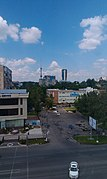
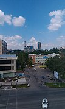
Fargʻona viloyati — Oʻzbekiston Respublikasi tarkibidagi viloyat. 1938-yil 15-yanvarda tashkil etilgan. Respublikaning sharqida, Fargʻona vodiysining janubida joylashgan. Shimoldan Namangan, Andijon viloyatlari, janub va sharqdan Qirgʻiziston, gʻarbdan Tojikiston Respublikalari bilan chegaradosh. Maydoni 6,8 ming km2. Aholisi 2023-yil 1-aprel 3 994 800 kishi. Tarkibida 15 tuman, 4 shahar (Margʻilon, Fargʻona, Quvasoy, Qoʻqon), 10 shaharcha, 164 qishloq fuqarolari yigʻini bor (2004). Markazi — Fargʻona shahri. Tarixi Xudoyorxon oʻrdasi Fargʻona darvozasi Fargʻona xalqaro aeroporti Fargʻona viloyati Oʻzbekistonning qadimgi madaniyat oʻchoqlaridan biri. Viloyat hududida topilgan tosh davri manzilgohlari va qoyatoshlariga solingan suratlar vodiyda odamlar eng qadimgi davrlardan beri yashab kelganliklaridan darak beradi. Fargʻona viloyatining tosh davri yodgorliklarini 1954-yil A. P. Okladnikov rahbarligidagi arxeologiya otryadi oʻrgangan. Vodiyning sharqiy qismidagi Qayroqqum, Xoʻjagʻor va Uchqoʻrgʻon makonlaridan mustye davriga oid tosh qurollar topildi. Vodiyning gʻarbiy qismidagi qadimgi tosh davri madaniyatiga oid manzilgohlar mustye davridagi Qalʼacha, Jarqoʻton va Qapchigʻay tosh qurollar ishlash ustaxonalari topilib oʻrganildi. 1958-yil birinchi marta Markaziy Fargʻonadan mezolit davriga oid mikrolit tosh qurollari topildi. Shuningdek, Markaziy Fargʻonadagi Uzunkoʻl va Tayloqkoʻl atroflaridan mezolit va neolit davrlariga oid 24 ta manzilgoh borligi aniqlandi (1965). Soʻx vohasidagi 28 gʻor va ungurlar (Selungur, Eshma, Obishir, Sur, Bel, Zim, Ovikambar, Bogʻishim va boshqalar) roʻyxatga olindi. Obishir gʻorlaridagi madaniy qatlam yaxshi saqlangan. Gʻorlarni qazish jarayonida mezolit davriga oid tosh qurollar, xayvon suyaklari topilgan. Bular oʻsha davr turmushini oʻrganish imkonini beradi. 1967 va 1969—70 yillarda Sankt-Peterburgdagi Ermitaj muzeyi xodimlari mezolit va neolit davrlariga oid 35 ta manzilgoh topdilar. Fargʻona viloyatining arxeologik yodgorliklarini oʻrganishda Katta Fargʻona kanalining qazilishi muhim ahamiyatga ega boʻldi. Kanalni qazish jarayonida jez davri, quldorlik va zamindorlik jamiyatlariga oid yodgorliklar topildi va tekshirildi. Quva va Toshloq tumanlari oʻrtasidagi Akbarobod qishlogʻida jez davriga oid manzilgoh, Margʻilonsoyning chap sohilida Oqtom qabristoni boʻlganligi aniqlandi. Fargʻona viloyatining Quva tumanida quldorlik davriga oid Taxyontepa, Fargʻona shahrida Simtepa (Chimtepa) kabi yodgorliklar topib oʻrganilgan. Ayniqsa, Quva shahridagi miloddan avvalgi 5-asr va oʻrta asr boshlariga oid topilmalar yaxshi tekshirilgan. 10-11-asrlarga doir tarixiy manbalarda bu shahar obodligi va kattaligi jihatidan vodiyda Axsikatdan soʻng eng yirik shahar deb qayd qilingan. Arxeologik materiallar Margʻilon shahri 10-asrda katta qishloq boʻlib, 11-12-asrlarda shaharga aylanganligini, Rishton esa 10-asrda katta shahar boʻlsa ham, 11-12 asrlarga kelib qishloq qiyofasiga kirib qolganligini isbotlaydi. Oʻtroq dehqonchilik, chorvachilik bilan shugʻullangan Chust madaniyatiga oid manzilgohlardan topilgan yodgorliklar Fargʻona vodiysini oʻrganishda muhimdir. U yerda ishlab chiqarish kuchlari va xoʻjalikning taraqqiyoti jez davrining oxirida dehqonchilik qabilalarining ijtimoiy tuzumida oʻzgarish yuz berishiga, natijada ibtidoiy tartiblar tugab, jamiyatdagi tabaqalanishga olib kelgan. Roʻzgʻor anjomlarida xususiy mulkchilik kurtaklari koʻzga tashlanadi. Arxeologik tekshirishlar natijasi Fargʻona viloyatida qadimdan odamlar yashab, ovchilik, dehqonchilik, chorvachilik bilan shugʻullanganligidan, kishilik jamiyatining keyingi bosqichlarida esa madaniyat rivojlana boshlaganligidan dalolat beradi. Viloyat Oʻzbekiston SSR tarkibida Fargʻona okrugi — Oʻzbekiston SSR tarkibida 1926—1930-yillarda mavjud boʻlgan maʼmuriy-hududiy birlik. 1926-yilda tashkil topib, uning markazi Qoʻqon shahri etib belgilangan. 1929-yil holatiga koʻra okrug 9 okrugga boʻlingan: Oltiariq tumani (markazi — Oltiariq shahri, Bagʻdod tumani (markazi — Bagʻdod qishlogʻi), Beshariq tumani (markazi — Beshariq qishlogʻi), Qoʻqon tumani (markazi — Qoʻqon shahri), Quva tumani (markazi — Quva shahri), Qudash tumani (markazi — Qudash qishlogʻi), Margʻilon tumani (markazi — Margʻilon shahri), Rishton tumani (markazi — Rishton shahar tipidagi aholi punkti), Fargʻona tumani (markazi — Fargʻona shahri). Okrug aholisi 1926-yilda 674,1 ming kishi edi. Ulardan o‘zbeklar — 80,5%, tojiklar — 9,4%, ruslar — 3,9%, qirg‘izlar — 1,9%. SSSRning aksariyat okruglari singari 1930-yil 30-iyulda Farg‘ona okrugi ham tugatilgan. Uning tumanlari bevosita Oʻzbekiston SSRga boʻysunishga oʻtkazilgan. 1938-yil 15-yanvarda markazi Fargʻona shahri boʻlgan Fargʻona viloyati (1938-yil 15-yanvar) tashkil etilgan. Viloyat tarkibiga dastlab 30 ta tuman (Oyim , Oltiariq, Bagʻdod, Baliqchi, Voroshilov tumani, Jalaquduq, Izboskan, Kaganovich, Kosonsoy, Kirov, Qoʻqon, Kuybishev, Lenin, Margʻilon, Marhamat, Pavlov, Namangan), Stalin, Toshloq, Toʻraqoʻrgʻon, Uychi, Uchqoʻrgʻon, Fargʻona, Xoʻjaobod, Chust, Yangiqoʻrgʻon) va viloyatga boʻysunuvchi shaharlar (Fargʻona, Qoʻqon, Margʻilon, Namangan va Chust) kirgan. 1939-yilda Oltinkoʻl, Quva va Frunze tumanlari tashkil etilgan. Bu chegaralar ichida Farg‘ona viloyati ikki yilga yaqin mavjud bo‘lgan, biroq SSSR Oliy Soveti Prezidiumining 1941-yil 6-martdagi Farmoni bilan Andijon va Namangan viloyatlari tashkil etilgan. Bu farmon bilan Farg‘ona viloyatining chegaralarining 3 barobar qisqarishiga sabab boʻlgan. Hozirgi Namangan viloyatining tumanlari Fargʻona viloyatidan: Kosonsoy, Toʻraqoʻrgʻon, Yangiqoʻrgʻon, Uychi, Pop, Namangan, Norin, Uchqoʻrgʻon va Chust tumanlari bilan ajralib chiqqan. Andijon viloyati Andijon okrugi chegaralarida tiklangan: Lenin, Stalin (Moskva), Ilyichevsk, Voroshilovskiy, Andijon, Komsomolobod, Baliqchi, Jalaquduq, Izboskan, Marhamat, Paxtaobod, Xo‘jaobod, Qo‘rg‘ontepa, Oltinko‘l tumanlari; Andijon, Leninsk, Ilyichevsk, Sovetobod, Moskva va shahar tipidagi shaharcha Rus qishlogʻi viloyat tarkikbiga oʻtgan. 1943-yilda Marg‘ilon tumani Oxunboboy deb o‘zgartirilgan. 1942-yilda Soʻx , 1943-yilda Buvayda, Vodil, Gorskiy va Quvasoy, 1952-yilda Yozyovon tumanlari tashkil etilgan. 1957-yilda Kaganovich tumani Oʻzbekiston, Molotov tumani esa Leningrad deb oʻzgartirilgan. 1959-yilda Buvayda, Vodil, Gorskiy, Qoʻqon, Quvasoy, Soʻx, Toshloq, Yozyovon tumanlari tugatilgan. Oʻsha yili Oxunboboyev tumani Margʻilon tumani deb nomlandi, biroq ayni vaqtda Oxunboboyev nomi bilan yangi tuman tashkil etilgan. 1960-yil 25-yanvarda tugatilgan Namangan viloyatidan Kosonsoy, Pop, Toʻraqoʻrgʻon va Chust viloyatlari Fargʻonaga oʻtkazilgan boʻlsa, 1962-yil 31-martda hammasi (Popdan tashqari) Andijon viloyatiga oʻtkazilgan. 1962 yil dekabrda Bag‘dod, Kuybishev, Marg‘ilon, O‘zbekiston, Farg‘ona va Frunze tumanlari tugatilgan. 1963-yilda O‘zbekiston, 1964-yilda Bag‘dod va Farg‘ona, 1967-yilda Rishton tumanlari tashkil etilgan. 1967-yil 18-dekabrda Pop tumani qayta tiklangan Namangan viloyatiga oʻtkazilgan. 1970-yilda Frunze tumani, 1973-yilda Buvayda va Toshloq, 1980-yilda Yozyovon tumani tashkil etilgan. 1979-yilda Quva, 1986-yilda esa Quvasoyga viloyatga boʻysunuvchi shahar maqomini olgan. Hududiy boʻlinishi Fargʻona viloyati hududiy jihatdan 15 ta tuman va 4 ta shaharga boʻlingan. Shaharlar Fargʻona viloyatiga bevosita boʻysunadigan quyidagi 4 ta shahar mavjud: Fargʻona[1] Qoʻqon[2] Margʻilon[3] Quvasoy[4] Tumanlari Tuman nomi Tuman markazi 1 Oltiariq tumani Oltiariq 2 Bagʻdod tumani Bagʻdod (shaharcha) 3 Beshariq tumani Beshariq 4 Buvayda tumani Ibrat 5 Dangʻara tumani Dangʻara 6 Fargʻona tumani Vodil 7 Furqat tumani Navbahor (qishloq) 8 Qoʻshtepa tumani Langar (qishloq) 9 Quva tumani Quva 10 Rishton tumani Rishton 11 Soʻx tumani Ravon (qishloq) 12 Toshloq tumani Toshloq 13 Uchkoʻprik tumani Uchkoʻprik 14 Oʻzbekiston tumani Yaypan 15 Yozyovon tumani Yozyovon Tabiati Fargʻona viloyatining shimoliy qismini Qoraqalpoq va Yozyovon dashtlari egallagan, janubdan Olay tizmasidan oqib tushadigan daryolarning yoyilmalari bilan oʻralgan. Janubda adirlar Olay tizmasining togʻ oldilari bilan almashinib turadi. Fargʻona viloyati yuqori seysmik zona hisoblanadi. Iqlimi kontinental. Qishi birmuncha yumshoq, baʼzan havo juda sovib ketadi. Yanvar oyining oʻrtacha harorati — 3,2 °C, iyulniki 28 °C. Eng past harorat —27,9 °C. Eng yuqori harorat 42 °C. Vodiyning gʻarbida esadigan kuchli "Qoʻqon shamoli" iqlimga salbiy taʼsir etadi. Shamolning tezligi sekundiga baʼzan 35-40 metrga yetadi. Janubi-sharqida yozda garmsel esadi. Yiliga gʻarbida 100 mm dan (Qoʻqon atrofi) sharqiy qismida 170 mm gacha, togʻ yon bagʻirlarida 270 mm gacha yogʻin tushadi, asosan, bahorda yogʻadi. Vegetatsiya davri 210—240 kun. Viloyatning shimoli-gʻarbiy chegarasi boʻylab Sirdaryo oqadi. Olay tizmasidan Isfara, Soʻx, Shohimardon, Isfayramsoy boshlanadi. Daryolar muzlikqor suvlaridan toʻyinadi. Iyul— avgustda toʻlib oqadi. Daryo suvlari sugʻorishga sarflanadi. Asosan, boʻz tuproq va oʻtloqi botqoq tuproklar keng tarqalgan. Adirlarda aksari och va tipik boʻz tuproqlar, Sirdaryo terrasalarida allyuvialoʻtloqi tuproqlar, viloyatning shimoliy qismida shoʻrxok oʻtloqlar va ajriqli oʻtloqlar mavjud. Markaziy Fargʻonadagi shoʻrxoklarda turli xil shoʻra oʻsadi. Yerlarining kattagina qismi ekinzor. Vohalarda terak, tut, qayragʻoch, daryo vodiylarida keng bargli oʻrmonlar va archazorlar bor. Yovvoyi hayvonlardan Sirdaryo toʻqayzorlarida qobon, adir va Olay tizmasi togʻ oldilarida boʻri, tulki, chiyaboʻri, quyon, boʻrsiq, jayra yashaydi. Ondatra, nutriya iklimlashtirilgan. Qushlar, sudraluvchilar koʻp. Suv havzalarida marinka, usach, zogʻora baliq, karp, oq amur, doʻngpeshona baliqlar bor. Aholisi Aholisi, asosan, oʻzbeklar, shuningdek, tojik, rus, qirgʻiz, tatar va boshqa millat vakillaridan tashkil topgan. Aholining oʻrtacha zichligi 1 km2 ga 413,9 kishi. Shahar aholisi 2.2 million kishi, qishloq aholisi 1.7 million kishi (2022)[manba kerak]. Xoʻjaligi Viloyat hokimligi Fargʻona viloyati respublikaning sanoati rivojlangan viloyatlaridan. Viloyatda 86 ta yirik sanoat korxonasi mavjud. Sanoatining yetakchi tarmoqlari: yoqilgʻienergetika, kimyo, mashinasozlik, qurilish materiallari, paxtani tozalash va qayta ishlash, yengil va oziqovkat sanoati va boshqa Energetika bazasi, asosan, issiqlik elektr styalardan iborat boʻlib, eng yiriklari: Fargʻona, Qoʻqon issiqlik elektr markazlari, Quvasoy issiqlik elektr styasi. Barcha styalar Oʻrta Osiyoning yagona energetika tizimiga birlashtirilgan. Kimyo sanoatining eng yirik korxonalari Fargona va Qoʻqon shaharlarida joylashgan. „Azot“ ishlab chiqarish birlashmasi, kimyoviy tolalar, furan birikmalari kimyo zavodlari, Qoʻqon superfosfat zavodi va boshqalar shular jumlasidandir. Viloyatda Fargʻona neftni qayta ishlash zavodi joylashgan. Qurilish materiallari sanoati rivojlangan. Quvasoydagi sement zavodi respublikada ishlab chiqariladigan sementning toʻrtdan bir qismidan koʻprogʻini beradi. Quvasoyda shifer, gisht va boshqa qurilish materiallari, shisha va chinni idishlar zavodlari ishlab turibdi. Qoʻqondagi „Elektromash“, „Tekstilmash“ va boshqa metallsozlik zavodlarida sanoatning boshqa tarmoqlari uchun asbobuskunalar, ehtiyot qismlar ishlab chiqariladi. Oziq-ovqat sanoati yil sayin rivojlanmoqda. Bu tarmoq korxonalarida turli nav yogʻlar, un, non, makaron, konserva va boshqa mahsulotlar ishlab chiqariladi. Viloyatda 84 qoʻshma korxona, 22 mingdan ortiq kichik korxona faoliyat koʻrsatadi. Fargʻona shahrida „Nodira“, „PSMK3“, „Polina“; Margʻilonda „Margʻilon tongi“ va Qoʻqonda „Zilola“ kichik korxonalar, „Oʻzsalaman“, „KabulFargʻona“, „Besteks“, „Ishonch“ qoʻshma korxonalari ishlab turibdi. Qishloq xoʻjali Qishloq xoʻjaligining asosiy tarmoklari — paxtachilik, gʻallachilik, pillachilik, bogʻdorchilik va chorvachilik. Viloyatdagi barcha ekin maydoni 288,9 ming ga, shu jumladan, 129,6 ming ga yerga don, 115,9 ming ga yerga paxta, shuningdek, texnika ekinlari, 11,7 ming ga yerga sabzavot va poliz ekinlari, 24,1 ming ga yerga ozuqa ekinlari ekiladi. 20,3 ming ga yaylovlar (2004). Haydaladigan yerlarda, asosan, obikor dehqonchilik bilan shugʻullaniladi. Paxta, bugʻdoy, sholi, makkajoʻxori, arpa, kartoshka, sabzavot va poliz maxsulotlari yetishtiriladi. Bogʻlarda koʻproq oʻrik oʻstiriladi. Anor, anjir, olma, xurmo koʻp. Tokzorlarda yuqori navli uzumdan moʻl hosil olinadi. Sugʻoriladigan yerlar viloyat hududidan oʻtuvchi Katta Fargʻona va Andijon kanallari, Janubiy Fargʻona kanali, Shohimardonsoy, Margʻilonsoy, Soʻx, Isfayramsoy, shuningdek, Karkidon, Koʻrgʻontepa suv omborlari yordamida sugoriladi. Viloyatda 8 mingdan ortiq fermer xoʻjaligi, 143 shirkat xoʻjaligi, 74 xoʻjaliklararo korxonalar, 6 parrandachilik fabrikasi mavjud. Chorvachilikda qoramol, qoʻy va echki, parranda boqiladi. Viloyat jamoa va shaxsiy xoʻjaliklarida 511,9 ming qoramol (shu jumladan, 213,2 ming sigir), 431 ming qoʻy va echki, 1260,9 ming parranda bor (2004). Transporti Temir yoʻl uzunligi 227,8 km. Avtomobil yoʻllarining uzunligi 8,6 ming km, shu jumladan, qattiq qoplamali yoʻllar 8,5 ming km. Asosiy yoʻnalishlari: Toshkent — Qoʻqon — Andijon, Margʻilon — Qoʻqon — Navoiy, Qoʻqon — Oltiariq — Marg'ilon . Fargʻona shahrida yirik aeroport ishlab turibdi. Ijtimoiy soha Maorifi va madaniyati Fayl:Fargʻona Davlat Universiteti.jpeg Fargʻona Davlat Universiteti Viloyatda 4 oliy oʻquv yurti boʻlib, 18,9 mingdan ortiq talaba, 910 umumiy taʼlim maktabi (690 mingga yaqin oʻquvchi), 8 gimnaziya (7,3 ming oʻquvchi), 47 litsey (16,3 ming oʻquvchi), musiqa va sport maktablari ishlab turibdi. Xalq taʼlimi sohasida chet el investorlari bilan aloqa bogʻlanib „Mersi KO“ jamgarmasi, Osiyo taraqqiyot banki, Yaponiya grantlar dasturi asosida kompyuter va boshqa jihozlar olindi. Viloyat sportchi oʻquvchilari 2003—04 yillardagi „Umid nihollari“ sport musobaqalarida 2 va 3 oʻrinlarni egalladilar. Fargʻona viloyatida 77 kasbhunar kolleji, 3 akademik litsey faoliyat koʻrsatadi shuningdek 4 teatr, madaniyat uylari, 3 muzey, 193 klub muassasasi, 609 ommaviy kutubxona (603,6 ming nusxa asar) aholiga xizmat koʻrsatadi. Viloyatda 1998-yilda Fargʻoniyning 1200 yillik, 2000-yilda Burhoniddin Margʻinoniyning 910 yillik yubileylari oʻtkazildi. Sogʻliqni saqlash 97 kasalxonada 6,3 ming shifokor va 31,9 ming oʻrta tibbiy xodim ishlaydi. 413 ambulatoriya poliklinikasi, 214 qishloq tibbiyot punkti, 61 qishloq tibbiyot ambulatoriyasi, 28 ta dispanser bor. Dam olish uylari va „Chimyon“, „Oʻzbekiston“, „Qiziltepa“, „Nurafshon“, „Temir yoʻlchi“ sanatoriylari, tez tibbiy yordam viloyat boʻlimi bor. Sport Fargʻona viloyatida „Universiada 2004“ sport musobaqalari oʻtkazildi. 2004-yildan boshlab viloyatda sportning suv polosi va sinxron suzish turlari yoʻlga qoʻyildi, seksiyalar tashkil etildi. Mavjud sport federatsiyalaridan tashqari qoʻl toʻpi, turon milliy yakka kurashi, sinxron suzish, armrestling kabi sport turlari boʻyicha sport federatsiyalari tuzildi. Fargʻona viloyatia jami 5135 sport inshooti mavjud. Shuningdek, Fargʻona Olimpiya zaxiralari sport kollejida dastlabki sport inshootlari ishga tushirildi. „Yoshlar madaniyat va sport majmuasi“, „Fargʻona“ markaziy stadioni, „Istiqlol“ tennis majmuasi, ot sporti maktabi, „Kimyogar“ sport majmuasi faoliyat koʻrsatadi. Sportning yunon-rim, qoʻl jangi, taekvondo, karate, shaxmat, shashka, boks, belbogʻli kurash, milliy kurash, turon milliy yakkakurashi, yengil atletika, mini futbol, voleybol, milliy dafkundo yakkakurashi turlari rivojlangan. Viloyat sportchilari 2004-yilda xalqaro sport musobaqalarida ishtirok etib 7 oltin va 4 kumush medallarga sazovor boʻlishdi. Ayniqsa, Koreya Respublikasida oʻtkazilgan boks boʻyicha yoshlar oʻrtasidagi Jahon chempionati, Qozogʻistonda armrestling, Yaponiyada baydarka va kanoe, Filippinda boks boʻyicha oʻtkazilgan Osiyo chempionatlarida viloyat sportchilari muvaffaqiyatli ishtirok etishdi. Yengil atletika boʻyicha oʻtkazilgan respublika sport musobaqalarida viloyat vakillari Ye. Tunguskova va Z. Abdullayevalar qatnashib respublika terma jamoasi tarkibiga kiritildi. Ogʻir atletika boʻyicha respublika chempionatida Ye. Sisoyeva oʻz vazni boʻyicha golib boʻldi. Shuningdek, Ye. Sisoyeva va B. Toshpoʻlatovalar 2004-yilda AQShda talabalar oʻrtasida ogʻir atletika boʻyicha oʻtkaziladigan chempionatga nomzod etib kiritildi. Nogironlar oʻrtasida stol tennisi boʻyicha oʻtkazilgan Oʻzbekiston chempionatida A. Ismatullayev gʻolib boʻlib, Jahon chempionatida ishtirok etish uchun Respublika terma jamoasi tarkibiga kiritildi. 2004-yilning avgust oyida Afinada oʻtkazilgan 28 yozgi Olimpiya oʻyinlarida Fargʻona viloyatining 5 sportchisi ishtirok etdi. 2004-yilda viloyatda basketbol boʻyicha xalqaro „Mersiko“ turniri, milliy va belbogʻ kurashi boʻyicha Hazrat Ali hamda Temirjon va Hamid polvonlar xotirasiga bagʻishlangan xalqaro turnirlarda respublika viloyatlari, 10 dan ortiq xorijiy davlat polvonlari katnashdi. Yil davomida oʻtkazilgan sport musobaqalarda ishtirok etib, viloyat sportchilari 250 dan ortiq medallarni qoʻlga kiritishdi. 15 sportchi sport ustasi normasini bajardi. Adabiyoti Fargʻona zamini koʻplab isteʼdodlar beshigi boʻlgan. Qoʻqon tarixiga oid baʼzi manbalarda 10-asrda Fargʻonada yozma adabiyot namunalari boʻlganligi qayd etilgan. Abu Tayyi Hoʻqandiy (10—11-asrlar) ijodi haqidagi maʼlumotlar buning yaqqol dalilidir. Biroq, oʻrta asrlar Fargʻona viloyati adabiyoti haqidagi manbalar juda kam. 18-asrdan boshlab Fargʻona vodiysi, xususan, Qoʻqonda fan, adabiyot va sanʼat rivoj topganligini koʻrish mumkin. Qoʻqon xonligi tashkil topishi va markazlashgan davlat sifatida faoliyat yuritishi xonlik hududida oʻziga xos adabiy muhitning shakllanishiga imkoniyat yaratdi. Bu davrda Huvaydo, Shoʻxiy, Akmal Xoʻqandiy, Nizomiy Hoʻqandiy kabi adabiyot namoyandalari ijod qildilar. Huvaydoning „Devon“i tarkibiga kirgan sheʼrlar va „Rohati dil“ dostoni xalq orasida mashhur boʻlgan. 19-asrda ushbu hududda „Qoʻqon adabiy muhiti“ nomi bilan maʼlum boʻlgan adabiyot ravnaq topdi. Ushbu muhitning tashkilotchisi Qoʻqon xoni Muhammad Said Amir Umarxon (1787— 1822) saroyiga 100 ga yaqin ijodkorni jalb etib, ularning ijod qilishi uchun moddiy va maʼnaviy sharoit yaratib berdi. Xonning oʻzi ham Amiriy taxallusi bilan sheʼrlar „Devoni“ni yozdi. Umarxon davrida Ado, Fazliy, Hoziq, Hijlat, Vazir, Maxmur, Nodir-Uzlat, Gʻoziy, Maʼdan, Miriy, Nodira, Uvaysiy, Mahzuna, Gulxaniy, Mushrif, Dabiriy, Ravnaq, Umidiy, Jadid, Mahzun Ziyovuddin Xoʻqandiy, Zokir, Fayziy, Vahmiy kabi ijodkorlar shuhrat qozonganlar. Keyinroq, Umarxonning oʻgʻli Qoʻqon xoni Muhammad Alixon (Madalixon) ham „Xon“ taxallusi bilan sheʼrlar yozgan, „Layli va Majnun“ dostonini yaratgan. Ushbu davr adabiyotining namunasi sifatida Abdulkarim Fazliyning Umarxon topshirigʻi bilan 84 zamondosh shoirlar haqida oʻzbek va fors tillarida sheʼriy yoʻsinda yozilgan „Majmuai shoironi Umarxon“ tazkirasi; Gulxaniyning „Zarbulmasal“ asari, Hoziqning „Yusuf va Zulayho“, Nodir-Uzlatning „Haft gulshan“ dostonlarini aytish mumkin. Ayol ijodkorlarning mavqei baland boʻlganligini taʼkidlash lozim. Qoʻqon malikasi, Umarxonning zavjasi Mohlaroyimning Nodira va Maknuna taxalluslari bilan ijod etgan oʻzbek va fors tillaridagi sheʼrlari alohida „Devon“ga jam boʻlsa, Jahon otin Uvaysiyning 4 devoni, „Voqeoti Muhammad Alixon“, „Shahzoda Hasan“ va „Shahzoda Husayn“ dostonlari, Mahzunaning goʻzal sheʼrlari adabiyotimiz xazinasidan munosib oʻrin olgan. Fargʻona viloyati adabiyotining bu davrdagi yana bir xususiyati koʻp sonli tarixiy-adabiy asarlarning yaratilganligidir. Soʻnggi tadqiqotlardan maʼlum boʻlishicha, shu davrda birgina Qoʻqon xonligi tarixiga oid 40 ga yaqin sheʼr va nasriy asarlar yaratilgan. Sheʼriy uslubda yaratilgan bunday asarlar sirasiga Fazliyning „Shahnomai Umarxon“, Mutribning „Shahnomai Devona Mutrib“, Andalibning „Shahnomai devona Andalib“, Uvaysiyning „Voqeoti Muhammad Alixon“ dostonlari; Imomali Qori Qunduziy — Komiyning taniqli kishilar tavalludi, vafoti va Qoʻqon tarixiga oid turli voqea — sanalarning sheʼriy taʼrixlari jamlangan „Tavorixi manzuma“ kabi asarlari kiradi. Tarixga oid nasriy asarlar qatorida esa Hakimxon toʻraning „Muntaxab uttavorix“, Mulla Avaz Muhammad Attorning „Tuhfat uttavorixi Xoniy“, Mushrifning „Shahnomai nusrat payem“, Mulla Niyozmuhammad Hoʻqandiyning „Tarixi Shohruhiy“, Mirzo Olim Mushrifning „Ansobus salotin va tavorixi xavoqin“, Muhammad Amin Domulloning „Tuhfat uttavorix“, Abdugʻafur Hoʻqandiyning „Zafarnomai Xudoyorxon“, Mahmud Hakim Yayfoniyning „Xullas uttavorix“, Muhammad Aziz Margʻiloniyning „Tarixi Aziziy“ va boshqa asarlarni keltirish mumkin. Tasavvufiy adabiyot namunalaridan Azim Xoʻja eshon Azimiyning „Muroduloshiqin“ devoni, Abdulaziz Majzubning „Devon“i va „Tazkiraulavliyo“ asari (19-asrning 1yarmi), Salohiddin Soqibning „Maʼlumoti Soqibiy“ risolasi (19-asrning 2-yarmi) eʼtiborga loyiq. 19-asrda Qoʻqon shahri va uning atrofida 100 dan ziyod shoir va adiblar devon tuzishgan. Umarxon, Muhammad Alixon va Nodirabegim davrlarida Qoʻqonda xushxat xattotlarni yigʻib, moddiy jihatdan taʼminlab, Sharq adabiyotining koʻplab nodir asarlari koʻchirtirilib, koʻpaytirilgan. Shulardan eng koʻp koʻchirilganlari Jomiy, Alisher Navoiy, Bedil, Muhammad Fuzuliy va Amiriy asarlaridir. Maʼlumotlarga koʻra, Amir Umarxon Lutfiy, Alisher Navoiy va Amiriy devonlari jamlangan, goʻzal xatli, oltin bezakli „Muhabbatnoma“ majmuasini usmonli turk sultoniga hadya tariqasida joʻnatgan. Fargʻona viloyati adabiyotida Sharq mumtoz sheʼriyatining deyarli barcha janrlarida samarali ijod qilindi. Badiiyat va gʻoya, mavzular rangbarangligi bu davr adabiyotiga xos xususiyatlardan biri ekanligi asarlardan maʼlumdir. Bu jihat 19-asrning 2-yarmi — 20-asr boshlari adabiyotida ham yaqqol koʻrinadi. Ushbu davrda Pisandiy, Qoriy, Muqimiy, Muhayyir, Furqat, Zavqiy, Gʻurbat, Rojiy, Muhsiniy, Haziniy, Mahjur, Muqyi, Zoriy, Sirojiy, Jaloliy, Yoriy, Ibrohim Davron, Mirzoi Hoʻqandiy, Nasimiy Xoʻqandiy, Hamza Hakimzoda Niyoziy va boshqa samarali ijod qildilar. Bu davr adabiyotining yorqin namoyandalaridan Muqimiy ijodidagi xalqona lirika bilan hajviy yoʻnalish oʻziga xos maktabni yaratgan boʻlsa, Furqat ijodidagi serohang misralar va maʼrifatparvarlik ruhidagi sheʼrlar, Haziniy ijodidagi sufiyona istilohlarga boy, purhikmat sheʼrlar, Qoriy lirikasidagi jozibadorlik, Hamza ijodidagi ijtimoiy ruh bu davr adabiyotining ravnaqidan dalolat beradi. Ayol ijodkorlardan Dilshod Barno, Anbar Otin, Samarbonu kabi shoiralarning ijodi qam samarali boʻldi. Milliy uygʻonish davri adabiyoti — jadidchilik yoʻnalishida ijod qilgan va maʼrifatchilik harakatida faol ishtirok etgan ijodkorlar sirasiga Ibrohim Davron, Hamza Hakimzoda Niyoziy, Mirzo Xayrullo Hoʻqandiy, Ashurali Zohiriy, Poʻlatjon Qayyumiy kabilarni kiritish mumkin. Ibrohim Davronning „Ashʼori nisvon“ sheʼrlar majmuasi, Hamzaning „Milliy qoʻshiklar uchun milliy sheʼrlar“ toʻplami, Mirzo Xayrullo Hoʻqandiyning „Axloqi zamima“, „Yigirma hikmat“ asarlari va boshqa oʻsha davr adabiyotining mahsullaridir. Poʻlatjon Qayyumiyning 20-asrning 2-yarmida yaratgan „Tazkirai Qayyumiy“, „Qoʻqon tarixi va adabiyoti“ va „Tazkirai shuaro“ asarlari ham eʼtiborga loyiq. 20-asr hozirgi zamon oʻzbek adabiyotining koʻplab vakillari ham Fargʻona viloyati adabiyotining qaldirgʻochlaridir. Abdulla Qahhor, Sobir Abdulla, Charxiy, Xusayn Shams, Amin Umariy, Shokir Sulaymon, Adham Rahmat, Ibrohim Rahim, Xudoyberdi Toʻxtaboyev, Anvar Obidjon kabi shoir va yozuvchilar shu zamin farzandlaridir. 20-asrning 70—90-yillarida Yoʻldosh Sulaymon, Oxunjon Hakimov, Anvar Yusupov, A. Muqimov, Habibullo Said Gʻani, Komil Joʻra, Oʻrmon Omonov, Alisher Ibodinov, Bahodir Iso, Ismoil Mahmud, Nurullohoji Qoʻqondiy, Enaxon Siddiqova, Saydali Odilov, Zuhra Aliyeva, Matluba Dehqon qizi, Ilmer Nazarov, Abdulhamid Muxammadiyev, Nosir Zohid va boshqalar oʻz ijodlari bilan elga tanildilar. Mustaqillik yillarida Nabijon Boqiy, Nurulloh Muhammad Raufxon, Sayd Anvar, Farida Afroʻz, Iqbol Mirzo, Abdurahmon Joʻra, Mirza Karim, Gulbahor, Otabek Rustambek oʻgʻli, Muxtasar Tojimamatova, Ozoda Toʻraqulova kabi ijodkorlar yetishib chiqdilar. Fargʻona viloyatida Oʻzbekiston Respublikasi ijodiy uyushmalari (yozuvchilar, rassomlar, jurnalistlar, meʼmorlar va boshqa)ning viloyat boʻlimlari faoliyat koʻrsatib kelmoqda. Matbuoti, radioeshittirishi va televideniyesi Viloyatda 10 ta jurnal, 79 ta gazeta, shu jumladan, 2 viloyat gazeta („Fargʻona haqiqati“, „Ferganskaya pravda“), 20 shahar va tuman, 20 ta tarmoq hamda 37 ta xususiy gazetalar chop etiladi. Fargʻona viloyatida radioeshittirishlar 1932-yilda efirga uzatila boshlagan. Viloyat radiosi orqali oʻzbek, tojik va rus tillarida kuniga 18 soat eshittirishlar beriladi. Viloyat televideniyesi oʻz koʻrsatuvlarini 1991-yil 22-dekabrdan namoyish eta boshladi. Oʻsha paytlarda haftasiga 1 soat koʻrsatuvlar berilgan. Fargʻona viloyati televideniyesi haftalik koʻrsatuvlari 18 soatni tashkil etadi. Koʻrsatuvlar oʻzbek, tojik va ingliz tillarida olib boriladi. Undan tashqari „Ruxsot“ TRK, „Margʻilon“, „Tohir-Bagʻdod“ TV telekanallari hamda „Soʻx“, „Muloqot“ telestudiyalari faoliyat koʻrsatadi. Meʼmoriy yodgorliklari Fargʻona viloyatida asosiy hisoblangan Qoʻqon meʼmorligining shakllanishi 18-asrdan boshlanadi. Bu yerga dastlab Buxorodan bir guruh binokorlar taklif etildi, ular Madrasa, masjid, maqbara, karvonsaroy, koʻprik va boshqa binolarni bunyod etdilar. Hozirgacha shaharda saqlangan meʼmoriy yodgorliklardan eng qadimgisi Madrasai Mir nomi bilan xalq orasida mashhur boʻlgan Norboʻtabiy madrasasidir (18-asr oxiri). Bu Madrasa Qoʻqon hukmdori Norboʻtabiy hukmronligi davriga oid. Undan tashqari, Daxmai shohon, Daxmai Modarixon meʼmoriy majmualari (19-asrning 20-yillari), Miyon Hazrat (1860-yil), Kamol Qozi (1837yil) madrasalari, Oʻrda (1871yil, Qoʻqon xoni Xudoyorxon tomonidan qurilgan), Jome masjidi (19-asr oxiri — 20-asr boshlari) kabi meʼmoriy yodgorliklar saqlangan.
 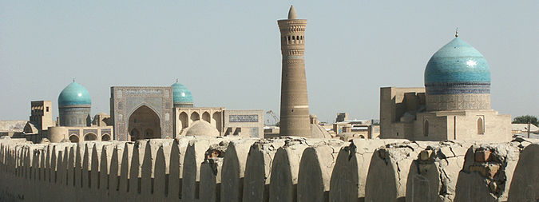
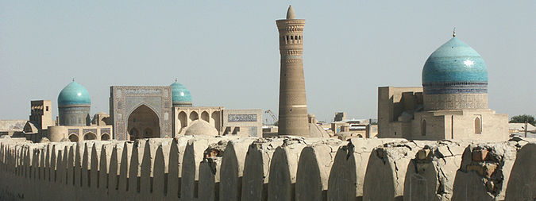

Jizzax viloyati — Oʻzbekiston Respublikasi tarkibidagi viloyat. Respublikaning markaziy qismida joylashgan. 1973-yil 28-dekabrda viloyat sifatida tashkil etilgan. Shimoliy-sharqda Qozogʻiston Respublikasi va Sirdaryo viloyati, janubi-gʻarbda Samarqand, Navoiy viloyatlari, janubi-sharqda Tojikiston Respublikasi bilan chegaradosh. Maydon 21,2 ming km2. Aholisi 1 mln 483,1 ming kishi (2022.04). Jizzax viloyatida 12 ta tuman bor: Arnasoy, Baxmal, Doʻstlik, Sharof Rashidov, Zarbdor, Zafarobod, Zomin, Mirzachoʻl, Paxtakor, Yangiobod, Forish, Gʻallaorol. 20 ta shahar va shaharchalar (Gagarin, Dashtobod, Doʻstlik, Jizzax, Marjonbuloq, Paxtakor, Gʻallaorol, Zarbdor, Zomin, Boʻston, Zafarobod, Oʻsmat, Uchquloch, Bogʻdon, Pishagʻar, Qoʻytosh, Sharq yulduzi, Arnasoy), 400 qishloq fuqarolari yigʻini bor (2022). Markazi — Jizzax shahri. Tabiati Relyefi togʻlik, qir va tekisliklardan iborat. Janubiy qismini Turkiston tizmasining tarmoqlari (Morguzar tizmasi), gʻarbini Nurota tizmasining sharqiy qismi egallagan. Shimoliy, shimoli-gʻarbi va sharqiy qismi (Mirzachoʻl va Qizilqum choʻlining janubi-sharqi) tekislikdan iborat. Iqlimi keskin kontinental. Yanvarning oʻrtacha tempaturasi —4° gacha, iyulniki 28°. Togʻ oldilarida iqlim choʻl va dashtlarga nisbatan yumshoq. Yillik yogʻin viloyat janubida 400—500 mm, shimolida 250—300 mm. Vegetatsiya davri 210—240 kun. Yillik quyoshli kunlar 2800—3000 soat. Eng yirik daryolari — Sangzor, Zominsuv. Togʻlardan oqib tushuvchi soy koʻp. Ekinlarni sugʻorish uchun Tuyatortar kanali, 1- va 2-Janubiy Mirzachoʻl kanallari, Jizzax, Zomin, Qorovultepa suv omborlari qurilgan. 2001-yilda Arnasoy suv ombori qurila boshlandi. Arnasoy, Aydarkoʻl va Tuzkon koʻllaridan baliqchilikda foydalaniladi. Togʻ yon bagʻirlarida yovvoyi jiyda, archa, bodom, yongʻoq, naʼmatak, zira, rovoch, zirk kabilar oʻsadi. Yovvoyi hayvonlardan oq tirnoqli ayiq, chiyaboʻri, tulki, quyon, qobon, boʻrsiq, jayra uchraydi; burgut, lochin, qora turna, bulduruq, tuvaloq, tustovuq, qirgʻovul, yovvoyi oʻrdak, kaklik kabi qushlarning 150 dan ortiq turi mavjud. Viloyatda Zomin milliy bogʻi, Zomin va Nurota davlat qo'riqxonalari tashkil qilingan. Jizzax viloyati Aydarko'l Arnasoy ko'llari Jizzax viloyati Aydarko'l Arnasoy ko'llari Jizzax viloyati Aydarko'l Arnasoy ko'llari Jizzax viloyati Aydarko'l Arnasoy ko'llari Jizzax viloyati Zomin tumani Jizzax viloyati Zomin tumani Jizzax viloyati tabiati Jizzax viloyati tabiati Tarkibida temir, oltingugurt, vodorod, radiy, kremniy kislotasi, karbon gazi, ishqor boʻlgan shifobaxsh mineral suvlar bor. Gʻallaorol, Forish, Mirzachoʻl tumanlarida balneologik sanatoriylar faoliyat koʻrsatadi. Sulfatxlorid natriyli Chimqoʻrgʻon balchigʻidan fizioterapiya va davolash profilaktika muassasalarida foydalaniladi. Foydali qazilmalardan oltin, kumush, volfram, qoʻrgʻoshin, rux, temir, molibden, marmar, vollastonit, bazalt, granit, korund, ohak bor. Aholisi 1 km2 ga 46,9 kishi toʻgʻri keladi (2001). Aholining koʻpchiligi oʻzbeklar, shuningdek, qozoq, qirgʻiz, tojik, rus, tatar, turk, ukrain, nemis, fors, arman va boshqalar. Jami 70 dan ortiq millat vakili yashaydi. Shaharliklar 30 %, qishloq aholisi 70 % ni tashkil etadi. Xoʻjaligi Jizzax viloyati respublika ishlab chiqarishda va madaniy taraqqiyotida salmoqli oʻrin tutadi. Xususan, paxta, gʻalla, sabzavot, meva, chorva mahsulotlari yetishtiriladi. Bogʻdorchilikni rivojlantirishga eʼtibor berilmoqda. Qurilish materiallari, xalq isteʼmol mollari ishlab chiqaradigan korxonalar salmogʻi oshdi. Viloyatda tadbirkorlikni rivojlantirish maqsadida 2,5 mlrd. soʻmdan ziyod kredit mablagʻlari ajratildi. Faoliyat koʻrsatayotgan 9400 ga yaqin xoʻjalik subyektlarining qariyb 8300 tasi nodavlat xoʻjaliklaridir. Hududiy boʻlinishi Tuman nomi Tuman markazi 1 Arnasoy tumani Gʻoliblar 2 Baxmal tumani O'smat 3 Doʻstlik tumani Doʻstlik 4 Forish tumani Yangiqishloq 5 Gʻallaorol tumani Gʻallaorol 6 Sharof Rashidov tumani Uchtepa 7 Mirzachoʻl tumani Gagarin 8 Paxtakor tumani Paxtakor 9 Yangiobod tumani Balandchaqir 10 Zomin tumani Zomin 11 Zafarobod tumani Zafarobod 12 Zarbdor tumani Zarbdor Sanoati Hozirgi Jizzax viloyati qadimdan Buyuk ipak yoʻlida joylashganligi bu xududda savdo madaniyatining tez rivojlanishiga taʼsir etdi. Ilk oʻrta asrlarda jahon bozorida Jizzaxda jun va teridan tayyorlangan mahsulotlarga talab katta boʻlgan. 8—9-asrlarda kulollik, zargarlik, aravasozlik kabi mahallalarining mavjudligi milliy hunarmandchilikning oʻsha davrlarda rivojlanganligidan darak beradi. Viloyatdagi ishlab chiqarish sanoat tarmoqlarini hududiy jihatdan Jizzax, Gʻallaorol, Dashtobod, Doʻstlik shaharlaridagi sanoat tarmoqlariga ajratish mumkin. Bular foydali qazilmalarni qazib chiqarish, paxtachilik va irrigatsiya bilan bogʻliq boʻlgan tarmoqlar, paxtani qayta ishlash, elektrotexnika sanoati, qurilish materiallari ishlab chiqarish, kimyo, yengil sanoat (ip yigiruv, paypoq toʻqish, ustki trikotaj fabrikalari), oziq-ovqat sanoatidir. Viloyatda qurilish materiallari, oziq-ovqat mahsulotlari, xalq isteʼmoli mollari ishlab chiqaruvchi korxonalarning salmogʻi sezilarli. Shulardan Dashtobod qurilish materiallari, Zomin oniks, Baxmal marmar, gʻisht zavodlari, Dashtobod, Doʻstlik un kombinatlari, Jizzax mebel fabrikasi ishlab turibdi. Jizzax viloyatida konchilik tarmogʻi ham rivojlangan. Marjon buloq oltin koni, Qoʻytoshdagi ohak, vollastonit, volfram, Koʻtarmada ohak, Uchqulochda qoʻrgʻoshin konlari faoliyat koʻrsatmoqda. 1991—2001-yillar davomida Jizzax viloyatida jahon andozasi darajasidagi mahsulotlar ishlab chiqaruvchi zamonaviy qoʻshma korxonalar tashkil qilindi. Viloyatda qoʻshma, kichik va xususiy korxonalar mavjud. Qoʻshma korxonalarda ishlab chiqarilayotgan sanoat mahsulotining salmogʻi tobora ortib bormoqda. „Jibri“ (Oʻzbekiston — Buyuk Britaniya) qoʻshma korxonasi-yiliga 50 ming t chigitni qayta ishlab oʻsimlik yogʻi ishlab chiqaradi, „Kumush tola“ (Oʻzbekiston—Tojikiston) qoʻshma korxonasi-yiliga 80 t dan ziyod ipak tolasini tayyorlaydi, „Paxta interneyshnl“ (Oʻzbekiston—Suriya) qoʻshma korxonasi-yiliga 10 ming t lintdan sellyuloza ishlab chiqarish quvvatiga ega, „Baxmalsharob“ (Oʻzbekiston—Polsha) qoʻshma korxonasida mineral suvi qadoqlanadi. Shuningdek, paxta tolasidan eshilgan ip tayyorlovchi „Irjartekstil“ (Oʻzbekiston—Pokiston), yogʻ-moy va sovun ishlab chiqaruvchi „Madina“ (Oʻzbekiston—Xitoy), „Jizzax—Telekom“ (Oʻzbekiston —Indoneziya), Qoʻytosh shaharchasida „Vollastonit“ ishlab chiqarish sexi (Oʻzbekiston—Rossiya), sanoat mahsulotlari ishlab chiqaruvchi „Vostok LTD“, „Belogorsk“ qoʻshma korxonalarining hissasi sezilarlidir. Yiliga 1 mln dona akkumulyator tayyorlovchi „Oʻzeksayd“ qoʻshma korxonasi faoliyat koʻrsatadi (2002). „Zilolateks“ aksiyadorlik jamiyatida 250 t nitron matosi ishlab chiqarish quvvati ishga tushirildi. Qishloq xoʻjaligi Viloyat qishloq xoʻjaligining asosiy tarmogʻi — paxtachilik. Paxta ekini maydoni viloyatdagi sugʻoriladigan yer maydonining asosiy qismi (110 ming ga) ni tashkil etadi. Viloyatning 12 tumanidan 10 tasida paxta ekiladi. 1994-yildan Jizzax viloyatida gʻalla ekiladigan maydon keskin oshirildi. 2000-yilda 317,7 ming t gʻalla tayyorlandi. Gʻallachilikni rivojlantirish uchun tabiiy sharoitlar va boshqalar imkoniyatlar mavjud, Viloyat qishloq xoʻjaligida pillachilik ham salmoqli oʻrin tutadi. Joylarda yiliga 440—480 t pilla yetishtirish imkonini beradigan tabiiy resurslar yaratildi. Qishloq xoʻjaligida kartoshka, poliz, sabzavot, uzum, hoʻl meva yetishtirish bilan ham shugʻullaniladi. Bir-yilda 25—30 ming t kartoshka yetishtiriladi. Poliz va sabzavotdan-yiliga oʻrtacha 70 ming t dan hosil olinadi. Jizzax viloyatida 9,4 ming ga dan ortiq, maydon mevali bogʻ (olma, behi, shaftoli, oʻrik, olcha, gilos, anor), 7,9 ming ga tokzor, 2,4 ming ga tutzor, 410 ga koʻchatzor. 78,7 ming ga yer qoʻriqxonaga aylantirilgan. Qishloq xoʻjaligida foydalaniladigan yerlar 1241,4 ming ga, shu jumladan haydaladigan yerlar 478,5 ming ga, shundan sugʻoriladigan yerlar 266 ming ga, lalmi yerlar 212,5 ming ga, yaylovlar 850 ming ga, pichanzorlar 12,5 ming ga, koʻp-yillik daraxtzorlar 21,5 ming ga. Don ekinlari 212 ming ga, paxta ekiladigan maydon 110,8 ming ga, sabzavotpoliz ekinlari 10 ming ga, ozuqa ekinlari 12,5 ming ga, 165 ming ga oʻrmonzor bor. (2001). Jizzax viloyatida jamoa, davlat, shirkat va fermer xoʻjaliklari mavjud. Fermer xoʻjaliklarining salmogʻi ortib bormoqda. Viloyat qishloq xoʻjaligida chorvachilik aloxida oʻrin tutadi. Barcha xoʻjaliklarda 280 mingdan ziyod qoramol, 800 mingdan koʻproq qoʻy va echki, qariyb 15 ming ot, 410 mingga yaqin parranda boqiladi (2000). Transporti Temir yoʻl viloyatda asosiy transport turlaridan. Umumiy uzunligi 217 km (2001). Avtomobil yoʻllari ham salmoqli oʻrin tutadi. Havo yoʻllari Jizzax shahrini Toshkent va boshqalar viloyat markazlari, shuningdek, Kavkaz, Qrim bilan bogʻlaydi. Madaniy-maorif, sogʻliqni saqlash va sporti 2000/01 oʻquv-yilida viloyatda 530 umumiy taʼlim maktabida 253 ming oʻquvchi oʻqidi. Gimnaziyalar, 2 akademik litseyda 647 oʻquvchi taʼlim oladi (2002). Musiqa va sport maktablari, gimnaziyalar faoliyat koʻrsatmoqda. Viloyatda 6 ta davlat oliy oʻquv yurti bor: Jizzax davlat pedagogika universiteti, Jizzax politexnika instituti, Oʻzbekisaton milliy universiteti Jizzax filiali, Sambharm universiteti,Qozon Federal Universiteti, Jizzax bolalar davolash ilmiy amaliy instituti. Oʻzbekiston gʻallachilik ilmiy tadqiqot Jizzax viloyati, onalik va bolalikni muxofaza qilish ilmiy markazi faoliyat koʻrsatmoqda. Viloyat shahar va tumanlarida 1998—2001-yillarda 7 kollej va 2 akademik litsey binolari qurilib ishga tushirildi. Ular zamonaviy oʻquv qurollari va texnika bilan jihozlandi. 32 kasb-hunar kollejida 17293 oʻquvchi taʼlim oladi. Akademik litseylarda tayyorlov, asosan, 4 yoʻnalishda olib borilayotgan boʻlsa, kasb-hunar kollejlarida 33 mutaxassislik boʻyicha oʻqitiladi (2002). Viloyatda 5 muzey (Jizzax viloyat oʻlkashunoslik muzeyi, Sharof Rashidov muzeyi, Zomin tarixi muzeyi, Hamid Olimjon muzeyi, Mehnat Qahramoni X. Nosirov muzeyi), 289 jamoat kutubxonasi (8 mln nusxadan ortiq asar), 126 klub, 12 tuman markaziy, 73 qishloq va shahar madaniyat uylari, 77 badiiy havaskorlik, 54 folklor-etnografik jamoalar, 12 maqomchilar guruhi, 60 xoreografik rake dastalari, vokal va estrada guruhlari faoliyat koʻrsatadi. Jizzax viloyatida 3 teatr: Yunus Rajabiy nomidagi viloyat musiqali drama teatri, viloyat qoʻgʻirchoq teatri, Gagarin sh.da qozoq milliy teatri bor. Viloyatda 1996-yilda tashkil etilgan „Oʻzbeknavo“ gastrol konsert birlashmasi boʻlimining yosh iqtidorli sanʼatkorlaridan L. Moskalyova, F. Ibragimova, G. Sultonova, O. Malikovlar „Oʻzbekiston —Vatanim manim“, „Yangi taronalar“, „Sado—99“ koʻrik tanlovlarining gʻolibi boʻlishdi. Jizzax viloyatida 5 madaniyat va istirohat bogʻi, 2 bolalar bogʻi, „Sangzor koʻli“ istirohat bogʻi, H. Olimjon nomidagi shoirlar bogʻi, „Oʻrda“ oromgohi, Jizzax, Zomin, Gʻallaorol, Zarbdor va Paxtakor shaharlarida Xotira bogʻlari, „Maʼnaviyat va maʼrifat“, „Salomatlik va goʻzallik“, mahalla va yoshlar markazlari, „Istiqlol“ yoshlar forumi, Baxt uylari bor. Viloyatda Parpiota, Navkatota, Avliyoota Malikajdarota, Saʼd ibn Vaqqos, Sayfinota, Savrikota, Qavsota ziyoratgohlari, Temur darvoza, Xuttot, Quyosh taqvimi obidalari, qadimiy Jizzax, Hoshim qoʻrgʻon, Abdullaxon qoʻrgʻoni, Koʻkrabot, Sabat kabi arxeologik yodgorliklar mavjud. Jizzax viloyatida 67 kasalxona, 47 ta hududiy va 13 markaziy kasalxona, 1 davolash markazi, 16 maxsus dispanser, 2,3 ming vrach, shu jumladan stomatologlar, 9,9 ming oʻrta maʼlumotli tibbiy xodim bor. Viloyat tez yordam markazi, onalar va bolalarni muhofaza qilish ilmiy markazi, markaziy bolalar shifoxonasi, viloyat tugʻruqxonasi, reabilitatsiya markazi, oʻsmirlar dispanseri kabi muassasalar tashkil etildi, 34 ta xususiy shifoxona, 170 dorixona, 7 ta fitobar ishlab turibdi. Sanatoriy bor (2002). Jizzax viloyatida sportning kurash, boks, moto poyga, yengil atletika, karate kabi turlarida respublika va xalqaro musobaqalar oʻtkazish odatga aylandi. 2001-yilda Jizzaxda oʻrta maxsus, kasb-hunar taʼlimi tizimidagi oʻquv yurtlari talabalarining „Barkamol avlod“ sport oʻyinlari oʻtkazildi. Sportning 8 turi boʻyicha 2000 ga yaqin sportchi yoshlar Jizzax shahri, Paxtakor, Gʻallaorol, Baxmal tumanlaridagi stadion va sport zallarida bellashdilar. Viloyatda jami 28 stadion, 2 ta suv sporti saroyi, 18 tennis korti, 136 sport zali mavjud. Jizzax shahrida Olimpiya zaxiralari kolleji ishga tushirildi. Kollejda umumiy maydon 9 ga (72x102 m yopiq sport maneji) sport majmuida bir vaqtda 11 turdagi sport mashgʻulotlari olib boriladi. Kollej 4 tennis korti, 1 suzish havzasi, 200 oʻrinli yotoqxonaga ega. Shuningdek, 2 futbol maktabi faoliyat koʻrsatadi. Viloyat yosh sportchilari orasida boks boʻyicha Osiyo chempioni Lazizbek Zokirov, bir necha-yillardan buyon shaxmat boʻyicha xalqaro musobaqalar sovrindori, respublika chempioni, oʻquvchi Yulduz Hamroqulovalar bor. Adabiyoti Jizzax viloyati qadimdan ilm-fan va ijodkorlar oʻsib ulgʻaygan yurt. Bu zaminda oʻrta acrlarda shayx Abulhasan Harakoniy (950—1034), shayx Aba Ali Fayumardiy (1084), Abu Tala ibn Nasr ibn Jundabek al-Usrushoniy, Poyanda Zaminiy, Soki Zaminiy kabi islom maʼrifati va fiqh ilmiga ulkan hissa qoʻshgan allomalar yashab oʻtgan. Keyinroq 19—20-asrlarda Maxmur Koriziy, Ubaydulloh Alamkash, Narzullo Narziy, Inomxon Maxjur singari ijodkorlar boy adabiy meros qoldirgan. 20-asr oʻzbek adabiyoti rivojida Jizzaxda tugʻilib oʻsgan Hamid Olimjon, Sharof Rashidov, Nazir Safarov, Shukur Saʼdulla, Sarvar Azimov kabi adiblarning munosib hissasi bor. 20-asrning oxirlarida Jizzaxdan Keldi Qodir, Jonibek Quvnoq, Ergash Muhammad, Saʼdulla Hakim, Rustam Gʻaniyev, Asror Moʻminov, Oqiljon Husanov, Sharofat Botirova, Ibrohim Donish, Sayyora Toʻychiyeva, Venera Ibrohimova, Sattor Qoraboyev, Meli Normatov, Farogʻat Kamolova kabi ijodkorlar oʻz mahoratlari bilan adabiy jamoatchilikka tanildi. Gulchehra Shahobiddin qizi, Shahlo Ahrorovalar sheʼriyati, qoʻshiqchilik mahorati bilan ajralib turdi. Matbuoti, radio va televideniyesi Jizzax viloyatida 2 viloyat gazeta („Jizzax haqiqati“, „Djizakskaya pravda“), tuman va shahar gazetalari chiqadi. Viloyatda, shuningdek, tarmoq gaz.lari, jurnallar ham nashr etiladi. Viloyat radiosi oʻz eshittirishlari bilan viloyat ijtimoiy-siyosiy hayotida oʻz oʻrni va mavqeiga ega. 1990-yilda Jizzax viloyati televideniyesi tashkil etilib, uning birinchi koʻrsatuvlari efirga uzatildi. Jizzax shahrida „Baxtiyor — Shahboz“ firmasining telestudiyasi koʻrsatuvlar olib boradi. Viloyat teleradiokompaniyasi haftasiga 4 soat, Jizzax shahri televideniyesi 7 soat hajmdagi eshittirish va koʻrsatuvlar olib boradi. Jizzax shahrida kabelli televideniye ham ishlayapti. Teletomoshabinlar respublika televideniyesi va Rossiya va boshqa xorijiy davlatlar telekanallarini tomosha qilishlari uchun imkoniyatlar mavjud. 2014 yilda viloyat yangiliklarini yorituvchi internet nashr www.sangzor.uz (Wayback Machine saytida 2023-02-26 sanasida arxivlangan) saytiga jurnalist Hakimjon Fozilov tomonidan asos solindi. Sayt 2017 yilda rasmiy OAV sifatida davlat ro'yxatidan o'tgan. Hozirda saytda nafaqat viloyat, balki respublik va dunyo mamlakatlari yangiliklari ham muntazam yoritib kelinmoqda. Viloyat tarixi va madaniy me'ros obyektlari Jizzax vohasi O'zbekiston tarixida avlodlar ardog’iga munosib madaniy manzillari, bebaho tarixiy maskanlari bilan eng munosib o’ringa daxldor. Jizzax tarixining eng qadimgi sahifalari haqida gap ketganida, albatta, jahon tarixiga daxldor sanalmish “Sayxonsoy qoyatoshlari”dagi suratlarni (4,5 ming yil avval), eng qadimgi odamlar yashaganligi taxmin etilayotgan “Peshag’or g’ori” madaniy qatlamlarini, ikki ming – ikki yarim ming yillik tarixga ega “Mozorsoy yodgorliklari”ni, “Jomonjar er osti ehromlari”ni, qadimgi manbalarda tilga olingan “Gaza, Xarakana, Zomin, Sobot, Miq, Marsmanda, undanda qadimgiroq bo’lmish Xitoy solnomalarida tilga olingan “Yecha shahri” qoldiqlari bo’lmish qadimgi qal’alar va shaharlar o’rinlarini faxr bilan tilga olamiz. Qadimgi va oʻrta asrlarda bunyod etilgan meʼmoriy yodgorliklar bizgacha yetib kelmagan. Oʻrta asrlarga oid koʻpgina qalʼaqoʻrgʻon va karvonsaroylar tepa va qoʻrgʻon (Koʻltepa, Oqtepa, Rabot, Qoʻrgʻontepa, Xonimqoʻrgʻon, Kaliyatepa) kabi nomlar bilan ataladi. Bularning soni 100 dan ortiq. Jizzax va Gʻallaorol tumanlari hududidagi Takalisoydagi qoyatoshlarda ibtidoiy chorvachilik, ovchilik davriga oid mingdan ortiq rasm, Baxmal, Gʻallaorol, Jizzax tumanlarida juda koʻp yer osti yoʻllari saqlangan. 1956-yilda Baxmal tumani hududidan Budda ibodatxonasi qoldigʻi topilgan. Parpiota, Malik Girkushoq, Avliyoi Serob, Nuriddin masjidlarining qoldiqlari saqlangan. Forish tumanida qad. „Band“ toʻgʻoni qoldigʻi hozir ham mavjud. Jizzax tumanida Uzunota qabri bor. Bu yerda sohibqiron Amir Temur 1404-yildekabrning soʻnggi kunida bir kecha tunagan. Jizzax ruslar tomonidan bosib olingandan soʻng rus harbiy ish boshchilari nazoratida mahalliy aholi kuchi bilan barpo etilgan bir qancha imoratlar (uyezd hokimi binosi, rus askarlari qarorgohi, qamoqxona, cherkov) saqlanib qolgan.[1] Shu jumladan Jizzax vohasi Tarixini yoritib boruvchi Sarvar Abduvoitov mualifligidagi Jizzax Tarixi telegram kanali faoliyat yuritadi. Viloyat 1973-yil 28-dekabrida tashkil topgan. Respublikaning markaziy qismida joylashgan. Shimolda Qozogʻiston, janubda Tojikiston, gʻarbda Samarqand va sharqda Sirdaryo viloyatlari bilan chegaralanadi. Maydoni 20,5 ming kvadrat kilometrga teng boʻlib, respublika maydonining 4,5 foiziga teng. Tabiiy-geografik jihatdan viloyatning janub tomonlarida Turkiston togʻ tizmasining gʻarbiy tarmoqlari (Molguzar tizmasi), gʻarbiy qismida Nurota togʻ tizmasi tarmogʻi mavjud. Viloyat aholisi 1166,7 ming (2011)dan ortiq boʻlib, uning taxminan uchdan ikki qismi qishloq aholisi hisoblanadi. Jizzax viloyati hududida aholining oʻrtacha zichligi 57 kishi. Viloyat tarkibiga 12 tuman kiradi: Arnasoy, Baxmal, Doʻstlik, Gʻallaorol, Jizzax, Zarbdor, Zafarobod, Zomin, Mirzachoʻl, Paxtakor, Forish va Yangiobod. Viloyatda 8 shahar mavjud, markazi Jizzax shahri. Viloyatda 3 ta milliy va 2 ta xorijiy oliy oʻquv yurti, 554 ta umumiy oʻrta taʼlim maktablari bor. Jizzax shahrining Qipchoq mahallasida butun Oʻzbekistonga ma'lum bo'lgan Jizzax somsasi bilan ham mashxur.
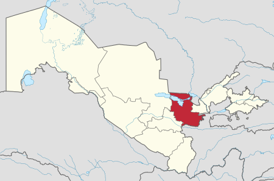 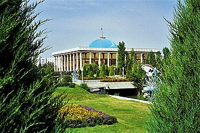
Namangan viloyati — Oʻzbekiston Respublikasi tarkibidagi viloyat. 1941-yil 11-martda tashkil etilgan (1960-yil 25-yanvarda Andijon va Fargʻona viloyatlari tarkibiga qoʻshib yuborilgan. 1967-yil 18-dekabrda qayta tashkil etildi). Namangan viloyati respublikaning sharqida, Fargʻona vodiysining shimoli-gʻarbiy qismida, Tyanshan togʻ tizmasi tarmoklari — Qurama va Chatqol togʻlarining yon bagʻrida joylashgan. Shimoliy va shimoli-sharqdan Qirgʻiziston Respublikasining Jalolobod viloyati, janubi-sharqdan Andijon, janubidan Fargʻona, shimoliy va shimoli-gʻarbdan Toshkent viloyati va Tojikistonning Sugʻd viloyati bilan chegaradosh. Maydoni 7,44 ming km². Aholisi 2931,5 ming kishi (2021). Namangan viloyatida 11 qishloq tumani (Kosonsoy, Mingbuloq, Namangan, Norin, Pop, Toʻraqoʻrgʻon, Uychi, Uchqoʻrgʻon, Chortoq, Chust, Yangiqoʻrgʻon), 8 shahar (Namangan, Kosonsoy, Pop, Toʻraqoʻrgʻon, Uchqoʻrgʻon, Chortoq, Chust, Haqqulobod), 11 shaharcha (Sang, Jomashoʻy, Toshbuloq, Navbahor, Oltinkon, Uygʻursoy, Chorkesar, Xalqobod, Uychi, Oʻnhayot, Yangiqoʻrgʻon, Oqtosh, Chodak), 99 qishloq fuqarolari yigʻini bor. Markazi — Namangan shahri. Namangan viloyatidagi adir Tarixi Namangan viloyati 1941-yil 6-martda SSSR Oliy Soveti Prezidiumining farmoni bilan (bundan oldin uning hududi Fargʻona viloyati tarkibiga kirgan) Oʻzbekiston SSR tarkibida tashkil etilgan. Viloyat tarkibiga Kosonsoy, Namangan, Norin, Pop, Toʻraqo‘rg‘on, Uychi, Uchqo‘rg‘on, Chust va Yangiqo‘rg‘on tumanlari hamda Namangan va Chust viloyatga bo‘ysunuvchi shaharlar kirgan. 1950-yilda Chortoq, 1952 yilda Zadaryo tumanlari tashkil topdi. Bu ikkala tuman ham 1959-yilda tugatilgan. 1960-yil 25-yanvarda Namangan viloyati tugatilib, uning hududi Andijon va Fargʻona viloyatlari (Namangan shahri — Andijon shahriga bevosita boʻysunuvchi) tarkibiga kirgan. Viloyat 1967-yil 18-dekabrda tiklangan. Qayta tiklash davrida viloyat tarkibiga Zadaryo, Namangan, Pop, Uychi, Uchqo‘rg‘on, Chust va Yangiqo‘rg‘on tumanlari hamda Namangan shahri qoʻshilgan. 1970-yilda Toʻraqoʻrgʻon, 1973-yilda Kosonsoy va Norin, 1980-yilda Chortoq tumanlari tashkil etilgan. 1969-yilda Chust, 1974-yilda Uchqo‘rg‘on, 1979-yilda Kosonsoy, 1983-yilda Chortoq, 1988-yilda Haqqulobod viloyatga bo‘ysunuvchi shahar maqomini olgan. Tabiati Viloyat hududining asosiy qismi Sirdaryoning oʻng sohilida, keng Fargʻona vodiysida joylashgan. Yer yuzasi, asosan, tekislik boʻlib, shimoliyda qator tepaliklar va Chatqol hamda Qurama togʻlari bilan oʻralgan. Balandligi 350-800 m. Togʻ va adirlar, tor vodiylar, vohalar toʻrtlamchi geologik davrning katta-kichik daryolari va irmoqlarning faoliyatidan hosil boʻlgan. Viloyat hududi geologik faol zonada joylashgan va 8 ballgacha-zilzilalar boʻlib turadi. Keng maydonni egallab yotgan va dehqonchilik obyekti boʻlgan Qoraqalpoq choʻli neogen davrida paydo boʻlgan. Foydali qazilmalardan Chodak oltin koni, togʻ kvarsi, sur-ma, mis, neft, gips, ohaktosh va boshqa qurilish materiallari, shifobaxsh mineral suvlar (Chortoqda) topilgan. Chust-Pop yer osti suvining issiqligi 50° (1300 m dan chiqadi). Suv tarkibida yod va brom bor. Chodaksoydan (450 m chuqurlikdan) 23° issiqlikdagi vodorod-sulfidli suv chiqadi. Chortoq, Shahand, Kosonsoy, Uchqoʻrgʻon suvlari oʻzining minerallanish darajasi va harakteri boʻyicha mashhur Matsesta, Chakrak, Tal suvlaridan qolishmaydi. Yer osti suvlari togʻ, adir, togʻ oldi botiqlarida va yoyilmalarda yirik toshli, shagʻalli va qumli qatlamlarda joylashgan. Sirdaryoga yaqin zonalarda yer osti (sizot) suvlari mavjud. Iqlimi keskin kontinental. Yozi uzok, issiq, qishi qisqa, nisbatan sovuq. Yillik oʻrtacha temperatura +13°. Yanvarda temperatura −25° gacha pasayadi, iyunda +35-+45° ga yetadi. Vegetatsiya davri 229 kun. Viloyatning turli qismlarida yogʻin miqdori turlicha. Namanganda oʻrtacha yillik yogʻin miqdori 230 mm, gʻarbida 90-190 mm, sharkiy tumanlarida 300-400 mm, togʻ etaklarida 600 mm. Yogʻinning eng koʻp kismi bahor va kuzda yogʻadi. Daryolari yogʻindan, togʻlardagi qor va muzliklardan suv oladi. Namangan viloyatida 16 dare va soy, koʻplab mavsumiy soylar mavjud. Eng katta daryosi — Sirdaryo. U Norin va Qoradaryoning qoʻshilishidan hosil boʻladi. Norin va Sirdaryoga Chatqol togʻlaridan oqib tushadigan Pochchaotasoy, Chortoksoy, Chustsoy, Olmossoy, Chodaksoy, Gʻovasoy, Kosonsoy, Namangansoy kabi sersuv togʻ daryolari kuyiladi. Kosonsoy, Chortoq, Eskiyer suv omborlari, Oxunboboyev, Shimoliy Fargʻona, Katta Namangan kanallari qurilgan. Bahor va yoz boshlarida sodir boʻladigan sel hodi-salaridan saqlanish uchun sel omborlari barpo qilingan. Tuproklari prolyuvial, oʻtloq, oʻtloqi-botqoq, och tusli boʻz, ayrim joylarda shoʻrxok, och tusli qoʻngʻir, jigarrang. Adirlar qumtosh, mergel, lyoss va chagʻirtoshlar bilan qoplangan. Bahorda efemer oʻsimliklar oʻsadi, chorva mollari boqiladi. Tekislik qismlarida boʻz, koʻngʻir tuproqlar, qadimdan dehqonchilik qilib kelingnidan tabiiy holati oʻzgargan va unumdorligi oshirilgan. Kosonsoyda tipik va qoramtir boʻz tuproq, Namangan, Uchqoʻrgʻon, Chust tumanlarida och boʻz tuproq tarqalgan. Tekislik qismining ekin ekilmaydigan yerlarida shoʻra, shuvoq, lola, otquloq, Sirdaryo boʻylarida betaga, astragal va boshqa oʻsadi. Togʻlarda archazorlar, yovvoyi olcha, olma va yongʻoqzorlar uchraydi. Togʻlarning baland qismi subalp oʻtloklari — yozgi yaylovlardan iborat. Namangan viloyatida deyarli oʻrmon yoʻq. Namangan mevali oʻrmon koʻchatzori va Namangan oʻrmon koʻchatzori mavjud. Choʻl va adirlar oʻzlashtirilib yuborilgandan boʻri, tulki, qobon, yumronqoziq kam uchraydi. Togʻlarda togʻ takasi, sugʻur bor. Adirlarda kalamush, dala sichqoni, echkemar, tipratikan, choʻl toshbaqasi, turli xil ilon va kaltakesak koʻp. Qushlardan burgut, kaklik va boshqa bor. Qorabovur, yovvoyi oʻrdak va boshqa ovlanadi. Dare, soy va boshqa suv havzalarida har xil baliq yashaydi, ondatra keng tarqalgan. Pochchaotasoy, Gʻovasoyda qunduz ham uchraydi. Namangan viloyati xududining intensiv oʻzlashtirilishi oqibatida sudralib yuruvchilar, qushlar, sut emizuvchilar, baliklarning koʻp turlari kama-yib bormoqda. Aholining asosiy qismini oʻzbeklar (87,8%) tashkil etadi, shuningdek, tojik (9,0%), kirgiz (1,0%), rus (0,8%), tatar, ukrain, ozarbayjon, yahudiy, belarus, arman, qozoq va boshqa millat vakillari ham (jami 89 millat) yashaydi. Aholi zichligi oʻrtacha 1 km² ga 266 kishi. Qishloq aholisi 1238,9 ming kishi, shaharliklar 743,8 ming kishi (2002). Arxeologiyasi Olmosning Tarixi milodiy IV-V asrlarga borib taqaladi. Oʻsha kezlarda Olmosda 800 atrofidagi qabila yashagan, asosiy mashgʻulotlari dehqonchilik va chorvachilik boʻlgan, aholi oʻsha kezlarda Togʻ atrofida, soy va buloqlar atrofida yashagan. Xoʻjaligi Namangan viloyati respublika ishlab chiqarish va madaniy taraqqiyotida yetakchi oʻrinlardan birini egallaydi. Viloyat sanoatining asosiy tarmoqlari: mashinasozlik, elektrotexnika, kimyo, paxta tozalash, oziq-ovqat sanoatlari. Namangan viloyatida 170 dan ziyod sanoat korxonalari mavjud. Eng yirik sanoat korxonalaridan — mashinasozlik, avtomobillarni tuzatish, gʻisht, yogʻ-ekstraksiya, paxta tozalash, oziq-ovqat (vino zavodi, pivo kombinati, „Namangan salqin ichimliklari“, „Rohat“, „Namangankonserva“, „Shirinlik“, „Kosonsoykonserva“ korxonalari), kimyo, „Elektroterm“ ishlab chiqarish birlashmasining yetakchi korxonasi, ipak gazlamalar kombinati, badiiy buyumlar fabrikasi va h.k. 3402 kichik, 249 shirkat, 76 qoʻshma korxona faoliyat koʻrsatmoqda. Shular orasida: „Navroʻz“ Oʻzbekiston-Kanada, „Shohi Soʻzana“, „Nestle-Oʻzbekiston“, „Shams LTD“, „Hyp“, „Ohangar“, „Chust pichogʻi“, „Namanganshina“, „Kosonsoy-Tekmen“, „Popfen“, „Silk-Road“, „Kasmir Deri“, „Namanganqogʻoz“, „Yanis IV“, Oʻzbekistan- Rossiya „Kemtosh“, „Shifo“ korxonalari, Oʻzbekiston-Xitoy „Channa-Tekstil“ qoʻshma korxonasi, Oʻzbekistan-Turkiya „Ko-sonsoytekstil“ va boshqa bor. Qishloq xoʻjaligi Viloyat qishloq xoʻjaligining asosiy tarmoqlari: Donchilik, paxtachilik, sabzavotchilik, bogʻdorchilik va uzumchilik, goʻsht-sut chorvachiligi, pillachilik. Namangan viloyati mamlakatda yetishtirilayotgan pax-taning 8-9% ini beradi. Gʻallakorlik, polizchilik, tokchilik, sabzavotchilik, ipakchilik va chorvachilik rivojlangan. Tekislikdagi sugʻoriladigan tumanlarda chorvachilik, asosan, kora-mol, togʻ oldilaridagi tabiiy oʻtloqlarda qoʻy va echki (jumladan, mayin junli) boqiladi. Qishloq xoʻjaligida foydalaniladigan yerlar maydoni 548,1 ming ga, shundan haydaladigan yerlar 219,8 ming ga, yaylovlar 287,9 ming ga, bogʻ va koʻp yillik daraxtzorlar 31,2 ming ga, tokzorlar 8,7 ming ga ni tashkil qiladi. Don ekinlari 80,4 ming ga, paxta 109,5 ming ga, kartoshka 1,3 ming ga, sabzavot 3,5 ming ga, poliz ekinlari 1 ming ga, ozuka ekinlari 14,4 ming ga maydonni egallaydi, 7760 ga oʻrmonzor, 3 ming ga tutzor bor (2001). Yerning meliorativ holatini yaxshilash maqsadida 4 ming km kollektor drenaj tarmoqlari qurilgan. Viloyatning hamma tumanlarida sugʻoriladigan maydonning asosiy qismida paxta va don ekinlari ekiladi. Namangan viloyatida 134 shirkat xoʻjaligi, 94,8 ming dehqon xoʻjaligi, 3,5 ming fermer xoʻjaligi bor. Jamoa va xususiy xoʻjaliklarda 667,1 ming qoramol (shundan 261,4 mingi sigir), 899,3 ming qo'y va echki, 5,8 ming ot mavjud, parrandachilik bilan qam shugʻullaniladi. Namangan viloyatida obikor dehqonchilik ustun turadi. Viloyat hududida koʻplab sugʻorish inshootlari — Shimoliy Fargʻona, Oxunboboyev nomli, Chust, Chortogʻ kanallari, Oʻrtatoʻqay suv ombori(Kosonsoy daryosida) va boshqalar qurilgan. Irrigatsiyaning rivojlanishi obikor yerlarni kengaytirish va melioratsiya holatini yaxshilash imkonini berdi. Barcha ekin maydonlarining 27 foizidan koʻprogʻiga paxta ekiladi. Pop va Chust tumanlaridagi yaylovlarda qoʻy va echki koʻp boqiladiasdsa. Qoramol hamma dehqonchilik tumanlarida boqiladi. Yaylovlar yetishmaganidan koʻpgina xoʻjaliklar mollarni yozda togʻ yaylovlariga haydab boradilar. Pillachilik paxtachilik bilan birga rivojlantirilmoqda. Transporti Transport yoʻlilarning uzunligi 138 km. Avtomobil yoʻllari uzunligi 1,7 ming km (shu jumladan, qattiqqoplamalisi 1,6 ming km).Andijon-Koʻqon, Namangan-Uchqoʻrgʻon oʻrtasida poyezdlar qatnaydi. Namangan-Toshkent, Namangan-Margʻilon-Fargʻona, Namangan- Andijon, Namangan-Qoʻqon-Samarqand yoʻnalishida avtobuslar qatnovi yoʻlga qoʻyilgan. Fargʻona vodiysini respublika poytaxti bilan bogʻlovchi Toshkent-Oʻsh avtomobil yoʻlining Kamchiq dovonida uzunligi 358 va 891 m dan iborat boʻlgan ikkita tonnel qurilib foydalanishga topshirildi. Namangan viloyati havo transportining rivojlanishi 1941-yilda aerodrom qurish bilan boshlandi. 1984-yilda zamonaviy havo laynerlariga xizmat qiluvchi uchish va qoʻnish maydoni ishga tushirildi. Oʻrta Osiyo davlatlaridagi shaharlar, shuningdek, Rossiya Federatsiyasining Moskva, Sankt-Peterburg, Yekaterinburg, Ufa, Simferopol, Novosibirsk, Magadan, Norilsk, Yakutsk, Krasnoyarsk, Mirniy kabi shaharlari va Ukraina poytaxti Kiyev shahri bilan muntazam aloqa yoʻlga qoʻyildi. Madaniy-maorif, sogʻliqni saqlash va sport 2000/2001 oʻquv yilida viloyatda 671 umumiy taʼlim maktabi (493,4 ming oʻquvchi), 19 ta litsey, 6 maxsus maktab-internat, 3 ta akademik litsey (1350 oʻquvchi) faoliyat koʻrsatdi. Viloyatdagi 3 ta oliy oʻquv yurti (Namangan universiteti, Namangan muxandislik-texnologiya va Namangan muhandislik-qurilish institutlari)da 11 mingdan ziyod talaba taʼlim oldi (2001). 1999-2001-yillar mobaynida barcha qulayliklarga ega boʻlgan jami 28 kasb-hunar kolleji (18 ming 875 oʻquvchiga moʻljallangan) hamda 2 akademik litsey (1500 oʻrin) bunyod etildi. Ular zamonaviy oʻquv qurollari va texnika bilan jihozlandi. Viloyat oʻquvchilari Respublika miqyosida oʻtkaziladigan fan olimpiadalarida muntazam qatnashmoqdalar. Xalqaro AKSELS tanlovida gʻolib chiqib xorijiy davlatlarda tahsil olib qaytayotgan oʻquvchilar soni ham ortib bormoqda. AQShning oʻquvchilar oʻrtasida oʻtkazilgan AKSELS tanlovida Namangan viloyatidan 40 oʻquvchi ishtirok etdi. Viloyatda 2 ta (Namangan oʻlkashunoslik va Pop arxeologik) muzey, 1 markaziy, 409 jamoat kutubxonasi (1 mln. nusxadan ortiq asar), 162 madaniyat uyi, 8 madaniyat va istirohat bogʻi, 5 teatr (shu jumladan, Alisher Navoiy nomidagi viloyat musiqali drama teatri) bor. Viloyat teatr sahnalarida Oʻzbekiston xalq artistlari R. Hamroyev, M. Azizova, S Rahmonov, M. Mansurov, M. Ubaydullayev, X. Oxunova, Oʻ. Nuraliyev, K. Rahimovlar; Oʻzbekistonda xizmat koʻrsatgan artistlar: M. Dadaboyev, A. Raximov, A. Tojiboyeva, M. Isomiddinov, T. Saydullayevlar samarali ijod qildilar (2001-yilda teatr binosi rekonstruksiya qilindi). Xalq hunarmandchiligi ayniqsa, Namangan va Chust shaharlarida qadimdan rivojlangan. Chustda pichoq, idish-tovoq, qishloq xoʻjaligi qurollari ishlab chiqariladi, doʻppidoʻzlik, kashtachilik bilan shugʻullaniladi, xalatlar uchun beqasam va atlas gazlamalar toʻ-qiladi. Chust badiiy buyumlar fabrikasi bor. Sogʻliqni saqlash. Namangan viloyatida 11 650 oʻrinli 115 kasalxona, 250 dan ortiq dorixona, Respublika shoshi-linch tibbiy yordam markazining fi-liali, kuniga 30 ming bemorni qabul qilish quvvatiga ega boʻlgan 256 ambulatoriya-poliklinika muassasasi ishlab turibdi. Namangan viloyatida oʻtgan 10 yil mobaynida 104 qishloq shifokorlik punktlari barpo etildi, 41 qishloq shifokorlik ambulatoriyasi va feldsher-akusherlik punktlari qishloq shifokorlik punktlariga aylantirildi. Shu davrda 1505 oʻrinli kasalxona, bir smenada 43,7 ming bemorni qabul qiluvchi poliklinikalar qurib bit-kazildi, shoshilinch tibbiy yordam markazi, viloyat koʻp tarmoqli kasalxonasi, viloyat kardiologiya markazi, oʻsma kasalliklar, Namangan shahar onalar va bolalar fizioterapevtik, yuqumli kasalliklar kasalxonalari foydalanishga topshirildi. Ular zamonaviy tibbiyot apparatlari, asbob-uskunalar bilan jihozlandi. Namanganda Semashko nomidagi respublika fizioterapevtik ilmiy tadqiqot instituti, respublika akusherlik va ginekologiya ilmiy tadqiqot instituti hamda respublika Salomatlik institutlarining viloyat filiallari, nevrologiya, endokrinologiya va urologiya markazlari faoliyat koʻrsatmoqda. Viloyatda onalik va bolalikni muhofaza qilish boʻyicha „Somom avlod“ dasturi asosida 2000-yildan boshlab „Delfin“, „Viktor“ va boshqa zamonaviy apparatlar bilan jihozlangan „Ona va bola“ skrining markazi ishlab turibdi. 6 sanatoriy (jumladan, „Chortoq“, „Gulshan“, „Kosonsoy“), Koʻksaroy dam olish zonasi mavjud. Sport Viloyatdan sportning futbol, basketbol, voleybol, suv polosi, chim ustida xokkey, mini futbol, qoʻl toʻpi, shaxmat turlari boʻyicha sportchilar mamlakat musobaqalarida muvaffaqiyatli ishtirok etib kelmoq-dalar. Namangan viloyatini Oʻzbekiston Super ligasidagi bahslarda „Navbahor“ futbol klubi doimiy ishtirok etib kelmoqda. Namanganda markaziy stadioni(20 mingdan ziyod oʻrinli), shuningdek, 28 stadion, „Pahlavon“, „Dinamo“, „Alpomish“, „Sogʻlom avlod“ sport majmualari, 22 su-zish havzasi, 54 tennis korti, 1 velotrek, 2 otchopar, 473 sport zali, 305 otish tiri, 571 basketbol, 1754 voleybol, 375 qoʻl toʻpi, 422 kichik va 563 katta futbol maydon va maydonchalari bor. 590 mingdan ziyod kishi jismoniy tarbiya va sport bilan shugʻullanadi. Ularning 260 ming nafaridan ortigi oʻsmirlar. Namangan dovrugini oshirgan va anʼanaga aylangan „Universiada-2000“ tadbiri katta umumxalq bayrami sifatida keng nishonlandi. Shaxmat, charm toʻp buyicha Osiyo, jahon chempionatlari, saralash musobaqalari, tennischilarning „Buyuk ipak yoʻli“, „Satellit“, „Fyuchers“ kabi turlarining oʻtkazilishi Namanganni dunyoga yana ham kengroq tanitdi. Namangan shahrining Davlatobod tumanidagi „Navbahor“ stadioni, „Doʻstlik“ tennis majmuasi, „Yoshlik“ suzish havzasi, Namangan shahridagi „Paxlavon“, „Alpomish“, „Dinamo“ sport majmualari, Toʻraqoʻrgʻon tumanidagi „Kurash“ majmuasi kabi sport inshootlarida xalqaro mavqedagi sport musobaqalari oʻtkazib turiladi. Namangan viloyatida 15 xalqaro toifadagi sport ustasi, 900 dan or-tiq sport ustasi, 2400 sport ustaligiga nomzod, 5000 dan ziyod 1-toifadagi sportchi tayyorlandi. Viloyatning 200 dan ortiq sportchisi Oʻzbekiston milliy terma jamoalari aʼzolaridir. Namangan viloyatidan 2000-yilda boks boʻyicha respublika chempioni, stol tennisi, shaxmat va boshqa sport turlari boʻyicha xalqaro musobaqa sovrindorlari yetishib chiqdi. Namanganda oʻtkazilgan 18 yoshgacha boʻlgan yoshlar oʻrtasida belbogʻli kurashchilarning 5-Xalqaro birinchiligida Qirgʻiziston, Qozogʻiston, Turkmaniston. Armaniston, Gruziya, Ukraina, Belarus, Rossiya, Hindiston va Turkiya sportchilari ishtirok etdi. „Umid nihollari“, „Barkamol avlod“, „Universiada“ musobaqalarida oʻquvchitalabalar faolligi tobora oshib bormoqda. 2000-yilgi Universiadada Namangan viloyati sportchilari birinchi oʻrinni olishdi. 2001-yil „Barkamol avlod“ musobaqalarida Fargʻonada 2-oʻrinni, 2002-yil Far-gʻonada oʻtkazilgan „Umid nihollari“ musobaqalarida faxriy uchinchi urinni egalladi. „Alpomish“, „Barchinoy“ testlariga 500 mingga yaqin oʻquvchi, 30 mingga yaqin talaba, ishchixizmatchi jalb qilindi. Kattalikda respublikada 2-oʻrinda turgan (36 ming oʻrinlik) „Navbahor“ stadioni negizida maxsus futbol maktabi, „Olimpiya zaxiralari“ sport maktabida basketbol, voleybol, qoʻl toʻpi boʻyicha sportchilar tayyorlanmoqda. Namanganda „Gulbahor“ ayollar futbol jamoasi faoliyati ravnaq topayapti. Toshbuloqlik yosh karatechi Doston Turgʻunov AQShda „Atlanta kubogi“ sovrini musobaqalarida ishtirok etib, birinchilikni qoʻlga kiritib, oltin medal bilan qaytdi. Stol tennisi boʻyicha Sevara Qodirova 1999-yilda Shvetsiyada oʻtgan jahon yoshlar chem-pionatida jahon chempioni boʻddi. Shaxmat boʻyicha Osiyo chempionatida Olga Son 16 yoshgacha boʻlgan oʻsmirlar oʻrtasida Osiyo chempioni, yozgi biatlondan Mu-habbat Kandakova Yevropa ochiq chempionati gʻolibi, erkin kurash boʻyicha Rustam Mamajonov Osiyo kubogini, shaxmat boʻyicha xalqaro grossmeyster Saidali Yoʻldoshev Xitoyda oʻtgan Osiyo chempionati gʻolibligini, boks boʻyicha Toʻlashboy Doniyorov xalqaro musobakalar gʻolibligini, aka-uka Baxtiyor va Shuhrat Bozorovlar kurash boʻyicha Oʻzbekistonning bir necha bor mutlaq gʻolibligini va xalqaro turnirlar gʻoliblari unvonini, aka-uka Joʻra va Mutalli Mamajonovlar karate boʻyicha AQSH va Vengriyada oʻtgan xalqaro turnirlar gʻolibligini qoʻlga kiritdilar. Adabiyoti Namangan qadimdan xalq ogʻzaki ijodining deyarli barcha janrlariga boy oʻlkadir. Shu diyorda yaratilgan va keng tarqalgan ogʻzaki ijod namunalarini xalq qoʻshiqchilari, ertakchilari hozirgi kungacha saqlab kelganlar. Ulardan yozib olingan qoʻshiqlar, termalar, asotirlar, rivoyatlar va ertaklar bir qancha toʻplamlarga kiritilgan. Yangiqoʻrgʻon, Chortoq, Uchqoʻrgʻon, Norin, Namangan va boshqa tumanlarda xalq dostonchilik maktablari davom etgan. Uchqoʻrgʻonlik dostonchilardan XX asrning 20-yillaridayoq „Yozi bilan Zebo“ dostoni yozib olinib, keyinchalik nashr qilingan. Yozma adabiyot Namanganda koʻhna asrlardan boshlab rivojlanib keldi. Bu oʻlka oʻz ijodiy uslubi, ovozi va soziga ega boʻlgan bir qancha isteʼdod egalarining vatanidir. Qad. Axsikent shahrida XI — XII asrlarda soʻz sanʼatining bir qancha yirik namoyandalari kamol top-dilar. Markazi Axsikent boʻlgan Namangan adabiy muhiti shakllanib taraqqiy eta boradi. Abu Rashid-Ahmad Axsikatiy, Abul Vafo Axsikatiylar oʻz davrining yetuk adib va olimlari edi. Yirik isteʼdod egasi Asiriddin Axsikatiy malik ush-shuaro va amiri shuaro unvonlariga sazovor boʻldi. Oʻzbek mumtoz adabiyotining namoyandasi Boborahim Mashrab shu oʻlkada voyaga yetdi. XVIII asr oxiri — XIX asr 1-yarmidagi adabiyotning koʻzga koʻringan vakillari malik ush-shuaro Fazliy hamda Nodir, Gʻoziy, Majzub, Munshiy, Muxlis, Maxzun va boshqa oʻzbek adabiyoti xazinasiga salmoqli hissa qoʻshdilar. 19-asrning 2-yarmida Nodim, Shavqiy, Ibrat, Hayrat, Xilvatiy va boshqa shoirlardan iborat ijodkorlar guruhi Namanganda eʼtiborli bir adabiy muhitni vujudga keltirdi. Bu muhitda ijodiy kamolotga erishgan Muhammadsharif Soʻfizoda Oʻzbekiston soʻz sanʼatkorlari orasida birinchi boʻlib xalq shoiri faxriy unvonini oldi. Ishoqxon Ibrat va Muhammadsharif Sufizoda 20-asr boshlarida jadidchilik, milliy uygʻonish harakatining yetuk va-killari sifatida faoliyat kursatdilar. Ular uz sheʼrlarida xalqni gʻaflat va qoloklikdan chiqarish, millat ongini uygotish uchun ilm-maʼrifat zarurligini tashviq qildilar. Shoir Rafiq Moʻmin 20-asr 20-yillar sheʼriyatida erk va haqiqat kuychisi boʻlib tanildi. Benazir isteʼdod egasi Usmon Nosir oʻzbek adabiyotining yirik na-moyandalaridan edi. Zafar Diyor bolalarning sevimli shoiri bulib qoldi. Yuldosh Shamsharov, Parda Tursun oʻzbek nasri taraqqiyotida uz urinlariga ega boʻldilar. Chustiy, Shoʻxiy oʻz sheʼrlari bilan el orasida tanildi. 20-asrning 2-yarmida Namangan adabiy muhiti iqtidorli ijodkorlarga boy boʻldi. Jonrid Abdullaxonov, Turgʻun Poʻlat, Nuriddin Boboxoʻjayev, Husniddin Sharipov, Habib Saʼdulla, Dadaxon Nuriy, Ermuhammad Nurmamatov, Abdugʻani Abduvaliyev, Ahmad Tursun, Abdulla Jalil, Rustamjon Ummatov, Ziyoviddin Mansurov, Isoqjon Nishonov va boshqalar turli janrdagi asarlari bilan tanildilar. Shoir Habib Saʼdullaga Oʻzbekiston xalq shoiri unvoni berildi. Namangan adabiy muhiti umumoʻzbek adabiyotining ajralmas tarkibiy qismi sifatida rivoj topmoqda. Namangan viloyatida Respublika ijodiy uyushmalarining (yozuvchilar, rassomlar, meʼmorlar, jurnalistlar va boshqalar) boʻlimlari faoliyat koʻrsatmoqda. Matbuot, radio va televideniyesi Namanganda 2 viloyat gazeta („Namangan haqiqati“, „Namanganskaya pravda“), 11 tuman gazeta, shahar gazetalari chiqadi. Viloyatda, shuningdek, tarmoq gazetalari va jurnallar nashr etiladi. Namangan viloyatida dastlabki radioeshittirishlar 1932-yilda boshlangan. 1990-yildan viloyatda telestudiya tashkil etilib, telekoʻrsatuvlar berila boshladi. 2000-yilda yangi telemarkaz qurilib, foydalanishga topshirildi. Telemarkaz Germaniya „Simens“ firmasining zamonaviy televideoapparaturasi bilan jihozlandi. Meʼmorlik va arxeologik yodgorliklari. Viloyatda 85 arxeologik, 15 ga yaqin meʼmoriy yodgorlik boʻlib, shulardan kds. shahar va istehkomlar qoldiqlari: Axsikent (miloddan avvalgi III-II asrlar.), Munchoqtepa (jez davri), Oyritom, Mugʻtepa (antik davr) va boshqa; meʼmoriy yodgorliklardan: Jome masjidi (XVIII asr), Chodak madrasa-masjidi (XVIII asr), Shayx Ishoq Eshon (XIX asr), Ota Valixon toʻra (XX asr), Haqqulobod (1903-y) masjidlari, Yusupxon Eshon (XVIII asr), Mavlono Lutfullo Chustiy (1913-y) meʼmoriy majmualari, Gʻoyib Nazar (1892-y), Mulla Qirgʻiz (1911 — 1912-y) madrasalari, Xoʻja Amin (XVII asr), Boy Hamadoniy (XIX asr), Mavlono Namangoniy (1907-y) maqbaralari, Yusufboy Hoji uyi (XX asr boshlari) va boshqa mashhur[1]. Namangan maʼmuriy siyosiy boʻlinishi Viloyatning maʼmuriy markazi — Namangan shahri. 1941-yilgacha Fargʻona shahriga, 1960-yil yanvaridan 1967-yil dekabrigacha Andijon viloyati tarkibida bevosita Andijon shahriga boʻysungan. Pop tumani hududida Tojikistonning Sarvak anklavi joylashgan. 2020-yilda Namangan shahri tarkibida Davlatobod tumani tashkil etildi, maydoni 46,86 km², aholi soni qariyb 140 ming aholiga ega boʻlib, uning tarkibiga 25 ta fuqarolar yigʻini, shuningdek, Namangan xalqaro aeroporti kiradi[2]. Tumanlar Tuman nomi Tuman markazi 1 Chortoq tumani Chortoq 2 Chust tumani Chust 3 Kosonsoy tumani Kosonsoy (shahar) 4 Mingbuloq tumani Jomashoʻy 5 Namangan tumani Toshbuloq 6 Norin tumani (Oʻzbekiston) Haqqulobod 7 Pop tumani Pop (shahar) 8 Toʻraqoʻrgʻon tumani Toʻraqoʻrgʻon 9 Uchqoʻrgʻon tumani Uchqoʻrgʻon (shahar) 10 Uychi tumani Uychi 11 Yangiqoʻrgʻon tumani Yangiqoʻrgʻon 12 Davlatobod tumani Davlatobod 13 Yangi Namangan tumani Shaharlar Namangan Chust Chortoq Kosonsoy Xaqqulobod Jomashoʻy Uchqoʻrgʻon Pop Yangiqoʻrgʻon Shaharchalar Uychi Toshbuloq Toʻraqoʻrgʻon Pop Oltinkon Yirik qishloqlari Chodak Olmos (shaharcha) Varzik Sang Karkidon Shahand Jiydakapa Chortoq Nanay Aholisi Viloyat aholisi 2 810 900 nafar (2020-yil 1-yanvar holatiga koʻra). Eng yirik shahar, maʼmuriy markazi Namanganda 626.200 nafar aholi istiqomat qiladi. Qolgan shaharlar aholisi Namangandan ancha kam (2011-yil): Chust — 71 200, Chortoq — 56 600, Kosonsoy — 49 700, Uchqo‘rg‘on — 37 100, Haqqulobod — 31 900, To‘raqo‘rg‘on — 27 300, Pop — 25 400. 2009-yilda bir qancha qishloqlar shahar posyolkalariga oʻtkazilgan, buning natijasida 2008—2011-yillarda viloyatning urbanizatsiya darajasi 37 foizdan 64,3 foizga koʻtarildi. Viloyat aholisining milliy tarkibi: oʻzbeklar — 88,4%, tojiklar — 8,8%, ruslar — 0,7%, qirgʻizlar — 1,0%, boshqa millat vakillari — 1,0%[3]. O‘zbekiston Respublikasi Vazirlar Mahkamasi huzuridagi Millatlararo munosabatlar va xorijiy davlatlar bilan do‘stlik aloqalari qo‘mitasining rasmiy veb-saytida 2017-yil 1-yanvar holatiga ko‘ra Namangan viloyatidagi milliy ozchiliklar soni to‘g‘risida quyidagi maʼlumotlar eʼlon qilingan[4]: qirgʻizlar — 22 279 kishi. koreyslar — 3023 kishi. ruslar — 11 857 kishi. tojiklar — 235 030 kishi


 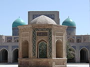
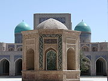

Qashqadaryo viloyati — Oʻzbekiston Respublikasi tarkibidagi viloyat. 1924-yil 1-noyabrda tashkil etilgan. Respublikaning janubi-gʻarbida, Qashqadaryo havzasida, Pomir-Oloy togʻ tizmasining gʻarbiy chekkasida, Amudaryo va Zarafshon daryolari, Hisor va Zarafshon tizma togʻlari orasida. Shimoli-gʻarbdan Buxoro va janubi-sharqdan Surxondaryo viloyatlari, janubi-gʻarb va gʻarbdan Turkmaniston Respublikasi, sharqdan Tojikiston Respublikasi hamda Samarqand viloyati bilan chegaradosh. Maydoni 28,6 ming km². Aholisi 3,408,300 kishi (3-oʻrin) (2022). Viloyat hokimi Murotjon Azimov (2021-yil 18-noyabrdan) Tarkibida 1ta 4 tumani (Dehqonobod, Kasbi, Kitob, Koson, Koʻkdala tumani), Mirishkor, Muborak, Nishon, Qamashi, Qarshi, Yakkabogʻ, Gʻuzor, Shahrisabz, Chiroqchi, 12 ta shahar (Beshkent, Kitob, Koson, Muborak, Tallimarjon, Chiroqchi, Shahrisabz, Yakkabogʻ, Yangi Nishon, Qamashi, Qarshi, Gʻuzor), 4 ta shaharcha (Yangi Mirishkor,Dehqonobod, Miroqi, Eski Yakkabogʻ, Pomuq), 147 ta qishloq fuqarolari yigʻini, 1064 ta qishloq bor (2005). Qashqadaryo viloyati tumanlari haqida alohida maqolalarga qarang: masalan, Dehqonobod tumani, Kasbi tumani va boshqalar. Tabiati Qashqadaryoning kechki koʻrinishi Viloyat hududi, asosan, Qashqadaryo botigʻini oʻz ichiga olgan; shimol, sharq va janubi-sharqdan Zarafshon hamda Hisor tizma togʻlari bilan oʻralgan. Togʻlar bilan tekisliklar orasini adirlar egallagan. Tekislikning katta qismi gʻarbda Sandiqli va Qizilqum choʻllari bilan tutashgan Qarshi choʻlidan iborat. Iqlimi kontinental. Qishi nisbatan yumshoq. Yozi uzoq (155-160 kun), issiq, quruq. Yanvarning oʻrtacha temperaturasi 0,2° dan 1,9° gacha, iyulniki 28°-29,5°. Eng yuqori temperatura 45°. Eng past temperatura −20°.-yiliga tekisliklarda 290-300 mm, adirlarda 520-550 mm, togʻlarda 550-650 mm yogʻin tushadi. Yogʻin, asosan, bahor va qishda yogʻadi, yozda garmsel esadi. Togʻlarda turgʻun qor qoplami hosil boʻladi (2-6 oy). Vegetatsiya davri tekisliklarda 290-300 kungacha. Asosiy daryosi — Qashqadaryo. Uning irmoqlari — Jinnidaryo, Oqsuv, Yakkabogʻdaryo, Tanxozdaryo, Gʻuzordaryo (Katta va Kichik Oʻradaryo bilan birga). Daryolar qor, yomgʻir va muzliklar suvidan toʻyinadi. Daryo suvidan, asosan, sugʻorishda foydalaniladi. Chimqoʻrgʻon, Qamashi, Pachkamar suv omborlari; Fayziobod, 8-Mart, Eskibogʻ, Eski Anhor, Koson, Paxtaobod, Qarshi va boshqalar kanallar bor. Qarshi choʻlini oʻzlashtirishda 6 nasos stansiyasi, ochiq va yopiq kollektor drenaj tarmoqlari qurilgan. Sugʻoriladigan yerlarning tuprogʻi, asosan, tipik va och boʻz tuproqlar. Kitob — Shahrisabz soyligida koʻproq qumoq tuproqlar mavjud. Togʻlarda balandlik mintaqalari boʻylab tipik boʻz tuproqlar tarqalgan. Tabiiy florasi 1200 ga yaqin yuksak oʻsimlik turidan iborat. Viloyatda 76,6 ming ga oʻrmon mavjud. Oʻrmonlarning asosiy qismini archa va saksovulzorlar tashkil etadi. Togʻ yon bagʻirlari har xil oʻt oʻsimliklari bilan qoplangan, shuningdek, butazorlar ham bor. Togʻ oʻrmonlari archa, bodom, pista, jiydazorlardan iborat. Togʻlarda naʼmatak, zirk, chakanda, anzur piyozi, qora zira va boshqalar oʻsadi. Qashqadaryo viloyati tog' hududlari manzarasi Qashqadaryo viloyati tog' hududlari manzarasi Qashqadaryo viloyati Shahrisabz tumani Ko'l qishlog'ida bahor Qashqadaryo viloyati Shahrisabz tumani Ko'l qishlog'ida bahor Qashqadaryo viloyati Shahrisabz tumanining tog'li hudud manzarasi Qashqadaryo viloyati Shahrisabz tumanining tog'li hudud manzarasi Qashqadaryo viloyati Hisor tog' etaklaridagi landshaft Qashqadaryo viloyati Hisor tog' etaklaridagi landshaft Qashqadaryo viloyati Shahrisabz tumani Hisor tog'laridan boshlanuvchi daryoning irmoqlari Qashqadaryo viloyati Shahrisabz tumani Hisor tog'laridan boshlanuvchi daryoning irmoqlari Qashqadaryo viloyati qor va muz erishidan hosil bo'lgan chuchuk suvli ko'l Qashqadaryo viloyati qor va muz erishidan hosil bo'lgan chuchuk suvli ko'l Suvtushar sharsharasining manzarasi Suvtushar sharsharasining manzarasi Qashqadaryo viloyati Ko'l qishlog'i Qashqadaryo viloyati Ko'l qishlog'i Qashqadaryo viloyati Ko'l qishlog'ida qish manzarasi Qashqadaryo viloyati Ko'l qishlog'ida qish manzarasi Viloyat hududida 100 dan ziyod qush turi, sut emizuvchilarning 60 turi, sudralib yuruvchilarning 7 turi uchraydi. Daryo va suv havzalarida qumbaliq, ilonbosh, zogʻorabaliq, gulmohi, xramula, qorabaliq yashaydi. Viloyatda Hisor togʻ-oʻrmon va Kitob davlat geologiya qoʻriqxonalari joylashgan; Kitob balandtogʻ rasadxonalar majmuasi faoliyat koʻrsatadi. Viloyat Qashqadaryo havzasida va Pomir-Oloy togʻ tizmasining gʻarbiy chekkalarida joylashgan. Viloyat hududi gʻarbdan sharqqa tomon 300-400 metrgacha koʻtarilib boradi. Viloyatning sharqiy qismi Kitob-Qamashi togʻ etaklaridan iborat boʻlib, u yerlarning balandligi 450-500 dan 900-950 metrgacha boradi. Viloyat doirasidagi togʻlarning asosiy qismi uning shimoli-sharqiy qismini egallagan. Bu yerdagi togʻlarning eng baland nuqtalari 4000 metrgacha yetadi. Qashqadaryo viloyati maydoni 28,6 km, aholisi 2.442,2 mingdan ortiq (2006). Aholining qariyb 3/4 qismi qishloqlarda istiqomat qiladi. Aholisi Aholisi, asosan, oʻzbeklar (91,2 %), shuningdek, tojik, turkman, rus, qozoq, ukrain, ozarbayjon, koreys, qirgʻiz, turk, ukrain, belorus, tatar va boshqalar millat vakillari ham yashaydi. Aholining oʻrtacha zichligi 1 km²ga 109,0 kishi. Shahar aholisi 1 460,0 ming kishi, qishloq aholisi 1 948,3 ming kishi (2022). 20-asr boshlarigacha hozirgi Qashqadaryo viloyati hududida yashagan aholining koʻpchiligi orasida urugʻ-qabilalarga boʻlinish saqlanib kelgan. Masalan, Qarshi shahri va uning atroflarida mangʻit, saroy, qavchin, qatagʻon, kutchi, qipchoqlar, xtoy, qirq va boshqalar urugʻlar, Shahrisabz va uning atroflarida kenagas, saroy, qutchi, turk, qatagʻon, qalmoq, qangʻli, chuyut, qiyot, qoʻngʻirot, mojor, mangʻit, mitan, moʻgʻul, nayman, sayot urugʻlari, Gʻuzor va uning atroflarida qavchin, kerayit, qoʻngʻirot, mangʻit va boshqalar urugʻlar yashagan. Ular dehqonchilik, chorvachilik va hunarmandchilik bilan shugʻullanishgan. Hududiy boʻlinishi Qashqadaryo viloyati hududiy jihatdan 14 ta tuman va 2 ta shaharga boʻlingan. Shaharlar Qashqadaryo viloyatiga bevosita boʻysunadigan quyidagi 2 ta shahar mavjud: Qarshi[5] Shahrisabz[6] Tumanlari Tuman nomi Tuman markazi 1 Dehqonobod tumani Qorashina 2 Kasbi tumani Mugʻlon 3 Kitob tumani Kitob (shahar) 4 Koson tumani Koson 5 Koʻkdala tumani Yettitom 6 Mirishkor tumani Yangi Mirishkor 7 Muborak tumani Muborak 8 Nishon tumani Yangi Nishon 9 Qamashi tumani Qamashi 10 Qarshi tumani Beshkent 11 Yakkabogʻ tumani Yakkabogʻ 12 Gʻuzor tumani Gʻuzor 13 Shahrisabz tumani Chorshanba (shaharcha) 14 Chiroqchi tumani Chiroqchi Iqtisodiyoti Qashqadaryo viloyati qishloq xoʻjalik mahsulotlarini yetishtirish hamda yoqilgʻi resurslarini qazib olish boʻyicha Oʻzbekistonda muhim oʻrin egallaydi. Viloyat respublikada qazib olinadigan tabiiy gazning 88 %, neftning 92 %, kondensatning 99,6 %, oltingugurtning 100 % ni beradi. Qashqadaryo respublikada eng koʻp don va paxta yetkazib beradigan viloyatdir. Oʻzbekistonda tayyorlanadigan yalpi qishloq xoʻjaligi mahsulotining 10,2 %,shu jumladan, paxtaning 11,8 %, gʻallaning 12 %, qorakoʻl terining 19 % viloyat hissasiga toʻgʻri keladi. Tabiiy gaz, kondensat va qishloq xoʻjaligi mahsulotlarini qayta ishlovchi tarmoqlar rivojlanmoqda. Viloyatda 1,1 ming kichik korxona, 40,6 ming mikrofirma bor. Bular sanoat, qurilish, savdo va umumiy ovqatlanish, qishloq xoʻjaligi va boshqalar korxonalardan iborat. Sanoati Sanoatining yetakchi tarmoqlari: — tabiiy gaz va neft qazib olish, gazni qayta ishlash, paxta tozalash, yogʻ ekstraksiyasi, qurilish materiallari ishlab chiqarish, ip yigiruv, tikuvchilik, oziq-ovqat va boshqalar Eng yirik korxonalari: Muborak neft-gaz unitar korxonasi, Shoʻrtan gaz unitar korxonasi, Muborak gazni qayta ishlash zavodi, Shoʻrtan gaz-kimyo majmuasi, Qarshi, Koson yogʻ-ekstraksiya, Shahrisabz konserva zavodlari, Shahrisabz pillakashlik, Qarshi tikuvchilik fabrikalari, Qashqadaryo marmar aksiyadorlik jamiyati, Dehqonobod kaliy zavodi va boshqalar 49 qoʻshma korxona faoliyat koʻrsatadi, shulardan: Oʻzbekiston — Turkiya „Kashteks“ toʻqimachilik, „Oqsaroy toʻqimachilik LTD“ qoʻshma korxonalari ishlamoqda. Viloyat hududidagi dastlabki sanoat korxonasi — Shahrisabz paxta tozalash zavodi 1916-yilda qurilgan. Undan keyingi davrda viloyatda, asosan, paxta tozalash zavodlari, tikuvchilik fabrikalari qurildi. 1971-yilda Muborak gazni qayta ishlash zavodi ishga tushirildi. Mustaqillik yillarida Shahrisabz, Yakkabogʻ un kombinatlari, Tallimarjon issikdik elektr stansiyasi, 2001-yil oxirida Shoʻrtan gaz-kimyo majmuasi qurilib ishga tushirildi. Qashqadaryo viloyatida gaz (propan), jun, paxta tolasi, momiq, polietilen, tomat pastasi, turli xil plitalar ishlab chiqariladi. Qishloq xoʻjaligi Qishloq xoʻjaligining asosiy tarmoqlari: gʻallachilik, paxtachilik, kartoshkachilik, polizchilik, sabzavotchilik, chorvachilik. Bogʻdorchilik, uzumchilik, ipakchilik ham salmoqli oʻrin tutadi. Chorvachiligi goʻsht-sut yetishtirishga ixtisoslashgan. Qoramolchilik, qoʻychilik, parrandachilik rivojlangan. Muborak, Mirishkor, Nishon, Gʻuzor tumanlarida qorakoʻlchilikka ixtisoslashgan yirik naslchilik xoʻjaliklari mavjud. Asalarichilikka ham katta eʼtibor berilgan. Qashqadaryo viloyatida 667,6 ming ga ekin maydoni mavjud boʻlib, shundan 418,7 ming gektari sugʻoriladi. 173,8 ming ga yerga paxta, 205 ming ga yerga don, 3,2 ming ga yerga sabzavot, 2 ming ga yerga poliz, 0,5 ming ga yerga kartoshka, 38,1 ming ga yerga ozuqa ekinlari ekiladi. 32,8 ming ga yer koʻp yillik daraxtzorlar, shundan 13,2 ming ga yer mevazor, 9,2 ming ga yer tutzor, 10,4 ming ga yer tokzorlar bilan band, 1451 ming ga yerni yaylovlar egallagan. Yerning meliorativ holatini yaxshilash maqsadida 13815 km uzunlikda kollektor-drenaj tarmoqlari qurilgan. Viloyatda sugʻoriladigan dehqonchilikni rivojlantirish maqsadida sugʻorish kanallari (Qarshi, Sandal va boshqalar) va suv omborlari (Tallimarjon, Chimqoʻrgʻon, Hisorak, Qizilsuv va boshqaalr) barpo etilgan. Sugʻorishni tashkil etish uchun 6 ta yirik nasos stansiyasi qurilgan. Qishloq xoʻjaligi mahsulotlari yetishtirishni koʻpaytirish maqsadida Qarshi choʻlida 250 ming ga yer oʻzlashtirilgan. Viloyatda 68 shirkat, 17,6 ming dehqon, 17,2 ming fermer xoʻjaliklari faoliyat koʻrsatadi. Qashqadaryo viloyati shirkat, shaxsiy va fermer xoʻjaliklarida 654,7 ming qoramol (shu jumladan, 276,8 ming sigir), 2,2 mln. qoʻy va echki, 1,3 mln. parranda, 17,3 ming-yilqi boqiladi (2005). 1996—2005-yillar viloyatdan B.Roʻziyev, Q.Moʻminov, Gʻ. Rahmonov, M.Saidovlar „Oʻzbekiston Qahramoni“ unvoniga sazovor boʻldilar. Transporti Asosiy maqola: Qashqadaryo transporti Viloyatdagi temiryoʻl uzunligi 401 km. Asosiy temiryoʻl magistrallari Kogon — Qarshi — Dushanbe, Qarshi — Kitob, Qarshi — Samarqand — Toshkent. Viloyat hududidagi temir yoʻllarning aksariyat qismi elektrlashtirilgan. Mustaqillik yillarida Surxondaryo viloyatini respublikaning boshqa qismi bilan bogʻlash maqsadida Toshgʻuzor-Boysun-Qumqoʻrgʻon (umumiy uzunligi 223 km) temir yoʻli qurildi. Ushbu yoʻnalish Surxondaryo viloyatiga qoʻshni respublika — Turkmaniston hududiga oʻtmasdan borish imkoniyatini berdi. temiryoʻlning 106,2 km qismi Qashqadaryo viloyati hududidan oʻtgan. Yangi temir yoʻl liniyasida qurilish ishlari uch bosqichda amalga oshirildi. Loyiha tegishli tartibda muvofiqlashtirilgach, "Oʻzbekiston temir yoʻllari" Davlat aksiyadorlik temiryoʻl kompaniyasining oʻz mablagʻlari hisobidan 1998-yilda "Toshgʻuzor — Dehqonobod", 1999-yilda "Boysun — Qumqoʻrgʻon" qismlarida qurilish boshlandi. Yangi liniyaning eng murakkab boʻlgan uchinchi qismida qurilish ishlarini boshlash maqsadida Yaponiya bilan hukumatlararo bitim imzolandi. Ushbu hujjatga binoan, 2001-yil 16-iyulda Yaponiyaning Tashqi savdoni rivojlantirish tashkiloti (JETRO) loyihaning texnik-iqtisodiy asoslarini ishlab chiqish uchun grant ajratdi. Murakkab togʻ sharoitida barpo etilayotgan yangi temir yoʻl liniyasining dengiz sathidan 1800 metrdan ortiq balandlikda, choʻqqi darajasidagi togʻ tizmasini kesib oʻtishida eng ilgʻor texnologiyalar, zamonaviy uskunalar ishga solindi. Yangi temir yoʻlni bunyod etish davomida jami 37 ta koʻprik, galereya va tunnel barpo etildi. 5 ta vokzal (Toshgʻuzor, Dehqonobod, Oqrabot, Darband va Boysun), 15 ta ajratma shoxobcha, shu jumladan, 7 ta stansiya va 8 ta razezd qad rostladi. Liniyaning 81-kilometridagi uzunligi 234,2 metrni tashkil etgan koʻprik qurildi. Uni trassasining 350 metr radiusli yoysimon qismida balandligi 43 metrni tashkil etuvchi tayanch ustunlari koʻtarib turadi. 2004-yil oktabrgacha ushbu yoʻlning 112 km dan ziyod Toshgʻuzor — Dehqonobod va Qumqoʻrgʻon — Boysun qismlari foydalanishga topshirildi. 2007-yil 1-sentabrga kelib "Toshgʻuzor — Boysun — Qumqoʻrgʻon" yangi temir yoʻl liniyasi birinchi bosqichining qurilishi yakunlandi[7]. 15-sentabrdan boshlab "Oʻzbekiston temir yoʻllari" AJ ishchi komissiyalarining dalolatnomalariga muvofiq "Toshgʻuzor — Boysun — Qumqoʻrgʻon" yangi temir yoʻl liniyasi orqali yuk tashish poyezdlarining toʻxtovsiz harakati ochilgan. Temir yoʻl liniyasi bir kecha-kunduzda 14 juft poyezdni oʻtkazish imkoniyatiga ega. Ushbu obyektning barpo etilishiga 447,4 milliard soʻm kapital qoʻyilmalar, jumladan, Yaponiya xalqaro hamkorlik bankining 151,5 million AQSh dollari hajmidagi kredit mablagʻlari yoʻnaltirildi.[8] Viloyatda jami 13,9 ming km uzunlikda avtomobil yoʻllari mavjud. Shundan umumiy foydalanilayotgan yoʻllar uzunligi 3,4 ming km, xoʻjaliklar hisobidagi yoʻllar uzunligi 10,5 ming km. Qashqadaryo viloyati hududidan respublika ahamiyatiga ega boʻlgan Qarshi — Amudaryo (Turkmaniston), Katta Oʻzbekiston trakti (Toshkent — Termiz), Qarshi — Buxoro, Qarshi — Samarqand avtomobil yoʻllari oʻtadi. Qarshidan Toshkent, Termiz, Samarqand, Buxoro, Navoiy, Denov va boshqalar shaharlarga avtobuslar qatnaydi. Qarshi xalqaro aeroportidan Qarshi — Moskva, Qarshi — Toshkent, Qarshi — Andijon va boshqalar yoʻnalishlarda yoʻlovchilar tashuvchi samolyotlar qatnovi yoʻlga qoʻyilgan. Tarixi Qashqadaryo vohasi oʻzining madaniy tarixi bilan mashhur. 1990-yillargacha Qashqadaryo hududida paleolit (tosh asri) davrida odamzodning yashaganligi haqida ashyoviy dalillar kam edi. Faqatgina Tanxozdaryo vodiysidan topilgan chaqmoqtoshdan yasalgan ayrim buyumlar, Taxtaqoracha dovonida Takalisoy boʻyidagi gʻordan arxeolog D.N.Lev tomonidan mustye davriga oid bir nechta tosh buyum topilganligi Qashqadaryo vodiysida tosh davri odamlari yashaganligidan dalolat berar edi. 1990-yillarda arxeologlardan R. X. Sulaymonov, A.S. Saʼdullayevlar yuqori Qashqadaryodagi Oyoqchisoy, Quruqsoy vodiylarini oʻrganib paleolit davriga oid ashyoviy dalillarni topdilar. Siylontoshda tosh asrining soʻnggi davriga oid topilmalar aniqlandi. Vohada miloddan avvalgi X-VIII asrlar, jez va temir asrlarga oid Sangirtepa, Yerqoʻrgʻon yodgorliklari topiddi. Miloddan avvalgi 7-6-asrlarda Qashqadaryo vodiysida dehqonchilik bilan shugʻullanuvchi koʻplab aholi istiqomat qilgan. Kesh, Naxshab shahrilari paydo boʻlib rivojlangan. qadimiy Baqtriya davlati tarkibiga Qashqadaryo vohasining bir qismi ham kirgan. Miloddan avvalgi 329-yilda Aleksandr Makedoniyalik qoʻshinlari Navtaka (Qashqadaryo) viloyatini bosib olgan. Qashqadaryo bosqinchilarga qarshi koʻtarilgan Spitamen qoʻzgʻolonining markazlaridan biri boʻlgan. Miloddan avvalgi 3-2-asrlarda Qashqadaryo vohasi Salavkiylar, undan keyin Yunon Baqgriya davlati tarkibiga kirdi. 468-yilda kushonlar avlodidan boʻlgan koʻchmanchi chorvador toxarlar Kidar rahbarligida sharqdan Amudaryo havzasiga kirib kelib Naxshabni oʻzlariga vaqtincha qarorgoh qilib turdilar. Qashqadaryoda VII-VIII asrlarda iqtisodiy hayot rivojlangan. Bir necha-yillar davomida Sugʻd Kesh podsholari tomonidan idora qilingan. Kesh podshosi Shasheppi (Shishpar) davrida zarb qilingan tanga pulda „Ixshid Shishpar“ degan yozuv boʻlgan. Arablar qoʻshini 700-yilda ilk bor Qashqadaryoga bostirib kelib, Naxshab va Kesh shahrilarini va ular atrofidagi qishloqlarni qoʻlga kiritdilar. Qutayba ibn Muslim 710-yilda Kesh va Naxshabni qayta fath etdi. Ammo, Qarshi, Kesh va Naxshab (Nasaf)da yana arablarga qarshi norozilik harakatlari boshlanadi. Kesh asosiy markazlaridan boʻlgan Muqanna qoʻzgʻoloni butun Movarounnahrga tarqaldi. IX-X asrlarda Qashqadaryoda iqtisodiy-ijtimoiy hayot, fan va madaniyat yana rivojlandi. Kesh „Qubbat ulilm val adab“ nomiga sazovor boʻddi. Moʻgʻul bosqinchilari 1220-yil yozida Qashqadaryoga bostirib kelib Naxshab, Kesh, Gʻuzor shahrilari va qishloqlarini vayron qildilar. Moʻgʻullar oʻtroqlikka oʻtgandan soʻnggina (XIV asrda) Kepakxon (1318—1326) qurdirgan saroy yaqinida yangi shahar — Qarshi shahriga asos solindi. 14-15-asrlarda Temur va Ulugʻbek davrlarida Shahrisabzt bir qancha monumental binolar — saroy, masjid va maqbaralar va boshqalar qurildi. Shahrisabz vohaning yetakchi shahriga aylandi. Ashtarxoniylar davrida Qarshi, Shahrisabzda Buxoro xonligidan mustaqil boʻlish harakati kuchaydi. Mangʻitiylar davrida Qarshi taxt vorisi hokim boʻladigan viloyatga aylandi. Qashqadaryo viloyati koʻxna tarixi, qadimiy madaniyat yodgorliklari bilan mashhur. Viloyatdan buyuk olimlar, adib va shoirlar, mashhur sanʼatkorlar, baxshilar, xalq artistlari, rassomlar yetishib chiqqan. Qashqadaryo viloyati da 2004/05 oʻquv-yilida 1094 umumiy taʼlim maktabi, shu jumladan 34 ixtisoslashgan, 4 maxsus maktab, 3 gimnaziya va boshqalarda 620 mingdan ziyod oʻquvchi taʼlim oldi. Viloyatda 62 kasb-hunar kolleji (49 ming talaba), 4 akademik litsey (2 ming oʻquvchi), 18 bolalar musiqa maktabi (1,7 ming oʻquvchi), 3 mehribonlik uyi, 2 oliy oʻquv yurti (Qarshi universiteti, Qarshi muhandislikiqtisodiyot instituti; 10,4 mingga yaqin talaba) bor. Qashqadaryo oʻlkashunoslik muzeyi (Qarshi shahri), Amir Temur muzeyi (Shahrisabz shahri da), viloyat musiqali drama teatri, viloyat qoʻgʻirchoq teatri, „Eski masjid“, „Muloqot“ teatr studiyalari, „Oʻzbekraqs“, „Oʻzbeknavo“ning viloyat boʻlimlari, ashula va raqs direksiyasi faoliyat koʻrsatadi. 464 jamoat kutubxonasi (kitob fondi 3930 ming nusxa), 148 klub muassasasi, 6 madaniyat va istirohat bogʻi bor. 16 ashula va raqs xalq ansambli, 2 folklor etnografik xalq ansambli, 373 badiy havaskorlik jamoa va boshqalar madaniy muassasalar ishlab turibdi. Qashqadaryo viloyatida Oʻzbekistonda xizmat koʻrsatgan sanʼat arboblari: Rahimjon Komiljonov, Sadriddin Salimov, Isoq Toʻrayev; Oʻzbekiston xalq hofizi Oʻlmas Saidjonov; Oʻzbekiston xalq baxshilari: Shomurod baxshi Togʻayev, Qahhor baxshi Rahimov; Oʻzbekiston xalq artistlari: Farogʻat Rahmatova, Ikroma Boltayeva, Zamira Suyunova, Maryam Sattorova, Nasiba Sattorova, Husan Amirqulov, Muhtarama Nosirova; Oʻzbekistonda xizmat koʻrsatgan artistlar: Tojiddin Murodov, Oygul Xalilova, Bahriddin Rahmonov, Zebo Tursunovalar voyaga yetganlar. Qashqadaryo vohasi oʻtmishda 300 ga yaqin nasafiylar va oʻnlab keshiylarga vatan boʻlgan yurtdir. Viloyatda 1996-yilda Amir Temurning 660-yilligi, 2003-yilda Shahrisabz shahrining 2700-yilligi xalqaro miqyosda nishonlandi. Qashqadaryo viloyati da Respublika „Oʻzbekturizm“ milliy kompaniyasiga qarashli boʻlimlar, bir necha mehmonxona mavjud. 2004-yilda viloyat hududiga 31 mingdan ziyod turist kelib ketdi. 1927-yil 17-fevraldan 1938-yil 15-yanvargacha Qashqadaryo okrugi maqomida. 1938-yil 15-yanvarda Buxoro viloyatiga qoʻshib yuborildi. 1943-yil 20-yanvarda qayta tashkil etildi. 1960-yil 25-yanvarda Surxondaryo viloyatiga qoʻshildi. 1964-yil 7-fevraldan yangidan tashkil etildi. Sogʻliqni saqlash Viloyatda 94 kasalxona (12,1 ming oʻrin), 395 vrachlik ambulatoriya-poliklinika muassasasi, ambulatoriya va boshqalar tibbiy muassasalar, 221 bolalar poliklinikasi va xonalari, 199 qishloq va shahar vrachlik punkti, 368 feldsherakusherlik punkti, 27 qishloq uchastka kasalxonasi, 90 qishloq vrachlik ambulatoriyasi mavjud. Ushbu tibbiy muassasalarda 53,6 mingga yaqin vrach (har 10 ming kishiga 21,9 vrach), 23,6 mingga yaqin oʻrta tibbiy xodim ishlaydi. Davlat dasturiga asosan, viloyatdp Davlat tez tibbiy yordam ilmiy markazi Qarshi boʻlimi (220 oʻrin) va barcha tuman markaziy kasalxonalari qoshida uning boʻlinmalari (410 oʻrin) tashkil etilgan hamda zaruriy tibbiy va texnik jihozlar bilan taʼminlangan. Tibbiyot sohasida xususiy, yakka tartibda va boshqalar nodavlat sektorlarida 131 tibbiy muassasa faoliyat koʻrsatadi. Qashqadaryo viloyatida 3 sanatoriy ishlab turibdi. Sport Qashqadaryo viloyati sportchilari sportning koʻp turlari (kurash, dzyudo, karate, futbol, boks, shaxmat, tennis va boshqalar) boʻyicha turli darajadagi musobaqalarda ishtirok etmoqdalar. Farhod Xoʻjanov, Zokir Sharipov, Shavkat Joʻrayev, Erkin Xoliqovlar dzyudo boʻyicha; Bahrom Avezov kurash boʻyicha (Buxarestda va Antaliyada jahon chempioni); akauka Isom va Furqat Kenjayevlar yunonrum kurashi boʻyicha jahon chempionati bronza medali; Alisher Muxtorov dzyudo boʻyicha, Sofiya Kaspulatova karate boʻyicha (3-marta) Osiyo chempioni unvonlariga sazovor boʻldilar. Shaxmatchilardan Anvar Rajabov Yalta, Fransiya, Ispaniya, Sarvinoz Ergasheva (6-marta respublika chempioni) Fransiyadagi jahon chempionatlarida qatnashdilar. Viloyatning „Nasaf“, „Mashʼal“, „Shoʻrtan“ jamoalari futbol boʻyicha Oʻzbekistonning oliy ligasida ishtirok etmoqda. Xotin-qizlarning „Sevinch“ futbol jamoasi 2004-yilda oʻtkazilgan respublika birinchi chempionatining gʻolibi boʻldi. Viloyatda 21 stadion, tennis kortlari, sport zallari, 8 suzish havzasi va boshqalar sport inshootlari mavjud. 26 bolalar va oʻsmirlar sport maktabi faoliyat koʻrsatadi. 689 ming kishi (shu jumladan, qishloq joylarida 614 ming kishi) doimiy ravishda jismoniy tarbiya va sport bilan shugʻullanadi. Adabiyoti Qashqadaryo vohasida qadimiy dan mashhur allomalar, shoir va faylasuflar, yozuvchi va muhaddislar, mohir xattot va tarjimonlar yashab oʻtgan. 9-asr boshlarida Nasaf va Keshda hadisshunoslik va fiqhshunoslik maktablari vujudga kelgan. 10-asr da Ahmad ibn Muhammad atTadyoniy, Hammod ibn Shokir anNasafiy, Abdulmuʼmin ibn Xalaf anNasafiy, alLays ibn Nasr alKojariy, 11-asrda Abdulaziz ibn Muhammad anNaxshabiy, Muhammad ibn Ahmad alalHasan ibn Ali alHammodiy anNaxshabiy kabi olimlar islom olamida shuhrat topganlar. Keyingi davrlarda ham bu ilmiy anʼanalar muvaffaqiyat bilan davom ettirilgan. Aziziddin Nasafiy asarlari dunyo xalqlarining koʻp tillariga tarjima qilingan. „Nasafiy“ taxallusli bir necha oʻnlab ijodkorlarning nomlari maʼlum. Bulardan: Moturidiya kalom maktabining atoqli namoyandalaridan biri Abul Muʼin anNasafiydir. Uning "Bahr alkalom fi ilm alkalom („Kalom ilmi boʻyicha soʻzlar dengizi“) asari kalom ilmi boʻyicha almoturidiya maktabining asosiy manbalaridan biri hisoblangan. Hadisshunos va hanafiy mazhabining taniqli fiqhshunosi Abul Hasan alBazdaviy anNasafiyning musulmon qonunchiligi asoslari haqidagi „Usuli Bazdaviy“ kitobi Sharqda keng tarqalgan, unga koʻplab sharhlar bitilgan. Shu sababli „Faqihu Movarounnahr“ va „Us toz alaimma“ („Imomlarning ustozi“) unvonlariga sazovor boʻlgan. Fiqhshunos Abu Hafs Najmiddin Umar Nasafiy 100 dan ortiq asar yozgan. Shuningdek, Abul Barakot gnNasafiy, Abu alMutiʼ Nasafiy, Hakim Soʻzaniy, Abu Turob Naxshabiy, Saido Nasafiy, Nurmuhammad Nasafiy, Shamsiddin Soʻzaniy, Muayiddin Nasafiy, Shahobiddin Ahmad Nasafiy, Sharafiddin Xusom, Abul Barakot anNasafiy, Hofiziddin Nasafiy, Xoja Abulbaraka (Firoqiy), Ayub Shahrisabziy, Mavlono Soyiliy, Mavlono Mir Qarshiy va boshqalar bir qancha nasafiylar yashab, ijod etganlar. Nasaf va Kesh allomalari arab (9- 10-asrlar), fors (9-11-asrlar) tillarida ijod qilganlar. 15-asrdan turkiy tilda asarlar yoza boshlaganlar. Temuriy shahzodalar ijod ahlini oʻz ona tillarida yozishga daʼvat etganlar, oʻzlari ham turkiy tilda asarlar bitganlar. Alisher Navoiyning „Muhokamat ullugʻatayn“ asari ana shu ijtimoiy talab zaminida yaratilgan. Ammo, amalda arab va fors tillari ham qoʻllanavergan. Amir Temur va temuriy shahzodalar saltanati davrida Qashqadaryoda ilmfan, madaniyat va sanʼat rivojlangan. Ushbu vohadan chiqqan koʻpgina yozuvchi va ulamolar turli-yillarda poytaxt boʻlgan Buxoro va Samarqandda, ayrimlari esa Hindiston, arab davlatlarida yashab ijod etganlar. Moʻgʻullar istilosi davrida ziyolilarning kattagina qismi Hindistondan boshpana topgan. Abu Saʼd Abdulkarim asSamʼoniyning (1113-67) „Kitob alAnsob“ („Nisbalar kitobi“) asarida 8-12-asrlarda yashab oʻtgan 180 yaqin nasaflik olim va shoirning nomlari qayd etilgan. Nasaf tarixi va adabiyoti bilan bogʻliq bir qancha asarlar, xususan, Abul Horis Asad ibn Hamduvayh alVarsiniy anNasafiyning (928-yil v. e.) „Kitob mufoxarot ahl Nasaf va Kash“ („Nasaf va Kesh ahlining iftixorlari haqidagi kitob“), Abu Saʼd Abdurahmon ibn Muhammad alAstrobodiy alIdrisiyning (milodiy 1015-yil v. e.) „Tarixi Nasaf“, Abul Abbos alMustagʻfiriy Nasafiyning (961 — 1041, 2 jildli) mufassal „Nasaf va Kesh tarixi“ asarlari bizgacha yetib kelmagan. 20-asrning 2-yarmi Qashqadaryo adabiy muhitining koʻtarilishi va yangi ijodkorlar bilan boyish davri boʻldi: Gulshaniy, Togʻay shoir, Shomurod baxshi, Suvon Soqi, Samar Nur, Azim (baxshi) Xoʻjayev, Qodir (baxshi) Rahimov, Abdulla Oripov, Ikrom Otamurodov, Jumaniyoz Jabborov, Normurod Narzullayev, Ismoil Toʻxtamishev, Xosiyat Lutfullayeva, Muhammad Ochil, Jumaqul Qurbon, Normurod Norqobil, Poyon Ravshanov, Ubaydulla Uvatov, Yusuf Berdiyev kabi shoir, yozuvchi va olimlarning ilmiy va badiiy asarlari adabiyot taraqqiyotiga munosib hissa boʻlib qoʻshildi. 90-yillar boshlarida Nazar Eshonqul, Chori Avaz, Amir Xudoyberdi, Zebo Mirzayeva, Habib Abdunazar, Luqmon Boʻrixon, Salim Ashur, Amirqul Karim, Gʻulom Mirzo va boshqalar shoir va yozuvchilar faol ijod qildilar. Mustaqillik yillarida Qashqadaryo vohasida adabiy hayot yanada rivojlandi. Bu davrda erishilgan yutuqlar sifatida Poyon Ravshanovning qadimiy Naxshab va Keshning tarixiga oid 4 jiddli saylanmasi, Abdulla Oripovning „Adolat koʻzgusi“, „Koʻztumor“, Normurod Narzullayevning „Alyor“, Ikrom Otamurodning „Tavr“, Amir Xudoyberdining „Yettinchi malak“, Habib Abdunazarning „Anjir guli“ kabi asarlarini koʻrsatib oʻtish lozim. Qashqadaryo viloyatida Oʻzbekiston ijodiy uyushmalari (yozuvchilar, rassomlar, meʼmorlar, jurnalistlar va boshqalar) ning viloyat shoʻʼbalari faoliyat koʻrsatadi. Matbuoti, radioeshittirishi va televideniyesi Qashqadaryo viloyatida 33 gazeta, shu jumladan, 2 viloyat gazeta (1935-yildan „Qashqadaryo haqiqati“, 2005-yildan „Qashqadaryo“, adadi 5 ming; 1943-yildan „Kashkadarinskaya pravda“, 2005-yildan „Novosti Kashkadari“, adadi 1,5 ming), shahar („Nasaf“), 13 tuman gazetalari, 16 tarmoq, 1 xususiy gazeta, shuningdek, „Nasaf ziyosi“ jurnali (Qarshi davlat universiteti muassisligida) nashr etiladi. Viloyatda birinchi radioeshittirishlar 1945-yil dekabrdan boshlangan. Viloyat radiosi va „Oltin voha“ GʻM radiostansiyasi eshittirishlar olib boradi. Viloyat radiosi kuniga 1 soatlik, „Oltin voha“ GʻM radiostansiyasi haftada 112 soatlik hajmda eshittirishlar beradi. Qashqadaryo viloyati da 2 davlat (viloyat va Shahrisabz shahar televideniyesi), 3 nodavlat (Qarshi jamoatchilik, Muborak „Yangi asr“, Qashqadaryo kabelli) televideniyelari mavjud. 1994-yil 24-avgustdan faoliyat koʻrsatayotgan Qashqadaryo viloyati televideniyesining haftalik koʻrsatuvlari 11 soatni tashkil etadi. Shuningdek, Qarshi jamoatchilik televideniyesining 1 haftalik koʻrsatuvlari 42 soat, „Yangi asr“ telestudiyasining 1 haftalik koʻrsatuvlari 21 soat, Shahrisabz televideniyesining 1 haftalik koʻrsatuvlari 24 soat, Qashqadaryo kabelli televideniyesining 1 haftalik koʻrsatuvlari 63 soatni tashkil etadi. Meʼmoriy yodgorliklari. Viloyatdagi tarixiy yodgorliklardan 602 tasi arxeologiya, 192 tasi meʼmoriy va shaharsozlik yodgorliklaridir, shuningdek, monumental sanʼat yodgorliklari ham bor. Viloyatdagi mashhur obidalar Shahrisabz shahrida joylashgan. Mirzo Ulugʻbekning 600-yilligi, Amir Temurning 660-yilligi, Shahrisabz shahrining 2700-yilligi munosabati bilan Shahrisabzda obidalarni taʼmirlash ishlari keng koʻlamda olib borildi. Oqsaroy meʼmoriy majmuasi konservatsiya qilindi, markaziy maydonda Amir Temurga haykal oʻrnatildi. Dor uttilovat, Dor ussiyodat majmuasidagi Jahongir (Hazrati Imom) maqbarasi (1379-80-yillar), Oqsaroy majmuasi (1380—1404-yillar), Ulugʻbek madrasasi (Gumbazi Sayidon, 1437-yil), Kitob tumanidagi Xoja Ilimkon xonaqosi (15-16 asrlar), Langar qishlogʻidagi Langarota (Katta Langar) masjidi (15-asr oxiri — 16-asrlar), Langarota maqbarasi (16-asrning 1-yarmi), Fudino qishlogʻidagi Xusamota ansambli (11 — 19-asrlar), Qarshi shahrida Mahalla masjidi (19-asr) va boshqalar saqlangan. Qarshi shahrining 2700-yilligi munosabati bilan Qarshi shahridagi Koʻkgumbaz masjidi, tarixiy koʻprik va boshqalar madrasa va masjid binolari taʼmirlanmoqda. Adabiyotlar Suxareva O.A., K istorii gorodov Buxarskogo xanstva (istorikoetnografimeskiy ocherk), T., 1958; Zaxarov S.M., Sabirjanov A.S., Karshi, T., 1978; Boburnoma, T., 1989; Nafasov T, Oʻzbekiston toponimlarining izohli lugʻati, T., 1998; Yangiboyev M., Qashqadaryo viloyati geografiyasi, Qarshi, 1993; Ravshapov P., Qashqadaryo tarixi, T., 1995; Joʻraqulov O., Ergasheva J., Qashqadaryo sanoati tarixi, Qarshi, 1996; Qadimgi Qarshi, Oʻrta Osiyo shaharsozligi va madaniyati tarixi, Drevpiy Karshi, Istoriya kulturt i I radostroitelstva Sredney Azii, Karshi, 1999; P ugachen kova G.A., Ochiq osmon ostidagi muzey, T., 1981; Suleymanova R. X., Drevniy Naxshab, T., 2000; Hakimov N., Joʻraqulov O., Shahrisabz tarixi, Qarshi, 2001; Nosir Muhammad, Nasaf va Kesh allomalari, T.,2001; Shahrisabz ming-yillar merosi, T., 2002.
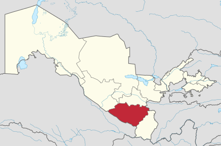

Davlat tuzumi Qoraqalpogʻiston — parlament boshqaruv shakliga ega boʻlgan O'zbekiston respublikasi tarkibidagi suveren demokratik respublika. Qonun chiqaruvchi oliy davlat vakolatli organi — koʻp partiyaviylik asosida 5 yil muddatga saylangan deputatlardan iborat Qoraqalpogʻiston hududi Joʻqorgʻi Kengeshi (QR JK). Qoraqalpogʻiston hududi Joʻqorgʻi Kengeshi raisi respublika rahbari hisoblanib, u Joʻqorgʻi Kengesh deputatlari orasidan 5 yil muddatga saylanadi (faqat ketma-ket 2 muddatdan oshmaydi). Davlat hokimiyatining oliy ijro etuvchi-boshqaruvchi organi Qoraqalpogʻiston Respublikasi Vazirlar Kengashi, yaʼni Qoraqalpogʻiston Respublikasi hukumati hisoblanadi. Qoraqalpogʻistonda Oʻzbekiston Respublikasi Konstitutsiyasi bilan bir vaqtda Qoraqalpogʻiston Oliy kengashining 1993-yil 9-apreldagi 12-chaqiriq 12-sessiyasida qabul qilingan Qoraqalpogʻiston Hududi Konstitutsiyasiga amal qilinadi. Qoraqalpogʻiston oʻz davlat ramzlari: gerb, madhiya va bayrogʻiga ega.[1] Tabiati Qoraqalpogʻiston Qizilqum choʻlining shimoli-gʻarbiy, Ustyurt platosining janubi-sharqiy qismi va Amudaryo deltasida joylashgan. Orol dengizining janubiy qismi Qoraqalpogʻiston hududida. Qizilqumning shimoli-gʻarbiy qismi Orol dengizi tomon pasayib boruvchi keng yassi tekislik boʻlib, qator tepa va qumli barxanlar (balandligi 75 m dan 100 m gacha) uchraydi. Alohida togʻ massivlari (eng yirigi — Sulton Uvays togʻi, choʻqqilari 473 m va 485 m) bor. Sugʻoriladigan yerlar va sugʻorish kanallari, asosan, deltaning oʻng sohilida. Gʻarbida bir nechta botiqli (Borsakelmas, Asakaovdon botiqlarining balandligi 29–101 m) Ustyurt platosi joylashgan. Plato Orol dengizi va Amudaryo deltasiga tik yon bagʻirli jarlik — chinklar hosil qilib tushgan. Ustyurtdan janubi-sharqda Sariqamish soyligining shimoliy chekkasi joylashgan. Foydali qazilmalardan osh tuzi va glauber tuzi, mineral xom ashyo hamda qurilish materiallari va boshqalar bor. Iqlimi keskin kontinental, yozi quruq va qishi nisbatan sovuq, qor kam yogʻadi. Yanvar oyining oʻrtacha temperaturasi janubda -4,9°, shimolida -7,6°, iyulda janubida 28,2°, shimolida 26°. Yillik yogʻin 110 mm, asosan, qish va bahor oylarida yogʻadi. Vegetatsiya davri 194–214 kun. Eng yirik daryosin— Amudaryo (quyi oqimi). Amudaryo havzasi qadimdan sugʻoriladigan hudud sifatida maʼlum. Daryo suvidan sugʻorishda foydalaniladi. Nukus shahrida joylashgan suv xoʻjaligi boshqarmasi Taxiatosh gidrouzeli, Qipchoq gidropostidan Orol dengizigacha boʻlgan (283 km) hududdagi daryoning barcha suv chiqarish inshootlarini nazorat qiladi. Oʻrta va yuqori oqimlarda daryo suvi sugʻorishga koʻp sarflanishi natijasida hozirgi Amudaryo Orol dengiziga bevosita quyilmaydi. Qoraqalpogʻistonning eng yirik koʻli — Orol dengizi, shuningdek, Xoʻjakoʻl — Qora-jar koʻllar sistemasi bilan bogʻlangan Sudochye koʻl sistemasi hamda Orol dengizining qurib qolgan qismida tashkil etilgan sunʼiy suv havzalari ham mavjud. Soʻnggi 40 yil ichida Amudaryo va Sirdaryo havzalarida sugʻoriladigan yerlarning kengayishi natijasida Orol dengizi suv sathi 2005-yil boshida 23 m pasaydi. Qoraqalpogʻistonning barcha suv havzalaridan baliq ovlanadi, ularda baliq xoʻjaliklari tashkil etilgan.[1] Tuprogʻi, oʻsimlik va hayvonot olami Amudaryo deltasida allyuvial-oʻtloq, allyuvial oʻtloq-toʻqay, qurib qolgan koʻl va botqoqliklarda tipik shoʻrxok, Ustyurt platosida va Qizilqumda taqir tuproqlar, Qiziljar, Toʻqmoqtogʻ va Ustyurt platosida kulrangqoʻngʻir, Orol dengizining qurib qolgan tubida qumli choʻl tuproqlari tarqalgan. Qoraqalpogʻistonda yuksak oʻsimliklarning 979 turi uchraydi. Ularning 41 tasi madaniy turga mansub. Yovvoyi oʻsimliklarning 176 tasi endemik, 11 tasi qoldiq (relikt) va 33 turi madaniy oʻsimliklarning yovvoyi ajdodlari. 7 turdagi oʻsimlik Oʻzbekiston Qizil kitobiga kiritilgan. Qoraqalpogʻiston hududi tropik boʻlmagan choʻl zonasida joylashganligi sababli oʻsimlik qoplami zonalar boʻyicha ajralib turadi: Ustyurt platosi, Amudaryo deltasi, Qizilqum shimoli-gʻarbiy va qoldiq past togʻlar tabiiy geografik zonasi. Ustyurt land-shafti gipsli, shoʻrxok va qumli choʻl boʻlib, oʻsimliklari gipsofit, galofit va ozroq psammofitlardan iborat. Bu hududda 400 dan ortiq yuksak oʻsimlik turi mavjud. Amudaryo deltasida 655 turdagi gulli oʻsimlik oʻsadi. Deltaning suv havzalarida, aksincha, oʻsimlik turi kam, asosan, qalin toʻqay oʻsimliklari va qamishdan iborat. Qizilqumning shimoli-gʻarbiy qismida katta maydonlarda siyrak oʻt-butali choʻlga xos oʻsimliklar (kserofil boshoqlilar, qorabosh, efemerlar, yulgʻun, oq saksovul) oʻsadi. Qoldiq togʻlarda oʻsimlik turi nisbatan koʻp. Bu yerda 506 turga mansub yuksak oʻsimlik uchraydi. Hozirgi vaqtda Qoraqalpogʻiston tabiiy oʻsimliklaridan yem-xashak, oʻrmon (toʻqay) xom ashyosi va dorivorlar sifatida, 50 % yer maydonidan (9387,7 ming gektar) yaylov sifatida foydalaniladi. Qoraqalpogʻiston oʻrmon-toʻqay fondi 1129 ming gektar maydonni egallaydi. Toʻqaylar asalarichilikda ham ahamiyatga ega. Respublikada dorivor oʻsimliklarning 364 turi mavjud. Hayvonot dunyosi ham xilma-xil: umurtqali hayvonlarning 500 ga yaqin, shu jumladan, sut emizuvchilarning 68, qushlarning 300 dan ziyod, sudraluvchilarning 33, suv va quruqlikda yashovchilarning 2, baliqlarning 50 ga yaqin turi maʼlum. Umurtqasiz hayvonlarning 3500 dan ortiq turi aniqlangan. Soʻnggi 10 yil ichida Qoraqalpogʻiston hayvonot dunyosi ancha oʻzgarishlarga uchradi. Koʻpgina turlar soni qisqardi va ular noyob yoki yoʻqolib borayotgan turlar qatoriga kiritildi. Sut emizuvchilarning 10, baliqlarning 12, qushlarning 37, sudralib yuruvchilarning 10 turi Oʻzbekiston Qizil kitobiga kiritilgan. Choʻlda sudralib yuruvchilardan kaltakesak, ilonlar; kemiruvchilardan yumronqoziq, qumsichqon, qoʻshoyoq; yirik sut emizuvchilardan jayron, boʻri, tulki; qushlardan saksovul soykasi, burgut, tuvaloq, soʻfitoʻrgʻay; oʻrgimchaksimonlardan chayon, falanga va boshqalar yashaydi. Toʻqaylarning hayvonot dunyosi nisbatan boy: qirgʻovul, oʻrdak, gʻoz, qoravoy, loyxoʻrak; sut emizuvchilardan chiyaboʻri, toʻqay mushugi, boʻri, tulki, tolay quyon, qobon, ondatra va boshqalar iqlimlashtirilgan. Amudaryo va Oroldan pilmay, sazan, taran, laqqa baliq kabilar ovlanadi. Baʼzi turlar yoʻqolib ketgan va sanoat ahamiyatini yoʻqotgan. Shu bilan birga Qoraqalpogʻiston suv havzalarida baliqning yangi 14 turi iqlimlashtirilgan. Respublikada 3 maxsus qoʻriqlanadigan tabiiy hudud: „Badaytoʻqay“ davlat qoʻriqxonasi, „Saygʻoq“ va „Sudochye“ buyurtma qoʻriqxonalari tashkil etilgan. Qoʻriqlanadigan hududlarning umumiy maydoni 1056,5 ming ga.[1] Hududiy boʻlinishi Tuman nomi Tuman markazi 1 Amudaryo tumani Mangʻit (shahar) 2 Beruniy tumani Beruniy (shahar) 3 Chimboy tumani Chimboy 4 Ellikqalʼa tumani Boʻston 5 Kegeyli tumani Kegeyli 6 Moʻynoq tumani Moʻynoq 7 Nukus tumani Oqmangʻit 8 Qanlikoʻl tumani Qanlikoʻl 9 Qoʻngʻirot tumani Qoʻngʻirot 10 Qoraoʻzak tumani Qoraoʻzak 11 Shumanay tumani Shoʻmanoy 12 Taxtakoʻpir tumani Taxtakoʻpir 13 Toʻrtkoʻl tumani Toʻrtkoʻl 14 Xoʻjayli tumani Xoʻjayli Aholisi Aholisi, asosan, oʻzbeklar va qoraqalpoqlar, shuningdek, qozoqlar, qirgʻizlar, turkmanlar, rus, ukrainlar tatar, koreyslar va boshqa oʻtizga yaqin millatlar yashaydi. Aholining oʻrtacha zichligi 1 km²ga 9,4 kishi. Shahar aholisi 48,5 %, qishloq aholisi 51,5 %. Davlat tillari — qoraqalpoq va oʻzbek tili. Etnik tarkibi — O'zbeklar (38,8 %), Qoraqalpoqlar (35,8 %) Qozoqlar, (11,8 %) va boshqa millatlar. Dindorlari — musulmon sunniylar. Yirik shaharlari: Nukus (siyosiy ahamiyati boʻyicha Toshkentdan keyin 2-oʻrinda), Toʻrtkoʻl, Taxiatosh, Xoʻjayli, Qoʻngʻirot, Chimboy.[1] Qoraqalpogʻiston Respublikasida 2 millionga yaqin kishi yashaydi.(2022-yil) Davlat boshqaruvi Qoraqalpogʻiston Respublikasining Joʻqorgʻi Kengesi oliy davlat vakillik organi hisoblanadi. Qoraqalpogʻiston Respublikasi Joʻqorgʻi Kengesi Raisi Qoraqalpogʻiston Respublikasining eng yuqori lavozimli shaxsi hisoblanadi. U bir vaqtning oʻzida Oʻzbekiston Respublikasi Oliy Majlis Senati Raisining oʻrinbosari hamdir. Qoraqalpogʻiston Respublikasi Vazirlar Kengashi davlat hokimiyatining oliy ijro etuvchi-boshqaruvchi organi hisoblanadi.[1] Tarixi Qoraqalpogʻiston hududida odam soʻnggi paleolit davridan yashay boshlagan. Miloddan avvalgi 5-ming yillik–2-ming yillik boshlarida aholi, asosan, Amudaryo deltasi va Orol, Kaspiy dengizlari yon atroflaridagi choʻllarda joylashgan. Miloddan avvalgi 2-ming yillik oxirida bu hududda sugʻoriladigan dehqonchilik paydo boʻlgan. Miloddan avvalgi VI asrlarda Qoraqalpogʻiston hududida qadimgi davlatchilik markazlari yuzaga kelgan. Miloddan avvalgi IV asrda Axomaniylar saltanati tarkibidan ajralib chiqqach, yagona qadimgi Xorazm davlati tashkil topdi. Qoʻyqirilgan-qalʼa, Oyboʻgʻir va Burliqalʼa shaharlari xarobalarini qazish vaqtida qad. yozma yodgorliklar (miloddan avvalgi IV asrga oid), Qoʻyqirilganqalʼa va Oqshoxonqalʼada qadimiy tasviriy sanʼat va haykalta-roshlik yodgorliklari topildi. xorazmshoxdarning Tuproqqalʼa (milodiy 3- IV asr boshlari) saroyi soʻnggi antik dav. rning eng ulkan yodgorliklaridan biri hisoblanadi. VIII asrda arablar olib kelgan islom dini zardushtiylik aqidalarini surib chiqardi. XII–XIIIasrlarda buyuk Xorazmshohlar davlati Gʻarbiy Osiyo va Urta Sharqda eng yirik va kuchli davlat edi. XIII asrda moʻgʻullar isti-losidan soʻng bu davlat parchalanib ketdi. XIV asrda Xorazm Oltin Oʻrdaning eng boy va madaniy viloyatiga aylandi. Qoraqalpogʻiston hududidan Osiyodagi qoʻshni mamlakatlar, Dashti Qipchoq va Volga boʻyiga muhim savdo yoʻllari oʻtgan va xalqaro savdoda muhim ahamiyatga ega boʻlgan. Qoraqalpoqlarning eng qadimgi etno-genezi Amudaryo deltasi va OrolKaspiyboʻyi choʻllarida miloddan avvalgi VII–IV asrlarda yashagan sak-massaget qabilalari bilan bogʻliq. VI–VIIIasrlarda mahalliy aholi bilan turkiy qabilalar qisman aralashib ketgan. VIII–Xasrlarda bijanak (pecheneg va oʻgizlar muhitida qoraqalpoq millati shakllana boshladi. Chingizxonning bosqinchilik harakatlari vohani choʻlga aylantirgan, Amudaryo quyi oqimi atroflarida yashagan aholining koʻplab koʻchib ketishiga sabab boʻlgan. Qoraqalpoqlar gʻarbga Oʻzboʻy, Volga va Ural tomonga koʻchib oʻtganlar. U yerda Oltin Oʻrda tarkibida boʻlganlar. Ular Rashiduddin asarida „qavmi kulohi siyoh“ deb atalgan. Qoraqalpoqlarning aksariyat qismi XVII–XVIIIasrning oʻrtalarida Sirdaryoning oʻrta va quyi oqimlarida yashagan. XVIII asrning oʻrgalarida siyosiy voqealar, yaʼni qozoq xoni Abulxayrxon qoraqalpoq yerlariga hujum qilishi oqibatida ular Sirdaryo deltasidagi gʻarbiy tarmogʻi — Janadaryo boʻylariga koʻchib oʻtdilar va Amudaryoning quyi oqimida yashovchi qoraqalpoqlar orol oʻzbeklari bilan birlashib, markazi dastlab Qoʻngʻirot, soʻngra Shohtemir (hozirgi Chimboy) boʻlgan davlat (Orol mulkini) tuzdilar. Qoraqalpoklar asosan, chorvachilik, dehqonchilik va baliq ovlash bilan shugʻullanganlar. 1811-yilda qora-qalpoqlar Xiva xonligiga tobe boʻldi. 1873-yildarus podsho qoʻshinlarining Xivaga qilgan yurishidan soʻng va Gandimiyon shart-nomasi tuzilgach, Amudaryoning oʻng sohilidagi qoraqalpoqlar yashaydigan hudud Rossiyaga qoʻshib olingan va bu yerda Turkiston general-gubernatorligining Sirdaryo viloyati Amudaryo boʻlimi tashkil etilgan. Amudaryo boʻlimi 2 uyezd: markazi Toʻrtkoʻl qalʼasi boʻlgan Shoʻraxon va markazi Chimboy boʻlgan Chimboy uyezdiga ajratildi. Shunday qilib, qoraqalpoqlar yashaydigan hudud 2 ga ajratib tashlandi. Chap sohil qismi Xiva xonligi tarkibida qoldi. Bu esa qoraqalpoqlarning siyosiy va milliy birlashuviga gʻov boʻldi. Mustamlakachilik zulmi XX asr boshlarida zoʻrayib ketdi. 1916-yilda Chimboy, Toʻrtkoʻl va boshqa joylarda podsho Rossiyasi siyosatiga qarshi qoʻzgʻolonlar boʻldi. 1917-yilda podsho hukumati agʻdarilgach, oʻng sohil qismi Turkiston ASSR tarkibiga kirdi, 1918-yilda bu yerda shoʻrolar hokimiyati oʻrnatildi. 1919-yilda Chimboy volostida xalq qoʻzgʻolonlari boshlandi. 1920-yilda Amudaryo boʻlimi Turkiston ASSRning Amudaryo viloyatiga aylantirildi. 1920-yil aprelda Xiva xonligi hududida Xorazm Xalq Sovet respublikasi tuzildi va uning tarkibiga qoraqalpoqlar yashaydigan joylar ham kiritildi. 1924-yil aprelda QozogʻistonQoraqalpogʻiston muxtor viloyati tuzildi. Usha yilda chap vaoʻng sohil birlashib, yagona Qoraqalpoq muxtor viloyati maqomida qozogʻiston muxtor respublikasi tarkibiga kirdi. 1924-yil oktabrda Oʻrta Osiyo sovet respublikalarida milliy-davlat chegaralanishi davomida Turkiston ASSR tarkibidagi Qoraqalpogʻiston muxtor viloyati tuzildi. 1929-yilda Taxtakoʻpirda koʻplab mahalliy aholi kolxozlashtirish siyosa-tiga qarshi chiqdi. Bu voqea Qoraqalpogʻistonni Rossiya Federatsiyasiga bevosita qoʻshib olish uchun asosiy sabab boʻldi. 1932-yil martda Qoraqalpogʻiston muxtor viloyati q. muxtor respublikasiga aylantirildi. 1936-yildan Oʻzbekiston tarkibida. Qoraqalpogʻiston bir qancha repressiyalarni boshdan kechirdi: 1917–1922, 1928–1930, 1932–1933, 1934–1936, 1936–1938, ikkinchi jahon urushi va urushdan keyingi yillarda. Oʻsha davrlarda anʼanaviy jamoat, xoʻjalik va madaniy munosabatlar yoʻq qilindi, bir necha oʻn ming kishi qatagʻonga uchradi. 1950–1980-yillarda Qoraqalpogʻistonda totaligar boshqaruv tizimi hukmron boʻldi. Paxta yak-kahokimligi, qishloq xoʻjaligidagi maʼmuriy buy-ruqbozlik siyosati agrof muhitning buzilishi va Orol dengizining qurishiga olib keddi. Orol fojiasi regionda ijtimoiy-iqtisodiy muammolarni keltirib chiqardi, aholi sogʻligʻining yomonlashuviga olib keldi. 1990-yil 14-dekabrda Qoraqalpogʻiston Respublikasi suvereni-teti eʼlon qilindi. 1991-yil 31-avgustda bu holat „Oʻzbekiston Respublikasi davlat mustaqilligi asoslari toʻgʻrisida“gi Qonunda oʻz aksini topdi. 1993-yil 4-dekabrda davlat madhiyasi tasdiqlandi. Milliy mustaqillik davrida respublika suverenitetining meʼyoriy-huquqiy asoslari mustahkamlandi, yangi maʼmuriy hokimiyat tuzilmalari faoliyati oʻrnatildi. Respublikada 17 shahar va tuman hokimiyati, fuqa-rolarning mahalliy oʻz-oʻzini boshqarish organlari tashkil etildi, 200 dan ortiq jamoat tashkilotlari ishlab turibdi. Asosiy siyosiy partiyalari, kasaba uyushmalari va boshqa jamoat tashkilotlari. Qoraqalpogʻistonda Oʻzbekiston Xalq Demokratik partiyasining Qoraqalpogʻiston Respublikasi tashkiloti (1995.25.12), „Adolat“ Sotsial Demokratik partiyasining Qoraqalpogʻiston Respublikasi tashkiloti (1996.27.02), „Fi-dokorlar“ Milliy Demokratik partiyasining Qoraqalpogʻiston Respublikasi tashkiloti (1999.22.01), Oʻzbekiston tadbirkorlar harakatining Liberal Demokratik partiyasi Qoraqalposhston Respublikasi tashkiloti (2004.23.01) hamda „Kamolot“ yoshlar ijtimoiy harakatining Qoraqalpogʻiston Respublikasi tashkiloti faoliyat koʻrsatadi. Dastlabki kasaba uyushmalari tashkilotlari XX asrning 20-yillarida tashkil etilgan. 1951-yilning avgust oyida Qoraqalpogʻiston viloyat kasaba uyushmalari kengashi tashkil topgan. 2005-yilning mart oyida kasaba uyushmalari kengashi Qoraqalpogʻiston Respublikasi kasaba uyushmalari tashkilotlari birlashmasi deb qayta nomlandi. Uning tarkibiga ishchi-xizmatchilarning 11 dan ortiq kasaba uyushmasi kiritilgan: agrosanoat majmuasi, avtotransport va pul xoʻjaligi, aloqa. taʼlim va fan, sogʻliqni saqtash, davlat muassasalari, madaniyat, mebel sanoati va kommunal-xoʻjalik korxonalari, yoqilgʻienergetika, geol. va kimyo sanoati, kichik biznes. isteʼmolchilar kooperatsiyasi, savdo va tadbirkorlar, qurilish va sanoat qurilishi materiallari. Qoraqalpoqlar etnogenezining qadimiy bosqichlari bizning eramizdan avvalgi VII—IV asrlarda Orol-Kaspiy sahrosi va Amudaryo deltasining hududlarida yashab oʻtgan sak va massagetlar qabilalari bilan bogʻliq. VI—VIII asrlarda bu yerdagi aholi bilan turkiy qabilalar qisman qorishadilar. VIII—X asrlarda bijanaklar va ogʻuzlar orasida qoraqalpoqlarning shakllanishi boshlangan. Bijanaklar bir qismi Irtishdan kelgan qipchoqlar bilan qorishib, asta-sekin ularning tilini qabul qila boshlagan. Qoʻlyozma manbalarda (rus yilnomalarida) „Chyornie klobuki“, „Qavmi kulaxi-siyax“ (Rashid ad Din) toʻgʻrisida maʼlumotlar berilgan. Qoraqalpoqlar Sirdaryoning oʻrta va quyi oqimlarida, Amudaryoning quyi qismida yashaganlar hamda Orol oʻzbeklari bilan birgalikda davlat barpo etadilar (Orol-hukmronligi), uning poytaxti dastlab Qoʻngʻirot, keyinchalik Shaxtemir (hozirgi Chimboy tumani) boʻlgan. Qoraqalpoqlar yarim koʻchmanchi, chorvachilik va irrigatsion dehqonchilik hamda baliqchilik bilan shugʻullanadi. 1811-yildan boshlab Qoraqalpoqlar Xiva xonligiga qaram boʻlganlar. 1873-yilda chor qoʻshinlarining Xivaga yurishi va Gandimyon shartnomasi tuzilgandan soʻng Amudaryoning oʻng sohilida joylashgan Qoraqalpoqlarning hududi Rossiyaga qoʻshildi. Bu yerda Turkiston General–gubernatorligi Sirdaryo viloyatining Amudaryo boʻlimi paydo boʻladi. Amudaryo boʻlimi 2 ta uchastkaga boʻlinadi: Petro-Aleksandrovsk qalʼasi markazi boʻlgan Shoʻraxon uezdi (hozirgi Toʻrtkoʻl shahri) va markazi Chimboy boʻlgan Chimboy uezdi. 1924-yilda millatlarni eʼtiborga olgan holda hududga boʻlish jarayonidan keyin Qoraqalpoq avtonomiyasi tashkil topib, Qozoq avtonom respublikasi tarkibiga kiritiladi.[1] 1930-yil 20-iyulda Qoraqalpoq avtonomiya boʻlimi RSFSR tarkibiga kiradi. 1932-yil 20-martda u Qoraqalpoq ASSRga oʻzgaradi. 1936-yildan boshlab Qoraqalpogʻiston ASSR Oʻzbekiston SSR tarkibiga kiradi. Qoraqalpogʻiston ASSR 1990-yil 14-dekabr sanasida davlat suverenitetini elon qiladi. 1992-yilidan Qoraqalpogʻiston ASSR Qoraqalpogʻiston suveren Respublikasi maqomiga ega boʻladi. 1993-yilda Qoraqalpogʻiston Respublikasi Oʻzbekiston tarkibida 20 yil mudatga qolishga soʻng 2013-yili referendum yoʻli bilan mustaqil davlat boʻlishga ikki tomomlama shartnoma tuziladi. Xoʻjaligi va Sanoati Qoraqalpogʻiston — xoʻjaligi rivojlangan respublika shunga qaramay Oʻzbekistoning Dotatsiyon mintaqasi hisoblanadi. Qoraqalpogʻiston hududida foydali qazilmalardan gaz, gaz kondensati, neft, qurilish va qoplama toshlar, gips va ohaktosh, keramzit, sement, kon-ruda va kon-texnika xom ashyosi olinadi. Sanoatida ishlov beruvchi va xom ashyo yetkazib beruvchi tarmoqlar mavjud boʻlib, ular quyidagʻilardan iborat: elektroenergetika; yoqilgʻi sanoati; kimyo va neft kimyosi; mashi-nasozlik va metallsozlik; oʻrmon. yogʻochni qayta ishlash va sellyuloza-qogʻoz; un-yorma va aralash yem; poli-grafiya sanoatlari. Taxiatosh issiqlik elektr stansiyasi respublika va qoʻshni viloyatlarning elektr energiyasiga bulgan talabini qondiradi (stansiyaning oʻrtacha yillik quvvati 443,4 MVt). 1996-yilda Qoʻngʻirot tumanida „Ustyurtgaz“ korxonasining ishga tushirilishi bilan yoqilgʻi sanoati vujudga keldi. 2004-yilda respublika buyicha 1697,1 mln. m1gaz va 30,4 ming t kondensat yetkazib berildi. 1993-yilda „Nukuskabel“ ishga tushirilishi bilan kabel sanoati vujudga keldi. Mustaqillik yillarida Qoʻngirot un zavodi (1993), „Toʻrt-koʻldon“ (1997), kichik novvoyxonalar va makaron ishlab chiqarish korxonalari bunyod etildi. Yirik sanoat korxonalari Amudaryo tumanida (paxta zavodi va ip pigiruv va toʻqimachilik fabrikasi), Beruniy tumanida (paxta, yogʻ-moy zavodlari, toʻqi-machilik korxonasi). Qungʻirot tumanida (paxta, un-yorma zavodlari, „Us-tyurtgaz“), Toʻrtkoʻl tumanida (paxta, un tortish zavodlari), Xoʻjayli tumanida (paxta, yogʻ-moy, taʼmirlash-me-xanika va gisht zavodlari). Chimboy tumanida (paxta, yogʻ-moy, unyorma zavodlari), Ellikqalʼa tumanida (paxta zavodi, „Elteks“ aksionerlik jamiyati va „Yuniver“ qoʻshma korxonasi), shuningdek, Nukus shahrida (vino zavodi, poligrafiya kombinati, „Kateks“, „Nukus non“, „Daunt“ korxonalari, un-yorma zavodi, 2 ta qurilish sanoati korxonasi) va taxiatosh shahrida (taʼmirlash-mexanika va uyayorma zavodlari) faoliyat koʻrsatadi. Respublikada benzin, kerosin, dizel yonilgʻisi, ohaktosh, qoplama materiallar, yigʻma temir-beton buyumlari, mebel, ip tolasi, paxta, tikuvchilik mahsulotlari. toʻqimachilik galantereyasi, oʻsimlik moyi, goʻsht va goʻsht mahsulotlari. non, qandolatchilik va makaron mahsulotlari, un, yorma va boshqa ishlab chiqarish yoʻlga qoʻyilgan. Qishloq xoʻjaligi, asosan. paxtachilik, gʻallachilik (sholi va bug-doy yetishtirish) va chorvachilik (goʻsht, sut, qorakoʻlchilik)dan iborat. Qishloq xoʻjaligining yalpi mahsuloti hajmida paxta 22,4 %, gʻalla ekinlari 22,1 %, chorva mahsulotlari 36,4 % ni tashkil etadi. 2004-yilla umumiy ekin maydoni 251,2 ming ga, shundan 92,9 ming ga maydonga donli ekinlar, 102,9 ming ga yerga paxta. 13 ming ga yerga sabzavot-poliz, 34,2 ming ga yerga yemxashak ekinlari ekildi. Chorvachilik, asosan, goʻsht-sut yetishtirishga ixtisoslashgan. 2005-yilda barcha toifadagi xoʻjaliklarda 437,7 ming qoramol, 539,9 ming qoʻy va echki, 844,7 ming parranda, 15,8 ming ot boqildi.[1] Transporti Qoraqalpogʻiston keng va turli-tuman transport tarmogʻiga ega. Transport yoʻli, havo, avtomobil transportlaridan keng foidalaniladi. 1994-yilda avtomobil yoʻllarining umumiy uz. 4295 km, shu jumladan, qattiq qoplamali yoʻllar 4235 km boʻlgan. 1999-yilda Amudaryoga Nukus va Xoʻjayli shaharlarini birlashtiruvchi avtomobil yoʻlli koʻprik qurildi. Qoraoʻzak — Miskin, Miskin -Gazoʻchoq. Miskin-Buzoqboshi temir yoʻl qurib ishga tushirildi. 2005-yilda temir yoʻl uzunligi 984 km ga yetdi. Nukusda trolleybus qat-novi yoʻlga qoʻyilgan (1991). Nukus aeroporti 1940-yilda qurilib. 2003-yilda rekonstruksiya qilingan. 1 soatda 200 kishiga xizmat koʻrsatadi. 1998-yilda Qoraqalpogʻistonda „Oʻzdunrobita“ Oʻzbekiston — Amerika qoʻshma korxonasinkng uyali telefon tarmogi faoliyat boshlagan.[1] Tibbiy xizmati Respublikada 70 ta tibbiy muassasa (9485 oʻrin), 246 am-bulatoriya-poliklinika muassasasi, ularning tarkibida 20 qishlok, uchastka vrachlik punkti, 6 shahar va mahalla vrachlik punkti, tuman markaziy kasalxonalariga qarashli 14 poliklinika, 20 respublika va shahar hamda kasalxonalar bilan birlashgan 20 poliklinika, 3 bolalar poliklinikasi, 2 respublika muassasalariga qarashli poliklinika bor. 1991—2005-yillarda 61 qishloq vrachlik punkti; Nukus shahrida Respublika akusherlik va ginekologiya ilmiy tadqiqot institutining filiali, 2 poliklinika (100 bemorni qabul qilishga moʻljallangan) qurildi. Qoraqalpogʻistonda 3,6 ming vrach (har 10 ming aholiga 23,1 vrach, 15,5 ming oʻrta tibbiy xodim (har 10 ming kishiga 98,7) faoliyat yuritadi. Har 10 ming kishiga kasalxonalarda 60,6 oʻrin toʻgʻri keladi. Aholiga Oʻzbekiston respublika shoshilinch tibbiy yordam markazining Nukus shahridagi filiali, shuningdek, 14 tuman markaziy kasalxonasi va taxiatosh shahri kasalxonasi qoshidagi tez tibbiy yordam boʻlimlari xizmat koʻrsatadi. Nukus shahrida 2 ta shahar poliklinikasi „oilaviy poliklinika“ sifatida faoliyat yuritadi. Keyingi 10 yil ichida respublikada hamshiralik par-varishi boʻyicha 75 oʻrin tashkil etilgan. Nukus shahrida 1998-yildan Skrining markazi, 2003-yildan esa bir smenada 100 oʻsmirni qabul qilishga moʻljallangan respublika oʻsmirlar markazi ishlab turibdi. Respublikada Toshkent pediatriya institutining filiali, 4 tibbiyot kolleji mavjud. 9 sanatoriy-profilak-toriy (1200 oʻrin) faoliyat koʻrsatadi.[1] Sporti Qoraqalpogʻiston sportchilari sportning kurash, boks, futbol, ogʻir atletika, voleybol, basketbol, ot sporti turlari va boshqa boʻyicha mamlakat muso-baqalarida ishtirok etib kelmoqdalar. Qoraqalpogʻistonda 14 stadion, 467 sport zali, 3159 sport maydonchasi, 3 suzish havzasi, tennis kortlari va boshqa sport inshootlari bor. Bir qancha qoraqalpoq sportchilar Oʻzbekiston, Osiyo, jahon sport musobaqalarida qatnashib, gʻoliblikni qoʻlga kiritganlar yoki sov-rinli oʻrinlarni egallaganlar. Qoraqalpogʻiston sportchilari „Umid nihollari“, „Barkamol avlod“, studentlar universia-dalarida muvaffaqiyatli qatnashib kelmoqdalar. Muaytay boʻyicha 5 karra jahon chempioni Erkin Qutiboyev, ogʻir atletika boʻyicha Osiyo chempioni Baxtiyor Nurullayev, Olimpiada oʻyinlari kumush medali sovrindori Sergey Sirsovning nomlari mashhur. 12-Osiyo oʻyinlarida boks boʻyicha Alisher Avezboyev, futbol boʻyicha Berdax Allaniyazov, eshkak eshish boʻyicha Baxtiyor Davletyarovlar gʻoliblikni qoʻlga kiritdilar. Respublikada xalqaro toifadagi sport ustalari, sport ustaligiga nomzodlar, 1 toi-fadagi sportchilar tayyorlanadi.[1] Maorifi, ilmiy va madaniy-maʼrifiy muassasalari 2004/05 oʻquv yilda Qoraqalpogʻistonda 763 umumiy taʼlim maktabi faoliyat koʻrsatib, ularda 338 mingdan ziyod oʻquvchiga 36,1 ming oʻqituvchi taʼlim beradi. „Pro-T4-Sh gress“ taʼlim va taraqqiyot markazi Oʻzbekistondagi XXI asr maktabining andozasi sifatida tan olindi. Oʻqitishning noanʼanaviy uslublaridan foydalanish, eng yangidarsliklar, oʻquv dasturlari, audio va videotexnikalarni qoʻllash oʻquvchilarga ingliz tilini oʻrganishga yordam beradi. Uning filiallari Qoʻngʻirot, Toʻrtkoʻl, Xoʻjayli tumanlarida ochilgan. Oʻquvchilarning kompyuter savodxonligini oshirishga alohida eʼtibor berilgan. 6 yoshdagi bolalarni kasbiy yoʻnaltirish va ularni maktabdagi oʻqishga tayyorlash maqsadida shahar va tuman xalq taʼlimi boʻlimlari qoshida „Diagnostika markazlari“ tashkil etilgan. 72 kasb-hunar kolleji, 5 akademik litsey bor. Bu oʻrta maxsus oʻquv yurtlarida 60,6 ming oʻquvchi oʻqiydi. Qoraqalpogʻistonda Qoraqatoq universiteti, Nukus pedagogika instituti hamda Toshkent tibbiyot pediatriya instituti bilan Toshkent agrar universitetining filiallari bor. Ularda 9 mingga yaqin talaba taʼlim olmoqda. 35 ilmiy muassasa, shu jumladan, Oʻzbekiston Respublikasi Fanlar Akademiyasi Qoraqalpogʻiston boʻlimiga qarashli 6 ta boʻlinma (Oʻzbekiston Respublikasi Fanlar Akademiyasi Qoraqalpogʻiston boʻlimining tabiiy fanlar kompleks instituti, Bioekologiya instituti, Orolboʻyi ijtimoiy-iqtisodiy muammolar instituti, N.Dovqorayev nomidagi Til va adabiyot instituti, Tarix, arxeologiya va etnografiya instituti, Qoraqalpogʻiston klinik va eksperimental tibbiyot ilmiy tadqiqot instituti), Botanika bogʻi ishlab turibdi.[1] Matbuoti, radioeshittirish va televideniyesi Qoraqalpogʻistonda 5 respublika, 14 tuman, 1 shahar (Nukus), 20 tarmoq gazetalari, 2 byulleten va 9 jurnal nashr etiladi. Shulardan yiriklari: „Erkin Qaraqalpaqstan“ (1924-yildan), „Vesti Karakalpakstana“ (1919-yildan), „Qaraqalpaqstan jaslari (1931-yildan)“, „Amu tani“ (1991-yildan), „Ustoz jolim“ (1998), „Garezsizlik xem nızam“ (1996-yildan), „Davr koʻzgusi“ (1978-yildan), „Madeniyat xam sport“ (1997-yildan), „Amudarya“ (1932-yildan), „Vestnik“ (1960-yildan), „Aral qizlari“ (1991-yildan), „Ilim xam jemiyet“ (1991-yildan), „Saniyat“ (2003-yildan), „Ekonomika xem bank“ (2003-yildan), „Karakalpakstan“ (2002-yildan), „Bilim xam ondiris“, „Jipek jolim“ (1999-yildan). Qoraqalpogʻiston radiosining eshittirishlari 1932-yil yanvarda boshlangan. Dastlab radioeshittirishlar qisqa axborotlar tarzida tashkil qilingan. 1935-yilda ularning hajmi 3 soatgacha yetkazilgan. Hozirgi kunda Qoraqalpogʻiston radiosi kuniga 6,5 soat hajmda eshittirishlar olib boradi. Qoraqalpogʻiston televideniyesi dastlab 1964-yil 5-noyabrda efirga chiqdi. Ilk faoliyati davrida koʻrsatuvlar kechki paytda 1,5 soat hajmda berilgan. Hozirgi kunda ertalab 1,5 soat va kechki payt soat 19 dan yarim tungacha, dam olish kunlari telekoʻrsatuvlar olib boriladi.[1] Adabiyoti Qadimgi va boy tarixga ega qoraqalpoq folklorining asosini lirik va epik asarlarning barcha turlari tashkil etadi. Lirik janr asarlariga xalq, marosim qoʻshiqlari (yor-yor, xaujar, joʻqlov, yaramazon, gulap-san, badik va boshqalar), aytis (aytishuv, qoʻshiq-bellashuvlar), matal va maqollar, masallar, tez aytish; epik janr asarlariga ertak, toʻlgov, terma, dos-tonlar kiradi. Dostonlar qoraqalpoq folklorining asosiy janri boʻlib, 4 tur (qahramonlik, lirik, ijtimoiy-maishiy, tarixiy dostonlar)ga boʻlinadi. Qoraqalpoqlarda keng tarqalgan doston „Alpamis“ dostoni. Shuningdek, „Yedige“, „Qublon“, „Qirq qiz“ dostonlari mashhur. Qoraqalpoq mumtoz adabiyotining yirik namoyandasi shoir Jiyen jirovning (1730-84) faoliyati muhim ahamiyatga ega. Oʻzining „Ulugʻ togʻ“, „Poʻsgan yel“ dostonlarida qoraqalpoqlarning Xorazmga koʻchib kelish tari-xini yozgan. Qoraqalpoqlarning turkistondan koʻchib kelishiga shoirning yana bir „Xush boʻling, doʻstlar“ sheʼri bagʻishlangan. Yana bir shoir Kunxoʻja sheʼrlarida oʻzi yashagan davrdagi xalq hayotini tasvirlagan. Ajiniyazning ijodi XIX asrda ijod qilgan qora-qalpoq shoirlari orasida yetakchi oʻrinni egallaydi. Uning asarlari alohida toʻplamlar sifatida qoraqalpoq, oʻzbek, qozoq va rus tillarida chop etilgan. Berdaq shoirning lirik, satirik, didaktik sheʼrlari, tarixiy dostonlari diqqatga sazovor. Shuningdek, Otesh Alshinbay oʻgʻli (1828- 1902), Kulmurot Qurbon oʻgʻli (1845- 1926), Omar Sugirimbet oʻgʻli va boshqa shoirlarning sheʼr, doston va boshqa asarlari qoraqalpoq adabiyoti tarixida munosib oʻrin egallaydi. 20-asr boshlarida qoraqalpoq adabiyotida sheʼriyat yetakchilik qildi. Hozirgi zamon qoraqalpoq adabiyotining asoschilari A. Musayev, S. Majitov, K. Avezov, K.Yormanov, I. Fozilov, N. Dovqorayev, A. Begimov, J. Aymurzayev, D. Nazberganov, M. daribayev, A. Shomuratov, S. Qurbonniyozov va boshqalarning ijodida madaniyat va maʼrifat, taʼlim, mehnat, tabiat gi, ayollar tengligi niy masalalar asosiy boʻldi. 20-asrning 20-40-yillaridagi qoraqalpoq adabiyotida Qozi Maulik Bekmuham-mad oʻgʻli (1885—1950), A. Dabilov, S. Nurimbetovlar ijodida xalq ogʻzaki ijodining boy anʼanaviy merosi keng tasvirlangan. 1940—1945-yillarda qoraqalpoq adabiyotida tashviqot-targʻibot yoʻnalishidagi publitsistik asarlar bilan felyeton, ocherk, qisqa hikoyalar yaratila boshladi. Badiiy asarlarning asosiy mavzusi fashizm ustidan gʻalaba qozonish, qahramonlik gʻoyalari boʻlib, badiiy asarlarda ham urush qahramonlarining obrazlari yaratilgan. Urushdan keyingi davrda (1946—1960) sheʼriyat, proza, dramaturgiya, bolalar adabiyoti, adabiyotshunoslik va adabiy tanqidchilik rivojlandi. Oʻsha davrda yozuvchi va shoirlardan I. Yusupov, T.Jumamuratov, B. Qaipnazarov, B. Ismoilov, X.Turimbetov, O.Xoʻjaniyozov, T.Qaipbergenov, K.Sultonov, G.Seytnazarov, T.Seytjonov, J. Dilmurotov, S. Pirjonov va boshqaning ijodi samarali boʻldi. Adabiy tarjimashunoslikka ham koʻp eʼtibor berildi. Qoraqalpoq yozuvchilarining koʻp asarlari, baʼzi adiblarning toʻplamlari oʻzbek, rus, qozoq tillariga tarjima qilindi. Oʻz navbatida boshqa xalqlar adabiyot vakillarining saylanma asarlaridan qoraqalpoq tiliga oʻgi-rilgan tarjimalari nashr qilina boshlandi. 1960—1980-yillar qoraqalpoq dramaturgiyasida P.Toʻlegenovning „Onalar“, „Koʻlanka“, „Inson taqdiri“, J. aymurzayevning „Ber-daq“, „Qadrdon doktor“, S.Xojaniyozovning „Suymaganga suykanma“, „Ahmoq podsho“, T. Seytjonov, I. Yusupovning pyesalari (A.Shamuratov bilan birgalikdagi) muhim ahamiyat kasb etadi. Shu davrda lirik-epik sheʼriyat mazmuni va mavzusi, uning janr jihatdan oʻziga xosligi rivojlandi va boyidi. 1970—1980-yillar dramaturgiyasida teatr sahnalarida qoʻyilgan K.Rahmonovning (1942—2002) „U dunyoga taklif“ tragikomediyasi, „Injiqning muhab-bati“ komediyasi, I.Yusupovning „Ajiniyaz“ operasi librettosi yangi muhim hodisa sifatida tan olindi. X. Saparov, Sh. Dilmurotov va boshqalarning sheʼriy toʻplamlari qoraqalpoq bolalar adabiyotiga qoʻshilgan muhim hissa boʻldi. 1970—1980-yillardagi qoraqalpoq prozasi G.Yesemuratova, U.Pirjanov, A.Atajanov, J. Seytov, S.Bahodirova, X.Hamidov, K. Mambetov, O.Bek-baulov, I.Qurbonboyev, S.Soliyev, M.Qayipov kabi yozuvchilar bilan boy-idi. Hozirgi zamon qoraqalpoq prozasining rivojlanishida T.Qaipbergenovning ijodi alohida oʻrin tutadi. Hozirgi zamon qoraqalpoq sheʼriyatini gʻoyaviy-mavzuli badiiy-estetik jihatdan boyitishga I.Yusupov salmoqli hissa qoʻshdi. 1980-yillarning 2-yarmida K.Mambetovning „Xujdan“. O.Abdurahmonovning „Boʻsagʻa“, A.Otepbergenovning „Doʻzax ichida“, K.Rahmonovning „Oqibat“, Sh. Seytovning „Xalqobod“ romanlari yaratildi. Sheʼriyatga oʻz ovoziga ega boʻlgan K. Karimov, K. Reymov, N. Toreshova, M. Jumanazarova, O. Seytayev, O. Satbayev, J. Xoʻshniyozov, X. Dauletnazarov, J.Izboskanov, X.Ayimbetov kabi isteʼdodli ijodkorlar kelib qoʻshildi. Teatr sahnalarida tragediya, komediya, tragikomediya janrlaridagi K. Rahmonovning „Laqqilar kasalxonada“, S.Jumagulovning „Ekstrasens“, „Kuyovingni berib tur“, K. Matmurotovning „Farzand“, M.Nizamovning „Noyob nusxa“, J. Xoʻjanovning „Qoʻshnimning qizi“ asarlari qoʻyildi. Qoraqalpogʻiston adabiyotshunoslik faniga 1930-yillarda N.Dovqorayev (1905—1953), K.Aymbetov (1908—1973), I.Sagitov (1908—1993)lar tomonidan asos solingan. Ularning davomchilari: M.Nurmuhammedov (1930 — 86), N.Japakov (1914—1975), S.Ahmetov (1929—1996), K.Maksetov (1927—2003), G.Yesemuratov (1930), J.Narimbetov (1937 — 2004), K.Sultanov (19322000). K.Mambetov (1942—2001), T.Mambetniyazov (1930), K.Bayniyazov (1934), S. Bahodirova (1944), A.Paxretdinov (1938) va boshqalar.[1] Meʼmorligi va tasviriy sanʼati Qoraqalpoqlar sanʼatini oʻrganish xalqning uzoq oʻtmishi bilan tanishishga imkon beradi. Uning izlarini antik davr meʼmoriy yodgorliklari-da, mas, Tuproq-qalʼaaatch Xorazm sivilizatsiyasiga, oid devoriy tasvirlarda koʻrish mumkin. Qoraqalpoqlar sanʼatining sarchashmalari Sharqiy Yevropa va Osiyo qad. madaniyati bilan chambarchas bogʻliq. Qoraqalpoq ornamentlari Kiyev yaqinidan topilgan — kumushdan yasalgan tamgʻali belbogʻ qadamalari, fibullar va chakka xalq-alarida ham uchraydi. Bu tasodifiy emas, chupki „qora kulohlar“ qabilalari 12-asrda Kiyev Rusining chegarasida yashagan. Chirikrabotpa topilgan zargarlik buyumlaridagi motivlarni qoraqalpoq ornamentining timsoli deb hisoblash mumkin. Qoraqalpoqlarda xalqning oʻziga xos etnik xususiyatlari gilam va kashta buyumlarida yaqqol aks ettirilgan. Ularga qoʻshni boʻlgan xalqtar orasidan qoraqalpoqtarda koʻproq turkman ornamenti va naqshlariga yaqinlik seziladi. Qoraqalpoq kigiz va namatlaridagi bezaklar juda qiziqarli boʻlib, ularga naqsh tushirish texnikasi oʻziga xos. qozoqlarnikidan farqli oʻlaroq, applikatsiya yoʻli bilan tushiriladi. Ularda bezaklar toʻlqin koʻrinishida boʻladi, bu juda qad. ornament boʻlib, suv ramzini bildiradi. Chunki qoraqalpoqlar qad. dan daryo va koʻl boʻylarida yashab kelganlar. Ularda qadimdan movut va fil suyagi bilan qadama naqshli yogʻoch oʻymakorligi rivojlangan. Qoraqalpogʻiston hududida antik, oʻrta asr va yangi davrlarga oid meʼmorlik yodgorliklari mavjud. Meʼmorlik va tarixiy yodgorliklardan 237 tasi roʻyxatga olingan, ulardan 145 tasi arxeologiya, 25 meʼmorlik va 67 tasi monumental yodgorliklardir. beruniy tumanidagi Sulton Uvays Bobo (P-14-asrlar), kechirmas Bobo (17- 19-asrlar); Toʻrtkoʻl tumanidagi Qalan-dardagʻ (18-19-asrlar). Norinjon Bobo (12-14-asrlar) majmualari, Xoʻjayli tumanidagi Mazlumxon Sulu va Mizdahqon (11 −19-asrlar); Qoʻngʻirot tumanidagi Beleuli (12- 14-asrlar). davut Ota maqbarasi; Moʻynoq tumanidagi Hakim Ota maqbarasi va qabristoni, Ellikqalʼa tumanidagi Ayozqalʼa-1 va Ayozqalʼa-2 (3-8-asrlar), Tuproqqalʼa (3-asr) eng muhim yodgorliklardir. 20-asrda Qoraqalpogʻistonda gasviriy sanʼat shakllari rivoj topdi (I.Savitskii, Q.Soipov, J.Izentayev, J.Quttimurodov va boshqalar). Nukusda Qoraqalpogʻiston davlat sanat muzeyi, Qoraqalpogiston Respublikasi oʻlkashunoslik muzeyi faoliyat koʻrsatmoqda. Qoraqalpoq sanʼati anʼanaviy shaklga, chuqur tarixiy oʻtmishga ega. Bugungi Q. sanʼatda oʻziga xos milliylik saqlanib qolgan mintaqadir. Xalq orasida oʻtov, hovli anʼanaviy yashash joylari hisoblanadi. Bugungi kunda ham sanʼatdagi anʼanaviylik hamda milliy oʻziga xoslik saqtanib qolgan va oʻz rivojlanishiga ega.[1] Musiqasi Qoraqalpogʻiston musiqa madaniyati uzoq tarixga ega boʻlib, hozirgi kunda boy musiqiy folklor, ogʻzaki anʼanadagi professional musiqa va, shuningdek, 20-asrda rivoj topgan kompozitorlik ijodiyoti namunalariga egadir. Musiqiy folklor shakllar asosini qoʻshiqlar tashkil etadi. Xalq marosimlari bilan bogʻliq bir qancha janrlar (mav-sum marosim qoʻshiqlardan „Aydar-aydar“ — shamolni chaqirish, dinii marosim — „Yaramazan“, oilaviy marosim va maishiy qoʻshiqlardan „Yar-yar“, „Heujar“, „Oʻlen“, „Sinsiu“, „Joqlau“ va boshqalar) uning eng qad. qatlamini tashkil etadi. Badiiy mazmuniga koʻra xalq qoʻshiqlari ishqiy-lirik, tarpxiy, marosim, ayollar (qizlar), bolalar qoʻshiqtaridan iborat. Ularning aksariyati diatonik ladlarga asoslanib, ohanglari melizmatik bezaklarga boy, kuychanlik xususiyatlarga ega. Qoraqalpoqtarda islomdan oldingi madaniyat hisoblanuvchi ruhlarni chaqirish. ular yordamida bemorlarni davolash uchun por-xan (parixon)lar tomonidan ijro etilgan aytimlar ham saqtangan („badik“, „gulapsan“). Folklor musiqasida ayollar (qizlar)ning changqoʻbiz musiqasi, yigit-qizlarning teatrlashgan oʻyinqoʻshiqtari, laparlari („yagʻln baxar“) mavjud. Qoraqalpoqparning ogʻzaki anʼanadagi professional musiqasining markaziy qismini doston musiqasi egallaydi. Qoraqalpoq doston ijrochilari 3 turga boʻlinadi; jirovlar, bax-shilar va qissaxonlar. Ularning har biri oʻziga xos maʼlum ijtimoiy-siyosiy sharoitda yuzaga kelgan boʻlib. bir-biridan repertuarilagi dostonlar mazmuni, ijro uslubi. doyeton aptim kuylarn hamda muspqiy cholgu joʻrna-vozligi jihatidan farq qpladi. Jirovlar faoliyati anʼanaviy ijodning eng qad. qatlamiga mansub boʻlib, qahramonlik dostonlarni („Qoblan“. „Sharyar“, „Yedige“, „Atpamis“. „Mas-patsha“), tarixiy toʻlgovlarni ichki ovozda qoʻbiz joʻrligila ijro etishadi. Baxshi (baqsi)lar ishqiy-lirik va qahramonlik dostonlarni („Yusuf-Zulayha“, „ZaureTlyir“. „Yusuf-Ahmet“, „Goʻroʻgʻli“) hamda mumtoz sheʼriyati asarlarini ochiq ovozda. dutor va gʻijjak joʻrligila (gohida bulamon ham qoʻshiladi) ijro etishadi. Kuylar murakkabligi. ifoza vositalar boiliti bilan jirovdan farq qiladi. Kissaxoplar koʻpincha savodxon shaxslar boʻlib, xalq yigʻnnlarida dostoi qulyozmalarini oʻqib yokn yoddan aytib berishadi. Ular sherlarni faqat oʻziga xos. nuchq intonaiiyasiga yaqin aytim kui (namaTtarga solib, musiqiy cho.pu joʻrligisnz ochiq ovozda ijro etishadi. Millny musiqa cholgʻulari qatoriga dostonchilarching cholgulari boʻlmish qoʻbiz, lutor, gijjak (girjek) va boʻlamondai tashqari chapgqoʻbiz, qamish surnay va bolalar xushtagi („iskirauik“) kiradi. Utmishda qoraqadpoklarda chindov\l. surnay. karpay. nogora, dap (doira) kabi cholgʻularning mavjudligi haqida qahramonlik dostonlarida maʼdumotlar sakdangan. Bularlan qoʻbiz va d\tor keng tarqalgan. ularda mohir sozandadar tomonidan krrakalpoq mumtoz cholgu kuylari chalinadp. Ayniqsa. dutor kuplari orasnda „Mu-xalles“, „Nalish“ kabi tutjumip kunlar shaklan murakkab va pfoda vositalarining boyligi bilan ajralib turali. Qoraqalpoq anʼanaviy musiqa rivojlanishiga 20-asrla Nuraoullo jnrsv. Yerpoʻlat jirov. Hoʻqnz jirov, Jumaboy jirpv, Qiyos baxshi Hayratdinov. Japak baxish Shomurotov. Yesjap baxshi Qospoʻlatop, Kenjaooi baxshi Tilevmurotov, Qoraqalpogʻpston xalq artisti T.Qurbonov va 6 salmoqli hissa qoʻshdilar. 20-asrning 2 choragidan boshlab milliy kompozitorlik ijodiyoti shakllana boshladi. Musiqali dramalar, kichik simfonik asarlar, kamer asarlar va h.k. yozildi. Bu sohaga Jaaq baxshi Shomurotov salmoqli hissa qoʻshdplar. 1970—1990-yillarga kelib opera, opatoriya. Simfoniya, sonata kabi iirik janrlardagi asarlarning ilk tajribalari paydo boʻldi „Ajiniyaz“ operasi (1974), „Birinchi qoraqalpoq simfoniyasi“ (1971). birinchi milliy baleti „Oy-jamol“ (1996), Gʻ.Demesinovning 2 simfoniyasi, fortepiano va orkestr uchun konnertlari va boshqa O.Shomurotova, Ye.Sheraziyeva, R. Seshpov, S.Mambetova, O.Otamurotova, I.Rafiqova. D.Kaipov va boshqa zamonaviy musiqa madaniyatiga sad\yuqli hissa qoʻshdilar. Respublikaning madaniy hayotida si.m-fochik orkestr. katta xor jamoasi va balet truppasi fao.t ishtirok etmoqla. Shuningdek, Berdaq nomidagi filarmoniya (1946-yil), Qoraqalpoq davlat teleradioqoʻmitasi qoshidagn xalq chol-gʻulari orkestori, „Jaslar“ orkestori „Ayqulash“ ashula va raqs ansambli, „Muxalles“ dutorchilar ansambli va boshqa musiqiy jamoalar faoliyat yuritmoqta. Qoraqalpogʻiston o.m-maviy (estrada) musiqasi sohasida „Oʻynasin“ vokal cholgu ansa\:bli. „Yeulzor“, „Saubet“. „Miiras“, „Jigitlar“ guruhlari, Z.Xoʻjanazarova (1961—1992).’ r’Kutekeyeva. M.Sapayeva. D. Mambetmuratov. Ye.Munteyeva, M.Otamurotov. G.Ollabergenova kabi estrada xonanlalarn mashhur. Musiqiy bilim sohasida bolalar musiqa maktablari. Nukusda musiqa koldeji. madaniyat kolleji. oliy oʻquv yurtlari (Nukus universiteti va boshqalar)da musiqiy kafedralar faoliyat koʻrsat\:oqda.[1] Teatri Drama va teg.trning e.tement-darida qoraqatpoq xalqnning urf-odatlari va oʻppnlarida, xatq dostonlari-da. xalq ustalarining ijodiyetida, professionat soʻz ustalarining sanʼati (0\1irbek laqqi. Kampakat-Kampir. Davlat Laqqi. Tinnmqiz)da mujassamlashgan. 19-asrda masxarabozlarning sanʼati keng tarqalgan. 20-asr boshlarpga kelib teatr professionaz sanʼat darajasida shakllanli. 1930-yil Toʻrtkoʻlda musiqali drama teatrp tashkil etildi. keyinchashk unga K.S. Stanislavskiy. 1990-yilda Berdaq nomi berildi. Undan tashqarp Respublikada Qoraqalpoq teatri, 1978-yilla tuzilgan S. Xoʻjaniyozov nomidagi Davlat yosh tomoshabinlar teatri va 1990-yildan Davlat koʻgʻirchoq teatri faoliyat koʻrsatmokdaKinosi. 1970 i. 19-fevralda Nukusda Oʻzbeknston ilmiy-ommabop va hujjatli fnlmlari Toshkent kinostudiyasining Qoraqalpoq filiali ochildi. 1970-yilning oʻrtalariga kelib yosh qoraqalpoq kino sanʼati rivojlana boshladi. 1990-yil aprelda ushbu filial bazasida Nukus shahrida „Qoraqalpoq-film“ kinostudiyasi vujudga keldi. T.Kalimbetovning „Qalpoqcha“ (1990), „Qaytish“ (1992) kabi dastlabki badiiy qisqa metrajli filmlari yara-tildi. A.Sultonov ssenariysi asosida „Elim degan er edi“. „Ayriliq“ kabi hujjatli filmlari ekranga chiqli. Ekologiya, Afgon urushi. X\okayli arxitekturasi, MDH prezidentlarining uchrashuvi mavzularida filmlar yaratildi. 2002-yilda ishlangan „Ona“ filmi Buxoro kinofes-tivalining maxsus mukofotiga sazovor boʻldi. 2003-yil iyul oyida Ins-bruk shahri (Avstriya)da oʻtkazilgan 12-Xalqaro kinofestivalida „Otabegi“ hujjagli filmi qatnashdi. 2004-yil noyabr oyida Gollandiyada oʻtkazilgan.YUGʻA xadqaro kinofestivalida qagnashgan „Quduq“ hujjatli filmi shu oyning oʻzida Bilbao (Ispaniya) shahrida oʻtkazilgan Xalqaro kinofestivalida festivalning eig yaxshi rejissura uchun kumush sovriniga ega boʻldi.[1] Tashqi iqtisodiy aloqalari Respublikaning tashqi savdo aylanmasi 2004-yil uchun 95559,4 ming AQSH dollari yoki 2003-yil darajasidan 50.2 % ortiq. Jumladan. eksport 35160,5 ming AQSH dollari yoki 2003 n.darajasidan 45.2 % ortiq; import 60398.9 ming AQSH dollari yoki 2003-yildarajasidan 53,3 % koʻp. 2004-yilda tashqi savdo aylanmasining umumiy hajmiga nisbatan asosiy ta.shqi savdo hamkorlari: Xi-toy — 33.4 %. Yeyermaniya — 14,6 %, Buyuk. Britaniya — 8,1 %, Shveysarnya — 6,4 %. Avstriya — 5.7 %. Italiya — 4.1 %. Fransiya — 2,9 %. AQSH — 2.5 %. Potsha −2,3 %, Belgiya — 1.7 %ni tashkil qi.t.ti. Asosiy savlo hamkorlari boʻlib yaqin xori-jiy mamlakatlardan Rossiya (13.1 %) va Qozogʻiston (1.0 %) hisoblanadi. Xarita Eksportdagi asosiy oʻrinni paxta tolasi egallaydi, uning ulushi umumiy eksportga nisbatan 85,3 %, shundan uzoq xorij mamlakatlariga eksport 87,1 % va yaqin mamlakatlarga 12,9 %ni tashkil qiladi. Import strukturasida asosiy ulush mashina va asbob uskunalari — 78,3 %, kimyo mahsulotlari −6,7 %, qora va rangli metallar — 5,9 %, oziq-ovqat mahsulotlari — 3,2 %ga toʻgʻri keladi.[1] Geografiyasi Qoraqalpogʻiston Qizilqum sahrosining shimoliy-gʻarbiy qismini, Ustyurt platosining janubiy-sharqiy qismini, Amudaryo deltasini egallaydi. Orol dengizining janubiy qismi Qoraqalpogʻiston hududida joylashgan. Maʼmuriy — hududiy qurilishi 14 tumandan iborat: Amudaryo, Beruniy, Qoraoʻzak, Kegeyli, Qoʻngʻirot, Qanlikoʻl, Moʻynoq, Nukus, Taxtakoʻpir, Toʻrtkoʻl, Xoʻjayli, Chimboy, Shumanay, Ellikqalʼa, Nukus va Taxiatosh shaharlari hamda tumanlarga qarashli shaharlar, elat va qishloqlardan iborat. Qoraqalpogʻiston haqida statistik maʼlumot Tartib raqami Shahar va tumanlar Umumiy maydoni Lalmikor yerlar Ekin yerlari Koʻp yillik oʻrmonlar Qoʻriq oʻrmonlar Dasht va yaylovlar Qishloq xoʻjaligi yerlari (umumiy) Meva-sabzavot xoʻjaligi Melioratsiya-qurilish yerlari Umumiy oʻrmonlar yeri Boshqa yerlar 1 Nukus shahri 21,2 1,5 0,2 0,1 - 7,1 7,4 2 0,1 0,3 11,4 2 Taxiatosh shahri 2,3 0,2 0,1 - - - 0,1 2,1 - - 0,1 3 Amudaryo 102,1 39,5 32,8 1,4 - 8,7 42,9 5,9 - 5,6 47,7 4 Beruniy 395,2 33 30,4 0,8 - 294,4 325,6 4,3 1,5 8,4 55,4 5 Boʻzatov 226,9 30 14,4 - 0,4 100,2 115 0,6 0,2 21,5 89,6 6 Kegeyli 92,4 28,1 24,6 0,3 0,2 13,9 39 2,3 3,1 2,2 45,8 7 Moʻynoq 3748,7 11,9 8,4 - 0,8 186,9 196,1 0,4 1,1 132,1 3419 8 Nukus 95,3 31 22,7 3,7 2,5 22,9 51,8 0,9 2,4 4,8 35,4 9 Taxtakoʻpir 2112,2 34,6 32,6 0,1 0,5 1569,1 1602,3 1,4 2,4 98,4 407,7 10 Toʻrtkoʻl 748,3 32 26,9 0,8 0,6 564,1 592,4 4,9 1,8 48,7 100,5 11 Xoʻjayli 235,3 35,2 32,3 0,2 - 110,2 142,7 5,1 1,2 1,4 80,5 12 Chimboy 144,4 48,8 41 0,2 2,5 51,3 95 3,9 2,8 0,4 42,3 13 Shumanay 63,6 28,7 20,4 - - 15,2 35,6 2,3 1 - 24,7 14 Elliqala 541,9 34 28,7 0,9 0,4 357,5 387,5 4,1 3,5 29,2 117 15 Qanlikoʻl 74,4 34,7 32,5 0,5 0,1 13,2 46,3 1,1 3,5 1,6 21,9 16 Qoraoʻzak 605,3 35,4 32,1 0,1 1,2 384,9 418,3 2,1 0,6 2,6 181,7 17 Qoʻngʻirot 7449,6 41,5 38,7 0,1 0,9 1698,4 1738,1 1,9 1,7 145 5499,9 18 Jami 16659,1 500,1 418,8 9,2 10,1 5398 5836,1 45,3 26,9 502,2 10181,2 Yana qarang
 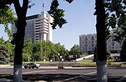
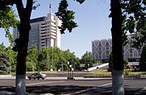
Samarqand viloyati — Oʻzbekiston Respublikasi viloyatlaridan biri hisoblanadi. U 1938-yil 15-yanvarda tashkil topgan[1]. Ushbu viloyat respublika hududining markaziy qismida, Zarafshon daryosining oʻrta oqimi havzasida joylashgan. Uning chegaralari gʻarb va shimoli-gʻarbda Navoiy viloyati, shimol va shimoli-sharqda Jizzax va janubda Qashqadaryo viloyatlari, janubi-sharqda Tojikiston bilan tutash. Viloyatning markaziy qismi goʻzal vohadan iborat boʻlib, bu voha uncha keng boʻlmay sharqdan-gʻarbga tomon Zarafshon va Turkiston togʻ tizmalari orasini egallagan. Viloyatning asosiy sugʻoriladigan yerlari xuddi ana shu maydonlarni egallagan. Aholi soni 2022-yil holatiga koʻra, 4 mln 077 ming 400 kishi[2]. Bu jihatidan Samarqand viloyati respublikada birinchi oʻrinda va respublika aholisining 11.4 foizini tashkil etadi.Samarqand viloyatida 2022- yil 1- iyul holatiga 1 kvadrat kilometrga o'rtacha 242,7 kishi to'g'ri kelgan. [3] Aholisi, аsosan, o'zbeklar, shuningdek, tojik, rus, forslar, ukrain, ozarbayjon, arman, koreys, belorus, tatar, mesxeti turklari, yahudiylar, lo'lilar va boshqa millat vakillari yashaydi. Viloyat hududi 16,88 ming km². Samarqand viloyati qishloq tumanlari soni boʻyicha Qoraqalpogʻiston Respublikasi va viloyatlar orasida birinchi oʻrinni egalaydi. Bu viloyatda bunday tumanlar soni 16 ta. Ular quyidagilar: Bulungʻur, Jomboy, Ishtixon, Kattaqoʻrgʻon, Narpay, Nurobod, Oqdaryo, Payariq, Pastdargʻom, Paxtachi, Samarqand, Toyloq, Urgut va Qoʻshrabot tumanlari. Shaharlar soni 2 ta, bular Samarqand va Kattaqoʻrgʻon[4][5]. Koʻhna, noyob tarixiy obidalarga boy boʻlgan Samarqand shahri viloyatning markaziy shahri boʻlib, u 1924—1930-yillarda Oʻzbekiston poytaxti vazifasini bajargan. TABIATI Samarqand viloyati Pomir-Oloy togʻlarining gʻarbiy chekkasida, Zarafshon daryosining oʻrta qismida joylashgan. Relyefi, asosan, kenglik boʻylab choʻzilgan va shimoldan Turkiston togʻ tizmalarining tarmoqlari (Nurota togʻi balandligi 2169 m), Oqtogʻ, 2003 m, janubdan Zarafshon togʻ tizmalari bilan oʻralgan Zarafshon daryosi vodiysini egallagan. Vodiy sharqdan (750-800 m) gʻarbga qarab (350 m) pasayib boradi. Vodiy qiya tekisliklar va adirlardan iborat. IQLIMI Kontinental, quruq iqlim. Bulutli kunlar kam boʻladi. Tekisliklarda qish iliq boʻladi. Yanvarning oʻrtacha harorati shimolda -2°, togʻlarda -5°. Yozi issiq. Iyulning oʻrtacha harorati 26°-28°. Oʻrtacha yillik yogʻin miqdori 282-460 mm. Vegetatsiya davri 325-335 kun. Balandlikka koʻtarilgan sari, harorat pasayib boradi. Iqlim sharoiti va sugʻorish tizimi Samarqand viloyatida paxta, tamaki, choy, , shaftoli, oʻrik, olxoʻri, uzum, anjir, anor kabi mevali daraxtlar; bugʻdoy, tariq, arpa kabi donli ekinlarni yetishtirish imkonini beradi. Asosiy daryosi - Zarafshon. Viloyat hududidagi uzunligi 193 kmni tashkil etadi. Dargʻom, Narpay (54 km), Oʻng qirgʻogʻi (64 km), Chap qirgʻogʻi (169,3), Markaziy magistral (39,5), Zarafshon, Eski Anhor kanallari va Kattaqoʻrgʻon suv omboridan ham ekinlarni sugʻorishda foydalaniladi. Tuprogʻi asosan, boʻz tuproq. Tekisliklar va 500 metrgacha balandliklarda och boʻz, sugʻoriladigan yerlarda oʻtloqi boʻz tuproq, 1500-1700 m balandliklarda toʻq boʻz tuproq, choʻl zonasida qumoq, taqir, boʻzqoʻngʻir tuproqlar tarqalgan. Yovvoyi oʻsimliklardan chala choʻl va choʻl oʻsimliklari asosiy oʻrinni egallaydi. Togʻ yon bagʻirlariga yaqin tekisliklarda shuvoq, efemerlar oʻsadi. Yovvoyi hayvonlardan tulki, chiyabo'ri, bo'ri, tekisliklarda jayron, tog'larda qo'ng'ir ayiq, daryo suvsari, qushlardan tustovuq, tog'larda kaklik, daryolarda turli baliqlar mavjud. Транспорти Viloyatda barcha turdagi transport vositalari yaxshi rivojlangan. Viloyat hududida birinchi bo'lib, temir yo'l 1888 y. Forob stansiyasidan (Turkmaniston) Samarqandgacha qurilgan. Camarqand viloyati hududidan Toshkent —Тurkmanboshi, Toshkent—Dushanbe, Samarqand—Qarshi, Toshkent—Uchquduq— Qo'ng'irot temir yo'llari mavjud. Viloyat hududidan o'tgan temir yo'lning (uzunligi 287,7 km), Samarqand shahridagi tramvay yo'lining uzunligi esa, 34,8 km.ni tashkil etadi. Shundan 50 km temir yo'l elektrlashtirilgan. "Afrosiyob" тez yurar poyezdi (2011 y 26 avgustdan) qatnaydi. Samarqand viloyati hududidan Kаttа O'zbekiston trakti, Zarafshon—Samarqand—Buxoro—Turkmanobod avtomobil yo'llari o'tadi. Samarqand shahridagi xalqaro aeroporti (1980 yilda ochilgan, 2022 yil mart oyida qayta rekonstruktsiya qilingan) orqali dunyoning turli mamlakatlari bilan bog'langan. Sanoat korxonalari Samarqand viloyatida juda ko'plab, sanoat va ishlab chiqarish korxonalari, zavodlar, firmalar, qo'shma korxonalar mavjud. 1. "Alpomish" mashinasozlik zavodi (traktorlar uchun gilzaporshenlar i.ch.), 2020/2021 O‘quv yili boshida jami umumta’lim muassasalari soni 1 271 tani tashkil etib, ulardan 894 tasi (70,0%) qishloq joylarida, 377 tasi (29,7%) shaharlarda joylashgan. O‘tgan yilning mos davriga nisbatan umumta’lim muassasalari soni 11 taga oshdi. O‘qituvchilar soni jami 56 637 ta, ulardan oliy malumotga ega bo‘lganlari 49 405 tani tashkil qilmoqda 2020/2021 o‘quv yili boshiga o‘quvchilar soni 737 797 nafar bo‘lib, ular ikki smenada tahsil olib kelishmoqda. Manba: OʻzME.  S harfi Tumanlar Tuman nomi Tuman markazi 1 Bulungʻur tumani Bulungʻur (shahar) 2 Ishtixon tumani Ishtixon 3 Jomboy tumani Jomboy shahri 4 Kattaqoʻrgʻon tumani Kadan 5 Qoʻshrabot tumani Qoʻshrabot 6 Narpay tumani Oqtosh 7 Nurobod tumani Nurobod 8 Oqdaryo tumani Loyish 9 Paxtachi tumani Ziyodin 10 Payariq tumani Payariq 11 Pastdargʻom tumani Juma (shahar) 12 Samarqand tumani Gulobod 13 Toyloq tumani Toyloq (qishloq) 14 Urgut tumani Urgut


Sirdaryo viloyati — Oʻzbekiston Respublikasi tarkibidagi viloyat. 1963-yil 16-fevralda tashkil etilgan. Shimolidan Qozogʻiston Respublikasi, sharqdan Toshkent viloyati, janubidan Tojikiston Respublikasi va gʻarbdan Jizzax viloyati bilan chegaradosh. Maydoni 4.28 ming km. Aholisi 900 mingga yaqin kishi (2022). Tarkibida 8 tuman (Boyovut, Guliston, Mirzaobod, Oqoltin, Sayxunobod, Sirdaryo, Xovos, Sardoba), 5 shahar (Guliston, Baxt, Sirdaryo, Shirin, Yangiyer), 6 shaharcha (Boyovut, Dehqonobod, Doʻstlik, Paxtaobod, Sayxun, Xovos) va 75 qishloq fuqarolari yigʻini bor (2004). Markazi — Guliston shahri. Tabiati Relyefi, asosan, toʻlqinsimon tekislik boʻlib, janubidan shim.gʻarbga pasayib boradi. Mirzachoʻl dashtining bir qismi viloyat hududiga kiradi. Bal. shimubida 230 m, markaziy qismida 400-450 m, jan. va jan.gʻarbda 600-650 m. Sharqida keng Sirdaryo vodiysi joylashgan. Mezozoy va kaynozoy davrida, asosan, choʻkindi jinslarning qalin qatlami bilan qoplangan. Shoʻroʻzak, Mirzarabot, Sardoba kabi botiqlar mavjud. Tekislik qismi daryolar oqizib keltirgan yotqiziklardan hosil boʻlgan, baʼzi joylarini koʻl, botqoq va shoʻrxok yerlar egallagan. Sirdaryo viloyatida yangi kanallar, zovurlar qazilib, choʻl oʻzlashtirildi va ekin maydonlarga aylantirildi. Tekislik qismida irrigatsiya inshootlari qurilib, paxtazor, bogʻ va tokzorlar barpo qilindi. Adirlar lalmikor yerlar va yaylovlardan iborat. Ob-havosi keskin oʻzgaruvchan va quruq. Yillik oʻrtacha temperaturasi 14°. Yanvarning oʻrtacha temperaturasi shimolida —6°, janubida —2°. Qishda havo tez soviydi va temperatura —30° gacha (Gulistonda —35°) pasayadi. Baʼzan, qish oʻrtalarida havo birdaniga isib, keyin sovib ketadi. Kech koʻklamda va erta kuzda ham kora sovuq tushib oʻsimlikning oʻsish davrini qisqartiradi. Yozi quruq va issiq. Iyulning oʻrtacha temperaturasi 27—29°. Yozda temperatura 32—45° gacha koʻtariladi. Koʻpincha issiq shamol (garmsel) tuproqni quritadi va oʻsimliklar rivojlanishiga yomon taʼsir qiladi. Vegetatsiya davri 218 kun. Yillik yogin 180-220 mm, asosan, qishda yogʻadi. Yozda kuchli bugʻlanish sababli yer osti suvlari yuza maydonlarning (Sharof Rashidov, Oqoltin, Guliston tumanlari) tuprogʻini shoʻr bosadi. Noyabrdan martgacha teztez esib turadigan „Bekobod shamoli“ tezligi 20-25 m/sek. (Boyovut tumanida 40 m/sek.)ga yetadi. Bahorda esadigan bu xildagi shamol unib chikayotgan gʻoʻzalarni baʼzan nobud qiladi. Keyingi yillarda ixota daraxtzorlari barpo qilindi. Tuproqlari, asosan, och tusli kuchsiz joylashgan boʻz tuproq boʻlib, kam va oʻrtacha shoʻrlangan, mexanik tartibiga koʻra, qumoq va soz tuproqlardir. Tekisliklarda shoʻrxok va shoʻrxoksimon tuproq uchraydi. Yer osti suvining chuq. 5-6 m. Shoʻroʻzak massivida, hali oʻzlashtirilmagan pastqam joylarda shoʻrxoklar keng tarqalgan. Sugʻoriladigan yerlarning 32% shoʻrlangan, 25% kuchsiz shoʻrlangan, 16% shoʻrxoklardan iborat. Oʻsimliklardan lolaqizgʻaldoq, boychechak, chuchmoma, qoqi yalpiz, ismaloq, yantoq, shoʻra, shuvoq, qoʻngʻirbosh, qoʻziquloq, tuyatovon, quyonsuyak. juzgʻun, qovul, oqquray, qiltiq, karrak, rang, iloq, betaga, qiyoq, qamish, yulgʻun, oqbosh, qushqoʻnmas, naʼmatak, mingboshi, chitir, gʻumay, pechak, saksovul, har xil butalar, jiyda, doʻlana, tol, terak, qayragʻoch, oq akatsiya, zarang, shumtol va boshqa oʻsadi. Yovvoyi hayvonlardan: jayra, tulki, boʻri, chiyaboʻri, qobon, jayran, nutriya, ondatra, koʻrsichqon, suvkalamush, tipratikan, yumronqoziq, kaltakesak, ilon, toshbaqa, falanga, chayon, qoraqurt; qushlardan xoʻjasavdogar, moyqut, bulduruq va boshqa bor. Hududiy boʻlinishi Tuman nomi Tuman markazi 1 Oqoltin tumani Oqoltin 2 Boyovut tumani Boyovut (shaharcha) 3 Guliston tumani Dehqonobod 4 Xovos tumani Xovos 5 Mirzaobod tumani Navroʻz (shaharcha) 6 Sardoba tumani Paxtaobod (Sirdaryo viloyati) 7 Sayxunobod tumani Sayxun 8 Sirdaryo tumani Sirdaryo (shahar) Tarixi Qadimgi Sirdaryo tarixi haqida maʼlumot beruvchi muhim yozma manba qad. yunon tarixchisi Arrianning „Iskandarning harbiy yurishlari“ asaridir. Bu asarda Sirdaryo „Tanais“, „Yaksart“ nomi bilan yuritiladi. Mil. av. 3—2-asrlarda Oʻrta Osiyoning shimoliy rayonnlarida 5 ta mayda davlatlardan iborat Qangʻyuy davlati ittifoqi yuzaga keladi. Uning tarkibiga hozirgi Sirdaryo viloyati hududlari ham kirgan. Ushbu davrda koʻchmanchi aholining viloyat hududiga kelib oʻrnashishi yer tanqisligini yuzaga keltiradi. Natijada hozirgi Xovos tumanining gʻarbiy qismlari ham aholi tomonidan oʻzlashtiriladi. Shoʻrbuloqsoyning quyi qismida Eski Xovos yodgorligi, Shirinsoyning quyi qismida Munchoqtepa yodgorligi qad koʻtaradi. Sirdaryo viloyati hududi ilk bor alohida oʻlka— Ustrushona sifatida Beyshi, Suyshi va Tanshu kabi Xitoy yilnomalarida tilga olinadi. Undan oldingi manbalarda Sharqiy Sao (suvi yoʻq) deb yuritiladi. Uning bunday nomlanishi hududda qoʻshni Choch va Sugʻddan farqli ravishda daryolarning koʻp boʻlmaganligi bilan izoxlanadi. Nisbatan oʻlkaning toʻlaroq nomlanishi Tanshu yilnomalarida („Shuaydushana“, „Suydushana“ nomlari bilan) berilgan. Tan imperatorlari saroyida oʻlka nomi, shuningdek, Layviy (magʻrurligini sezgan holda boʻysunmoq) deb ham yuritilgan. Viloyat qad. aholisining tili sugʻd tiliga oʻxshash tilda soʻzlashuvchi Sirdaryo va Amudaryo oraligʻida yashagan aholi tiliga yaqin boʻlgan. Xan davri yozma manbalarida Dovon (Fargʻona)dan to Ansi (Baqtriya)gacha boʻlgan hudud aholisi turli shevalarda gaplashsalarda, birbiriga yaqin tidda gaplashganlar va oʻzaro birbirini tushunganlar deyiladi. Mil. 6-asrda Turk xoqonligi davrida mahalliy aholining turk qabilalari bilan munosabatlari rivojlanadi. Qudaandachilik munosabatlari oʻrnatiladi. Ustrushona afshini Xasan ibn Haydar turk lashkarboshisining qiziga uylangan. 8-asrga oid Xitoy yozma manbasi Syuandzanda yozilishicha, oʻlka „Sutulisen“ deb nomlanadi. Shuningdek, unda shim.gʻarbda katta choʻl (Mirzachoʻl) joylashganligi, oʻlka hukmdori Bosi togʻi (Turkiston togʻ tizmasi)ning shim. yon bagʻrida yashaganligi haqida maʼlumotlar bor. Oʻlkada zarb qilingan 6—8-asrlarga oid tangalar Ustrushonaning ilk hukmdorlari Chirdmish, Satagari, Raxang haqida maʼlumot beradi. Hokimiyat shu davrda otadan bolaga oʻtgan. 8-asr boshida Ustrushonaga arablar bostirib kirgan. Ustrushona arab va Tan sulolasi oʻrtasidagi kurash maydoniga aylangan. 749 yilda xitoyliklar yurish qilgan boʻlsa, 751 yilda Ustrushonani arablar bosib olgan. Fakatgina 9-asr boshlaridan Haydar ibn Qavus arab xalifasi xizmatiga kiradi. 893 yilda afshinlar sulolasi agʻdarib tashlanib Ustrushona Somoniylar davlati tarkibiga kiritshshi. Oʻrta asrlardagi Ustrushona haqida birmuncha toʻliq maʼlumotlar arab yozma manbalarida mavjud. Ularda aytilishicha, oʻlka hududi Xoʻjanddan Samarqandgacha, Sirdaryo daryosi va Mirzachoʻldan to Hisor tizma togʻlarigacha boʻlgan. Istaxriy (10-asr) maʼlumotiga koʻra, Ustrushonaning koʻpgina qismini togʻlar egallagan boʻlib, unda „kemalar suzishi mumkin boʻlgan daryo ham, koʻl ham yoʻq“. Havkalga binoan, Movarounnaxrning boshqa viloyatlari qatori Ustrushona ham qishloq xoʻjaligi mahsulotlari bilan ajralib turardi. Bu mahsulotlar viloyat tashqarisiga, jumladan, Xoʻjandga chiqarilgan. Ayrim shaharlarda bozorlar boʻlgan. Ustrushonaliklarning fahri Mink va Marsmandada ishlab chiqarilgan temir qurollar boʻlib, ular Xurosonda ishlatilgan va Iroqqacha shu qurolyarogʻ bilan qurollanganlar. Ustrushona poytaxti Bunjikat sh. boʻlgan. Oʻrta Osiyodagi boshqa davlatlar qatori Ustrushona ham keyingi hayotida qoraxoniylar, moʻgʻullar, temuriylar, shayboniylar va boshqa davlatlari tarkibidagi tarixiy davrlarni boshidan kechirgan. Qadimgi viloyat axoliyey, asosan, soy va chashmalar boʻylarida vohavoha boʻlib hayot kechirishgan. Viloyat hududida Xoʻjamushkentsoy, Shoʻrbuloqsoy, Mugʻolsoy, Tagobsoy, Sarmichsoy singari suv manbalari boʻlgan. Suv balansining buzilishi manzilgohlarning yoʻq boʻlib ketishiga yoki boshqa joyga koʻchib oʻtilishiga olib kelgan. Sirdaryo viloyatida qadimgi kanallarning izlari, sardobalar mavjud. 70 km uzunlikdagi Oʻrinboyoʻgʻiz, Iskandarariq, Buxoroariq juda qad. kanallardir. 15-asrda Shohrux va Ulugʻbek Sirdaryodan Mirzachoʻlga kanal orqali suv chiqartirgan. Keyinchalik Mirzachoʻlning janubi-sharqida Boʻzariq, Sirdaryoning oʻng tomonida Dalvarzinariq barpo etilgan. Qiyot koʻli yonida Sirdaryodan suv oladigan mayda ariqlar boʻlgan. 1872-yilda Bekobod yonida Kaufman kanali (13 km), 1878—82 yillarda Toʻngʻizariq (6 km) qazildi. 1883—85 yillarda Iskandarariq va Buxoroariq qayta kavlandi. 1891—95 yillarda Farhod togʻi yonida maxsus toʻgʻon (Shohtoʻgʻon) qurildi. 1896-yilda hozirgi Doʻstlik kanali qazilib Mirzachoʻlning ichkarisiga suv yuborildi. 1897-yilda Mirzachoʻlda birinchi marta 6 ga yerga paxta ekildi. 1899-yilda 8 ming ga, 1907-yilda 9,09 ming ga, 1910-yilda 12,2 ming ga, 1915-yilda 34,5 ming ga yer sugʻorilib, 19 ming ga yerga paxta ekildi. 1926-yilda 180 km ariq va kanallar qazildi, sugʻoriladigan maydonlar 53 ming gektarga yetdi, 1927-yilda 60 ming ga (shundan paxta 27 ming ga), 1929-yilda 68 ming ga, 1934-yilda 134 ming ga, 1938-yilda 154 ming ga (shundan paxta 40 ming ga) yer sugʻorildi. 1942-yilda 180 ming ga yer (shundan 70 ming ga yer paxta) sugʻorildi. 1943—48 yillarda Farhod GES, bosh toʻgʻon Doʻstlik kanaliga tutashtirildi. Boyovut kanali va Farxrd suv ombori qurildi. Natijada Mirzachoʻlning jan. qismi va Dalvarzin choʻlini sugʻorish masalasi hal qilindi. 1956—59 yillarda Qayroqqum suv ombori va GES (quvvati 126 ming kVt) qurildi. 1956-yillarda sugʻoriladigan yerlar maydoni 280 ming gektar yerga yetdi. 1960-yilda Janubi Mirzachoʻl kanali (uz. 128 km) qazildi. 1958-yilda shoʻr suvlarni oqizish uchun 90 km uzunlikdagi Markaziy Mirzachoʻl kollektori qurilib, Boyovut va Yettisoy kollektorlariga qoʻshildi. Viloyat qududidan Sirdaryo oqib oʻtadi. Aholisi Sirdaryo viloyatida, asosan, oʻzbeklar (60%), shuningdek, qozoq, tojik, rus va boshqa 70 dan ortiq millat vakillari yashaydi. 1 km² ga 126 kishi toʻgʻri keladi (2003). Qishloq aholisi 455,9 ming kishi, shahar aholisi 211,9 ming kishi. Xoʻjaligi Sirdaryo viloyati respublikaning yirik paxtachilik bazalaridan biri. Viloyat xoʻjaliklari, asosan, paxta yetishtirishga ixtisoslashgan. Sanoati paxtani va boshqa qishloq xoʻjaligi mahsulotlarini qayta ishlashga qaratilgan. Sanoati 20-asr boshlarida viloyatda bir necha mayda korxona bor edi. 1970-yillarda 8 paxta tozalash zavodi, 29 paxta qabul qilish punkti boʻlgan. Paxta zavodlaridan chiqqan paxta tolasi Bolgariya, Polsha, Kuba, Chexoslovakiya, Turkiya, Afrika mamlakatlariga joʻnatilgan. Sirdaryo viloyatidagi 10774 ta korxonadan 10129 tasi kichik va oʻrta biznes korxonasi, shundan 8557 tasi mikrokorxona va 1282 tasi kichik va 290 tasi oʻrta korxonalardir. Viloyatda xorijiy investitsiya ishtirokida 39 ta korxona faoliyat koʻrsatadi. Ulardan 35 tasi qoʻshma korxonadir. Qoʻshma korxonalardan: Oʻzbekistan — Rossiya hamkorligidagi „Turkiston S“ (konditer mahsulotlar ishlab chiqaradi), Oʻzbekiston — Chexiya „Lechiva“ farmsanoat qoʻshma korxonasi (tibbiy spirt, doridarmon tayyorlaydi), chet el parrandachilik firmasi, Oʻzbekiston — Avstriya „Sirdaryo“, „Lolamodel“ (trikotaj buyumlar ishlab chiqaradi), „Sarbonteks“ (tibbiy bint, doka, jarroxlik salfetkalari), Oʻzbekiston — Eron „Sayxun PAYA“ (tomat pastasi ishlab chikariladi), Oʻzbekiston — Xitoy „Paxtakor LTD“ (issiqxona),Oʻzbek — Arab „Ok, oltin PMB“ (paxta tolasi ishlab chiqaradi) va boshqa korxonalar, ayniqsa, samarali faoliyat koʻrsatmoqda. 9 paxta tozalash zavodi, Sirdaryo issiklik elektr stansiyasi, Farhod GES, „Momiq“, „Zilola“, „Shuxrat“, „Gulistonnon“, „Xovosdon“, „Oq oltindon“ aksiyadorlik jamiyatlari, „Sayxunsut“ xususiy korxonasi, „Bunyod“ korxonasi (temirbeton buyumlar ishlab chiqaradi) va boshqa ishlab turibdi. Qishloq xoʻjaligi Paxtachilik, gʻallachilik, pillachilik, mevachilik, sabzavotpolizchilik va chorvachilikka ixtisoslashgan. Sirdaryo viloyatida 30 shirkat va 6170 fermer xoʻjaligi faoliyat koʻrsatadi (2004). Viloyatning jami ekin maydonlari 245,0 ming ga, shundan 115,3 ming ga yerga paxta, 86,3 ming ga yerga gʻalla, 6,0 ming ga yerga sholi, 1,9 ming ga yerga sabzavot, 2 ming ga yerga poliz, 450 ga yerga kartoshka, 19,5 ga yerga yem-xashak ekinlari ekiladi. 1233 ga bogʻ va tokzor bilan band. Shuningdek, sugʻoriladigan yerlarga beda, noʻxat, mosh, kunjut, tariq, loviya, kungabokar va boshqa ekiladi. Guliston va Xovos tumanlari sabzavot va poliz ekinlari ekiladigan asosiy joylardir. Viloyatda yetishtiriladigan qovun, tarvuz, piyoz Ural, Sibir va Uzok, Sharqdagi shaharlarga ham joʻnatiladi. Bogʻdorchilik va tokchilik rivojlangan. Sirdaryo viloyatidagi jami jamoa va shaxsiy xoʻjaliklarida 181,1 ming krramol (shundan 75,9 ming sigir), 120,5 ming qoʻy va echki, 376,3 ming parranda, 6,1 ming ot boqiladi (2004). Viloyatda 2 ta baliqchilik xoʻjaligi mavjud. Transporti Viloyat hududidagi temir yoʻl uzunligi 172 km, qattiq qoplamali avtomobil yoʻllari uzun. 1,6 ming km. Sirdaryo viloyati hududidan Toshkent—Kitob, Toshkent — Nukus, Toshkent — Buxoro, Toshkent — Termiz, Toshkent — Samarqand, Toshkent — Andijon, Toshkent — Xovos poyezdlari oʻtadi. Toshkent — Samarqand, Toshkent — Guliston elektr poyezdlari qatnovi yoʻlga qoʻyilgan. Katta Oʻzbekiston temperaturakti ham viloyat hududidan oʻtgan. Sirdaryo viloyati orqali Toshkentdan Jizzax, Samarqand, Navoiy, Buxoro, Termiz, Kitob, Shahrisabz, Urganch, Nukusga katnaydigan avtobuslar oʻtadi. Bundan tashqari, viloyat markazi bilan tuman markazlari oʻrtasida hamda Guliston va Yangiyerdan Toshkentga avtobuslar katnaydi. Madaniy-maorif, sogʻliqni saqlash va sport Sirdaryoda 1914-yilda bitta, 1916-yilda 13 ta rus-tuzem maktabi faoliyat koʻrsatdi. 1917—23 yillarda maktablar soni 52 ta, oʻquvchilar soni 2030 ga yetdi. 2003/2004 oʻquv yilida Sirdaryo viloyatida 308 umumiy taʼlim maktabi boʻlib, 156 ming oʻquvchi, shu jumladan, 14 ta ixtisoslashtirilgan maktabda 3659 oʻquvchi taʼlimtarbiya oldi. Viloyatdagi 14 musika va sanʼat maktabida 1300 oʻquvchi, 22 sport maktabida 11 mingga yaqin oʻquvchi taʼlim oldi. Xalq taʼlimi tizimida xalqaro hamkorlik borasida ham maʼlum ishlar amalga oshirilmoqda. Jumladan, Mirzaobod tumanidagi 21maktab YUNESKO maktabi Kengashiga aʼzo, YUNISEF tashkiloti bilan hamkorlikda viloyatda 5 ta xonadonbogʻcha tashkil etilgan. 2003-yilning sentyabr oyida „Ozodlikni qoʻllab-quvvatlash“ (AKSELS) Dasturi boʻyicha Toshkent shahrida boʻlib oʻtgan koʻriktanlovda viloyatning 110 iqtidorli maktab oʻquvchilari ishtirok etib, 1turdan 43 nafari muvaffaqiyatli oʻtdilar. Viloyat shahar va tumanlarida 1998— 2003-yillarda 22 kasb-hunar kolleji va akademik litseylari binolari qurilib ishga tushirildi. Ular zamonaviy dastgoh va texnika bilan jihozlandi. 2004-yilda Sirdaryo viloyatidagi 22 kasb-hunar kollejida 12483 oʻquvchi, 2 akademik litseyda 1186 oʻquvchi taʼlim oladi. Guliston universiteti mavjud. Sirdaryo viloyatida 1 muzey (Guliston shahridagi „Mirzachoʻlni oʻzlashtirish tarixi muzeyi“), 198 jamoat kutubxonasi (1659,8 ming nusxa asar), 103 klub va madaniyat uyi, 1 teatr (qarang Sirdaryo teatri), viloyat rasmlar galereyasi faoliyat koʻrsatadi. Viloyat Maʼnaviyat va maʼrifat markazi, xalq ijodiyoti va madaniy-maʼrifiy ishlar viloyat markazi, Guliston sanʼat bilim yurti, 2 ta madaniyat va istirohat bogʻi, „Oʻzbeknavo“, „Oʻzbekraqs“ viloyat boʻlimlari bor, „Sirdaryo navolari“ ashula va raqs ansambli, 9 ta xalq havaskorligi jamoalari respublika va viloyat ommaviymadaniy tadbirlarida faol ishtirok etmoqdalar. Sirdaryo viloyatidan Shafoat Rahmatullayeva kabi Oʻzbekiston xalq artistlari, A. Gʻofurov, Gʻ. Hamidullayev, M. Nurmatov, R. Hasanov, T. Qosimova, A. Yusuvaliyev, A. Abdullayev, O. Abdullayeva, A. Xoliqov, R. Karimov, Sh. Jumayev kabi Oʻzbekistonda xizmat koʻrsatgan artistlar yetishib chiqqan. Sogʻliqni saqlash Viloyatda 4,1 ming oʻrinli (10 ming kishiga 63,2 oʻrin) 32 kasalxona, 10 tugʻruqxona, 131 ambulatoriya, poliklinika, 130 qishloq vrachlik punkti, 108 dorixona va boshqa tibbiy muassasalarda 1522 vrach, 7616 oʻrta tibbiy xodim ishlaydi (2004). Guliston shahrida respublika shoshilinch tibbiy yordam markazi ishlab turibdi. Uning 9 ta tumanda boʻlimlari tashkil etilgan. Sport Sirdaryo viloyati sportchilari sportning 33 turi boʻyicha turli darajadagi musobaqalarda ishtirok etmoqdalar. Shulardan kikboksing, kurash, belbogʻli kurash, boks, akademik eshkak eshish, armrestling, taekvondo, yengil atletika, shaxmat, shashka, karate, velosport va boshqa turlari boʻyicha har xil turdagi medal sovrindorlari boʻlishdi. Viloyat sportchilari vakillari Respublika terma jamoalarining 19 tasida ishtirok etmoqdalar. Sirdaryo viloyati sportchilari 2003-yilda jahon, xalqaro va Osiyo musobaqalarida qatnashib sovrinli oʻrinlarni egallashdi. Jumladan, kikboksing boʻyicha Gretsiyada oʻtkazilgan jahon chempionatida Jahongir Koʻchmurodov, Alisher Abdullayevlar oltin medallar, Sobir Qodirov bronza medali, Rossiyada armrestling boʻyicha oʻtkazilgan jahon chempionatida Farid Usmanov kumush medal, shashka boʻyicha Hindistonda oʻtkazilgan Osiyo chempionatida Alisher Ortiqov kumush medal, boks boʻyicha Italiyadagi jahon chempionatida Sherzod Abdurahmonov kumush hamda Boku shahridagi xalqaro turnirda bronza medal sovrindorlari boʻlishdi. Italiyada akademik eshkak eshish boʻyicha xalqaro turnirda Sergey Tyan, Yuriy Shaxsuvaryan, Sergey Yaqubov va Vitaliy Silayevlar bronza medallarini, Rossiyadagi xalqaro shaxmat turnirida Sobir Umarov 1-oʻrinni, Angliyadagi kurash boʻyicha „Islom Karimov“ xalqaro turnirida Alisher Boʻronov 1-oʻrinni qoʻlga kiritdilar. 2003-yilda viloyat sportchilari 6 ta jahon, 16 ta xalqaro, 40 ta dan ortiq respublika musobaqalarida qatnashib, munosib oʻrinlarni egallashdi. Viloyatda tennis boʻyicha xalqaro „Fyuchers“ turnirini oʻtkazish anʼanaga aylangan. Sirdaryo viloyatida sportning texnik turlari (karting) boʻyicha Respublika chempionatlari oʻtkazilib kelinmoqda. Viloyatda 22 bolalar va oʻsmirlar sport maktabi faoliyat koʻrsatadi. Ularda 11 mingga yaqin oʻquvchi sportning har xil turlari bilan shugʻullanadi. Guliston shahrida viloyag sport qoʻmitasiga qarashli Olimpiya oʻrinbosarlari bolalar va oʻsmirlar maxsus sport maktabi ishlab turibdi. Sirdaryo viloyatida sportchilar va aholi ixtiyorida 1493 sport inshootlari (shu jumladan, „Alpomish“ sport majmui, „Boks“ saroyi, „Yoshlar sport markazi“, tennis kortlar va boshqalar), 1230 sport maydonchasi, 11 suzish havzasi, 12 stadion bor. Viloyatda barcha turdagi sport tashkilotlari sport seksiyalarida 181,3 mingdan ziyod bola shugʻullanib kelmoqda. Bolalar sportini rivojlantirish boʻyicha umumiy taʼlim maktablari, kollej va litseylar boʻyicha oʻquv dasturlari ishlab chiqildi, tegishli choratadbirlar belgilandi. Taʼlim muassasalarini, sport maktablarini malakali kadrlar bilan taʼminlashda Guliston davlat universitetida ochilgan boshlangʻich taʼlim va sport-tarbiyaviy ishlar, jismoniy tarbiya va jismoniy madaniyat yoʻnalishlari boʻyicha sirtqi boʻlimning muayyan oʻrni bor. Adabiyoti Sirdaryo viloyati adabiy muhitining yuksalishida „Sirdaryo haqiqati“ gazetaning tashkil etilishi (1963) munosabati bilan bu yerga yuborilgan bir guruh yozuvchi va jurnalistlarning taʼsiri katta boʻldi. Sirdaryo adabiyoti respublika adabiyotining tarkibiy qismi sifatida faoliyat koʻrsatmoqda. Viloyatda „Ziyo“ nashriyoti tashkil etilgan. Mustaqillik yillarida oʻnlab yosh, iqtidorli shoirlar oʻz ijodi bilan viloyat sheʼriyat muxlislarga tanilib kelmoqda. Oʻzbekiston xalq shoiri Toʻra Sulaymon oʻzining 20 dan ortiq sheʼriy toʻplamlari va dostonlari bilan oʻzbek adabiyotiga qissa qoʻshgan. Uning „Istar koʻngil“, „Hamqishloqlarim“, „Qorasoch“ va boshqa kitoblari adabiyot muxlislarining mulkiga aylangan. Shoira Halima Xudoyberdiyeva poeziyasining mavzusi vatan, dala, bobodehqon, ayol, muhabbat, mangulikdir. „Oʻzimizning bogʻlar“, „Ona, seni sharaflayman“, „Qalbingga chorlaysan“ turkum sheʼrlari, „Oq olmalar“, „Chaman“ va boshqa sheʼriy toʻplamlarida insonning ruhiy dunyosi aks etgan. Oʻzbekistonda xizmat koʻrsatgan madaniyat xodimi Hamroqul Rizo (Rizoqulov) Sirdaryoning meqnatkash kishilari matonatini kuylab adabiyotga kirib kelgan. Uning „Sirdaryo qasidasi“, „Choʻl qaldirgʻochi“, „Umid karvonlari“ sheʼriy toʻplamlari, „Oʻgʻirlangan bolalik“, „Oyning oʻn beshi yorugʻ“ qissalari oʻz muxlislarini topgan. Shoira Hayotxon Ortiqboyeva, hajvchi adib Joʻra Umarqulov va boshqa ijodkorlar Sirdaryo vohasining mustaqillik yillaridagi kamolotini, sirdaryoliklarning ijodiy mehnatini oʻz asarlarida aks ettirmoqdalar. Adabiyotshunos Anqaboy Quljonov, Ravshanbek Maxmudov, Umrzoq Oʻljaboyev kabi olimlarning bir qancha asarlari nashr etilgan. Sirdaryo viloyatida Oʻzbekiston ijodiy uyushmalari (yozuvchilar, rassomlar, meʼmorlar, jurnalistlar va boshqalar)ning viloyat tashkilotlari faoliyat koʻrsatadi. Matbuoti, radio va televideniyesi Sirdaryo viloyatida 2 viloyat gazeta („Sirdaryo haqiqati“, „Sirdarinskaya pravda“), 9 tuman gazeta, 5 shahar gazeta. („Guliston yangiliklari“, 1989; „Gulistanskiye novosti“, 1989; „Yangiyer tongi“, 1967; „Shirin Sadosi“, 1995; „Baxtnoma“, 1996-yildan) chiqadi. Viloyatda, shuningdek, 14 tarmoq, 1 xususiy gazeta. („Yogʻdu plyus“, 1994-yildan chiqadi), 1 jurnal („Universitet axborotnomasi“, 2001-yildan chiqadi) nashr etiladi. Sirdaryo viloyatida dastlabki radioeshittirishlar 1963-yildan boshlangan. Viloyat radiosi oyiga 21 soat 20 min. hajmida eshittirishlar beradi. Shuningdek, Oʻzbekiston radiosining birinchi „Oʻzbekistan“ kanalida radioeshittirishlar retranslyasiya qilinadi. 1996-yilda viloyat telestudiyasi tashkil etilib, telekoʻrsatuvlar bera boshladi. Sirdaryo viloyatida, shuningdek, „Aloqa A. K.“ tijorat televideniyesi (2001-yildan), „Shodlik R“ xususiy firmasiga qarashli „Kometa“ kabelli telestudiyasi (2003-yildan) faoliyat koʻrsatadi. Meʼmoriy yodgorliklardan viloyat hududida Sharof Rashidov tumanidagi Sardoba (16-asr)saqlanib qolgan (Sardobaaagch rasmga q.)640—641betlar orasidagi Sirdaryo viloyatining tabiiy va iqtisodiy ran pli haritasiga q.[1][2][3][4] Mashhur sirdaryoliklar Elyor Gʻaniyev — Oʻzbekiston davlat arbobi Mansur Mirzaahmedov — Oʻzbekiston davlat arbobi Fayzulla Mullajonov — Oʻzbekiston davlat arbobi Ibrohim Tojiyev — Qozogʻiston davlat arbobi
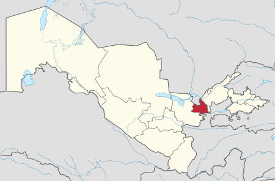
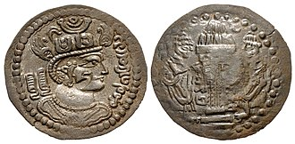
Surxondaryo viloyati — Oʻzbekiston Respublikasi tarkibidagi viloyat. 1941-yil 6-martda tashkil etilgan (1925-yil 29-iyundan Surxondaryo okrugi boʻlgan). 1960-yil 25-yanvarda Qashqadaryo viloyati bilan qoʻshilgan. 1964-yil fevralda qaytadan tashkil qilindi. Respublikaning janubi-sharqida, Surxon-Sherobod vodiysida joylashgan. Viloyat nomi vohadan oqib oʻtuvchi “Surxon” (fors-tojik: “qizil”) daryosi nomidan kelib chiqqan. Janubidan Amudaryo boʻylab Afgʻoniston, shimoliy, shimoli-sharq va sharqdan Tojikiston, janubi-gʻarbdan Turkmaniston, shimoli-gʻarbdan Qashqadaryo viloyati bilan chegaradosh. Maydoni 20,1 ming km². Aholisi 2821,9 ming kishi (2023-yil 1-aprel holatiga koʻra). Tarkibida 14 ta tuman (Angor, Bandixon, Boysun, Denov, Jarqoʻrgʻon, Muzrabot, Oltinsoy, Sariosiyo, Termiz, Uzun, Sherobod, Shoʻrchi, Qiziriq, Qumqoʻrgʻon), 8 ta shahar (Boysun, Denov, Jarqoʻrgʻon, Termiz, Shargʻun, Sherobod, Shoʻrchi, Qumqoʻrgʻon), 114 ta shaharcha, 865 ta qishloq aholi punktlari mavjud (2020). Markazi — Termiz shahri. Tabiati Surxondaryo viloyati relyefi togʻ va tekisliklardan iborat, shimoldan janubga qiyalanib va kengayib boradi. Togʻlardan oqib tushadigan koʻpdan-koʻp daryo va soylar dara hosil qilgan. Surxondaryo va Sheroboddaryo oqib oʻtadigan tekislik shimoliy, gʻarb va sharqdan baland Hisor tizmasi (eng baland joyi 4643 m) va uning tarmoqlari (Boysuntogʻ, Koʻhitang togʻ, Bobotogʻ) bilan oʻralgan. Togʻlar, asosan, yuqori paleozoy va mezozoy davrlari jinslaridan, tekislik qismi esa toʻrtlamchi davr yotqiziqlardan tarkib topgan. Bu yerda neotektonika jarayonlari davom etmoqda: tevarak atrofdagi togʻlar koʻtarilib, botiq choʻkib bormoqda. Togʻlar bilan tekislik orasida adir va togʻoldi zonasi joylashgan. Togʻlar shimoliy sovuq havo oqimlarini toʻsib turishi natijasida subtropik oʻsimliklar oʻstirish uchun qulay iqlim sharoiti vujudga kelgan. Togʻ zonasi va adirlarda, asosan, gʻalla yetishtiriladi, chorva uchun yozgi yaylov. Mutlaq balandlik 300-500 m boʻlgan Surxon-Sherobod tekisligida paxta ekiladi, bogʻ-tokzorlar barpo qilingan. Janubiy qismi keng qumliklar bilan qoplangan. Foydali qazilmalardan neft va gaz (Xovdogʻ, Kakaydi, Lalmikor, Amudaryo boʻyi tekisliklari), toshkoʻmir (Shargʻun, Hisor, Boysun, Koʻhitang togʻlarining etaklari), polimetall (Sangardak), osh tuzi (Xoʻjaikon) konlari bor. Gips, granit, argillit kabi qurilish materiallari, mineral suvli buloq koʻp. Tekislik qismining iqlimi quruq subtropik. Yozi jazirama issiq va uzoq, qishi iliq va qisqa. Yillik oʻrtacha temperatura 16°—18°. Iyulning oʻrtacha temperaturasi 28°.—32°, yanvarniki 2,8°—3,6°. Oʻzbekistonda eng issiq temperatura ham shu viloyat hududida kuzatilgan (1914-yil 21-iyunda Termizda 49,5° issiq boʻlgan). Baʼzi yillari qish ancha sovuq (-20° va hatto undan ham past). Yil davomida bulutsiz kunlarning koʻp boʻlishi va quyosh nurining tik tushishi effektiv tralar yigʻindisi yuqori boʻlishiga olib keladi. 10° dan yuqori trali kunlar tekislik qismida 290— 320 kun davom etadi. Bu esa viloyatda eng issiqsevar ekinlar (shakarqamish, ingichka tolali paxta) va mevalar yetishtirishga imkon beradi. Viloyat togʻlar orasidagi berk botikda joylashganidan bu yerda yogʻin kam. Viloyatning janubiy tekisliklarida yiliga 130- 140 mm, Hisor togʻlari yon bagʻirlarida 445-625 mm yogʻin yogʻadi. Yogʻinning asosiy qismi qish va bahorda tushadi. Gʻarbiy, janubi-gʻarbiy va shimoli-sharqiy shamollar koʻp esadi. Viloyatning janubi-sharqiy qismida esadigan Afgʻon shamoli iqlimga salbiy taʼsir etadi. Viloyatning asosiy suv arteriyalari — Surxondaryo va Sheroboddaryo hamda ularning Qoratogʻdaryo, Toʻpolondaryo, Sangardakdaryo, Xoʻjaipok kabi irmoqlari. Togʻ qor va muzliklaridan, yogʻindan toʻyinadigan bu daryolar viloyat hududining shimoliy qismi, togʻ va togʻoldi zonalarinigina suv bilan taʼminlay oladi, janubidagi keng tekisliklarda doimiy suv tanqisligi kuzatiladi. Yer osti (artezian) suvlaridan tobora keng foydalanilmoqda. 1957—1958-yillarda Uchqizil, 1959—1962-yillarda Janubiy Surxon va Degrez suv omborlari, Jarqoʻrgʻon gidrotuguni qurildi. Hazorbogʻ, Daytoʻlak, Qumqoʻrgʻon, Zang kanallari, Sherobod, Amu-Zang mashina sugʻorish kanallari barpo etildi. Tuprogʻi tekisliklarda taqirsimon va shoʻrxok och boʻz tuproqlar, togʻ yonbagʻrida turli xil boʻz tuproqdir. Oʻsimliklar dunyosi ham tabiiy sharoiti bilan bogʻliq. Janubidagi ekin ekilmaydigan qumloq joylarda qandim, oq saksovul, cherkez, taroqbosh, yaltirbosh, yantoq, butasimonlar; daryo boʻylarida yulgʻun, jiyda, turangʻil, terak, savagʻich, qiyoq, qamish; adir va togʻlarning pastki yonbagʻirlarida bir yillik efemerlar (lolaqizgʻaldoq, noʻxatak); 1200-2500 m balandliklarida efemerlar bilan birga archa, pista, qayin, tol, yongʻoq, olma, zarang oʻrmonlari uchraydi. Bobotogʻ tizmasi yonbagʻirlarida respublikaning eng yirik tabiiy pistazorlari joylashgan. Baland togʻ zonasi subalp va alp oʻtloqlari bilan band. Hayvonot dunyosi ancha boy: boʻri, tulki, chiyaboʻri, ayiq, jayron, qobon, yovvoyi echki, arhar, toʻqaylarda bugʻu, toʻqay mushugi, kalamush, qoʻshoyoq, yumronqoziq, koʻrsichqon, gekkon kaltakesagi, koʻzoynakli ilon (kobra), oʻqilon, jayra, qushlardan ular (togʻ kurkasi), qirgʻovul, mayna, qaldirgʻoch, gʻoz, oʻrdak, soʻfitoʻrgʻay, chil, kaklik bor. Daryo va suv omborlarida har xil baliq koʻp. Surxondaryo viloyati hududida Surxon davlat qoʻriqxonasi joylashgan. Hududiy boʻlinishi Tuman nomi Tuman markazi 1 Angor tumani Angor shahri 2 Bandixon tumani Bandixon shaharchasi 3 Boysun tumani Boysun shahri 4 Denov tumani Denov shahri 5 Jarqoʻrgʻon tumani Jarqoʻrgʻon shahri 6 Qiziriq tumani Sariq shaharchasi 7 Qumqoʻrgʻon tumani Qumqoʻrgʻon shahri 8 Muzrabod tumani Xalqobod shaharchasi 9 Oltinsoy tumani Qarluq shahri 10 Sariosiyo tumani Sariosiyo shaharchasi 11 Sherobod tumani Sherobod shahri 12 Shoʻrchi tumani Shoʻrchi shaharchasi 13 Termiz tumani Uchqizil shaharchasi 14 Uzun tumani Uzun shahri Aholisi, asosan, oʻzbeklar (78%), shuningdek, tojik, rus, turkman, qozoq va boshqa millat vakillari ham yashaydi (2004). Aholining oʻrtacha zichligi 1 km²ga 130,0 kishi. Shahar aholisi 923,4 ming kishi, qishloq aholisi 1689,0 ming kishi (2019). Xoʻjaligi va sanoati Yaqin oʻtmishda viloyat iqtisodiyotida qishloq xoʻjaligi yetakchi mavqeda edi. Keyingi davrda yangi tarmoqlar vujudga keldi. Viloyatning tabiiy geografik oʻrni qulay, mehnat resurslari ham yetarli. Sanoat ishlab chiqarish: yengil va oziq-ovqat sanoati, qishloq xoʻjaligi: paxta va bugʻdoy yetishtirish, qoramolchilik va qoʻychilik, transport, ayniqsa, temiryoʻl va avtomobil transporti salmoqli oʻrin tutadi. Sanoatining yetakchi tarmoqlari: paxta tozalash, paxtani qayta ishlash korxonalaridir. Yirik sanoat korxonalari: „Jarqoʻrgʻonneft“ boshqarmasi, Sherobod keramika badiiy buyumlar, Denov yogʻekstraksiya, Sariosiyo tosh saralash zavodlari, Shoʻrchi un kombinati, Jarqoʻrgʻon yigiruv-toʻquv, Termiz tikuvchilik fabrikalari, Shargʻun koʻmir koni, Xoʻjaikon tuz koni korxonalari va boshqa Surxondaryo viloyatida 40 ga yaqin qoʻshma, 4000 dan ziyod kichik va xususiy korxona ishlab turibdi. Jumladan, Afgʻoniston bilan hamkorlikda tashkil etilgan xalq isteʼmoli mollari ishlab chikariladigan „Namaf“ va „Afroʻz“, „Surxonteks“ va boshqa qoʻshma korxonalari faoliyat koʻrsatmoqda. Hindiston — Termiz „Farmed“ qoʻshma korxonasida mahalliy giyohlar asosida dori-darmon, Turkiya — Termiz „Poʻlat“ qoʻshma korxonasida milliy gilamlar, paloslar tayyorlanadi. Tumanlarda qishloq xoʻjaligi mahsulotlari qayta ishlanadigan kichik korxonalar, sexlar tashkil etilmoqda. Qishloq xoʻjaligining asosiy tarmoqlari: paxtachilik, gʻallachilik, bogʻdorchilik, pillachilik, limonchilik. Togʻ etaklarida lalmikor dehqonchilik (asosan, bugʻdoy va arpa) bilan shugʻullaniladi. Oʻzbekistonda eng koʻp ingichka tolali paxta Surxondaryo viloyatida tayyorlanadi. Viloyatning togʻoldi tumanlarida bogʻdorchilik va tokchilik rivojlangan. Chorvachilikda qoramol, qoʻy (qorakoʻl va hisor qoʻylari), echki, yilqi, parranda, quyon boqiladi. Jahon moʻyna va teri auksionlarida juda qadrlanadigan „Surxon suri“ qorakoʻl terisi yetishtiriladi. Dehqonchilikda foydalanadigan yerlar maydoni 284,3 ming gektar, shundan sugʻoriladigan yerlar 271,6 ming gektar, shu jumladan, 120,8 ming gektar yerga paxta, 129,7 ming gektar yerga don ekinlari, 9,1 ming gektar yerga sabzavot, 1,8 ming ga yerga poliz, 5,5 ming ga yerga kartoshka, 16,2 ming gektar yerga yem-xashak ekinlari ekiladi. 33,5 ming gektar yer koʻp yillik daraxtzorlar, 12,7 ming ga yer mevazor, 5,2 ming ga yer tutzor, 15,1 ming gektar yer tokzorlar bilan band. 854,2 ming gektar yerni yaylovlar egallagan. Yerlarning meliorativ holatini yaxshilash maqsadida kollektor-drenaj tarmoqlari qurilgan. Viloyatda 151 shirkat, 4715 fermer xoʻjaliklari bor. Viloyat jamoa va shaxsiy xoʻjaliklarida 487,2 ming qoramol (shu jumladan, 227,7 ming sigir), 1042,0 ming qoʻy va echki, 1052,5 ming parranda, 12,2 ming ot boqiladi (2004). Transporti Viloyatda temiryoʻl transportining salmogi katta. Surxondaryoda dastlabki temiryol 1915-yilda Kogon— Termiz qurilgan. Bu viloyatni boshqa regionlar bilan bogʻlaydigan dastlabki muhim yoʻl boʻlgan. 1925-yilda 248 kmli Termiz—Dushanbe temiryoʻlni qurishga kirishildi. Bu yoʻlning qurilishi Termizni Oʻrta Osiyoning yirik shaharlari — Toshkent va Dushanbe bilan bogʻladi. 1971-yilga kelib Surxondaryo viloyatini Tojikistonning janubiy tumanlari bilan bogʻlovchi Termiz—Qoʻrgʻontepa — Yavan temiryoʻlini qurishga kirishildi. Gʻuzor — Boysun — Qumqoʻrgʻon temir yoʻlning qurilishi yakunlangan. Amudaryo ustidan Hayraton temir yoʻ koʻprigi qurilgan. Viloyat hududidan Moskva — Dushanba, Ashxobod — Dushanba temir yoʻllari oʻtgan. Termiz — Toshkent, Termiz — Amu-Zang, Termiz — Sariosiyo shaharcha Sariosiyo, Termiz — Boldir yoʻnalishlarida poyezdlar qatnaydi. Shuningdek, Termiz orqali Dushanbe — Astraxon, Dushanbe — Konibodom, Qoʻrgʻontepa — Konibodom, Koʻlob — Astraxon yoʻnalishlarida poyezdlar qatnaydi. Viloyatdagi Temir yoʻllarning uzunligi 300 km. Viloyatning ichki transport aloqalarida avtomobil yoʻlining ahamiyati juda muhim. Surxondaryo viloyatidagi qattiq qoplamali avtomobil yoʻllarning uzunligi 2,7 ming km. Viloyatning asosiy avtomobil yoʻli —Katta Oʻzbekiston traktoor. Avtomobilda mamlakatlararo yuk tashish xizmati korxonasi yuklarni qoʻshni Afgʻonistonga yetkazib bermoqda. Surxondaryo viloyatining yirik shaharlari (Termiz va Denov)dan bir qancha xorijiy mamlakatlar va Oʻzbekistonning ichki tumanlariga avtomobil transporti qatnaydi. Termiz — Qarshi, Termiz — Hayraton (Afgʻoniston), Termiz — Dushanbe, Termiz — Toshkent, Denov — Qarshi, Denov — Shahrisabz, Denov — Gʻuzor, Denov — Urganch, Denov — Samarqand yoʻnalishlari shular jumlasidan. Surxondaryo viloyatida respublikada yagona boʻlgan Termiz dare porti joylashgan. Termiz va Sariosiyoda aeroport bor. Termiz aeroportidan Toshkent, Moskva, Ashxobod, Olmaota, Samarqand, Namangan, Buxoro, Andijon va boshqa yoʻnalishlarda yoʻlovchilar tashuvchi samolyotlar qatnovi yoʻlga qoʻyilgan. Madaniyat va maorif, sogʻliqni saqlash va sport Surxondaryo vodiysi ilk ibtidoiy odamzod makon topgan joy sifatida taʼriflanadi. Boysun tizmalaridan oʻrta paleolit davriga (mil. av. 100— 40 mingyilliklarga) oid ibtidoiy odam manzillarining qoldiqlari topilgan. Surxondaryo togʻlarida tosh davrining soʻnggi bosqichi—yuqori paleolitga (miloddan avvalgi 40-12-mingyilliklar) doir topilma ham koʻp. Shulardan biri Teshiktosh unguridan qazib olingan 8-9 yashar bola suyaklaridir (antropolog M. M. Gerasimov tomonidan qiyofasi tiklangan). Ushbu topilma „neandertal odam“ nomi bilan mashhur boʻlib, Oʻzbekistonning, umuman, Oʻrta Osiyoning hozirgi zamon odami (kromanon) shakllangan mintaqaga taalluqli ekanini isbotlashga dalil boʻldi. Vohada qadimgi madaniyatga mansub Ayritom, Dalvarzintepa, Xolchayon, undan keyingi davrlarga oid Sopollitepa, Mirshodi, Moʻlali, Kampirtepa, Jarqoʻrgʻon, Bolaliktepa va boshqa arxeologik yodgorliklar topilib oʻrganildi. Koʻhitang togʻlarida aniqlangan Zarautsoy qoyatosh rasmlari mezolit yoki neolit davriga tegishli. Zarautsoydagi gʻor shiftlari va devorlarida oxra boʻyogʻi yordamida rayem chizilgan. Rasmlarning asosiy qismi yovvoyi buqalarni sehr-jodu yoʻli bilan ovlash manzarasini aks ettiradi. Miloddan avvalgi 2-mingyillikning 1-yarmida hozirgi Oʻzbekiston janubga Amudaryo soʻl sohilidan kelgan qabilalar Koʻhitang va Boysun togʻoldi hududlarini oʻzlash.tirib Sopollitepa, Jarqoʻton, Moʻlalitepa aholi manzilgohlariga asos soldilar. Miloddan avvalgi 329-327-yillarda viloyat hududi makedoniyalik Iskandar tomonidan bosib olingan. Keyinchalik Salavkiylar davlati tarkybiga kirgan. Oʻrta asrlarda Buyuk ipak yoʻlining bir tarmogʻi Surxondaryo (Termiz) orqali oʻtgan. Kushon podsholigi hududiga kirgan Dalvarzintepa va Xolchayonda oʻtkazilgan arxeologik qazishmalar, Eski Termizdan topilgan Budda ibodatxonalari shaharlarning naqadar rivojlanganligini koʻrsatadi. Bu davrda hunarmandchilik va qishloq xoʻjaligini taraqqiy topishi, tovar pul munosabatlarining rivojlanishi, meʼmorlik, monumental haykaltaroshlik, rassomlik va boshqa sanʼatlarning yuksalishi kuzatiladi. Surxondaryo viloyatining hozirgi hududi III-IV asrlarda Kushonlar davlati parchalanib ketgach, eftaliylar davlati, V-VIII asrlarda Toxariston tarkibida, keyin Turk xoqonligi qoʻl ostida boʻldi. 667-yilda arablar dastlab Chagʻoniyon va Termizga hujum qilib bu shaharlarni faqat VIII asrning 2-yarmidagina toʻliq bosib olishga erishdilar. Oʻzbekiston janubidagi yerlar Pa.gacha Chagʻoniyon davlati qoʻlida boʻlgan. XI asrda Chagʻoniyon va Termizni egallash uchun Gʻaznaviylar va Qoraxoniylar oʻzaro kurashadilar. Termiz Gʻaznaviylar davlatiga qoʻshib olinadi, soʻngra Xorazmshohlar davlati tarkibida boʻladi. 1220-yilda moʻgʻullar bosib oldi. 1370-yildan Amir Temur saltanati tarkibiga kirdi. Surxondaryo koʻhna tarixi, qadimgi madaniyati, yodgorliklari bilan mashhur. Surxon vohasidagi olimlarning koʻpchiligi „Termiziy“ taxallusi bilan nom chiqarganlar. Ular tarix, geografiya, falsafa, huquqshunoslikka oid asarlari bilan tanilgan. Hakim at-Termiziy, Shahobuddin Sobir Termiziy, Muhammad ibn Hamid Termiziy, Abu Bakr Varrok Termiziy va boshqa allomalar shu vohadan yetishib chiqqanlar. Surxondaryo viloyatida mashhur sanʼatkorlar, baxshilar, xalq artistlari, rassomlar voyaga yetgan. Viloyatda 2003-2004-oʻquv yilida 827 umumiy taʼlim maktabi, 2 internat maktabi, Mehribonlik uyi, 18 litsey, 4 gimnaziyada 517,5 ming oʻquvchi taʼlim oldi. 2003-yilda „AKSELS“ xalqaro tashkilotining „Oʻqishga aʼlochilik dasturi“ tanlovida viloyatning gʻolib chiqqan oʻquvchilari oʻqishni xorijda davom ettirmoqdalar. 2004-yilda ham taʼlim sohasidagi xalqaro hamkorlik ishlari davom ettirilib „AYREKS“ xalqaro tashkilotining „Butun olam Sizning sinfingizda“ tanlovida Termiz tumani oʻquvchilari respublika gʻolibi boʻlishdi. 1998—2003-yillarda 35 ta kasb-hunar kolleji va 2 akademik litsey qurilib foydalanishga topshirildi. Bu oʻquv muassasalarida 80 dan ortiq mutaxassislik boʻyicha taʼlim-tarbiya berilmoqda. Viloyatdagi 5 oʻquv yurtida 9,9 ming oʻquvchi oʻqiydi. 16 bolalar musiqa maktabida 1443 oʻquvchi, 1 oliy oʻquv yurti (Termiz davlat universiteti)da 6,5 ming talaba bilim olmoqda. Surxondaryo viloyatida Shreder nomidagi bogʻdorchilik, tokchilik va vinochilik ilmiy tadqiqot institutining Janubiy Oʻzbekiston subtropik oʻsimliklar seleksiyasi stansiyasi faoliyat kursatadi. Surxondaryo arxeologiya muzeyi, Surxondaryo viloyat oʻlkashunoslik muzeyi, musiqali drama teatri, bolalar qoʻgʻirchoq teatri mavjud. 413 jamoat kutubxonasi (kitob fondi 3,6 mln. nusxa), 146 klub muassasasi, 2 madaniyat va istirohat bogʻi, bolalar bogʻi, Termiz hayvonot bogʻi, yoshlar majmui, xalq ijodiyoti va madaniy-maʼrifiy ishlar viloyat uslubiyat markazi bor. 4 xalq drama teatri, 2 qoʻgʻirchoq xalq teatri, 10 ashula va raqs dastasi, 6 folklor etnografik xalq dastasi, milliy dorbozlar guruhi va boshqa madaniy muassasalar ishlab turibdi. Jumladan, Boysun tumanidagi „Shalola“, Shoʻrchi tumanidagi „Kumush tola“, Uzun tumanidagi „Rohat“ ashula va raqs xalq dastalari Buyuk Britaniya, Turkiya, Afgʻoniston va Hindistonda boʻlib oʻtgan xalqaro festivallarda ishtirok etishgan. Surxondaryo viloyatida Oʻzbekiston xalq rassomi Roʻzi Choriyev, Oʻzbekistonda sanʼat arbobi Mansur Ravshanov, Oʻzbekiston xalq baxshilari Sh. Boltayev va A. Poyonoye, Oʻzbekistonda xizmat koʻrsatgan madaniyat xodimi A. Ibrohimov, Oʻzbekistonda xizmat koʻrsatgan artistlar G. Ravshanova, R. Mamataliyev, H. Oripov, M. Mahmudova, A. Narzullayev, Y. Mirqurbonov, S. Qosimova, N. Allanazarovlar voyaga yetganlar. Viloyatda „Boysun bahori“ xalqaro folklor-etnografik festivali oʻtkazilib boriladi. 1999-yilda „Alpomish“ dostonining 1000-yilligi, 2002-yilda Termiz shahrining 2500-yilligi xalqaro miqyosda nishonlandi. Sogʻliqni saqlash Viloyatda 92 kasalxona (8715 oʻrin), 366 poliklinika, ambulatoriya va boshqa tibbiy muassasalar, 179 ayollar konsultatsiya markazi, 225 bolalar poliklinikasi va xonalari, 149 qishloq vrachlik punkti, 398 feldsher-akusherlik punkti, 19 qishloq uchastka kasalxonasi, 73 qishloq vrachlik ambulatoriyasi mavjud. Ushbu tibbiy muassasalarda 4,2 ming vrach (har 10 ming aholiga 24 vrach), 17,6 ming oʻrta tibbiy xodim ishlaydi. Davlat dasturiga asosan viloyatda Davlat shoshilinch tibbiy yordam ilmiy markazi Termiz boʻlimi (140 oʻrin) va barcha tuman markaziy kasalxonalari qoshida uning boʻlinmalari (340 oʻrin) tashkil etilgan hamda zaruriy tibbiy va texnik jihozlar bilan taʼminlangan. Viloyat sogʻliqni saqlash boshqarmasi oʻz faoliyatida AQShning Projekt Xoup, Karelift Interneyshnl, Kauntepart Interneyshnl tashkilotlari bilan uzviy aloqalar bogʻlagan. Oʻrta Osiyo xalqaro taraqqiyot agentligi (YUSAID) tomonidan viloyat sogʻliqni saqlash boshqarmasi tizimidagi tashkilotlar va nodavlat tashkilotlari bilan hamkorlikda yangi dasturni rivojlantirish, giyohvandlikka qarshi kurash, sil kasalligini davolash va uni oldini olish boʻyicha ishlar amalga oshirilmoqda. Viloyatda tashkil etilgan nodavlat muassasalar soni 75 ta. Surxondaryo viloyatida Xonjiza dam olish uyi, „Jayronxona“, „Uchqizil“ balneologik kurorti, bolalar revmatologiya sanatoriylari, Denov tumanidagi „Hazorbogʻ“ sanatoriysi ishlab turibdi. Sport Surxondaryo viloyati sportchilari sportning koʻplab turlari boʻyicha har xil darajadagi musobaqalarda ishtirok etmoqda (kurash, dzudo, voleybol, futbol, tennis, boks va boshqalar). Surxondaryodan kurash boʻyicha Jahon va Osiyo chempioni, Hakim at-Termiziy, Prezident sovrini uchun xalqaro turnirlar gʻolibi Toshtemir Muhammadiyev, xalqaro Hakim at-Termiziy turniri gʻoliblari Oʻrol Toʻrayev, Rustam Ergashev, Erali Mamarasulov; bir qancha xalqaro turnirlar gʻolibi, Antaliya musobaqasi jahon chempioni Mahtumquli Mahmudov, dzudo boʻyicha Osiyo chempioni, kurash boʻyicha xalqaro turnirlar gʻolibi Abdulla Tangriyev kabi mashhur sportchilar yetishib chiqqan. Surxondaryo viloyatida zamonaviy sport inshootlaridan „Kurash saroyi“, stadion, „Delfin“ suv havzasi, „Alpomish“ sport majmui, turli darajadagi xalqaro musobaqalar oʻtkaziladigan tennis korti mavjud. Surxondaryo viloyatida bolalar va oʻsmirlar sport maktabi faoliyat koʻrsatadi (2004). Adabiyotlar Surxondaryo qadimdan shoir va ulamolar, baxshilar toʻplangan vohalardan biridir. Bu zaminda xalq ogʻzaki ijodi va yozma adabiyot rivojlanib kelgan. „Alpomish“ dostoni yaratilgan makon sifatida shu vohada bayram qilinishi, 40 dan ortiq „Termiziy“, 10 dan ortik, „Chagoniy“ taxallusi bilan ijod qilgan allomalarning ilmiy-adabiy merosi buni toʻliq isbotlaydi. Eski Termizda islom nazariyotchisi, muhaddis Hakim at-Termiziy yashab ijod qilgan. „Ilal ash-shariat va xatm ul-Asliyot“ asari islom nazariyotchilari tomonidan eng koʻp eslanadigan kitoblardan biri. Boshqa muhim asarlari „Kitob annahi“ („Yoʻriqnoma kitobi“), „Kitob al-furuh“ („Ollohdan qoʻrquvchilar haqida kitob“), „Navroʻznomai Xoja Hakim Termiziy“.U Abu Ali al-Juzjoniy, Abu Bakr Varroq va boshqa mashhur olimlar ustozidir. Andalusiyalik yirik islomshunos Muhyiddin ibn al-Arabiy (1165—1240) oʻzini Hakim Termiziyning shogirdi deb hisoblagan. Surxondaryo viloyatida yashagan mashhur muhaddis Imom Termiziy hadislarni toʻplab bir qancha asarlar yaratgan. „AlJomiʼ assahih“ yoki „Sunani Termiziy“, „Kitob al-ilal“, „Kitob azzuxd“ va boshqa shular jumlasidandir. U Imom Buxoriyning mashhur shogirdi va izdoshi hisoblanadi. Surxondaryoning Oltinsoy hududida tasavvuf ilmining pirlaridan boʻlgan Soʻfi Olloyoʻr, Xoʻjaipok oma (asl nomi — Abdurahmon bin Avf Abu al-Kurayshiy az-Zuhriy), Sayd ibn Vaqqos, Mavlono Zohid Xalifa bobo kabilarning xoklari bor. Surxon vohasida X-XII asrlarda yashab oʻtgan Daqiqiy, Farruhiy, Adib Sobir Termiziy kabi yirik shoirlar mashhur. Chingiz bosqini tanazzulidan keyin, XVI-XIX asrlardan yana Termiziy taxallusi bilan bir turkum shoirlar paydo boʻldi. Ular Umar at-Termiziy as-Soʻfiy, Mavlono Qudsiy Termiziy Maxjub, Xoja Samandar Termiziy, Abdulloh Termiziy, Taqiy Termiziy, Soʻfi Olloyor va Masiho Boysuniylar edi. Vohaning qadIMGI Sherobod dosshonchilik maktabid&n oʻzbek dostonchiligining mashhur ijrochilari yetishib chiqqan, ayni shu maktab Nurota va Bulungur dostonchilik maktablariga ham ijobiy taʼsirini oʻtkazib turgan. XVIII asrda bu maktabdan Bobo shoir, Qosim oqinlar, 19-asrda Olim baxshi, Xoler baxshi, Niyozali baxshi, Sherna baxshilar, XX asrda esa Shotoʻra baxshi, Mardonakul baxshi, Mamarayim baxshi, Boʻriboy baxshi Ahmedov, Yusuf Oʻtagan oʻgʻli, Chorsham baxshi Rahmatulla oʻgʻli, Toshmurod baxshi, Xushboq baxshi Mardonaqul oʻgʻli, Qora baxshi, Shoberdi baxshi Boltayev, Boborahim bahshi Mamarayim oʻgʻli, Abdunazar baxshi, Shodmon baxshilar yetishib chiqqan. Bulardan eng isteʼdodlilari „Alpomish“ va „Goʻroʻgʻli“ turkumidagi dostonlarni mukammal biladigan Bobo shoir, Sherna baxshi, Mardonaqul Avliyoqul oʻgʻli va Chorsham baxshi Rahmatulladir. XX asrning 50—80 yillarida Shukur Xolmirzayev, Raʼno Uzoqova, Erkin Aʼzam, Sattor Tursunov, Tesha Saydaliyev, Karim Mallayev, Isomiddin Otaqulov, Mengziyo Safarov, Ozod Avliyoqulov, Usmon Azim, Nizomjon Parda, Yusufjon Valizoda, Ismat Norboyev, Shafoat Rahmatullo Termiziy, Togʻay Murod, Boltajon Sodiqov, Xurram Mak, sadqulov, Sirojiddin Sayyid, Gʻulom Egamshukur, Bolta Yoriyev, Narzulla Soʻfiyev, Arbob Chosh, Eshqobil Shukur, shoir va pedagog Xolmuhammad Qulniyozov, Nodir Normatov, Mirzo Kenjabek, XX asrning keyingi yillarida Namoz Ergashev, Zoir Mamajonov, Gulandom Togʻayeva va boshqalarning sheʼriy va nasriy asarlarida sevgi, yaxshilik, mehroqibat, adolat tuygʻulari, shuningdek, voha kishilarining hayot tashvishlari, mehnat yumushlari, urfodat va anʼanalari muhim oʻrin egallagan. Surxondaryo viloyatida Oʻzbekiston ijodiy uyushmalari (yozuvchilar, rassomlar, meʼmorlar, jurnalistlar va boshqalar)ning viloyat tashkilotlari faoliyat koʻrsatadi. Matbuot, radioeshittirish va televizioni Surxondaryo viloyatida 3 viloyat gazeta, 14 tuman gazeta chiqadi. Viloyatda, shuningdek, 13 tarmoq va 2 ta xususiy gaz. nashr etiladi. Jami 32 nomdagi gaz. chop etiladi (2004). Birinchi radioeshittirishlar 1954-yildan boshlangan. Viloyat radiosi kuniga 1 soatlik xajmda eshittirishlar beradi. 2003-yil fevraldan boshlab Surxondaryo viloyati radiotelevideniye uzatish markazi muassisligidagi „Surxon sadosi“ radiosi faoliyat koʻrsatadi. Har kuni 15 soatlik radioeshittirishlar tayyorlanib, efirga uzatilmoqda. 2003-noyabr oyidan Surxondaryo radiosi qoshida „Yangi asr“ radiostudiyasi faoliyat koʻrsata boshladi. Kuniga 8 soat eshittirishlar tayyorlanib efirga uzatiladi. Viloyatda 1 davlat va 4 tarmoq va nodavlat televideniyelari mavjud. 1990-yildan buyen faoliyat koʻrsatayotgan Surxondaryo viloyat teleradiokompaniyasining kunlik koʻrsatuvlari oʻrtacha 3—4 soatni tashkil etadi. „Ishonch“ telekompaniyasi 1997-yildan buyen faoliyat koʻrsatib, ayni paytda har kuni 3 soatlik koʻrsatuvlar beradi. „ATR Denov“ va „Sherobod“ televideniyelari 1995-yildan faoliyat koʻrsatib, „Sherobod“ televideniyesining kunlik koʻrsatuvlari 1 soatni, „ATR Denov“ televideniyesi koʻrsatuvlari 1,5 soatni tashkil etadi. Meʼmoriy yodgorliklari Viloyatdagi 359 tarixiy yodgorliklardan 294 tasi arxeologiya, 26 tasi meʼmoriy, 39 tasi monumental sanʼati yodgorliklaridir. Termiz shahrining 2500 yillik yubileyi munosabati bilan 2001—2002-yillarda viloyatdagi bir kancha tarixiy obidalar va arxeologik yodgorliklarda taʼmirlash ishlari olib borildi. Surxondaryo viloyatidagi yodgorliklar oʻzining qadimiyligi bilan mashhur. Xuroson meʼmorlik anʼanalarida qurilgan mashhur Jarqoʻrgʻon minorasi (1108—09 yillar), Sulton Saodat majmuasi (X asr, XV-XVII asrlar), Denovdagi Chagʻoniyon davlati qalʼasi qoldiqlari (15-asr), Hakim atTermiziy majmuoti (11 — 15-asrlar), Eski Termizdagi Zurmala minorasi krldikdari (II asr), Termiz atrofidagi Kokildor xonaqohi (16-asr) va boshqa shular jumlasidan. OʻzME 7-jiddining 656-657-betlari orasidagi Surxondaryo viloyatining tabiiy va iqtisodiy rangli xaritasiga qarang. Adabiyotlar Rtveladze E., Aminov M., Surxondaryo, albom [prof. N.Toʻxliyev tahriri ostida], T., 1996; Roʻziyev A. N., Surxondaryo viloyati, T., 1996; Pugachenkova G. A., Ochiq osmon ostidagi muzey, T., 1981; Tursunov S, Qobilov E., Pardayev T., Murtazoyev B., Surxondaryo tarixi, T., 2004. Surxondaryo viloyati Maʼmuriy markaz — Termiz shahri. Maʼmuriy boʻlinishi — 14 ta tuman, 8 ta shahar, 7 ta shahar tipidagi posyolka va 114 ta qishloq * * Aholisi — 1 mil 8067 ming kishi. Umumiy yer maydoni — 20,1 ming km. Ekin maydoni — 282,7 ming gektar. Mehnatga yaroqli aholi — 880,0 ming kishi. Temir yoʻl uzunligi — 301,0 km. Avtomobil yoʻli uzunligi 2,7 ming km. Surxondaryo viloyati Oʻzbekistonning eng janubiy qismida joylashgan boʻlib, uning hududi quruq suptropik iqlimiy mintaqaga toʻgʻri keladi. Viloyat hududini 37°10' — 39°02' shimoliy kenglik va 66°32'- 68°25' sharqiy uzunlik chiziqlari kesib oʻtadi. Surxondaryo Oʻzbekistonning siyosiy, maʼmuriy, ijtimoiy hayotida alohida oʻrin tutadigan regiondir. U Oʻzbekistonning 5 iqtisodiy rayonlaridan biri tarzida eʼtirof etilgan. Surxondaryo viloyatining tarkibi maʼmuriy jihatidan davrlar osha oʻzgarib turgan. Jumladan Surxondaryo viloyatining hududi 20 asrning boshida maʼmuriy va siyosiy jihatdan Buxoro amirligi qaramogʻida boʻlgan. U dastlab 1927-yilda Oʻzbekiston Respublikasi tarkibida tuzilgan viloyatlarning biri boʻlgan. Biroq tez orada u Buxoro viloyati tarkibidagi „Surxondaryo okrugi“ ga aylantirilgan. 1941-yil 6-mart kuni Oʻzbekiston Oily Kengashining qarori bilan Surxondaryo viloyati tarzida qayta tuzilgan. Sobiq ittifoqning regionlardagi ichki tabiiy va iqtisodiy shart-sharoit hamda imkoniyatlarni hisobga olmasliklari oqibatida Surxondaryo va Qashqadaryo viloyatlri 1960-yilning 25-yanvarida qoʻshib yuborildi. Bir-biridan tabiiy resurslar va iqtisodiy imkoniyatlari jihatidan katta farq qiladigan bu regionda ishlab chiqarish kuchlarini joylashtirish va rivojlantirish bir xil kechmadi. Viloyatning janubiy — Surxondaryo qismining xalq xoʻjaligi taraqqiyotiga markazdan uzoqlik salbiy taʼsir koʻrsatib turadi. Oʻzbekiston hukumati va iqbolini belgilash tashkilotlari maʼmuriy boʻlinishdagi bu xatoni tuzatish maqsadida 1964-yil 7-fevralida Surxondaryo viloyati maʼmuriy jihatidan 14 tumanni birlashtiradi. Ular: Angor Bandixon Boysun Denov Jarqoʻrgʻon Muzrabot Oltinsoy Qiziriq Qumqoʻrgʻon Sariosiyo Termiz Uzun Sherobod Shoʻrchi tumanlaridir. Viloyatda 2 ta yirik shahar bor. Ular Termiz (viloyatning maʼmuriy markazi) va Denov (viloyatning sanoatlashgan markazi) dir. Viloyatda 8 shahar kengashi va 3 kasaba kengashi mavjud boʻlib, ular maʼmuriy jihatidan tuman hokimliklariga qaraydi. Surxondaryo viloyatining chekka (va ayni bir paytda janubiy geografik) oʻrni uning boshqa viloyatlarga nisbatan koʻproq xorijiy davlatlar bilan chegaralanishini taqozo qilgan. Surxondaryo viloyati Surxon — Sherobod vodiysida joylashgan boʻlib u yaqin xorijiy davlatlar Tojikiston bilan shimol, shimoliy-sharq va sharq tomondan hamda Turkmaniston bilan gʻarb tomondan, uzoq xorijiy davlat Afgʻoniston bilan esa janibiy tomondan Amudaryo oʻzani orqali chegaralanadi. Shuningdek, viloyat baland togʻlar orqali Oʻzbekistonning Qashqadaryo viloyati bilan ham katta masofaga chegaralanadi. Bu chegaraning sarhad chizigʻi Oʻzbekistonning eng baland togʻi — Hisor togʻ tizmasining qirralariga toʻgʻri keladi. „Dunyo osmoni“ deb nom olgan Pomir togʻiga mansub boʻlgan Hisorning qudratli devor tarzida choʻzilgan tizmalari: Qushtang (uning viloyat hududida joylashgan eng baland choʻqqisi dengiz sathidan 3723 metrga teng) Ketmon chopdi (3168m) Samimas (1890 m) Suvsiztogʻ (2122 m) Kulba togʻ (2130 m) Viloyatning Qashqadaryo orqali boʻlgan bu chegarasi shimolroqda Chaqchar va Boysun togʻ suvayrigʻichi, soʻngra janubiy gʻarbda shoʻrob botigʻining boshlangʻich nuqtasi suvsiz togʻ va Koʻhitangning shimoldagi qirrasi orqali oʻtadi. Viloyat hududi egri chizilgan uchburchakni eslatadi. Uning oʻlchamlari: shimoldan janubga 220-250 km gʻarbdan sharqqa esa 150-170 km ga choʻziladi. Viloyatning 3 tomonidan togʻlar bilan oʻralgan, chegarasi janubiy tomonga ochiq unug janubdagi Amudaryo oʻzani orqali Afgʻonniston davlati bilan oʻtgan chegarasi esa daryo oʻzaniga koʻra gʻoyat egri bugridir. Surxondaryoning gʻarbiy va shimoliy-gʻarbiy checara chiziqlarida joylashgan baland togʻlar viloyatda oʻzgacha iqlimiy sharoit hosil qiluvchi omillardandir. Janubiy chegaradagi ochiqlik esa shimoliy shimoliy-gʻarbiy havo oqimlarining viloyat hududiga kirib kelishi uchun „darvoza“ hisoblanadi. Viloyat iqlimi subkontinental, qishi iliq, yozi issiq va quruq boʻladi. Yozda kunduzi harorat 46-48 darajagacha etadi. Viloyat janubida havo namligini keskin tushirib yuboradigan quruq, janubi — gʻarbiy shamollar esadi. Viloyatning tabiatga tabiiy landshaftiga uning iqlimi, suv resurslari, tuprogʻ, oʻsimliklar va hayvonot dunyosi holatiga uning geografik oʻrni (ayniqsa chegara qismidagi togʻlar) taʼsir koʻrsatib turadi. Shuningdek viloyatning iqtisodiy va ijtimoiy rivojlanishiga chegaradosh davlatlar bilan aʼloqaning taʼsiri kuchli. Ayniqsa, Afgʻoniston bilan Amudaryo porti va Amudaryo temir yoʻli (va ayni paytda avtomobil yoʻli) koʻprigi orqali olib borilayotgan 20 mingdan ortiq Osiyo va Yevropa davlatlarining iqtisodiy, texnikaviy savdo-sotiq aloqalari hamda Tojikiston bilan Termiz-Dushanbe, Termiz-Yovon temir yoʻl va avtomobil yoʻllari orqali olib borilayotgan aloqa, viloyat ijtimoiy va iqtisodiy taraqqiyotga oʻta kuchli taʼsir koʻrsatib turadi. Viloyat hududining koʻlami 20,8 ming kv. km. U Oʻzbekiston hududining 4.6 % ni tashkil qiladi Surxondaryo egallagan maydonning kattaligi jihatidan Oʻzbekiston viloyatlari ichida salmoqli oʻrinda turadi, yaʼni Surxondaryoning hududi Xorazm viloyatlnikidan 33, Andijonnikidan 4.9, Namangannikidan 2,6, Fargʻonanikidan 2,9, Sirdaryonikidan 4 marta kattadir. Xorijiy davlatlarga qiyosda, jumladan uning hududi Kiprnikidan 2,23, Quvaytnikidan 1,3, Litvanikidan 2, Singapurnikidan 34,7 marta katta. Shuningdek, Surxondaryoning hududi Markaziy Amerikadagi Yamayka davlati (21,0 ming kv. km.) ga deyarli teng.
 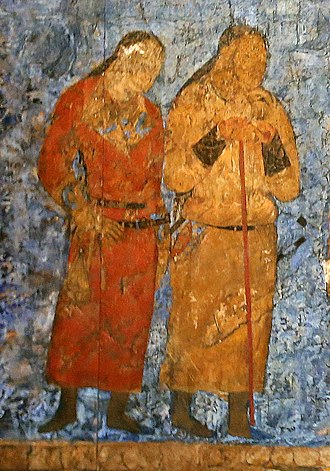
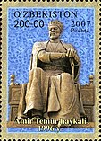
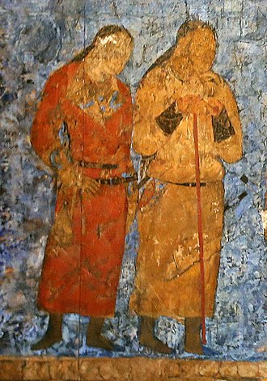
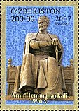
Toshkent — Oʻzbekistonning poytaxti va eng yirik shahri boʻlib, aholisi boʻyicha Markaziy Osiyodagi eng yirik qadimiy shaharlardan biri hisoblanadi. Oʻzbekistonning shimoli-sharqiy qismida, Qozogʻiston bilan chegaraga yaqin qismda joylashgan boʻlib, maydoni 334,8 km2 ni tashkil etadi. 2023-yilning 1-iyulidagi maʼlumotlarga koʻra, Toshkent aholisi 2 995 000 nafar kishini (Oʻzbekiston aholisining qariyb 8 foizi) tashkil etadi[2]. 2018-yilgi maʼlumotlarga koʻra, Toshkent shahrining YIMi $2,74 milliardni tashkil etadi va bu koʻrsatkich Oʻzbekistondagi eng katta YIMga ega shahar boʻlib kelmoqda[5][6]. Milodiy VIII asr oʻrtalarida islomiy taʼsir boshlangunga qadar, Toshkentga sugʻd va turkiy madaniyat taʼsir koʻrsatgan. 1219-yilda Chingizxon Toshkentni vayron qilganidan soʻng, shahar qayta tiklandi va Buyuk Ipak yoʻlidan foyda koʻrdi. XVI-XVII asrlarda Toshkent Shayboniylar va Ashtarxoniylar davlati tarkibida boʻlgan. XVIII–XIX asrlardan boshlab ushbu shahar Qoʻqon xonligi tomonidan zabt etilgunga qadar, mustaqil shahar-davlatga aylangan edi. 1865-yilda Toshkent Rossiya imperiyasi tarkibiga kirdi hamda Turkiston general-gubernatorligi markazi boʻldi. Sovet davrida bu shahar butun Sovet Ittifoqining majburiy deportatsiyasi tufayli katta oʻsish va demografik oʻzgarishlarga guvoh boʻlgan. 1966-yilda boʻlgan Toshkent zilzilasi tufayli Toshkentning katta qismi vayron boʻlgan edi, biroq u namunali Sovet shahri oʻlaroq qayta qurilgan. Oʻsha paytda Toshkent Sovet Ittifoqining Moskva, Leningrad va Kiyev shaharlaridan keyin turadigan toʻrtinchi yirik shahar boʻlgan[7]. Hozirgi kunda, mustaqil Oʻzbekiston poytaxti sifatida, Toshkentda koʻp millatli aholi saqlanib qolgan, ular orasida etnik oʻzbeklar va qozoqlar koʻpchilikni tashkil qiladi. 2009-yilda Toshkentning 2 200 yilligi nishonlandi. Bu munosabat bilan shahar infra va transport tizimi yangilandi[8][9]. Toshkent yirik shahar Etimologiyasi Toshkent 2200-yildan ortiq tarixga ega[10]. Bu davr ichida u mudofaa devori bilan oʻralgan qalʼadan jahondagi yirik shaharlardan biri, Oʻzbekiston Respublikasining poytaxtigacha boʻlgan yoʻlni bosib oʻtdi. Asrlar davomida shahar oʻzining tinch hayotidagi muhim voqealarni va suronli jangu jadallarni, yuksalish va inqiroz davrlarini boshidan kechirdi. Necha bor shahar vayron boʻlib, qayta qad koʻtardi. Toshkent oʻrnidan necha bor siljib, nomi xam bir necha marta oʻzgardi. Xoja Ahror Valiy, Shayx Umar Bogʻistoniy, Abu Bakr Shoshiy, Abu Sulaymon Banokatiy, Hofiz Koʻhakiy kabi buyuk allomalar shu hududda yashab, ijod etganlar. Shahar sifatida Toshkent haqidagi birinchi maʼlumotlar eramizdan avvalgi II asrdagi qadimgi-sharqiy manbalarda uchraydi; Xitoy manbalarida Yuni deb atalgan; Fors shohi Shоpur I eramizdan avvalgi 262-yildagi „Zardusht Kaʼbasi“ qaydnomalarida Toshkent vohasi Choch deb nomlangan. Choch — oltin eksporti, qimmatbaho toshlar, shirinliklar va aslzot otlarni boshqa shahar va mamlakatlarga olib oʻtishdagi yoʻlning chorrahasida joylashgan. „Tosh shahar“ maʼnosini anglatuvchi bugungi Toshkent — zamonaviy respublikaning poytaxti, oʻtmish maʼlumotlarini saqlovchi, Oʻzbekiston tarixi haqida koʻp maʼlumotlarni xotirlovchi, 2 milliondan ortiq aholisi boʻlgan bu shahar Markaziy Osiyoning eng katta industrial markazlaridan biridir.[manba kerak] Toshkentning uzoq oʻtmishi va u qad koʻtargan qadimgi Choch yoki Shosh viloyati haqidagi maʼlumotlar yozma manbalarda xilma-xil hamda uzuq-yuluq tarzda aks etgan. Zardushtiylarning qadimgi muqaddas kitobi Avesmona Sirdaryo havzasidagi mamlakat „Turon“, aholisi esa „tur“lar deb yuritilgan. Bu oʻlkada tur qavmlari urugʻ va qabila oqsoqollarining diniy va siyosiy qarorgohi — Qangʻxa (Qangʻa) shahri borligi tilga olinadi. Toshkent haqidagi dastlabki aniqroq maʼlumotlar miloddan avvalgi 2-asr — milodiy 5-asrlarga mansub Xitoy manbalarida uchraydi. Ularda Toshkent viloyati qadimda Loyuyeni, Yuni, soʻngra Chjeshe, Chjechji, Chjesi va Shi deb nomlangan. Bu atamalar (avvalgi ikkitasidan tashqari) „Choch“ soʻzining xitoycha talaffuz etilishi natijasida hosil boʻlib, hatto oxirgi „Shi“ toponimi xitoychada „tosh“ maʼnosini anglatgan. Miloddan avvalgi 3-asrda qadimgi Choch viloyatida tashkil topib, milodning 3-asrlarigacha hukm surgan „Qangʻ“ („Qangʻa“ yoki „Qangʻxa“) davlati Xitoy yozma manbalarida „Kangkiya“ („Kanizyuy“) nomlari bilan tilga olinadi. Qadimgi toxarlar tilida „qangʻ“ soʻzi ham „tosh“ maʼnosini anglatgan. Bu davlatning poytaxti — Bityan shahri boʻlib, u Iosha-Xasart daryosi (Sirdaryo) boʻyida joylashgan. Bityan shahri Davan (Fargʻona vodiysi)dan 1510 li (528 km) masofada boʻlgan. Bityan shahrining bizgacha saqlanib qolgan xarobalari mahalliy aholi oʻrtasida „Qanqatepa“ nomi bilan mashhur. U Toshkentdan 70 km janubda — Sirdaryoga yaqin yerda, Ohangaron daryosining qurib qolgan qadimgi oʻzani boʻyida joylashgan. Arxeologik maʼlumotlardan maʼlum boʻlishicha, Qanqatepa miloddan avvalgi 3-asrdayoq atrofi mudofaa devori bilan oʻralgan hamda arkli katta shahar boʻlib, maydoni 160 gektarga teng boʻlgan. Qadimgi Qangʻ davlatining fuqarolari ham „qangʻar“, „qanzar“, keyinchalik „qanhi“, „qangʻli“ yoki „qaʼni“ deb nomlangan. Ular (qanqalar) hindlarning qadimgi kitobi „Mahabharata“da saklar va toxarlar nomlari qatorida tilga olingan. Yozma manbalarda keltirilishicha, Toshkentning qadimgi nomi „Choch“ boʻlgan. Toshkent arablar tasarrufiga oʻtgach, arab alifbosida „ch“ harfining yoʻqligi bois arabiy asarlarda „Shosh“ deb yuritilgan. Ilk oʻrta asrlarda u „Choch“, „Shosh“, „Shoshkent“, „Madinat ash Shosh“, „Binkat“ va „Tarkan“ deb nomlangan. Toshkent haqidagi dastlabki maʼlumotlar mahalliy olimlar (Xorazmiy) va tarixchi geograflardan Tabariy, Istahriy asarlarida uchraydi. Istahriyning „Kitob al masolik val mamolik“ („Yoʻllar va mamlakatlar toʻgʻrisidagi kitob“)ida Shoshning bosh shahri Binkat deb koʻrsatiladi. 10-asrda yozilgan (muallifi nomaʼlum) „Hudud ul Olam“ („Olamning chegaralari“) kitobida „Choch bu katta viloyat, xalqi jangovar va sahiydir. U yerda kamon va oʻqyoy yasaladi. Binkat Chochning poytaxti hisoblanadi. Bu katta shahar, ayni vaqtda podshoning qarorgohidir“, deb taʼriflanadi. Firdavsiyning „Shohnoma“ asarida Choch oʻzining kamoni Shoshiy (oʻqyoylari) bilan mashhurligi haqida misralar bor. Shahar „Toshkent“ nomi bilan dastavval 11-asrning mashhur allomalari — Abu Rayhon Beruniy va Mahmud Qoshgʻariyning asarlarida tilga olinadi. Beruniy „Hindiston“ asarida Toshkent nomining kelib chiqishi toʻgʻrisida soʻz yuritib, „Tosh“ soʻzi asli turkcha boʻlib, Shosh koʻrinishini olgan. „Toshkand — toshli qishloq demakdir“, deb izohlaydi. Mahmud Qoshgʻariyning maʼlumoti boʻyicha, Toshkent 11-12-asrlarda „Tarkan“ deb ham yuritilgan. Zahiriddin Muhammad Bobur „Boburnoma“da Toshkent nomi ustida toʻxtalib, asarlarda Toshkent nomini Shosh, baʼzan Choch yozadilar" deb qayd etadi. Biroq 16-asr oxiri va 17-asr boshlarida Toshkent toponimi shuhrat topib, uning qadimgi Choch, Shosh va Binkat nomlari asta-sekin muomaladan tushib qoldi. 17-asrda yashagan tarixchi olim Mahmud ibn Vali shunday yozadi: „Shosh — Sayxun (Sirdaryo)ning u tomoniga joylashgan shahar va Turkiston (viloyat)ga qaraydi… Uni Choch ataydilar. Biroq hozirgi vaqtda u Toshkent nomi bilan mashhurdir“. Toshkent vohasida shahar madaniyatining shaqllanib, shaharning qad koʻtarishi shu oʻlkada yashagan qadimgi chorvador va dehqonlarning ijtimoiy-iqtisodiy va madaniy hayotidagi ulkan tarixiy jarayon boʻlib, bu jarayon shubhasiz oʻlkaning oʻzlashtirilib, obod etilishi, ayniqsa, unda chorvachilik va dehqonchilik xoʻjaliklarining tashkil topishi hamda hunarmandchilik, ichki va tashqi savdoning rivojlanish tarixi bilan uzviy bogʻliqdir. Bu jarayonning tarixiy manzarasi nihoyatda keng boʻlib, u yozma manbalarga nisbatan koʻproq arxeologik tadqiqotlar vositasi bilan tiklanmoqda. Shuning uchun ham Toshkent hududida olib borilgan arxeologik tadqiqotlarning natijalari qadimgi va oʻrta asrlarga oid manbalardagi maʼlumotlarni toʻldirib, ularga aniqlik kiritmoqda. 1867-yilda Toshkent Turkiston general-gubernatorligining markaziga aylandi. 1930-yildan 1991-yilgacha Toshkent Oʻzbekiston SSR poytaxti boʻlgan. Geografik joylashishi Toshkent vohasi Tyan-Shanning gʻarbiy yonbagʻirlaridan boshlanib Sirdaryo etaklariga tushadigan keng togʻoldi tekisligining bir qismida joylashgan. Sharqda u uchta — Ugom, Piskom va Chatqol togʻ tizmalari bilan oʻralgan boʻlib, bu tizmalarni shu nomlar bilan ataluvchi daryolar oqib oʻtuvchi daralar ajratib turadi. Bu daryolar qoʻshilib Chirchiq daryosini hosil kiladi. Chirchiq daryosi Chorvoq havzasining tor darasidan oʻtib, Gʻazalkentdan quyiroqqa tushganda kengligi baʼzi joylarda 20 kmdan oshadigan qadimiy tekislik boʻylab oqadi. Gʻarbda Chirchiq vodiysiga Qizilqumning qaynoq nafasi uriladi. Bu qayirning bir qismini Chirchiq daryosining hozirgi oʻzani egallagan. Janubiy qismida esa vodiyga kirib boruvchi Ohangaron daryosi yastangan. Ushbu tekislik shimolida joylashgan Aris daryosining vodiysi bilan birga bu tabiiy suv tarmoqlari Oʻrta Osiyo dehqonchilik vohalarining chekka mintaqasini tashkil etadi. Undan shimol tomonga qarab esa, yaylovlarga boy boʻlgan poyonsiz choʻl yastanib yotadi. Chirchiq daryosi havzasi Oʻrta Osiyoning qadimiy dehqonchilik va shahar madaniyatlari beshiklaridan biridir. Uning hududida Toshkentning markazi paydo boʻlgan. Joydan joyga koʻchib turgan bu markaz qadimda va oʻrta asrlarda Choch yoki Shosh, keyin esa Toshkent nomi bilan mashhur boʻlgan. Toshkent vohasida barcha tarixiy davrlarda suv moʻl-koʻl boʻlgan. Tarixan tarkib topgan kanallar tarmogʻi shaharni suv bilan taʼminlab turgan. Shu bois shahar xech qachon suv taqchilligini sezmagan. Buni oʻrta asrlardan to XIX asrgacha Toshkent toʻgʻrisida yozgan mualliflar xamisha taʼkidlab kelganlar. Bu yerdagi iqlim hozirgi odamlarning ajdodlari paydo boʻlgan, yaʼni bir necha oʻn ming yil muqaddam mavjud boʻlgan iqlimdan farq qilgan. Issiq quruq yoz bilan yillik yogʻin miqdorining asosiy qismi yogʻadigan qahraton qish almashinib turgan. Toshkentning togʻ yonbagʻirlari va tekisliklar oʻsimliklarga boy boʻlib, ibtidoiy odamlar ovlaydigan yovvoyi hayvonlar juda koʻp boʻlgan. Ularning aksariyati, jumladan, arxar, jayron, qulon va asl bugʻu kabi hayvonlar yaqin vaqtda yoʻqolib bitgan boʻlsa, junli karkidon, gʻor ayigʻi, arslon singari hayvonlar esa ancha ilgari yoʻqolib ketgan. Ular haqida ibtidoiy odamlar manzillarini qazib oʻrganish chogʻida topilgan qoldiqlar orqali maʼlumot olish mumkin. Bu yerlarda bir necha yuz ming yil avval ovchilik va termachilik bilan kun kechiruvchi ibtidoiy jamoalar gʻorlar va togʻ bagʻri bostirmalarini, yoki daryo sohillari va chashmalar yonidagi ochiq manzillarni egallab makon qilganlar. Bunday joylar hozirgi Toshkent shahri hududida ham mavjud boʻlgan. Jumladan, Boʻz suv yoqasidagi Qoʻshilish manzilgohidan birmuncha nozik ishlangan chaqmoqtoshlar, pichoqlar, bigizlar, ibtidoiy ustalar tomonidan bundan toʻqqiz ming yil avval yasalgan ov va mehnat qurollari topildi. Topilmalar orasidan yovvoyi buqa tur suaklarining uchrashi, mutaxassislar fikricha, ularning oʻsha vaqtlardayoq xonakilashtirilgan deb taxmin qilishga asos boʻldi. Hayvonlarni xonakilashtirish jarayoni Toshkent vohasi hududida ham kechgan. Miloddan oldingi uchinchi ming yillikdan boshlab, bu hudud dastlabki chorvadorlar tomonidan oʻzlashtira boshlashgan. Ular ish asboblari va jezdan qurollar tayyorlashni oʻrganganlar. Arxeologlar Toshkent shahri hududi va uning atrofida chorvadorning koʻpdan koʻp qabrlari hamda qoʻrgʻonli dahmalarini topganlar. Bu joylarda dafn etilganlarning yoniga jezdan yasalgan ish asboblari, qurollar, zeb-ziynatlar va qoʻlda yasalgan idishlar ham qoʻyilgan. Toshkent shahri hududida bunday qabristonlar hozirgi shampan vinosi zavodi yaqinidan, shuningdek, Qoraqamish arigʻi boʻyidan topilgan. Sirgʻalida esa dasht chorvadorlari va yilqichilarining manzili boʻlganligi aniqlangan. Bu yerdan ish qurollaridan tashqari burama halqali jez bilaguzuklar ham topilgan.[11] Iqlimi Toshkent Klimatogramma Y F M A M I I A S O N D 55 6−3 47 8−2 72 144 64 2210 32 2714 7.1 3318 3.5 3619 2 3417 4.5 2912 34 217 45 143 53 90 Oʻrtacha maksimal va minimal harorat (°C) Yogʻin miqdori (mm) Manba: WMO[12] [koʻrsat] Shaharning iqlimi kontinental, jazirama, quruq yoz kunlari hamda sovuq qish iqlimi bilan Shahar boshqa dunyo shaharlaridan ajralib turadi. Yillik oʻrtacha harorat 13,5 °C. Yozda esa harorat 35 °C gacha yetish bilan birga, qish oylarida buning aksini kuzatish mumkin. Havo harorati −25… −30 C° gacha boradi. Asosiy yogʻinlar noyabr hamda mart oylarida kuzatiladi. Toshkent iqlimi kontinental, yillik oʻrtacha temperaturada 13,3°, yanvarning oʻrtacha temperaturasi — 1,1°, eng past temperatura — 29°. Iyulning oʻrtacha temperaturasi 27,5°, eng yuqori temperatura 42°. Yiliga 360-390 mm yogʻin yogʻadi. Chirchiq daryosidan chikarilgan va butun shahar boʻylab oʻtadigan Boʻzsuv, Salor, Anhor, Qorasuv, Oqqoʻrgʻon, Boʻrijar, Oktepa, Qoraqamish va boshqa kanallar uning mikroiklimiga ijobiy taʼsir koʻrsatadi. Maʼmuriy boʻlinishi Shahar 12 ta tumandan iborat: BektemirChilonzorYashnobodMirobodMirzo UlugʻbekSergeliShayxontohurOlmazorUchtepaYakkasaroyYunusobodQ o z o gʻ i s t o nT o sh k e n t v i l o y a t i Uchtepa tumani Uchtepa tumani (sobiq Akmal Ikromov) tumani — Toshkentdagi maʼmuriy-hududiy birlik. 1977-yilda Chilonzor va Oktabr (hozirgi Shayxontohur) tumanlarini ixchamlashtirish maqsadida, ular hududida tashkil etilgan. Davlat arbobi Akmal Ikromov nomiga qoʻyilgan. 1977-yildan hozirgi chegarasida janubiy va janubiy sharqdan Zargarlik va Qatortol koʻchalari bilan boshlanib, gʻarb va shimoliy gʻarbda avtomobil halqa yoʻliga tutashadi. Maydoni 2797 ga, jumladan, koʻkalamzor yerlari — 1124 ga. Aholisi 228,3 ming kishi (2004). Koʻchalar soni 424 tani tashkil etib, shundan 8 tasi markaziy hisoblanadi. Asosiy avtomagistrallari: Lutfiy, Hamroqul Tursunqulov, Farhod, Sulton Segizboyev, Uygʻur, Nazarbek, Beshqayragʻoch, Toʻqimachi koʻchalari va Kichik halqa yoʻli. Tumanda 50 ta mahalla mavjud. Tuman hududida quyidagi sanoat korxonalari: zargarlik zavodi, bulkakonditer, sut kombinatlari, „Toshkentsut“ aksiyadorlik jamiyati, „Fonon“ zavodi, „OsiyoFud“ non mahsulotlari korxonasi, „Chevar“ tikuvchilik ishlab chiqarish. birlashmasi, „Gazavtomatika“ korxonasi, „Toshinterm“ Oʻzbekiston — Xitoy, „Shayxontohurtekstil“ qoʻshma korxonalari, Toshkent mexanizatsiya vositalari va jihozlari hamda stanoksozlik tajriba eksperimental mexanika zavodi, toʻqimachilik kombinatining 4-yigiruv toʻquv fabrikasi, 13 avtotransport va 5 qurilish tashkiloti mavjud. Tumanda Jahon tillari universiteti, Davlat soliq akademiyasi, yuridik kolleji, sanʼat internat maktabi, 3 ta akademik litsey, 5 kasb-hunar kolleji, 37 umumiy taʼlim maktabi, 53 bolalar bogʻchasi va yaslisi, 8 davolash yaslisi, 6 davolash profilaktika muassasasi, 22 poliklinika, 6 oilaviy poliklinika, 5 kasalxona va dispanser bor. Tuman aholisiga 512 oziq-ovqat va 550 sanoat mollari doʻkoni, 420 maishiy xizmat koʻrsatish shoxobchasi xizmat qiladi. 2 madaniyat uyi, 8 jamoat kutubxonasi, „Vatan“ kinoteatri, Akmal Ikromov nomidagi madaniyat va istirohat bogʻi bor. Turar joy fondining umumiy foydali maydoni 3486 ming m² (2004). Tumanda qurilish ishlari 1966-yildan boshlangan. Toshkentni rekonstruksiya qilish va rivojlantirish Bosh planiga muvofiq tumanda katta qurilish ishlari olib borilmoqda; 270, 272 ATS, stomatologiya poliklinikasi, maishiy xizmat koʻrsatish shoxobchalari, „Karvonsaroy bozori“, „Oʻrikzor“, „Guliston“ turar joy massivlari, bolalar bogʻchalari, maktablar qurilib ishga tushirildi. Farhod va Uygʻur koʻchalari kengaytirildi. Toshkentning balanddan koʻrinishi Bektemir tumani Bektemir tumani (1990-yilgacha Narimonov) — Toshkentdagi maʼmuriy-hududiy birlik. 1960—1981-yillar Bektemir shaharchasi: 1973-90 yillarda shahar, 1981-90 yillarda davlat va jamoat arbobi, yozuvchi Narimon Kerbalay Najaf oʻgli Narimonov (1870—1925) nomi bilan yuritilgan. 1990-yildan Toshkent tarkibidagi Bektemir tumani. Chirchiq daryosining chap sohilida. Bu daryo Bektemir tumanini boshqa tumanlardan ajratib turadi. Maydoni 1,83 ming ga, shu jumladan koʻkalamzorlashtirilgan hududi 0,012 ming ga. Aholisi 29,9 ming kishi (2004). Koʻchalar soni 45 ta. Asosiy yirik koʻchalari: Husayn Boyqaro, Ohangaron shohkoʻchasi, Bektemir. 12 ta mahalla mavjud. Tuman hududida „Oʻzsmatana“, „Agrokeramika“, „Mirmaks“ qoʻshma korxonalari, 17 sanoat korxonasi, shu jumladan, Toshkent motor, „Irgidromash“ va boshqalar, 9 transport muassasasi, „SredazVNIIgidromash“ ilmiy tadqiqot instituta, 5 umumiy taʼlim maktabi, musiqa maktabi, bolalar sport maktabi, 13 bolalar bogʻchasi, 16 tibbiyot davolash muassasasi, 4 poliklinika bor. Tumanda 522 yirik hamda kichik oʻrta biznes subyektlari faoliyat koʻrsatadi, shundan 44 tasi xorijiy investitsiyalar ishtirokida tuzilgan korxonalardir. Tuman aholisiga 11 oziq-ovqat, 4 sanoat mollari, 7 aralash mollar doʻkonlari, univermag, 30 ovqatlanish korxonasi, maishiy xizmat koʻrsatish shoxobchalari xizmat qiladi. 5 jamoat kutubxonasi, klub, madaniyat uyi, kinoteatr, 10 dan ziyod bolalar sport maydonchalari, tennis korti, 2 futbol maydoni bor. Tumanda Oʻrta Osiyoda yagona boʻlgan „Golfklub“ tashkil etilgan. Mirzo Ulugʻbek tumani Mirzo Ulugʻbek tumani (1935-yilgacha — Proletar tumani, 1992-yilgacha Kuybishev tumani; 1992-yil maydan Mirzo Ulugʻbek tumani) — Toshkentdagi maʼmuriy-hududiy birlik. 1929 i. tashkil qilingan. Hozirgi chegarasi 1978-yildan buyen oʻzgarmagan. Toshkentning shimoli-sharqiy qismida joylashgan. Toshkent markazi (Amir Temur xiyoboni)dan boshlanib, shimoli-sharqiy tomonga, Toshkent avtomobil halqa yoʻligacha boradi. Feruza mavzesi, Toshkent traktor zavodi, Ulugʻbek shaharchasi gʻam tuman hududiga kiradi. Maydoni 3,2 ming km², shu jumladan, koʻkalamzorlashtirilgan hudud — 0,579 ming ga. Aholisi 247,6 ming kishi (2004). Tuman hududida tarixiy va madaniy yodgorliklardan Kirxa (1892) saqlangan. Koʻchalar soni 532 ta. Asosiy magistrallari: Pushkin, Parkent, Temur Malik, Oqqoʻrgʻon koʻchalari, Buyuk ipak yoʻli shohkoʻchasi, Habib Abdullayev koʻchasi, Kichik halqa yoʻl. 49 ta mahalla mavjud. Tuman hududida 377 yirik korxona, shundan 28 sanoat korxonasi (shu jumladan, „Toshkentkabel“, traktor zavodlari, „Oʻzbekiston paxtachilik mashinasozligi“, lokboʻyoq zavodlari.), 3119 kichik va oʻrta biznes subyektlari bor. 27 ilmiy tadqiqot instituta, 10 loyiha instituti, 4 oliy oʻquv yurti (Madaniyat instituti, Jahon iktisodiyoti va diplomatiya universiteti va boshqalar) xamda umumqoʻshin qoʻmondonlik bilim yurti, harbiy akademiya, Ichki ishlar vazirligi akademiyasi, Toshkent vrachlar malakasini oshirish instituti, yozuvchilar, kompozitorlar, meʼmorlar ijodiy uyushmalari va teatr jamiyati, 33 umumiy taʼlim maktabi, 12 kasbxunar kolleji, 4 bolalar musiqa maktabi va sanʼat maktabi, 10 kasalxona va dispanser, „Ona va bola“ markazi, 11 oilaviy poliklinika, 2 tibbiysanitariya qismi ishlab turibdi. Toshkent koʻchalari Aholiga 176 oziq-ovqat doʻkoni, 244 sanoat mollari doʻkoni, 304 umumiy ovqatlanishkorxonalari, 517 maishiy xizmat koʻrsatish shoxobchasi xizmat qilmoqda. Muxtor Ashrafiy, Sergey Yesenin uymuzeylari, 28 jamoat kutubxonasi, 3 madaniyat uyi va saroyi, 3 madaniyat va istirohat bogʻi, hayvonot bogʻi va boshqa ishlab turibdi. Turar joy fondining umumiy foydalanish maydoni 2579 ming m2. Mirobod tumani Mirobod tumani (1992-yilgacha Lenin tumani) — Toshkentdagi maʼmuriy-hududiy birlik. 1929-yil Shayxontohur tumani bilan birgalikda tashkil etilgan. Hozirgi chegarasi 1977-yildan buyon oʻzgarmagan. Tuman Toshkentning janubiy qismida joylashgan. Shimolida Amir Temur xiyobonidan halqa yoʻligacha choʻzilgan. Maydoni 1,71 ming ga, shu jumladan koʻkalamzorlashtirilgan hududi −0,356 ming ga. Aholisi 123,8 ming kishi (2004). Koʻchalar soni 103 ta, shundan 8 tasi markaziy koʻcha hisoblanadi. Bularga Fitrat, Movarounnahr, Nukus, Kosmonavtlar koʻchasi, Taras Shevchenko, Fargʻona yoʻli va boshqa kiradi. 39 ta mahalla mavjud. Toshkent janubdan Bektemir, sharqdan Hamza, shimoldan Yunusobod, shimoli-gʻarbdan Yakkasaroy, janubi-gʻarbdan Sergeli tumanlari bilan chegaradosh. Tuman chegaralari Sharof Rashidov, Istiqlol, Oxunboboyev, Fargʻona yoʻli, Toshkent Katta halqa yoʻli, Beshkent, Fitrat, Turgʻunboyeva,. Oq yoʻl, Kichik Beshyogʻoch, Nukus, Kunayev koʻchalaridan oʻtadi. Toshkent metropolitenining „Oybek“, „Toshkent“ stansiyalari Mirobod tumani hududidadir. Tuman hududidan 4 ta kanal (Baratxoʻja, Qorasuv, Salor, Tolariq) oqib oʻtadi. Mirobod tumanida 3167 korxona va tashkilot faoliyat koʻrsatadi, shundan 349 tasi yirik, 818 tasi kichik va oʻrta biznes subyektlaridir. Toshkent shahri boʻyicha sanoat ishlab chiqarish. umumiy hajmidagi tumanning ulushi 10,5 % ni tashkil etadi. „Oʻzelektroapparat“, „Oʻzkimyofarm“, „Foton“, „Tong“ aksiyadorlik jamiyatlari, „Oʻztemiryoʻlmashtaʼmir“, „Uchqun“ kabi yirik sanoat korxonalari respublika ahamiyatiga ega. Mirobod tumanida asosiy doiradagi sanoat korxonalari soni 31 tani tashkil qilib, sanoatning 8 ta tarmogʻi boʻyicha faoliyat yuritadilar, bular yengil sanoat, oziqovqat, tibbiyot, matbaa sanoati, mashinasozlik va metallni qayta ishlash sohasi, yogʻochni qayta ishlash va qogʻoz ishlab chiqarish. sanoati, kimyo va neft kimyosi sanoati, qurilish ashyolari ishlab chiqarish. tarmoqdaridan iborat. Xalq isteʼmoli mollari ishlab chiqarish. hajmlarining eng yuqori oʻsish surʼatlari yengil, oziq-ovqat sanoat sohalarida kuzatiladi. Tuman eksport salohiyatining asosiy qismi „Oʻzbekiston havo yoʻllari“ va „Oʻzbekiston temir yoʻllari“ kompaniyalariga toʻgʻri kelib, Toshkent shahri boʻyicha eksportning 1/3 qismi tuman ulushiga toʻgʻri keladi. Tumandagi oʻzida chiqarilgan mahsulot eksporti bilan shugʻullanuvchi korxonalar „Oʻzelektroapparat“, „Foton“ aksiyadorlik jamiyatlari, „Kvark“, „Oʻztemiryoʻlmashtaʼmir“, „Toshelektroapparat“ korxonalari va boshqadir. Mirobod tumanida Mirobod bozori, aeroport, temir yoʻl vokzali, 17 umumiy taʼlim, 2 musiqa, 3 sport maktabi, 8 kasb hunar kolleji, 3 akademik litsey, 6 oliy oʻquv yurti (Toshkent Vestminster universiteti, Toshkent davlat aviatsiya, Toshkent farmatsevtika, Toshkent temir yoʻllari transporti muhandislari, Toshkent sharqshunoslik, Toshkent avtomobil va yoʻllar institutlari), 5 oʻrta maxsus bilim yurti faoliyat koʻrsatadi. Aholiga 778 savdo va 180 maishiy xizmat koʻrsatish shoxobchasi xizmat koʻrsatadi. Ulardan 108 oziq-ovqat, 55 sanoat mollari doʻkonlari, 227 ovqatlanish, 160 nooziq, 160 aralash, 58 nostatsionar savdo shoxobchalaridir. Toshkent shahar, viloyat hokimiyatlari, Alisher Navoiy nomidagi oʻzbek davlat akademik opera va balet katta teatri, Toshkent davlat rus akademik drama teatri, shuningdek, 4 madaniyat uyi, 2 madaniyat va istirohat bogʻi, Le Meridian otel Tashkent Palace, „Poytaxt“ mehmonxonalari, 7 kutubxona, Sanʼat, Temir yoʻl texnikasi, Tibbiyot muzeylari, Oʻzbekiston Badiiy akadimyasi Markaziy koʻrgazma zali mavjud. Tumanda 1 klinik shifoxona, bolalar kasalxonasi, shahar klinik ruhiy kasalliklar shifoxonasi, 2 tugʻruq majmuasi (4 va 5 sonli), 40 oilaviy poliklinika, Temir yoʻl, Tashqi ishlar vazirligi, Ichki ishlar vazirligi, Markaziy konsultativ tashhis poliklinikalari, stomatologiya poliklinikasi (7-sonli), shahar jismoniy tarbiya dispanseri, teritanosil kasalliklari dispanseri (1-sonli), Toshkent shahar yoʻlovchitransport tibbiyot sanitariya qismi, shahar bolalar ruhiy asab kasalliklari shifoxonasi va sanatoriy ishlab turibdi. Turar joy fondining umumiy maydoni 1432,1 ming m2. Sergeli tumani Sergeli tumani — shahardagi maʼmuriy-hududiy birlik. 1967-yilda tashkil etilgan. Toshkent shahrining janubiy gʻarbiy qismida. Toshkent hududi markaziy temir yoʻl trassasidan Chirchiq daryosi qayirlarigacha boʻlgan yerlarni, janubiy gʻarbda Choshtepa, Noʻgʻayqoʻrgʻon, Toshkent aeroporti atrofi, Qoʻyliq 5-7, Sergeli 1 — 8, Sputnik (Yoʻldosh), Doʻstlik, Quruvchilar mavzelari, Eski Sergeli, Sanoat zonasini qamrab oladi. Shimoliy gʻarbdan Toshkent viloyatining Zangiota, janubi-sharqsan Yangiyoʻl tumanlari bilan chegaradosh. Maydoni 5,19 ming ga, shu jumladan, koʻkalamzor yerlar 0,347 ming ga. Aholisi 154,4 ming kishi (2004). Mahallalar va uyjoy shirkatlari soni 33 ta boʻlib, 14 ta mavze va Yoʻldosh (Sputnik) shaharchasidagi (1966-yilda tashkil etilgan) 17 ta kichik mavzedan iborat. Koʻchalar soni 147 ta. Asosiy magistrallari: Toshkent avtomobil halqa yoʻlining janubiy qismi, Yangi Sergeli, Choshtepa, S. Tolipov, Qipchoq koʻchasi; Toshkent- Angren temir yoʻl ham tuman hududidan oʻtadi. Sergeli tumanida 1101 korxona boʻlib, shulardan 167 tasi yirik, 252 tasi kichik va boshqa korxonalardir. 330 ta sanoat korxonasida: mebel, ikkilamchi kora va rangli metall, porshen, gigroskopik paxta, asfalt, rezina va plastmassa buyumlari, yogʻochni qayta ishlash, charm va boshqa mahsulotlar ishlab chiqariladi. „Fayz“ xolding kompaniyasi, „Mebel“ korxonasi, aviatsiya taʼmirlash zavodi, „Novator“ (traktor porshenlari), „BarakatAlfa“ (gigroskopik paxta), „Grinvord“ (bolalar oziq-ovqati, meva sharbatlari), Toshkent temir yoʻl masofasi (konteynerlar joʻnatadi) korxonalari, Quyoshdan himoyalash buyumlari zavodi (plastmassa romlar va boshqalar), „Toshkent“ xalqaro aeroporti, Sergeli aviaotryadlari, 3 avtokombinat, „RAF“ avtokorxonasi (yoʻlovchilarga kichik avtobusda xizmat koʻrsatiladi), 4, 12avtobus saroylari mavjud. Shuningdek, 973 ta tadbirkor faoliyat koʻrsatadi. Tumanda 27 umumiy taʼlim maktabi, 5 ta maktabdan tashqari taʼlim markazi, 6 kasbhunar kolleji, 2 bolalar sport maktabi bor. Sogʻliqni sakdash sistemasida 491 oʻrinli 3 ta shahar kasalxonasi, 5 poliklinika, tugʻruqxona, teritanosil kasalliklari dispanseri, 33 dorixona Aholiga xizmat koʻrsatadi. St.da Oʻzbekiston Respublikasi tashki iqtisodiyot milliy banki, Sanoat qurilish banki, „Asakabank“, Uyjoy jamgʻarma banki, Xalq banki boʻlimlari mavjud. Shahardagi eng yirik savdo majmualaridan dexdon bozori, Sergeli, „Avtomakon“ bozori, Poytaxt Sergeli savdo markazi ishlab turibdi. 8 kutubxona, 3 madaniyat uyi, Usmon Nosir va Yangi Sergeli madaniyat va istirohat bogʻlari, musiqa maktabi bor. 106 sport inshooti, shu jumladan, stadion, 5 suzish havzasi, 43 sport zali, 51 sport maydonchasi, 4 sogʻlomlashtirish sport majmuasi mavjud. Tumanda qurilish ishlari, asosan, Toshkent zilzilasi (1966-yil)dan keyin boshlangan boʻlib, 1 va 2 qavatli yogʻoch uylar qurilgan. Sergeli turar joy dahasidagi 4 va 9 qavatli binolar 1980- 90 yillarda qad koʻtargan. St. turar joy fondining umumiy foydali maydoni 2718,5 ming m2 (2004). Tumanning asosiy yoʻnalishi — umumshahar markazi bilan bogʻlaydigan Yangi Sergeli koʻchasi. Tuman hududida Choshtepa va Noʻgʻayqoʻrgʻon arxeologik yodgorliklari bor. Olmazor tumani Olmazor (sobiq Sobir Rahimov) tumani — Toshkentdagi maʼmuriy-hududiy birlik. 1970-yilda tashkil kilingan. Sobir Rahimov nomi bilan atalgan. 1980-yildan hozirgi chegarasida. Toshkentning shimoli-gʻarbida joylashgan. Shimoli-gʻarbda Toshkent viloyati Zangiota tumani, shimoliy va shimoliy sharqda Toshkent tumani, sharqda Yunusobod tumani, janubiy va janubi-gʻarbda Shayxontohur tumani bilan chegaradosh. Maydoni 3,4 ming ga, shu jumladan koʻkalamzor yerlari 1,01 ming ga. Aholisi 283,6 ming kishi (2004). Koʻchalar soni 290 ta. Asosiy magistrallari: Beruniy, Niyozov, Kichik halqa yoʻl, Forobiy, Ziyomov, Chimboy, Us t a Shirin, Tansiqboyev, Hasanov, Oybek va Qorasaroy koʻchalari. 58 ta maxalla mavjud. Tuman hududida „Kolorfleks“, „Imperial“, „Osiyobatareya“ qoʻshma korxonalari, 30 sanoat korxonasi, shu jumladan, „Toshkentmarmar“ ishlab chiqarish. birlashmasi, „Mikond“, agregat, tajribamexanika, ekskavator taʼmirlash, „Kompressor“, „Oniks“ va chinni zavodlari, „Toshkent mebel“ ishlab chiqarish birlashmasi, „Tola“ (pillakashlik) korxonasi, bosh kiyimlar fabrikasi, 10 avtotransport va 10 kurili sh tashkiloti faoliyat koʻrsatadi. Tumanda 19 ilmiy tadqiqot instituti, 4 loyihalash tashkiloti („Oʻzgazloyiha“, „Oʻzqishloqxoʻjalik loyiha“, Xalq taʼlimi Vazirligining loyihakonstruktorlik byurosi, „Tash. ZNIIEP“), 3 oliy oʻkuv yurti (OʻzMU, ToshDTU, 2Toshkent tibbiyot instituti), 1 litsey, 1 kasbxunar kolleji, 37 umumiy taʼlim maktabi, 1 sanʼat, 1 ta musika maktabi, 60 ta maktabgacha tarbiya muassasasi bor. Tuman aholisiga 47 oilaviy poliklinika, 20 ta kasalxona, 8 madaniyat uyi va saroyi, 10 ta kutubxona, yosh tomoshabinlar teatri, tabiat muzeyi, 3 ta bozor, 5 ta stadion, 6 ta suzish havzasi, 57 sport zali, 10 ta tennis majmuasi xizmat koʻrsatadi. Tuman xududida „Oymomo“ madaniyat va istirohat bogʻi, bir necha kichik dam olish maskanlari, „Oʻzekspomarkaz“ xalqaro koʻrgazmalar majmui, „Olimpiya“ mexmonxonasi faoliyat koʻrsatadi. 110 oziqovkat va 51 sanoat mollari dukoni, 196 umumiy ovqatlanish korxonasi, 467 maishiy xizmat koʻrsatish shoxobchasi mavjud. Mustaqillik yillarida Sagʻbon, Qorasaroy, Forobiy koʻchalari kengayib, Moyqoʻrgʻon, Beshqoʻrgʻon mavzelari tashkil qilindi, uz. 1 km dan ziyod koʻprik bunyod etildi. Tuman xududida meʼmoriy yodgorliklardan Barokxon madrasasi, Qaffol Shoshiy maqbarasi bor. Beruniy, Furqat, Sobir RahimovvaL. B. Shastri, Berdaq, A. Kodiriyga haykal oʻrnatilgan. Shahar metropolitenining Beruniy metro styasi tuman xududida joylashgan. Chilonzor tumani Chilonzor tumani — Toshkentdagi maʼmuriy-hududiy birlik. 1963-yilda tashkil kilingan. Toponimistlarning fikricha tuman nomi chilon (jiyda) oʻsimligidan olingan. Toshkent zilzilasi (1966)dan keyin tumanda qurilish ishlari avj oldi. Toshkentning janubiy gʻarbiy qismida joylashgan. Shimolida Oqtepa kanali, sharqda Boʻrijar kanali, janubiy gʻarbda Oʻrta Osiyo temir yoʻl boʻylab Toshkent avtomobil halqa yoʻli va Bobur koʻchasigacha davom etgan. Maydoni 2994 ga, shu jumladan, koʻkalamzorlashtirilgan maydonlar 1,334 ming ga. Aholisi 217,1 ming kishi (2004). Koʻchalar soni 262 ta. 45 ta mahalla mavjud. Tumandagi baʼzi joylar Toshkent tarixi bilan bogʻliq. Chilonzor Oktepasi arxeologik yodgorligi (4-8-asrlar, 10- 11-asrlar), Abulqosim Shayx madrasasi, Xayrobod Eshon meʼmoriy majmuasi kabi meʼmoriy yodgorliklar shu tuman xududida joylashgan. Asosiy magistrallari — Xalqlar doʻstligi, Muqimiy, Choʻponota, Farhod, Gavhar, Chilonzor, Qatortol, AlXorazmiy koʻchalari. Hududida qoʻshma korxonalar („Sovplastital“ Oʻzbekiston — Italiya qoʻshma korxonasi, „Oʻzbegiminterneshnl“ qoʻshma korxonasi va boshqalar), 24 sanoat korxonasi (shu jumladan, 3 poyabzal ishlab chiqarish birlashmasi, koʻrlar jamiyatining ishlab chiqarish kombinati, „Rele va avtomatika“, „Algoritm“ korxonalari, elektr roʻzgʻor buyumlari zavodlari); 8 ilmiy tadqiqot instituta, 8 loyihalash instituti, konstruktorlik byurosi, Toshkent davlat iqtisodiyot universiteti, 38 umumiy taʼlim maktabi, 20 akademik litsey va kollej, 65 maktabgacha yoshdagi bolalar muassasasi; 9 kasalxona va 31 ta poliklinika bor. Aholiga 152 oziqovqat, 64 sanoat mollari doʻkonlari, 121 umumiy ovqatlanish korxonasi, 96 maishiy xizmat koʻrsatish shoxobchasi, Chilonzor buyum bozori xizmat kiladi. Mukimiy nomidagi musiqa va drama teatri, Davlat musiqali komediya (operetta) teatri, 2 kinoteatr, Navoiy nomidagi Milliy bogʻ, Gʻafur Gʻulom nomidagi madaniyat va istirohat bogʻi, Xalqlar doʻstligi saroyi faoliyat koʻrsatadi. 4 stadion, 101 sport zali, 166 sport maydonchalari, 6 suv havzasi, otchopar majmuasi bor. Turar joy fondining umumiy foydali maydoni 3178 ming m2. Shayxontohur tumani Shayxontohur tumani — Toshkentdagi maʼmuriy-hududiy birlik. 1929-yil Oktabr tumani nomi bilan tuzilgan. 1992-yilda Shayxontohur (Shayx Xovandi Tohur) tumani deb oʻzgartirilgan. 1978-yildan hozirgi chegarada. Shimoli-gʻarbda Zangiota tumani, shimolida Sobir Rahimov, shimoli-sharqda va sharqda Yunusobod, janubida Chilonzor va Yakkasaroy, gʻarbda Akmal Ikromov tumanlari bilan chegaradosh. Maydoni 2,73 ming ga, shu jumladan koʻkalamzorlashtirilgan maydonlar 0,832 ming ga. Aholisi 263,1 ming kishi (2004). Koʻchalar soni 622 ta. Asosiy magistrallari: Abdulla Qodiriy, Navoiy, Uzbekistan, Beruniy shohkoʻchalari, Furqat, Uygʻur, Samarkand darvoza koʻchalari. Xalqlar doʻstligi, Xadra, Chorsu, Otstepa maydonlari, 48 ta mahalla bor. Tumanda 3379 korxona va tashkilot mavjud. 9 sanoat korxonasi, shundan „Sharq guli“ badiiy, Toshkent tikuvchilik, „Orzu“ ishlab chiqarish birlashmalari, Toshkent matbaa kombinati, koʻnmoʻyna zavodi va boshqa ishlab turibdi. 3069 kichik va oʻrta biznes subyektlari qayd etilgan. Toshkentda 18 vazirlik, davlat qoʻmitalari va yirik idoralar, meʼmorlik va shaharsozlik bosh boshqarmasi, 11 loyihalash instituti, Oʻzbekiston Respublikasi Fanlar akademiyasining Navoiy nomidagi adabiyot muzeyi, Seysmologiya, Polimerlar kimyosi va fizikasi, Mikrobiologiya institutlari, Arxitektura va qurilish, kimyotexnologiya institutlari, 16 oʻrta maxsus oʻquv yurti, 42 umumiy taʼlim maktabi va boshqa muassasa, tashkilotlar bor. 10 ta oilaviy va stomatologiya shifoxonasi, 18 poliklinika va ambulatoriya, 8 kasalxona xizmat koʻrsatadi. Mustaqillik yillarida tuman hududida Oʻzbekiston davlat konservatoriyasi, Islom universiteta, Jahon iqtisodiyoti va diplomatiya universiteti qoshidagi akademik litsey qurildi, Oʻzbek milliy akademik drama teatri, „Chorsu“ savdo markazi binolari hamda Eski joʻva bozori kayta taʼmirlandi. Eng yirik guzarlari: „Gulzor“, „Ipakchi“, „Koʻkcha“, „Islomobod“. Tumanda „Yangi Kamolon“, „Huvaydo“, „Bogʻkoʻcha“, „Choʻponota“, „Ipakchi“ mahallalarida katta sport maydonlari mavjud. 562 oziq-ovqat, 346 sanoat mollari doʻkonlari, 174 maishiy xizmat koʻrsatish shoxobchalari, „Chorsu“ savdo markazi tuman aholisiga xizmat koʻrsatadi. Oʻzbek milliy akademik drama teatri, Abror Hidoyatov nomidagi Oʻzbek davlat drama teatri, Satira teatri, Rus yosh tomoshabinlar teatri, sirk, „Sanʼat saroyi“, „Oʻzkoʻrgazmasavdo“ saroyi, 9 madaniyat uyi va muassasasi, Kino uyi, 22 jamoat kutubxonasi, 4 kinoteatr va boshqa, „Paxtakor“ stadioni, „JAR“ sport majmui, „Sharq“, „Xadra“, „Yoshlar uyi“, „Sun Shine Tyron“ mehmonxonalari ishlab turibdi. Tuman hududida meʼmoriy yodgorliklaridan Koʻkaldosh madrasasi (16-asr), Yunusxon (15-asr), Shayx Zayniddinbobo (13-14alar) maqbaralari saqlangan. Geografiya va iqlim Toshkent va uning atrofi, sun'iy yoʻldosh tasviri Landsat 5, 2010-06-30 Geografiya Toshkent Oʻzbekistonning ikkinchi shahri boʻlgan Samarqand va Chimkentni chegaradan oʻtadigan yoʻlda, suvli tekislikda joylashgan. Toshkent Qozogʻiston bilan chegaradosh ikkita oʻtish joyidan atigi 13 km uzoqlikda joylashgan. Aholisi 1 milliondan ortiq boʻlgan eng yaqin geografik shaharlar: Chimkent (Qozogʻiston), Dushanbe (Tojikiston), Bishkek (Qirgʻiziston), Qashgʻar (Xitoy), Olmaota (Qozogʻiston), Kobul (Afgʻoniston) va Peshovar (Pokiston). Toshkent Chirchiq daryosi va uning bir qancha irmoqlarining quyilishida joylashgan va 15 m (49 ft) ga qadar chuqur allyuvial yotqiziqlarda qurilgan. . Shahar faol tektonik zonada joylashgan boʻlib, koʻplab silkinishlar va baʼzi zilzilalar sodir boʻladi. Toshkentda mahalliy vaqt UTC/GMT +5 soat. Iqlim Toshkentda Oʻrta yer dengizi iqlimi ( Köppen : Csa ) [13] nam kontinental iqlim ( Köppen : Dsa ) bilan chegaradosh. [13] Natijada, Toshkentning qishi sovuq va tez-tez qorli boʻlib, odatda Oʻrta yer dengizi iqlimi bilan bogʻliq boʻlmagan va yozi uzoq, issiq va quruq boʻladi. Koʻpincha yogʻingarchilik qishda sodir boʻladi, u koʻpincha qor shaklida tushadi. Shahar qish boshida va bahorda yogʻingarchilikning ikki choʻqqisini boshdan kechiradi. Bir oz gʻayrioddiy yogʻingarchilik shakli qisman uning 500 m (1,600 ft) balandligiga xos. Toshkentda yoz uzoq, odatda maydan sentyabrgacha davom etadi. Iyul va avgust oylarida Toshkent juda issiq boʻlishi mumkin. Shaharda yozda, ayniqsa, iyundan sentyabrgacha juda kam yogʻingarchilik kuzatiladi. [14] [15] Yunusobod tumani Asosiy maqola: Yunusobod tumani Yunusobod tumani — Toshkentdagi maʼmuriy-hududiy birligi boʻlib, 1936-yilda Kirov tumani nomi bilan tashkil qilingan. 1992-yil may oyidan Yunusobod tumani qayta nomlandi. Yunusobod nomining kelib chiqishi haqida turlicha fikrlar bor. Ayrim tadqiqotchilar (akademik A. Muhammadjonov) fikricha, joyning nomi juda qadimgi boʻlib, asli „Yunusrabot“ deb atalgan. Bu oʻrinda „rabot“ karvonsaroy maʼnosida qoʻllangan (qarang Rabot). Shimoliy tomondan shaharga kiruvchilar shu joyda qoʻnib oʻtishgan. Mahalliy ziyolilarning fikricha, joyning nomi sebzorlik tadbirkor Yunushoji Nodirhoji oʻgʻli (19-asr, Yunusobod Oktepasida bogʻrogʻlari boʻlgan) haqidagi rivoyatlar bilan bogʻliq. Tuman shaharning shimoliy qismida joylashgan. Amir Temur xiyobonidan boshlanib shimoliy tomonga, Toshkent katta halqa yoʻligacha davom etadi. Maydoni 4,14 ming ga, shu jumladan, koʻkalamzorlashtirilgan maydoni 1,073 ming ga. Aholisi 289,0 ming kishi (2004). Koʻchalar soni 441 ta. Asosiy magistral koʻchalari: Sharof Rashidov, Amir Temur, Ahmad Donish, Xurshid, Gʻani Mavlonov, Jahon Obidova, Gvardiya polkovnigi Xoʻjayev. 50 ta mahalla mavjud. Tuman hududida 3547 korxona va tashkilot boʻlib, kichik va oʻrta biznes subyektlarining sanoat ishlab chiqarishdagi ulushi 36,3 %, qurilishda 64,2 %, savdo va umumiy ovqatlanish sohasida 50,9 % ni tashkil etadi. Ular orasida 155 ta qoʻshma korxona faoliyati ishlab chiqarish va aholiga xizmat koʻrsatishga yoʻnaltirilgan. Sanoat korxonalaridan „Uzbekqishloqmash“, „Yulduz“ tikuvchilik, „Asbobsoz“, „Raupxon“ korxonalari; vagon taʼmirlash zavodlari, kitobjurnal fabrikasi, „Oʻzbekenergotaʼmir“ ishlab chiqarish birlashmalari va boshqa ishlab turibdi. Chet el investitsiyalari ishtirokida faoliyat koʻrsatayotgan „Dilek interprays“, „Aylin Gida Sanayi“, „Aziya Silk“ shoʻʼba korxonalari, „Rastr“, „Supertekstil“ korxonalari, shuningdek, mebel ishlab chiqaruvchi 3 ta kushma korxona bor. 20 ga yaqin ilmiy tadqiqot instituta, loyihalash institutlari, 6 litsey, 6 kasbhunar kolleji, 4 oliy oʻquv yurti, 42 umumiy taʼlim maktabi, 3 musiqa maktabi, 70 maktabgacha tarbiya muassasasi, 8 ta kasalxona, 40 poliklinika va ambulatoriya muassasalari, 1 sanatoriy bor. 2 kinoteatr, „Turkiston“ kinokonsert zali, Temuriylar tarixi davlat muzeyi, Oʻzbekiston xalklari tarixi davlat muzeyi, Oʻzbekiston tasviriy sanʼat galereyasi, hayvonot bogʻi, „Interkontinental“, „Dedeman Silk Road“, „Sheraton“ mehmonxonalari, Shahidlar xotirasi majmuasi, 5 madaniyat uyi, 12 kutubxona, 186 sport inshootlari, Olay, Yunusobod bozorlari, 1785 ta savdo, 356 ta umumiy ov~ qatlanish va 467 ta maishiy xizmat koʻrsatish shoxobchalari ishlab turipti. Toshkentning asosiy televizion minorasi tuman hududida joylashgan. Turar joy fondining umumiy foydali maydoni 5223 ming m2. Toshkent hududida T. metropoliteni Yunusobod yoʻnalishining Yunus Rajabiy, Abdulla Qodiriy, Minor, Habib Abdullayev styalaridan elektr poyezdlar qatnaydi. 2005-yilgacha yana 3 stya (F. Xoʻjayev, „Yunusobod“, „Turkiston“)ni ishga tushirish yuzasidan ishlar olib borilmoqda. Yakkasaroy tumani Asosiy maqola: Yakkasaroy tumani Yakkasaroy tumani — Toshkentdagi maʼmuriy-hududiy birlik. 1936-yil Frunze tumani nomi bilan tashkil qilingan. 1992-yil maydan Toshkent deb ataldi. Tuman Toshkentning janubiy va qisman markaziy kismida joylashgan. Shimolida Oʻzbekiston koʻchasidan janubida Urta Osiyo temir yoʻl liniyasigacha choʻzilgan. Maydoni 1,39 ming ga, shu jumladan, koʻkalamzorlashtirilgan hududi 0,144 ming ga. Aholisi 112,3 ming kishi (2004). Koʻchalar soni 156. Asosiy magistrallari: Bobur, Usmon Nosir, Nukus, Uzbekistan, Shota Rustaveli, Afrosiyob koʻchalari. 17 ta mahalla mavjud. Tuman hududida 24 sanoat korxonasi va 32 qurilish tashkiloti joylashgan. 3 avtotransport korxonasi, yuk ortishtushirish temir yoʻl styasi, avtovokzal ishlab turibdi. Yirik sanoat korxonalaridan „Toshtoʻqimachi“ kombinati, „Toshkent yogʻochni qayta ishlash zavodi“, Temirbeton mahsulotlari zavodi, „Agama“ korxonasi, poyabzal, Sanoatindustriya birlashmalari va boshqa faoliyat koʻrsatadi. 26 ilmiy tadqiqot instituta, loyihalash tashkilotlari va konstruktorlik byurosi, 4 oliy oʻkuv yurti (Nizomiy nomidagi Pedagogika universiteti, Toʻqimachilik va yengil sanoat instituti, Mannon Uygʻur nomidagi Sanʼat instituti, Toshkent Xoreografiya oliy maktabi), 6 ta kasbhunar kolleji va litseylar, 19 umumiy taʼlim, 2 sport, 2 musiqa maktablari, 8 kutubxona mavjud. Tuman aholisi salomatligi muhofazasini 14 davolash muassasasi va 5 ta oilaviy shifoxona taʼminlaydi. „Toʻqimachi“ stadioni, 4 suzish havzasi, 29 sport zali, 89 korxona va muassasalarga qarashli sport maydonchalari, 2 megʻmonxona, 1 kinoteatr, 9 kutubxona, Bobur nomidagi madaniyat va istirohat bogi, Respublika Baynalminal madaniyat markazi, qoʻgʻirchoq teatri, Amaliy sanʼat muzeyi, Oʻzbekiston Badiiy Akademiyasining koʻrgazmalar zali mavjud. Aholiga 97 oziq-ovqat, 60 sanoat mollari doʻkoni, 188 umumiy ovqatlanish korxonasi, 129 maishiy xizmat koʻrsatish shoxobchasi, „Askiya“ dehqon bozori xizmat koʻrsatadi. Tumandagi koʻp qavatli binolar asosan, „Boshliq“, „Qushbegi“ turar joy massivlari va yirik magisgrallar boʻylab joylashgan. Yashnobod tumani Asosiy maqola: Yashnobod tumani Yashnobod tumani — Toshkentdagi maʼmuriy hududiy birligidir. 1968-yilda tashkil qilingan tumanga Hamza nomi qoʻyilgan. Gʻarbda Amir Temur xiyoboni va Yoʻldosh Oxunboboyev koʻchasidan boshlab sharqda Ohangaron yoʻligacha davom etadi. Xududi 3,46 ming ga shu jumladan, koʻkalamzorlar — 172 ga. Aholisi 208,7 ming kishi (2004). Koʻchalar soni 220 ta. Asosiy magistrallari: Jarqoʻrgʻon, Lisunov, Hamza, Yoʻldosh Oxunboboyev koʻchalari va Fargona, Ohangaron yoʻllari. Toshkentda 50 ta mahalla mavjud. Tuman hududida 2152 ta tashkilot, shu jumladan, 34 sanoat korxonasi (Toshkent aviatsiya ishlab chikarish birlashmasi oʻrnida Texnopark, „Toshqishloqmash“, „Toshmargyogʻ“, „Toshkentvino“, „Oʻzbek qogʻozi“, „Oʻzbekiston shampani“, „Toshdonmahsulot“, „Toshkentguruch“ aksiyadorlik jamiyatlari korxonalari va boshqalar); 168 kurilish tashkiloti; temir yoʻl transporti korxonalari — teplovoz va vagon depolari, Toshkent yuk ortishtushirish temir yoʻl stansiyasi bor. Shuningdek, tumanda 37 transport va aloqa korxonalari joylashgan. Keyingi yillarda tashkil qilingan „Farm Glase“ Uzbekistan-Britaniya, „Tufin“ Oʻzbekiston-Isroil, „LokKolorSintez“ Oʻzbekiston — Shveysariya, „XobasTapo“ Oʻzbekiston-Germaniya-Shveysariya, „NWA“ — Oʻzbekiston-Rossiya qoʻshma korxonalarida import oʻrnini bosuvchi va eksportbop mahsulotlar ishlab chiqarish yoʻlga qoʻyilgan. Yashnobod tuminida Oʻzbekiston Respublikasi Fanlar Akademiyasi Prezidiumi, 3 ilmiy tadqiqot instituta, Oʻzbekiston milliy axborot agentligi, 25 umumiy taʼlim maktabi, 50 ta maktabgacha tarbiya muassasasi, 5 musiqa maktabi, 4 kasb-hunar kolleji, Toshkent birinchi tibbiyot instituti va biznes maktabi bor. 9 ta kasalxona, 30 poliklinika va ambulatoriya muassasasi, 1 qon kuyish stansiyasi faoliyat koʻrsatadi. Aholiga 359 oziq-ovqat, 595 sanoat mollari doʻkonlari, 197 umumiy ovqatlanish, 324 maishiy xizmat koʻrsatish shoxobchalari xizmat kiladi. 16 jamoat kutubxonasi, 4 kinoteatr, 2 madaniyat saroyi, 4 madaniyat uyi, „BaxtRohat“ dam olish zonasi bor. Turar joy fondining umumiy maydoni 2,5 mln.m2 ga yaqin. Yangi hayot tumani Shahar hokimligi Oʻzbekiston mustaqillikka erishgach, Toshkentda Oʻzbekistonning boshqa viloyat va shaharlarida boʻlgani kabi boshqaruvning tarixiy-milliy shakli — hokimlik oʻrnatildi. 1991-yil 18-noyabrda Oʻzbekiston Respublikasi Oliy Kengashining „Oʻzbekiston Respublikasi poytaxti — Toshkent shahri maqomi va davlat hokimiyati organlari toʻgʻrisida“gi qaroriga muvofiq Toshkentda hokim lavozimi joriy etildi. Toshkent shahar hokimi Prezident tomonidan tayinlanadi va lavozimidan ozod qilinadi hamda Xalq deputatlari shahar kengashi tomonidan tasdiqlanadi. Shahardagi tumanlarning hokimlari shahar hokimi tomonidan tayinlanadi va lavozimidan ozod qilinadi hamda xalq deputatlari shahar kengashi tomonidan tasdiqlanadi. Shahar hokimlari: Adhambek Fozilbekov (1991—1994) Kozim Toʻlaganov (1994—2001) Rustam Shoabdurahmonov (2001—2005) Abduqahhor Toʻxtayev (2005—2011) Rahmonbek Usmonov (2011—2018) Jahongir Ortiqxoʻjayev (2018—2023) Baxtiyor Rahmonov (2023) Shavkat Umrzoqov (2023—) Aholisi Asosiy maqola: Toshkent aholisi Yil Soni 2014 2 352 900 2017 2 424 100 Yil Soni 2018 2 497 900 2019 2 522 800 Yil Soni 2023 2 956 384 Toshkentning bozor koʻchalaridagi non sotuvchi. 1983-yilda Toshkent shahri aholisi maydoni 256 km2 boʻlgan munitsipalitetda yashovchi 1 902 000 kishini tashkil etar edi. 1991-yilga kelib, Sovet Ittifoqi tarqatilib yuborilgandan soʻng, Toshkentning doimiy aholisi soni 2 136 600 kishini tashkil etdi. Shu yili aholi soni boʻyicha ushbu shahar Sobiq Ittifoq davlatlari orasida toʻrtinchi oʻrinda turgan (Moskva, Kiyev va Sankt-Peterburg shaharlaridan keyin). Hozirga kelib, Toshkent MDH va Boltiqboʻyi mamlakatlarida aholi soni boʻyicha toʻrtinchi oʻrinni egallab turmoqda. 2021-yilga koʻra, Toshkent shahri aholisi 2.7 millionga yaqin kishini tashkil etmoqda.[2][16][17] Aholining oʻsishi Yil Aholi ±% y.oʻ.s. 1897 155 673 — 1950 755 000 +3.02% 1959 911 930 +2.12% 1960 964 000 +5.71% 1970 1 384 509 +3.69% 1979 1 780 002 +2.83% 1980 1 818 000 +2.13% 1983 1 902 000 +1.52% 1989 2 072 459 +1.44% 1990 2 100 000 +1.33% 1991 2 130 200 +1.44% 1995 2 097 400 −0.39% 2000 2 142 300 +0.42% 2001 2 137 900 −0.21% 2002 2 136 600 −0.06% 2003 2 139 200 +0.12% 2004 2 135 400 −0.18% Yil Aholi ±% y.oʻ.s. 2005 2 135 700 +0.01% 2006 2 140 600 +0.23% 2007 2 157 100 +0.77% 2008 2 180 000 +1.06% 2009 2 206 300 +1.21% 2010 2 234 300 +1.27% 2011 2 296 500 +2.78% 2012 2 309 300 +0.56% 2013 2 340 900 +1.37% 2014 2 352 900 +0.51% 2015 2 371 300 +0.78% 2016 2 393 200 +0.92% 2017 2 424 100 +1.29% 2018 2 464 900 +1.68% 2019 2 509 900 +1.83% 2020 2 571 700 +2.46% 2021 2 694 400 +4.77% Manba: Oʻzbekiston Davlat Statistika Qoʻmitasi,[2][18] BMT[19] va Demoscope.ru[20][21][22][23][24] Tarixiy va arxitektura yodgorliklari Toshkent teleminorasidan olingan panorama. Madrasalar Mustaqillik yillarida Toshkentdagi islom madaniyati obidalarining aksariyati, jumladan, Koʻkaldosh, Abulqosim, ayniqsa, Hazrati Imom mavzeida joylashgan Moʻyi Muborak, Baroqxon madrasalari qayta taʼmirlanib, ilgarigiday mahobatli manzara kashf etdi. Ular bir paytlar minglab talabalarni oʻz bagʻriga olgan gavjum goʻshalar boʻlib, rus istilosi davrida bir muddat kimsasiz, xarobaga ham aylantirildi. XIX asrda Toshkentda taʼlim-tarbiya sohasi Toshkent-Buxoro, Toshkent-Qoʻqon madaniy-maʼnaviy aloqalar tizimida rivojlanib borgan. Bu jarayonda Toshkent madrasalari va mudarrislarining oʻrni katta boʻlgani tabiiy. Turkiston general-gubernatorligi Maorif boshqarmasi maʼlumotlariga koʻra, 1890—1893-yillarda gubernatorlikda jami 214ta madrasa boʻlib, shundan 21tasi Toshkentda joylashgan edi. Chorizm istilosining dastlabki yillarida madrasalarda taʼlim va oʻqitish ishlari anʼanaviy qoidalar asosida olib borilgan boʻlsa, keyinchalik ularning faoliyatini nazorat qilish va oʻquv ishlarini tartibga solishni oʻlka maorif boshqarmasi oʻz qoʻliga olgan. Bu paytda Toshkent madrasalaridan Abulqosimxon madrasasida 120, Xoja Ahror madrasasida 80, Beklarbegi madrasasida 150, Koʻkaldosh madrasasida 80, Sharifboy madrasasida 20, Shukurxon madrasasida 20 nafar talaba oʻqigan. Lekin oldingidek, aksariyat talabalar Toshkent madrasalari bilan qanoatlanmay, Buxoro, Samarqand, Qoʻqon madrasalarida bilimlarini oshirib qaytganlar. Toshkent madrasalari toʻgʻrisidagi arxiv manbalari, oʻsha davr matbuoti yoki ana shu yillarda Toshkentda boʻlgan rus oʻlkashunoslarining maʼlumotlari, ayniqsa, madrasalar soni borasida har xil xabarlar beradi. Xususan, 1865—1868-yillari Toshkentda boʻlgan A.Xoroshxin „Ocherki Tashkenta“ nomli kundaligidagi maʼlumotda ayrim madrasalarning nomini, vaqf mulklarini keltirib oʻtgan boʻlsa, N. Maev 1876-yili Toshkentda jami 11 ta madrasa mavjudligini taʼkidlaydi. „Turkistanskie vedomosti“ gazetasining 1876-yilgi 48-sonida bosilgan rasmiy maʼlumotda esa 13 ta madrasa tilga olingan. Biroq XIX asrda Toshkentda yashab ijod etgan muarrix Muhammad Solihxoja esa oʻzining „Tarixi jadidayi Toshkand“ asarida Toshkentdagi 20 ta madrasa toʻgʻrisida birmuncha batafsil maʼlumot berib oʻtgan. Ular orasida eng qadimiysi — Xoja Ahror jome masjidining shimolida pishiq gʻisht va yoʻnilgan toshdan qurilgan Xoja Ahror madrasasi boʻlib, u yigirmata hujra, bitta darsxona va masjidni oʻz ichiga olgan. U erda Toshkent va boshqa hududlardan tahsil talabida kelgan saksondan ziyod talabalar oʻqishgan. Shayxontohur dahasidagi madrasalardan yana biri Koʻkaldoshdir. Muhammad Solihxojaning yozishicha, bu madrasa Baroqxonning oʻgʻli Darvishxon tomonidan bunyod etilgan. 1735-yil Ufada boʻlgan toshkentlik savdogar N. Alimov maʼlumotlariga koʻra, XVIII asr oxiriga kelib, madrasa karvonsaroyga aylantirilgan. Toshkent tarixi tadqiqotchilaridan A. Dobrosmislov Koʻkaldosh madrasasi dastlab uch qavatli, oʻttiz sakkizta hujrali boʻlganini taʼkidlaydi. Keyinchalik madrasaning faqat bir qavati saqlanib qolgan. Muhammad Solihxoja Koʻkaldosh madrasasi 1868 va 1886-yillarda Toshkentda yuz bergan zilzilalardan qattiq zarar koʻrganini yozadi. Shuningdek, XIX asrning 30-yillarida Muhammad Alixon buyrugʻi bilan bunyod etilgan Azimota madrasasi ham Chorsu yaqinida boʻlgan. Lekin bu madrasa haqida maʼlumotlar juda kam. „Tarixi jadidayi Toshkand“ asarida batafsil tavsiflangan va eng koʻp tilga olingan madrasa Eshonquli dodxoh madrasasidir. Bu madrasa 1256 (1838) yili Toshkent hokimi Lashkar Beklarkegining oʻgʻli Eshonquli dodxoh tomonidan qurdirilgan boʻlib, Yunusxon madrasasining janubi-sharqida joylashgan va katta koʻchaga tutash boʻlgan. U erda 1920-yil Vaqf shoʻʼbasi qaramogʻidagi madrasada Murodxoʻja Solihxoʻja oʻgʻli isloh qilingan diniy va dunyoviy darslar tashkil etadi. Xarobaga aylangan Eshonquli dodxoh madrasasining oxirgi qoldiqlari 1964-yilda surib, tekislab tashlangan. Muhammad Solihxoja 1274 (1857) yili Toshkent hokimi Ahmad qushbegi (1856—1857) tomonidan Qaffol Shoshiy maqbarasi janubida Moʻyi Muborak madrasasi qurilganini yozadi. Tarixchi oʻsha davrlarda madrasa oʻrnini aholi Xoja Ahror tugʻilgan joy deb tushungani bois „Xoja Ahror maydoni“ deb ataganini taʼkidlaydi. Asarda keltirilishicha, madrasaning alohida bir gumbazi boʻlib, unda Paygʻambarimiz (alayhissalom)ning soch tolalari — moʻyi muborak saqlangan. Yuqorida tilga olinganlardan Koʻkaldosh madrasasi bugungi kunda ham oʻz faoliyatini davom ettirib, koʻplab talabalar taʼlim oladigan dargoh sifatida ishlab turibdi. Qolganlari esa, yurtimizning yorqin maʼnaviy qiyofasini oʻzida aks ettiruvchi muborak tarixiy obidalar qatorida munosib oʻrin egallab kelmoqda. Koʻkaldosh madrasasi Kaffol-Shoshi maqbarasi Koʻkаldоsh mаdrаsаsi (XIV аsr) Kаffоl-Shоshi mаqbаrаsi (XV аsr) Hаzrаti Imоm аrхitеkturа аnsаmbli (XVI аsr) Аbul Qоsim mаdrаsаsi (XIX аsr) Bаrаkхоn mаdrаsаsi (XVI аsr) Jumа mаsjidi (XIX аsr) Аmir Tеmur muzеyi Аmir Tеmur xiyoboni Mustаqillik mаydоni Istiqlol mаydоni Jаsоrаt mоnumеnti Hаsti Imоm mаydоni Tillа Shаyх mаsjidi Xаdrа mаydоni Toʻle bi maqbarasi Soʻfi Оtа mаqbаrаsi Toshkent teleminorasi Tarixi Toshkent 1917 Asosiy maqola: Toshkent tarixi Toshkent shahrining rivojlanishi 1860-yil 1860-yil 1913-yil 1913-yil 1940-yil 1940-yil 1965-yil 1965-yil 1967-yil. Toshkent zilzilasi (1966) 1967-yil. Toshkent zilzilasi (1966) 1981-yil 1981-yil 2000-yil 2000-yil Sovet davridagi Toshkent Toshkent shahridagi bino Toshkent mahallalari haqida aniqroq yozma maʼlumotlar dahalardagi qozilik daftarlarida, 19-asrning 2yarmida esa ruscha nashrlarda qayd etilgan. Shunga koʻra, 1865-yil Toshkentda 140 ta mahalla boʻlgan, aholisi 76 ming kishi. Turkiston oʻlkasi statistikasi yilnomasida (1876) Toshkentda 149 ta mahalla (Shayxontohur dahasida 48 ta, Sebzor dahasida 38 ta, Koʻkcha dahasida 31 ta, Beshyogʻoch dahasida 32 ta) boʻlganligi taʼkidlangan. N. G. Mallitskiy 1927-yil nashr etgan roʻyxatda esa Toshkentda 280 ta mahalla va shahar aholisiga tegishli 171 ta mavze nomi bor (qarang plansxema). Mavzelar, odatda, shaharliklarning shahar tashqarisida joylashgan ekinzorlari va bogʻlaridan iborat boʻlgan; shoʻrolar davrida mavzelar davlat tomonidan musodara qilinib jamoa xoʻjaligiga aylantirilgan. Poytaxtga aylanishi 1925-yil 17-fevralda Buxoro shahrida boʻlib oʻtgan Butunoʻzbek Sovetlarining birinchi taʼsis qurultoyida „Oʻzbekiston Sovet Sotsialistik Respublikasining tashkil topishi toʻgʻrisida Deklaratsiya“ qabul qilingan. Respublikaning birinchi poytaxti etib Buxoro shahri tanlangan[25]. 2012-yilda „Oʻzbekiston“ nashriyoti tomonidan chop etilgan „Oʻzbekiston tarixining muhim sanalari“ nomli kitobdagi maʼlumotlarga koʻra, 1925-yil aprel oyida mamlakat poytaxti Buxoro shahridan Samarqand shahriga koʻchirilgan. 1930-yilda esa poytaxt Toshkent shahriga koʻchiriladi va 1991-yil 31-avgustga qadar OʻzSSRning, undan soʻng esa Oʻzbekiston Respublikasining bosh shahri boʻlib kelmoqda[25]. Oʻzbekiston poytaxtini Samarqanddan Toshkentga koʻchirish toʻgʻrisidagi telegram’dagi „Old Tashkent“ kanalida[26] eʼlon qilingan tarixiy hujjatda yozilishicha, „Oʻzbekiston Ijtimoiy Shoʻro Jumhuriyati Shoʻrolar Markaziy ijroiya qoʻmitasi“ (oʻsha vaqtdagi oliy hokimiyat organi) tomonidan Toshkentning mamlakatdagi eng yirik iqtisodiy va sanoat markazi sifatidagi ahamiyatini, Oʻzbekistonning „bosh paxta rayoni — Fargʻona vodiysi“ bilan aloqa qilish va unga rahbarlik qilish Toshkentdan qulayroq boʻlishini, Toshkentda boʻlgan Oʻrta Osiyo idoralari bilan Oʻzbekiston hukumat idoralari bir shaharda turib „yaqin ittifoqda boʻlishini nazarda tutib“ qabul qilingan. Ushbu hujjat mamlakat Konstitutsiyasiga oʻzgartirish kirita oladigan oʻsha vaqtdagi oliy hokimiyat organlaridan biri tomonidan oʻzbek tilida va Oʻzbekistonda 1929—1940-yillarda amalda boʻlgan lotin alifbosiga asoslangan oʻzbek yozuvi (yanalif)da yozilgan. Hujjatga OʻzSSR Shoʻro Markaziy Ijroqoʻmi raisi boʻlgan Yoʻldosh Oxunboboyev imzo chekkan[25]. Toshkentning Maʼdaniy maʼishiy inshoatlari Koʻkaldosh Madrasasi ichki qismi Romanovlar qarargohi Alisher Navoiy nom. Opera va Balet Teatri Amaliy sanʼat muzeyi Taras Shevchenka haykali Toshkentning eng gavjum qismi, uning bozorlari hisoblangan. Eski joʻva, Chorsu va Koʻkaldosh madrasasi oraligʻida Registon, Chorsu va Kappon (gʻalla) bozorlari joylashgan. Registon bozorida xonliklarda ishlab chiqarilgan mollar bilan bir qatorda Hindiston, Afgʻoniston, Eron, Koshgʻar, Xitoy va Rossiyadan keltirilgan mollar ham sotilgan. Toshkentdan savdo karvonlari dasht orqali Sibir shaharlari, Koshgʻar, Xitoy, Hindiston, Afgʻoniston va Eron tomon qatnagan. Toshkent davlati tashqi va ichki savdoni rivojlantirish maqsadida old tomonida „Muhammad Yunusxoʻja Umariy“ deb yozilgan, sirtiga lochin yoki yoʻlbars tasvirlari tushirilgan oʻz tangalarini zarb etib, mustaqil ichki va tashki siyosat yuritgan. Yunusxoʻja, ayniqsa, Rossiya bilan muttasil savdo aloqalari olib borish va uni kengaytirishga intilgan. 1792-yil Yunusxoʻja rus podshosiga xat yuborib unga Katta juz biylari bilan ittifoq tuzganligini, Toshkentdan Rossiyaga eltadigan karvon yoʻllaridagi talonchiliklar toʻxtatilganligini xabar qiladi. 1802-yilning kuzida Yunusxoʻja vaziri aʼzam Mullajon Oxund Mahzum bilan Ashurali Bahodir mingboshini SanktPeterburgga elchi kilib yuboradi. Elchilikdan maqsad, faqat savdo aloqalarini kengaytirishgina emas, balki Rossiyadan qurolyarogʻ, choʻyan va mis rudalarini sotib olib, oʻz harbiy kuchini mustahkamlash hamda Rossiyadan tup kuyuvchi usta va konchilarni Toshkentga taklif etib, bu yerda toʻpchilik hunarmandchiligini rivojlantirish va konlarni ishga solish ham koʻzda tutilgan edi. 1803-yil mart oyida Toshkent elchilari imperator Aleksandr I va davlat kansleri hamda tashqi ishlar vaziri graf A. Voronsov qabulida boʻldilar. Rossiyada Oktabr toʻntarishi haqidagi xabar Toshkentga yetib kelgach, bolsheviklar va soʻl eserlar hokimiyatni zoʻravonlik yoʻli bilan egallash uchun kurashdilar. 1917-yil 28-oktabrda Bosh temir yoʻl ustaxonasining mahalliy millatga mansub boʻlmagan ishchilari hamda askarlar qoʻzgʻolon boshladilar. Ular temir yoʻl deposi, tovar omborlari, 1Sibir polki kazarmalarini ishgʻol qildilar. Shahar markazi qoʻzgʻolonchilar qoʻliga oʻtdi. 1 (14) noyabrda Tuproqqoʻrgʻon ham ishgʻol qilingach, Toshkentda shoʻrolar hokimiyati oʻrnatildi. Shu tariqa Toshkentda Rossiyadan badargʻa qilingan bolsheviklar 1917-yil 1-noyabrda temir yoʻl masterovoylari yordamida toʻntarish oʻtkazib hokimiyatni egalladilar. 1918-yil 30-apreldan Toshkent Turkiston ASSRning poytaxti deb eʼlon qilindi. 1924-yilda Oʻzbekiston poytaxti Samarqandga koʻchirildi. 1930-yildan Toshkent yana poytaxt boʻldi. Sovet hukumati yillarida Toshkent mahallalari boshlangʻich maʼmuriy birlik shaklida saqlanib qoldi, biroq ularning vazifalari koʻp tomondan cheklab qoʻyildi. Zamonaviy inshoatlar Ikkinchi jahon urushigacha boʻlgan davrda Toshkentda bir qancha sanoat korxonasi — tikuvchilik, tamaki, poyabzal fabrikalari, toʻqimachilik kombinati, metallsozlik, mashinasozlik zavodlari va boshqa qurildi. Boʻzsuv, Qodiriya, Boʻrijar GESlari bunyod qilindi. Ikkinchi jahon urushi yillarida Toshkent sanoati butunlay frontga xizmat qildirildi. Sanoat 1943-yilda 1940-yildagiga nisbatan 3 barobar koʻp mahsulot berdi. Urush yillarida nemislar okkupatsiya qilgan viloyatlardan evakuatsiya qilingan 300 ming kishi, shu jumladan, 200 mingga yaqin bola Toshkentga joylashtirildi. 1930—1940-yillarda Toshkentda asosan, qishloq xoʻjaligi.ni texnika bilan taʼminlashga qaratilgan ogʻir sanoat tarmoklari tez surʼatlar bilan rivojlantirildi. Yirik sanoat korxonalari — „Uzbekqishloqmash“, ekskavator zavodi, „Toshtekstilmash“, „Toshpaxtamash“, „Toshkentkabel“, yogʻmoy kombinati, karborund zavodi, mashinasozlik, elektr lampa va elektr mexanika zavodlari, yirik panelli uysozlik kombinati va boshqa kurildi. 1966-yil 26-aprelda Toshkentda yuz bergan zilzila natijasida shahar jiddiy shikastlandi. Zilzila oqibatlari qisqa muddat (3,5 yil)da tugatildi (qarang Toshkent zilzilasi). Shahar qiyofasi butunlay oʻzgardi. Toshkent hududi atrofga bogʻ va ekinzorlar hisobiga tez oʻsdi, koʻplab turar joy massivlari, jamoat binolari, metropoliten qurildi. 1983-yilda shaharning 2000-yillik toʻyi oʻtkazildi. Mustaqillik davrida Oʻzbekiston mustaqillikka erishgach, Toshkentda Oʻzbekistonning boshqa viloyat va shaharlarida boʻlgani kabi boshqaruvning tarixiymilliy shakli — hokimlik oʻrnatildi. 1991-yil 18-noyabrda Oʻzbekiston Respublikasi Oliy Kengashining „Oʻzbekiston Respublikasi poytaxti — Toshkent shahri maqomi va davlat hokimiyati organlari toʻgʻrisida“gi qaroriga muvofiq Toshkentda hokim lavozimi joriy etildi. Toshkent shahar hokimi Prezident tomonidan tayinlanadi va lavozimidan ozod qilinadi hamda Xalq deputatlari shahar kengashi tomonidan tasdiklanadi. Shahardagi tumanlarning hokimlari shahar hokimi tomonidan tayinlanadi va lavozimidan ozod qilinadi xamda xalq deputatlari shahar kengashi tomonidan tasdiklanadi. Toshkent 2000-yillikdan ortiq tarixga ega. Bu davr ichida u mudofaa devori bilan oʻralgan qalʼadan jahondagi yirik shaharlardan biri, Oʻzbekiston Respublikasining poytaxtigacha boʻlgan yoʻlni bosib oʻtdi. Asrlar davomida shahar oʻzining tinch hayotidagi muhim voqealarni va suronli jangu jadallarni,. yuksalish va inqiroz davrlarini boshidan kechirdi. Necha bor shahar vayron boʻlib, qayta qad koʻtardi. Kds. oʻrnidan necha bor siljib, nomi xam bir necha marta oʻzgardi. Xoja Ahror Valiy, Shayx Umar Bogʻistoniy, Abu Bakr Shoshiy, Abu Sulaymon Banokatiy, Hofiz Koʻhakiy kabi butok allomalar shu hudjda yashab, ijod etganlar. Toshkentning uzoq oʻtmishi va u qad koʻtargan qadimgi Choch yoki Shosh viloyati haqidagi maʼlumotlar yozma manbalarda xilmaxil hamda uzuqyuluq tarzda aks etgan. Zardushtiylarning qadimgi muqaddas kitobi Aeecmona Sirdaryo havzasidagi mamlakat „Turon“, aholisi esa „tur“lar deb yuritilgan. Bu oʻlkada tur qavmlari urugʻ va qabila oqsoqollarining diniy va siyosiy qarorgohi — Qangʻxa (Qangʻa) shahri borligi tilga olinadi. 1991-yil 31-avgustda Toshkentda Oʻzbekiston mustaqilligi eʼlon qilindi. Hozirgi Toshkent Oʻzbekiston Respublikasining siyosiy markazi hamdir. Bu yerda Oʻzbekiston Prezidentining qarorgohi, Oʻzbekiston Respublikasi Oliy Majlisi, Vazirlar Mahkamasi, shuningdek, ijtimoiy harakat va partiyalarning va boshqa jamoat tashkilotlarining markazlari, chet el elchixonalari, BMT ga qarashli tashkilotlar vakolatxonalari joylashgan. Toshkent chet ellardagi birodarlashgan shaharlar bilan doʻstona aloqalarni rivojlantirishga salmoqli hissa qoʻshmoqda, Toshkent bir qancha xorijiy shaharlar bilan birodarlashgan. Toshkentning eng muhim xususiyatlari shahar gerbi (ramzi)da aks etgan. U uzok, tarixga ega. Ilk oʻrta asrlardayoq Toshkentning oʻziga xos ramzi yuzaga kelgan. 8-asrda Choch (Shosh) shahrining nishoni qoplon (togʻ barsi) boʻlgan. Buni 8-asr birinchi yarmida hukmdorlik qilgan Yabgʻu Tarnovcha nomi bilan zarb qilingan tangalarning old tomonida krplon, orqasida esa qangʻarlarning ayri tam/ali va sugʻd yozuvida „Tarnovcha“ deb bitilgan muhri tasvirida koʻrish mumkin. Toshkent hukmdorlari koʻpincha oʻz valiaxdlariga ham togʻning eng kuchli va epchil jonzodiga qiyosan Elbarsxon, Belbarsxon kabi ism qoʻyganlar. Toshkentning Oʻzbekiston mustaqilligi davridagi gerbi 1996-yilda tasdiqlangan, 2003-yilda gerb tasviriga qisman oʻzgartirishlar kiritilgan (519betdagi rayemga q.). Toshkentda jahon mamlakatlari, BMT tashkilotlari va Markaziy Osiyo davlatlarining turli muhim mavzulardagi seminar, simpozium va qurultoylari oʻtkazib turiladi. 1998-yilda YUNESKO tashkiloti Ijroiya Kengashining 155-sessiyasi, 1999-yil 19-20-iyulda Afgʻoniston muammosini hal etish boʻyicha 6Q2 guruhining BMT homiyligidagi uchrashuvi boʻlib oʻtdi. Unda tarixiy Toshkent deklaratsiyasi qabul qilindi. 2000-yil sentabrda YUNESKO xrmiyligida „Dinlararo dialog va dunyo madaniyati“ mavzuidagi xalqaro konfess, 2003-yil 14-mayda „Interkontinental“ mehmonxonasida „Markaziy Osiyo 20asrda: hamkorlik, sheriklik va muloqot“ mavzuida xalqaro konferensiya, 2004-yil iyun oyida Shanxay hamkorligi tashkilotining konferensiyasi oʻtkazildi. Toshkentda mustaqillik sharofatidan kelib chiqib ham iqtisodiyot, ham maʼnaviyat sohasida tub islohotlar qilina boshladi. Iqtisodiyot sohasida bozor munosabatlariga oʻtilishi talablari asosida biznes, ishbilarmonlikni, xorijiy sarmoyalar kiritishni ragʻbatlantirish, yangi bankkredit sistemasini barpo etish, mulkni xususiylashtirishga doir bir qancha amaliy tadbirlar koʻrildi. Shaharda xorijiy mamlakatlar ishbilarmonlari bilan hamkorlikda qoʻshma korxonalar, firmalar ochish rivoj topa boshladi. Shahar qiyofasiga sharqona tus berilishiga ahamiyat berildi. 1991-yil 1-sentabrda Toshkentdagi Markaziy maydonni Mustaqillik maydoni deb atash haqida Oʻzbekiston Prezidenti farmoni eʼlon qilindi. Koʻchalar, maydonlar, tashkilotlar, tumanlar qayta nomlana boshladi. Shahar markazidagi eng katta xiyobon Amir Temur nomi bilan atalib, Sohibqironga haykal oʻrnatildi va temuriylar davri tarixi davlat muzeyi qurildi. Shaharning olimlar yashaydigan dahasidagi maydonlardan biriga Mirzo Ulugʻbekka haykal qoʻyildi va hokazo. Toshkentni obodonlashtirishga katta ahamiyat berilmoqda. Shaharga kerak boʻlmagan, uning tabiiy muhitini buzadigan korxonalar, tashkilotlar yopildi yoki shahardan tashqariga koʻchirildi. Toshkentning Eski shagʻar qismida joyning oʻziga xos xususiyatlarini eʼtiborga olib, asosan, 1995-yildan butun infrastrukturani kompleks rivojlantirishga kirishildi. Mahallalararo aloqalarni saqlab qolib, shaharning tarixan tarkib topgan qismini tubdan taʼmirlash va obodonlashtirish yoʻlida katta ishlar kilindi. Jumladan, Eski shaharning Krrasaroy, Sagʻbon, Bobojonov, Forobiy koʻchalari kengaytirilib, kayta ochildi. Bu koʻchalarda transport qatnovi yaxshilandi. Fargʻona yoʻli, shuningdek, Toshkentni Qozogʻiston bilan bogʻlovchi Keles koʻprigi va boshqa qayta qurildi. Oʻzbekiston davlat konservatoriyasi, Islom universiteti, „Turkiston“ saroyi, Respublika Birja markazi, „Tata“ („Quality“) mehmonxonasi, „Toshkentlend“ istirohat bogʻi va boshqa inshootlar foydalanishga topshirildi. „Olay“, „Eski joʻva“, „Farhod“, „Beshyogʻoch“, „Mirobod“, „Asaka“, „Otchopar“, „Parkent“, „Koʻkcha“ bozorlari deyarli qayta qurildi. Toshkent metrosining Yunusobod yoʻnalishi ishga tushirildi. Toshkentdagi bir qancha xashamatli binolar, Oʻzbekiston milliy bogʻi, Yapon bogʻi, Gʻafur Gʻulom nomidagi bogʻ, Tashqi iqtisodiy faoliyat milliy banki, Xalqaro biznes markazi, Temuriylar tarixi Davlat muzeyi, „Interkontinental Toshkent“, „Le Meridian otel Tashkent Palace“, „RadissonSAS Tashkent“ mehmonxonalari, „Yunusobod“, „JAR“, „Golfklub“ sport majmualari, eng yuqori xalqaro standartlarga javob beradigan Oʻzbekiston milliy banki sport majmuasi, shaharning bir qancha joylarida qurilgan koʻpriklar va kichik halqa yoʻli, „Shahidlar xotirasi“ majmui, „Xotira“ maydoni, Oʻzbekiston tasviriy sanʼati galereyasi va boshqa Oʻzbekiston poytaxtining taraqqiy qilish bosh rejasining eng koʻzga koʻringan bosqichlari xolos. Bu oʻzgarish va qurilishlarning muallifi va tashabbuskori Oʻzbekiston Respublikasi Prezidenti Islom Abdugʻaniyevich Karimovdir. Oʻzbekistonda mustaqillik yillarida „Fuqarolarning oʻzini oʻzi boshqarish organlarini qoʻllabquvvatlash haqida“gi farmoni (1998) va qonuni (1999), „Obod mahalla yili“ dasturi (2003) asosida T. mahallalari oʻz huquqiy maqomiga ega boʻldi. Ularning faoliyat doirasi kengaydi. Mahallalar yuridik shaxs sifatida oʻz mulkiga, moliyaviy byudjetiga bankdagi hisob raqami — jamgʻarmasiga ega boʻldi, rahbariyat (rais, kotib)ning nufuzi ortdi, vazifalari aniq belgilandi. Mahallalar oʻz hududlarida savdo va maishiy xizmatni, sanitariya va ekologik holatlarni yaxshilash, toʻlovlar sistemasida ishtirok etib, mahalla va aholi ahvolini yaxshilashga koʻmaklashish kabilarda faol qatnashish imkoniga ega boʻldilar. Shaharda 493 fuqarolarni oʻzini oʻzi boshqarish organi — fuqarolar yigʻini (mahalla qoʻmitasi) ishlaydi (yana qarang Mahama). Toshkent — Respublikaning eng yirik sanoat markazi. Mamlakatda ishlab chiqariladigan mahsulotning 30 % ga yaqini poytaxt hissasiga toʻgʻri keladi. Shahar sanoatida 14 tarmoqqa mansub 300 dan ziyod asosiy korxonalar ishlab turibdi. Sanoat ishlab chiqarish. tarkibida elektr energetikasi, mashinasozlik va samolyotsozlik, metallga ishlov berish, binokorlik materiallari, yengil va oziqovqat sanoati kabi tarmoklar salmoqdi oʻrinni egallaydi. T. toʻqimachilik kombinatida ip gazlama mahsulotining asosiy qismi ishlab chiqariladi. Aviatsiya ishlab chiqarish. birlashmasi, Toshkent traktor zavodi, „Algoritm“, „Zenit“ ishlab chiqarish birlashmalari, elektronika zavodi, „Tong“, „Malika“, „Yulduz“ tikuvchilik fabrikalari, binokorlik korxonalarining keng tarmogʻi ishlab turibdi. Bu korxonalar oʻz mahsuloti bilan tashki dunyoga chiqmoqda. Aviatsiya ishlab chiqarish. birlashmasining jahon andozalariga javob beradigan „Il76“, „Il114“ samolyotlari ishlab chiqarilmoqda. Toshkent korxonalari Germaniya, Syangan, Vengriyaga mis simi, bir qancha mamlakatlarga paxta terish mashinalari, Belgiya, Shveysariya, Fransiya, Germaniya, AQSH, Serbiya va Chernogoriyaga paxta tolasi va boshqa mahsulotlarni eksport qiladi. Toshkentda 80 dan ziyod xorijiy mamlakat firma va kompaniyalari bilan birgalikda tashkil etilgan 1423 qoʻshma korxona va firmalar faoliyat koʻrsatmoqda (2004). Jumladan, Turkiyaning „Shayxontohur tekstil“, „Sagʻbontekstil“, Janubiy Koreyaning „UZOmegaTex“, Germaniya va Shveysariyaning „Xobas tapo“, AQShning „Bezak“ qoʻshma korxonalari Toshkent iqtisodiyotini rivojlantirishga munosib hissa qoʻshmoqsa. 2003-yil nodavlat sektorida sanoat mahsulotlarining hajmi 88,6 % ga yetdi. Transporti Toshkent metropoliteni yoʻnalishlar sxemasi Toshkent Oʻrta Osiyodagi eng yirik transport chorrahasi, aeroporti xalqaro ahamiyatga ega. Shaharda temir yoʻl vokzali, 2 aeroport, avtovokzal, 5 avtostansiya ishlaydi. Toshkent shimoliy vokzali yerdan Toshkent — Orenburg — Moskva, Toshkent — Turkmanboshi, Toshkent — Namangan — Andijon va boshqa temir yoʻl oʻtgan. Toshkent — Yangiyoʻl, Toshkent — Xoʻjand, Toshkent — Samarkand, Toshkent — Guliston yoʻnalishida elektr poyezdlari qatnaydi. Toshkentdan MDH dan tashqari London, Frankfurt Mayn, TelAviv, Jidda, Dehli, Karachi, Istanbul, Bangkok, Pekin, NyuYork, Amsterdam, Sharja (BAA), KualaLumpur, Tehron shaharlariga muntazam havo yoʻllari, Halab, Tokio, Seul, Osiyo va Yevropaning koʻpgina shaharlariga charter yoʻlovchilar tashuvchi reyslar oʻtgan. Shahardan bir necha muhim avtomobil yoʻli boshlanadi, ularning eng yirigi — Katta Oʻzbekiston traktoʻ. Toshkent halqa avtomobil yoʻli mavjud. Shahar yoʻlovchilar ichki qatnovi metropoliten, trolleybus, avtobus, tramvay, taksi orqali amalga oshiriladi. Maorifi va madaniyati 2003/04 oʻquv yilida Toshkentda 362 umumiy taʼlim maktabi boʻlib, 378,9 ming oʻquvchi, 11 gimnaziyada 17,1 ming oʻquvchi, 23 akademik litseyda 9,3 ming oʻquvchi, 30 musiqa va 25 sport maktabida 19,2 ming oʻquvchi taʼlim oldi. Toshkentda 30 oliy oʻquv yurti (jumladan, Oʻzbekiston milliy universiteti, I va II Toshkent Tibbiyot institutlari, Pedagogika universiteti, Iqtisodiyot universiteti, Islom universiteti, Texnika universiteti va boshqalar) boʻlib, ularda 107,8 ming talaba taʼlim oldi (2004). Toshkentda 1998 — 2003-yillarda 47 kasbhunar kolleji va akademik litseylari binolari ishga tushirildi. Ular zamonaviy dastgoh va texnika bilan jihozlandi. Shaharda 31 kasbhunar kollejida 29,1 ming oʻquvchi oʻqiydi. Toshkentda 16 muzey (Oʻzbekiston davlat sanʼat, Adabiyot, Oʻzbekiston kino sanʼati, Oʻzbekiston sogliqni saqlash, Antiqa va zargarlik buyumlari va boshqa muzeylar) boʻlib, ularda 800 mingga yaqin eksponat qoʻyilgan, 166 jamoat kutubxonasi (13,8 mln. nusxa asar), 9 madaniyat saroyi, 65 madaniyat uyi bor. Toshkentda 13 teatr (Oʻzbek milliy teatri, Alisher Navoiy nomidagi Oʻzbek davlat akademik opera va balet katta teatri, Muqimiy nomidagi Oʻzbek davlat musiqali teatri, Abror Hidoyatov nomidagi yoshlar teatri, Yoʻldosh Oxunboboyev nomidagi Oʻzbek davlat respublika yosh tomoshabinlar teatri, Toshkent davlat rus akademik drama teatri, qoʻgʻirchoq teatri, Rus davlat respublika yosh tomoshabinlar teatri, operetta teatri va boshqalar) mavjud. Toshkent sirkida 1940-yildan boshlab mashhur oʻzbek dorbozlari- Toshkanboyevlar sulolasi faoliyat koʻrsatib kelmoqda. Toshkentda 16 madaniyat va istirohat bogʻi bor. Shulardan biri markaziy, 5 tasi bolalar bogʻi (shulardan biri shahar bogʻi), 10 tasi madaniyat va istirohat bogʻi. Ayniqsa, Alisher Navoiy nomidagi milliy bogʻ, Gʻafur Gʻulom, Furqat, Bobur nomidagi, „Bogʻi eram“, „Akvapark“ bogʻlari mashhur. Undan tashqari dendrapark, botanika bogʻi, hayvonot bogʻi, Gagarin bosh faoliyat koʻrsatadi. Amir Temur xiyoboni va boshqa bor. Toshkentdagi ziyoratgoh joylardan Shayx Zayniddin, Choʻponota, Kaffol Shoshiy, Xoʻja Alambardor maqbaralari mavjud. Toshkentda 18,6 ming oʻrinli (10 ming kishiga 86,8 oʻrin) 99 kasalxona muassasasida 16,5 ming vrach, 25,2 ming oʻrta maʼlumotli tibbiy xodim ishlaydi. Shaharda 115 poliklinika, 594 dorixona faoliyat koʻrsatadi. Respublika ahamiyatidagi shoshilinch tibbiy yordam, urologiya, koʻz mikroxirurgiyasi, kardiologiya, jarroxlik, onkologiya markazlari Toshkentda joylashgan. Toshkentda 5 sanatoriy, 19 ta sanatoriy-profilaktoriy, dam olish uyi bor, shulardan, Chinobod sanatoriysi, Tibbiy tiklanish va fizioterapiya ilmiy tadqiqot instituti qoshidagi davolash klinikasi va bolalar statsionari va boshqa faoliyat koʻrsatadi. Toshkent yaqinida Toshkent mineral suvi balneologik kurorti joylashgan. 1994-yilda Toshkentda „Yunusobod“ tennis saroyi qurilib, unda OʻzR Prezidenti sovrini uchun tennis boʻyicha katta xalqaro musobaqalar oʻtkazilmoqda. Shaharda Olimpiada oʻrinbosarlari bilim yurti, „Paxtakor“ sportmashgʻulot birlashmasi, „Qibray“ oʻquvmashgʻulot markazlari, yengil atletika boʻyicha „Yangiobod“ oʻquvmashgʻulot bazasi joylashgan. „Yoshlik“ sport arenasi, „Paxtakor“ markaziy stadioni va boshqa xalqaro sport talablariga javob beradigan sport inshootlardir. Shu bois Toshkentda katta xalqaro sport musobaqalari oʻtkazib turiladi. 1995-yil sentabrda 1Markaziy Osiyo oʻyinlari, 1998-yil noyabda „suv pariyey“ sinxron suzish boʻyicha 1xalqaro turnir, 1999-yil 7-iyunda „Dinamo“ tennis kortida „Tashkent open“ xotinqizlar turniri boʻlib oʻtdi. Oʻzbekistonning „Paxtakor“ futbol jamoasi oʻz stadionida jahon va Osiyoning nufuzli jamoalari bilan uchrashuvlar oʻtkazib kelmoqda. Mashhur oʻzbek kurashi boʻyicha ham Toshkentda xalqaro musobaqalar boʻlib oʻtdi. 2004-yil iyul oyida toshkentlik Rustam Qosimjonovnnng shaxmat boʻyicha jahonning eng kuchli shaxmatchilarini yengib Jahon chempioni unvonini olishi oʻzbek shaxmat sportining buyuk gʻalabasidir. Toshkentda sport mavzusiga bagʻishlangan bir qancha jurnali va gaz.lar chiqadi. Shulardan „Sport“, „Oʻzbekiston futboli“ va boshqalarni aytish mumkin. Oʻzbekistonda sport kadrlarini, asosan, Oʻzbekiston davlat jismonii tarbiya instituti tayyorlaydi. Int qoshida 1993-yildan Oʻzbekiston Olimpiya akademiyasi faoliyat koʻrsatadi. Toshkentda 19 nomda respublika gazetalari, 2 viloyat gaz. („Toshkent haqiqati“, „Tashkentskaya pravda“), 2 shahar gazeta („Toshkent oqshomi“, „Vecherniy Tashkent“), 44 koʻp tirajli gaz. nashr etiladi. Respublikada nashr etiladigan 67 nomdagi jurnalning 62 tasi Toshkentda chiqadi (qarang Matbuot). Toshkentda 4 ta informatsiya agentligi faoliyat koʻrsatadi. Oʻzbekistondagi nashriyotlarning asosiy qismi Toshkent shahridadir (qarang Noshirlik). Oʻzbekiston radioeshittirishlarida Toshkent radiosi yetakchi oʻrinni egallaydi. Toshkent shahri va viloyat radio tinglovchilari uchun har kuni Toshkent shahar va Toshkent viloyat radioeshittirishi bosh tahririyatida tayyorlangan eshittirishlar beriladi (1971-yildan). Bosh tahririyatda axborot va ijtimoiy siyosiy boʻlimlar bor (qarang Radioeshittirish). Toshkent telestudiyasining Toshkent shahri va Toshkent viloyati aholisi uchun moʻljallangan koʻrsatuvlari bosh tahririyati maxsus koʻrsatuv turkumlarini tayyorlaydi (qarang Televideniye). Toshkentdagi tarixiy meʼmoriy yodgorliklardan: Koʻkaldosh madrasasi (16-asr), Shayx Zayniddin bobo maqbarasi (13- 14-asrlar), Xoʻja Alambardor maqbarasi (taxminan 10-asr), Abulqosim shayx madrasasi (19-asr), Yunusxon maqbarasi (15-asr oxiri), Shayx Xovandi Tohur maqbarasi (15-asr), Qaldirgʻochbiy maqbarasi (15-asrning 1yarmi) va boshqalar saqlangan. Hamdoʻst shaharlar Oliy Majlis Toshkent bir necha nufuzli shaharlar bilan hamdoʻstlik aʼloqalariga egadir:[27] Turkiya Anqara, Turkiya[28] Turkmaniston Ashxobod, Turkmaniston[29] Germaniya Berlin, Germaniya Qirgʻiziston Bishkek, Qirgʻiziston Misr Qohira, Misr[30] Ukraina Dnepr, Ukraina Ukraina Kiyev, Ukraina Rossiya Moskva, Rossiya Yaponiya Nagoya, Yaponiya Qozogʻiston Nur-Sulton, Qozogʻiston[31] Latviya Riga, Latviya Qoʻshma Shtatlar Seattle, AQSh Janubiy Koreya Seul, Janubiy Koreya Xitoy Shanxay, Xitoy Ukraina Sverdlovsk, Ukraina
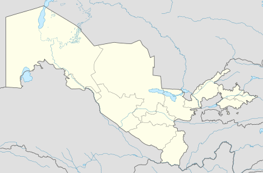 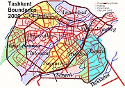 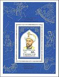Toshkent viloyati — Oʻzbekiston Respublikasi tarkibidagi viloyat. Respublikaning shimoli-sharqida. 1938-yil 15-yanvarda tashkil kilingan. Shimoliy va shimoli-gʻarbdan Qozogʻiston Respublikasi, shimoli-sharqdan Qirgʻiziston Respublikasi, sharqdan Namangan viloyati, janubidan Tojikiston Respublikasi, janubi-gʻarbdan Sirdaryo viloyati bilan chegaradosh. Maydoni (Toshkent shahri maydonisiz) 15,3 ming km². Aholisi (Toshkent shahri aholisisiz) 2.931 million kishidan ziyod (2022). Viloyat tarkibida 15 ta tuman (Bekobod, Boʻka, Boʻstonliq, Zangiota, Oqqoʻrgʻon, Ohangaron, Parkent, Piskent, Chinoz, Yuqori Chirchiq, Yangiyoʻl, Oʻrta Chirchiq, Qibray, Quyi Chirchiq), 17 shahar (Angren, Bekobod, Boʻka, Doʻstobod, Keles, Olmaliq, Oqqoʻrgʻon, Ohangaron, Parkent, Piskent, Toshkent, Toʻytepa, Chinoz, Chirchiq, Yangiyoʻl, Yangiobod, Gʻazalkent), 18 shaharcha (Alimkent, Boʻzsuv, Gulbahor, Zafar, Iskandar, Krasnogorsk, Nurobod, Olmazor, Salor, Tuyaboʻgʻiz, Chigʻiriq, Chorvoq, Eshonguzar, Yangibozor, Yangi chinoz, Yangihayot, Oʻrtaovul, Qibray), 146 qishloq fuqarolari yigʻini bor. Markazi — Nurafshon shahri. Tabiati Viloyatning shimoliy va shimoli-sharqiy qismlari Gʻarbiy Tyanshan togʻlari va uning tarmoqlari (Qurama, Piskom va Ugom togʻlari) bilan band. Eng baland joyi Piskom tizmasidagi Manas togʻi (4484 m). Chatqol va Qurama togʻlari orasida Ohangaron daryosi kesib oʻtgan, Ohangaron platosi joylashgan. Viloyat hududining katta qismi Sirdaryo tomon qiyalanib boradigan togʻ oldi tekisligi (Chirchiq-Ohangaron vodiysi)dan iborat. Ohangaron daryo vodiysi, Qurama togʻi, Angren-Olmaliq atrofida foydali qazilmalardan mis, polimetall rudalari, oltin, kumush, qoʻrgʻoshin, alyuminiy xom ashyosi, qoʻngʻir kumir, molibden konlari, plavik shpati va dala shpati, turli xil qurilish materiallari bor. Termal va mineral suv zaxiralari kup. Viloyat kuchli seysmik zonada joylashgan. Ayniqsa, Chirchiq va Ohangaron havzalarida aniq seziladigan zilzilalar buning ifodasidir. Juda kuchli zilzila 1868-yilda Toshkentda boʻlib oʻtdi va 1966-yilda takrorlandi. Turli intensivlikdagi yer osti silkinishlar vaqtvaqti bilan hozirgi kunda ham davom etmoqda.[2] Toshkent viloyati Bo'stonliq tumani Urung'och davlat tabiat yodgorligi Toshkent viloyati Bo'stonliq tumani Urung'och davlat tabiat yodgorligi Toshkent viloyati Bo'stonliq tumani Toshkent viloyati Bo'stonliq tumani Ugom-Chotqol davlat tabiat milliy bogʻi flora olami Ugom-Chotqol davlat tabiat milliy bogʻi flora olami Ugom-Chotqol davlat tabiat milliy bogʻi, gidrografik obyekt Ugom-Chotqol davlat tabiat milliy bogʻi, gidrografik obyekt Iqlimi keskin kontinental. Qishi nam, nisbatan iliq, yozi uzoq, issiq va quruq. Yanvarning oʻrtacha temperaturasi — 1,3°, −1,8°, eng past temperatura −34° (tekislikda), −38° (togʻ etaklarida), iyulnint oʻrtacha tempaturasi 26,8°, eng yuqori temperatura 43-47°. Tekislik qismida yiliga 250 mm, togʻ oldilariga 350-400 mm, togʻlarda 500 mm yogʻin yogʻadi. Yogʻinning koʻp qismi bahor va qishda yogʻadi. Qor togʻlardagina uzoqroq saqlanadi. Vegetatsiya davri tekislik qismida 210 kun. Daryolari Sirdaryo havzasiga mansub (Sirdaryo — oʻrta oqimi, uz. 125 km va uning irmoklari — Chirchiq, Piskom va Ohangaron). Bular Tyanshan togʻlaridan boshlanadi va suvidan elektr energiya olishda va sugʻorish ishlarida foydalaniladi. Sugʻorish kanallari: Boʻzsuv, Qorasuv, Dalvarzin, Toshkent va boshqa Tuyaboʻgʻiz suv ombori („Toshkent dengizi“), Chorvoq suv ombori, Ohangaron suv omborlarn bor. Tuproklari: tekislikda boʻz tuproq, togʻ etaklarida (500-600 m balandlikkacha) tipik boʻz tuproq, undan balandroqda chimqoʻngʻir, yuqrrirokda oʻtloqidasht tuproq, daryo terrasalarining quyi qismida, yer osti suvi yuza joylarda oʻtloqi va botqoq tuproq, daryo vodiylarida allyuvial tuproqlardan iborat. Toshkent viloyatining tekislik qismi toʻla haydalgan, Sirdaryo buylarida kichik tuqaylar (terak, tol, jiyda, har xil butalar) mavjud. Togʻ etaklari va togʻlarda (1200-1400 m balandlikkacha) togʻ dashtlari, yuqorirokda siyrak archazorlar, 2000 m dan balandda subalp va alp oʻtloklari bor. Daryo vodiylarida terak, tol; togʻ etaklari va togʻlarning oʻrtacha balandliklarida olmazor va yongʻoqzorlar uchraydi, togʻolcha oʻsadi. Tekisliklarda sarik. yumronqoziq, qoʻshoyoq, kaltakesaklar, chul toshbaqalari, qalqontumshuq ilon va boshqa, Sirdaryo toʻqaylarida chiyaboʻri, tolay quyoni, qobon; togʻ etaklari va togʻlarda ayiq, tulki, togʻ qoʻyi, jayra, boʻrsiq, kaklik, toʻrgʻay, archa boltatumshugʻi va boshqa, togʻ daryolari va jilgʻalarda qora baliq, osman, laqqacha uchraydi. Viloyat hududida „Chimyon“, „Burchmulla“, „Bogʻiston“, „Xumson“, „Oqtosh“ kabi bolalar oromgoxlari, iklimiy kurort va dam olish uylari bor. Toshkentdan 20 km uzoqlikda „Toshkent mineral suvlari“ balneologik kurorti joylashgan. Toshkent viloyatida UgomChatqol milliy bogʻi (maydoni 574 ming ga) tashkil etilgan. Boshqizilsoy boʻlimida meteorologiya styasi (1956-yildan) faoliyat koʻrsatadi. Toshkent viloyati qadimdan Buyuk ipak yoʻlidagi ilmfan, gʻunarmandchilik, madaniyat taraqqiy etgan makonlardan biri bulgan. Xoʻjakent yaqinidagi gʻordan topilgan tosh davriga mansub odam suyagining qoldiklari va qoyalardagi suratlar bu vohada qadimda ibtidoiy odamlar yashaganligidan dalolat beradi. Hududiy boʻlinishi Tuman nomi Tuman markazi 1 Angren shahri 2 Bekobod shahri 3 Olmaliq shahri 4 Ohangaron shahri 5 Nurafshon shahri 6 Chirchiq shahri 7 Yangiyo‘l shahri 8 Bekobod tumani 9 Bo‘ka tumani 10 Bo‘stonliq tumani 11 Qibray tumani 12 Quyi Chirchiq tumani 13 Oqqo‘rg‘on tumani 14 Ohangaron tumani 15 Parkent tumani 16 Piskent tumani 17 Toshkent tumani 18 Zangiota tumani 19 O‘rta Chirchiq tumani 20 Chinoz tumani 21 Yuqori chirchiq tumani 22 Yangiyo‘l tumani Viloyatni ikkiga boʻlish taklifi Shavkat Mirziyoyev 2021-yil 19-mart kuni Nurafshon shahrida oʻtkazilgan Xalq deputatlari Toshkent viloyati kengashining navbatdan tashqari sessiyasida Toshkent viloyatini ikkiga boʻlishni taklif qildi. Bunga sabab qilib, viloyatda birlik yoʻqligini, agar ikkiga boʻlinsa 2 ta ixcham viloyat boʻlishini qayd etgan: Toshkent viloyatini ikkiga boʻlmoqchiman. Birlik yoʻq bu viloyatda, agar boʻlsak ixchamgina ikkita viloyat boʻladi. Lekin koʻp oʻylayapman yangi hokimga imkon beraman. Men bu yerga viloyat aholisining shart-sharoitini yaxshilashga kelganman. Shavkat Mirziyoyev viloyat ikkiga boʻlinsa, qanaqa nom berishni ham oʻylab qoʻyganini maʼlum qilgan: Xafa boʻlmanglar, ammo sizda shu xususiyat yoʻq. Angrendagi oqsoqolning gapi Bekobodga toʻgʻri kelmaydi. Bekobodning gapini Chinoz olgisi kelmaydi. 22 ta hududni birdan boshqarishni vallomat hokim ham eplay olmayapti. Hozircha bu fikrni oʻzimda ushlab turibman. Mana hozir Hidoyatovni sizga rahbar sifatida tavsiya etyapmiz. Yana bir marta imkon berib koʻrmoqchiman. Toshkent viloyatida 150 mingta ish oʻrni yaratsa boʻladi. Oʻzidagi ishsizlar tugul, boshqa viloyatlardan keladiganlarni ish bilan taʼminlash mumkin. Yo hozir birlashib, viloyatni koʻtarishga birdamlik bilan harakat qilasiz, yoki boshqa qaror qabul qilamiz. Ochigʻini aytaman, viloyatni ikkiga boʻlsak, qanaqa nom berishni ham oʻylab qoʻyganman[3]. Vohaning iklim sharoiti, sersuvligi, dare boʻyi va togʻ oldi mintaqalarining yovvoyi oʻsimliklar va hayvonot dunyosiga boyligi qad. tosh davridayoq odam yashashi uchun qulay imkoniyat yaratgan. Toshkent viloyatining qad. aholisi toʻgʻrisida mil. av. 5-2asrlarga oid Yunon, Xitoy va boshqa Shark, manbalarida baʼzi maʼlumotlar saqlanib qolgan. Oʻlkani arxeologik jihatdan 19-asrda N. I. Veselovskiy, A. A. Divayev, N. P. Ostroumov, Ye. T. Smirnov va boshqa oʻrgandilar. 1920-30 yillarda M. V. Voyevodskiy, G. V. Grigoryev, V. D. Jukov va A. I. Terenojkinlar, 1941-yildan M. Ye. Massoy rahbarligida Oʻrta Osiyo universiteti arxeologiya kafedrasi aʼzolari, 1950-yildan Oʻzbekiston Fanlar akademiyasining arxeolog olimlari Ya. F. Gʻulomov, Oʻ. Islomov va R. H. Sulaymonovlar viloyat hududida tekshiruv ishlari olib bordilar. 1958-yildan Toshkent viloyatining oʻrta asr shaharlari va qad. konlarini Yu. F. Buryakov, 1966-yildan Toshkent shahrini V. A. Bulatova rahbarligidagi guruh ilmiy ravishda oʻrgangan. Koʻp yillik tadqiqotlar natijasida Toshkent viloyati arxeologik xaritasiga 760 ta qad. manzilgoh, shahar va qishloq xarobasi, qad. konlar, qabristonlar, mudofaa va irrigatsiya inshootlari tushirildi. Toshkent viloyatida ibtidoiy odamlar krldirgan dastlabki izlar paleolit davriga toʻgʻri keladi. Bu davrga oid odamlar yashagan gorlar va och iq manzilgoxlardan biri Koʻlbuloq makonidir. Koʻlbuloq yaqinidagi Qizilolmasoy va Qoʻshsoydan qad. tosh qurollar yasalgan ustaxona topilgan. Mustye davriga oid manzilgoxlar Obirahmat gʻorildm, Xoʻjakent qishlogʻi yaqinidan, Chirchiq vohasida esa Qoraqamish va Shoʻralisoydan topilgan. Yangi tosh davri (neolit)ga oid ashyo Toshkent shahrining garbida Qoʻshilish degan joydan topilgan. Bu davrda kurollar maydalashgan va soni koʻpaygan. Toshkent viloyatiningjez davri (mil. av. 2ming yillik) topilmalari Andronovo, Tozabogʻyop madaniyatiga oiddir. Tosh va toʻkma tuproqdan qilingan qabriston qoʻrgʻonlar Chirchiq va uning irmoqlari boʻyida, Obirahmat, Burchmulla (qarang Burchmulla xazinasi) qishloqlari, Iskandar shaharchalarida ochilgan. Qabrlardan Andronovo madaniyatiga xos qoʻlda yasalgan sopol idishlar, bilaguzuk, marvarid va marjonlar topilgan. Jez davridan boshlab rangdor va qimmatbaho metallar togʻ yon bagʻridagi konlardan qazib olina boshlagan. Temir davrida viloyat xududida skif qabilalarning sakmassaget ittifoqiga kirgan elatlar yashagan. Ularga tegishli yodgorliklar mil. av. 6-4asrlarga oiddir. Bu davr qabristonlaridan (Burchmulla yaqinida) tirnab bezalgan sopol idishlar, tosh va kumushdan yasalgan zebziynat buyumlari topilgan. Chirchiq vodiysida Burganlisoydan temir davriga oid sopol, metall, toshdan yasalgan uyroʻzgʻor buyumlari, jumladan, choynaksimon tumshukli va quloqli qozonlar va mehnat qurollari topilib oʻrganilgan. Idishlar dumaloqshaklda boʻlib, sirtiga angob boʻyogʻi berilgan. Mil. av. 1 — mil.ning 1-asrlarida Toshkent viloyati hozirgi hududi Qangʻ davlati tarkibiga kirgan. Toshkent viloyati oʻtroq xalklarining madaniyati koʻshni koʻchmanchi chorvador xalklar madaniyati bilan chambarchas aloqada boʻlgan. Koʻchmanchi chorvador xalqlar yodgorliklaridan Qovunchitepa yaxshi oʻrganilgan. Ohangaron daryosining quyi oqimida joylashgan Qanqa (qarang Xarashkat) xarobasi eng qad. shaharlardan biri boʻlgan. Shahar mil. av. 3-2 asrlarda vujudga kelgan. 1-asrga oid shaharlar Sirdaryo vodiysida Banokat, OhangaronOqqoʻrgʻon oraligʻida Kindiktepa va Qovunchitepalar boʻlgan. Bu yerlardan Toshkent hokimligining birinchi tanga pullari topilgan. Bu davrda hamma mayda shahar va qoʻrgʻonlar Shosh (Choch) va Iloq (Eloq)qa birlashgan. 7-asrda qalʼalari va mayda shaharchalari koʻpligi uchun Shoshni ming qalʼali davlat deb taʼriflaganlar. Shulardan biri Toshkentning shimolida (hozirgi shahar hududida) joylashgan Oqtepa qoʻrgʻoni boʻlib, u mustahkam mudofaa devorlari bilan oʻralgan. Ilk oʻrta asr shaharlarining arki va shahristoni boʻlgan. Shaharlarda hukumat uylari, savdo va xunarmandchilik rastalari tartib bilan joylashgan. Ularning maydoni 20 ga dan 65 ga gacha yetadi. Atrofdagi togʻlardan oltin, kumush, mis qazib olish natijasida hunarmandchilik yuksalgan. Kulolchilik va chorvachilik rivojlangan. Shosh va Iloq davlatlari oʻz nomlaridan tanga pullar zarb qilgan. Tangalarning yuz tomoniga vahshiy hayvonning rasmi (silovsin yoki bars), orqa tomoniga panshaxaga oʻxshash tam/a tushirilgan. Ilk oʻrta asrlarda aholi oʻrtasida otashparastlik keng yoyilgan. Ossuariyga odam suyaklari solib koʻmilgan qabrlar Toʻytepa, Qoraxitoy va Tuyaboʻgʻizdan (qarang Tuyaboʻgʻiztepa) topilgan. Ossuariylar tuxumsimon shaklda boʻlib, qopqogʻiga hayvon suratlari solingan. 9-10-asrlarda Toshkent viloyati Somoniylar davlati tarkibiga kirgan. Bu davrda shaharlar har tomonlama rivojlangan. 10-asr arab geograflari Istaxriy, Muqaddasiy va boshqa koʻrsatishicha, Xuroson va Movarounnahrda Shosh viloyati eng koʻp shagʻarli (40 taga yaqin) oʻlka boʻlgan. Eng yirik shaharlardan viloyat poytaxti Binkat, Iloq (Eloq) davlatining poytaxti Tunkat va yirik savdohunarmandchilik markazlari Xarashkat, Shuturkat, Nujkat boʻlgan. Qadimgi shahar xarobalarida oʻtkazilgan qazilmalar shaharlarning paydo boʻlishi, rivojlanishi va kengayishi har xil tarzda kechganligini koʻrsatadi. Shaharlar poytaxt boʻlgani, karvon yoʻllari ustiga joylashgani, konlardan yaxshi foydalangani va chorvador koʻchmanchi xalqlar bilan aloqada boʻlgani uchun rivojlangan. Shaharlarning maydoni 20 ga dan 200 ga gacha boʻlgan. Toshkent viloyati hududidan oʻtgan 2 mashhur karvon yoʻlining birinchisi Sirdaryo, Binkat, Xarashkat, Xudoykat orqali, ikkinchisi bir oz shim.rokdan Chinozkat, Shuturkat, Dafnigankat, Isfijob orqali oʻtgan. 9-10-asrlarda konchili k ishlari, metall eritish, kulolchilik va toʻqimachilik taraqqiy etgan. 10-asr geograflarining maʼlumotlariga koʻra, Shosh, Ilokdan har xil matolar, gilamlar, teridan ishlangan ashyolar, harbiy qurollar, egarlar, metall buyumlar, chorvachilik mahsulotlari va gʻalla tashqariga chiqarilgan. Toshkent hunarmandlari tomonidan yasalgan xunarmandchilik va zargarlik buyumlari, qurolaslahalar butu n sharqsa shuhrat qozongan. Toshkent vohasi oʻz tarixida takdirning koʻp sinovlarini, shahar va qishlokdarni vayronaga aylantirgan moʻgʻullar bosqini kabi ogʻir davrlarni boshidan kechirgan. Tarixiy manoalardan maʼlum boʻlishicha, faqat Amir Temur davriga kelib, vohada qaytadan rivojlanish boshlangan. Koʻplab shaharqishloklar yangidan kad rostlab, obod boʻlgan. Viloyat hududidagi mashhur Zangiota majmuasi Amir Temur tomonidan qurildi. Bu yodgorlik majmuining qurib bitkazilishi keyinchalik Mirzo Ulugʻbek tomonidan oxiriga yetkazilgan. Tarixdan maʼlumki, sohibqiron Amir Temur Toshkent sh. va Toshkent vohasiga koʻp marta tashrif buyurgan. Sirdaryo boʻyidagi moʻgʻullar vayron qilgan Banokat shahrini qayta tiklab uni oʻgʻli Shohrux nomiga Shohruxiya deb atagan. Aholisi Toshkent viloyatidagi aholining zichligi oʻrtacha 1 km² ga 157 kishini tashkil etadi, asosan, oʻzbeklar (60,9 %), shuningdek, rus (8,1 %), qozoq (14,3 %), tatar (2,5 %), tojik (5,0 %), koreys (2,8 %), ukrain va boshqa millat (turk, qirgʻiz, uygʻur, nemis va boshqa jami 80 millat) vakillari yashaydi (2004). Chorvokdan tortib Sirdaryogacha viloyat aholisi zich joylashgan. Ayniqsa, bir qancha yirik shaharlar zanjiridan tashkil topgan Toshkent aglomeratsiyasida aholi juda koʻp. Toshkent viloyatidagi koʻpchilik shaharlar poytaxtni ulkan shoda shaklida oʻrab olgan. Iqtisodiyoti Toshkent viloyati mamlakatning sanoati yuqori darajada rivojlangan viloyatlardan biridir. Uning geografik oʻrni iktisodiyotining ravnaq topishiga imkon beradi. Viloyat xoʻjalik kompleksi, asosan, poytaxt xoʻjalik kompleksini toʻldiradi. Ayni paytda viloyat respublika sanoat mahsulotining 20 %ni, elektr energiyasining 45 %ni, koʻmirning 98 %ni, sementning 43 %ni, poʻlat va metall prokatining 100 %ni, rangli metallarning asosiy qismini ishlab chiqaradi. Vshtoyatda 190 ta sanoat, 160 dan ortiq qoʻshma, 20 mingdan ortiq kichik va oʻrta biznes subyektlari faoliyat koʻrsatadi. Eng muximlari: „Gʻishtchi“ (Angren), „Agat va Farhod“ (Boʻstonliq tumani), „Metallurfemont“ (Bekobod), „Orion“ (Qibray tumani). Sanoatining yetakchi tarmoklari — energetika, mashinasozlik, metallurgiya, koʻmir, kon metallurgiyasi, kimyo sanoati, poyabzal, paxta tozalash, oziq-ovqat sanoati, toʻqimachilik hamda qishloq xoʻjaligi. mahsulotlarini qayta ishlash. Viloyatda sanoat korxonalaridan Bekoboddagi Oʻzbekiston metallurgiya, Olmaliqdagi konmetallurgiya, Yangi Angren, Toshkent issiqlik elektr styalari hamda Chirchikdagi oʻtga chidamli va qiyin eriydigan metallar kombinati ishlab turibdi. Chirchikdagi „Elektrkimyosanoat“, Olmalikdagi „Ammofos“ va Angrendagi „Oʻzbekrezinatexnika“ ishlab chiqarish. birlashmalari Respublika kimyo sanoatidagi yirik korxonalardan xisoblanadi. Bu korxonalarda qishloq xoʻjaligi. va boshqa tarmoqdar uchun azotli va fosforli oʻgʻitlar, ammiakli selitra, kaprolaktam ishlab chikariladi. „Oʻzbekkimyomash“, „Chirchiq qishloq xoʻjaligi mashinasozligi“, „Transformator“ korxonalarida qishloq xoʻjaligi. uchun zarur boʻlgan paxta seyalkalari, kultivatorlar, podborshchiklar va ehtiyot qismlar va boshqa ishlab chikariladi. Viloyatdagi „Toshkenttibtexnika“ (Qibray tumani), „OʻzBMZ“ (Toshkent tumani), „Gidravlika“, „Uskuna quruvchi“ (Zangiota tumani), Dalvarzin taʼmirlash zavodi (Bekobod tumani), Togʻ transporti uskunalarini taʼmirlash zavodi, „Angrengazmash“ (Angren sh.,) korxonalari yirik korxonalardan qisoblanadi. Viloyatda, shuningdek, „Ohangaronsement“, „Santexquyma“, „Ohangaronshifer“, „Ohangaronlinplast“, „Bekobodsemtaʼmir“, „Gʻazalkentoyna“ kabi qurilish materiallari ishlab chikaradigan va qayta ishlaydigan korxonalar ham mavjud boʻlib, ularda sement, shifer, keramika, oyna, gʻisht, linoleum, temirbeton konstruksiyalari kabi mahsulotlar tayyorlanadi. Oziq-ovqat sanoati xam rivojlangan. Bunda, asosan, mahalliy xom ashyodan mahsulot tayyorlanadi. Bu sanoat goʻshtsut, yogʻmoy, unqandolat, vinoaraq, tamaki va boshqa tarmoklarni oʻz ichiga oladi. Oziq-ovqat sanoati paxtachilik mahsulotlari, bogʻdorchilik, tokchilik, sabzavotchilik, chorvachilik va boshqalarga asoslanadi. Viloyatda 4 un zdi, konserva, pivo, araq, non va non mahsulotlari zdlari, sholi tozalash korxonalari bor. Yangiyoʻl sh. viloyat oziq-ovqat sanoatining markazlaridan biri. Bu yerda yogʻ, konserva, vino va spirt zdlari, qandolat fabrikalari mavjud. Chirchiq, Olmaliq, Angren shaharlari, Bekobod, Qibray, Zangiota, Toshkent, Boʻstonliq tumanlarida ham oziq-ovqat korxonalari koʻp. Qishloq xoʻjaligining asosiy tarmoklari: paxtachilik, bogʻdorchilik, tokchilik, pillachilik; togʻ etaklarida lalmikor dehqonchilik (asosan, bugʻdoy va arpa yetishtiriladi). Ayniqsa, mustaqillik yillarida sohada iktisodiyetning koʻp tarmokli turlari shakllanib borayapti. Toshkent viloyatida 50 mingdan ortiq dehqon xoʻjaligi va 7,5 mingdan ortiq fermer xoʻjaligi faoliyat koʻrsatadi. Bugungi kunda dehqon va fermer xoʻjaliklarining yalpi mahsulotdagi salmogʻi 72 %ni tashkil etadi (2004). Soʻnggi 10 yilda paxta urugʻchiligini rivojlantirishga eʼtibor ortib borayapti. Viloyat paxta seleksiyasi va urugʻchilik sohasida ilmiy izlanishlar natijasida jahon talablarini qondiruvchi tola, yuqori hosilli va tez pishar navlar yaratilmoqda. Toshkent viloyati 1990-yillargacha SSSRda kanop yetishtiriladigan yagona region edi. Sirdaryo va Chirchiq sohillarida sholi yetishtiriladi. Keyingi yillarda viloyatda qishloq xoʻjaligi. ekinlari strukturasini oʻzgartirishga alohida ahamiyat berilyapti. Paxtachilik, gʻallachilik asosiy oʻrinlarni egallaydi. Toshkent viloyatida shuningdek, kartoshka, meva va rezavor mevalar, uzum yetishtirish ham yil sayin ortib borayapti. Pillachilik bilan shugullaniladi. Chorvachilik rivojlangan. Toshkent viloyatida 168 shirkat xoʻjaligi, 8 parrandachilik fabrikasi bor. Chorvachilik goʻshtsutga ixtisoslashgan. Toshkent viloyatidagi barcha jamoa va xususiy xoʻjaliklarida 425,5 ming bosh kramol (shu jumladan, 190,3 ming sigir), 20,2 ming choʻchqa, 446,1 ming qoʻy va echki, 4018,2 ming parranda bor (2003). Chirchiq — Ohangaron vodiysi obikor dehqonchilikning asosiy rnidir. Viloyatdagi barcha ekin maydoni 315 ming ga, shu jumladan, yerning 108,0 ming gektariga paxta, 135 ming gektariga boshokli don ekinlari, 5,8 ming gektariga texnika ekinlari, 17,4 ming gektariga kartoshka, sabzavot va poliz, 39,7 ming gektariga yemxashak ekinlari ekiladi. Bogʻ, tokzor 30,8 ming ga va 8,5 ming ga oʻrmonzorlar bilan band, pichanzor va yaylovlar 198,5 ming gektarni egallaydi (2003). Ekinlarni sugʻorishda, asosan, Chirchiq daryosi, qisman Ohangaron va Sirdaryodan foydalaniladi. Toshkent viloyati respublika poytaxti aholisiga sut, goʻsht, tuxum, mevasabzavot yetkazib beradi. Kartoshka va sabzavot, asosan, Toshkent, Chirchiq, Yangiyoʻl, Angren shaharlari atrofidagi xoʻjaliklarda ekiladi. Zangiota va Qibray tumanlari Toshkent sh. aholisini kartoshka va sabzavot bilan taʼminlashga ixtisoslashgan. Viloyatda tokchilik va bogʻdorchilik ham yaxshi rivojlangan. Bogʻlarda asosan, nok va olma oʻstiriladi. Bogʻlarning asosiy qismi Boʻstonliq, Qibray, Yangiyoʻl, Parkent, Ohangaron, Zangiota, Toshkent, Quyi Chirchiq tumanlarida joylashgan. Sharqiy togʻli va togʻ etaklaridagi tumanlarda, asosan, qoʻy va echkilar boqiladi. Echkilarning 40 % angor echkilari, qoʻylar esa hisor va jaydari qoʻylardir. Viloyatda Quyi Chirchiq „Baliqchi“ tajriba namunaviy baliqchilik birlashmasi, Zangiotada Damachi balikchilik kti, Yangiyoʻl baliq chavoqlari yetishtirish davlat xoʻjaligi, Ixtiopatologiya markazi (Toshkent) va boshqa bor. m³9 Transport Toshkent viloyatidagi temir yoʻl uzunligi 354,2 km. Viloyat hududidan Oʻrta Osiyodagi mustaqil davlatlarni Sharqiy Yevropa shaharlari bilan bogʻlaydigan temir yoʻl liniyasi (shu jumladan, Moskva — Toshkent — Turkmanboshi) oʻtadi. Angren sh. va Chorvoq shaharchasi yoʻnalishidagi temir yoʻl tarmoqlari Toshkentdan boshlanadi. Toshkent atrofidagi temir yoʻl elektrlashtirilgan. 2004-yildan boshlab Toshkent — Samarqand yoʻlovchilar tashuvchi elektr poyezdi qatnay boshladi. Viloyatda avtomobil yoʻllarining tarmogʻi zich. Viloyat ahamiyatidagi avtomobil yoʻllarining umumiy uz. 6,6 ming km (shu jumladan, qattiq qoplamalisi — 5,9 ming km). Muhim avtomobil yoʻllari: Katta Oʻzbekiston trakti, Toshkent-Andijon-Oʻsh- Qashqar avtomobil yoʻli. Madaniy maorif, sogʻliqni saqlash va sport 2003/04 oʻquv yilida viloyatda 897 umumiy taʼlim maktabida 519,8 mingga yaqin oʻquvchi taʼlim oldi, 2 mehribonlik uyi (264 tarbiyalanuvchi) faoliyat koʻrsatdi. Viloyatda kadrlar tayyorlash milliy dasturi asosida yangi taʼlim tizimi shakllanmoqda. 2000-yilda viloyatning 45 nafar oʻquvchisi „Umid“ jamgʻarmasi orqali chet ellardagi nufuzli oliy oʻquv yurtlariga joʻnatildi. 2004-yilda Boʻstonliq tumanidagi 38maktab qoshida AQSH USAJD tashkilotining Oʻrta Osiyo va Qozogʻistonda sport va sogʻlomlashtirishni targʻibot qilish dasturi asosida maktab oʻquvchilari bilan sport haftaligi oʻtkazildi. Toshkent viloyatining barcha shaharlarida hamda Qibray, Piskent tumanlarida „Bogʻchamaktab“ majmualari tashkil etilgan. Bu majmualarda bolalarga chet tili, kompyuter savodxonligini oʻrgatish, alifbosiz oʻqishga eʼtibor berilgan. „Mehr va muruvvat yili“ munosabati bilan Olmaliq shahridagi 80sonli maxsus internat maktabi binosini mukammal taʼmirlash uchun Olmaliq togʻmetallurgiya kombinati tomonidan 350 mln soʻm miqdorida mablagʻ ajratilib, taʼmirlash ishlari olib borilmoqda. 1998—2003-yillarda yangi qurilish va qayta taʼmirlash hisobiga 29 ta kasbhunar kolleji, 4 akademik litsey foydalanishga topshirildi. Toshkent viloyati oʻrta maxsus, kasbhunar taʼlimi boshqarmasi tasarrufida 4 akademik litsey va 67 ta kasbhunar kolleji mavjud boʻlib ularda 57,4 mingga yaqin oʻquvchi taʼlim olmoqda. 2004-yilda Toʻytepa shahrida ijtimoiyiqtisodiy kasbhunar kolleji foydalanishga topshiriladi. Akademik litsey va kasbhunar kollejlarini oʻquvlaboratoriya jihozlari va uskunalari bilan taʼminlash, turli mavzularda ilmiyamaliy seminar oʻtkazish loyihalari boʻyicha tanlovlar tashkil qilish borasida Janubiy Koreya, Germaniya davlatlari bilan hamkorlik qilinmoqda. Oʻrta maxsus, kasbhunar taʼlimi tizimi boʻyicha 2003-yilda Amerika hamkorlik tashkiloti (AKSELS) tomonidan „Aʼlo taʼlim uchun mukofot“ dasturi asosida litseylar va kasbxunar kollejlari direktorlari, ingliz tili oʻqituvchilarining taqdimot seminarlari oʻtkazildi. 2004-yilda 757 oʻquvchi oʻqishni imtiyozli diplom bilan tugatdi. Viloyatda 2 oliy oʻquv yurti (Toshkent agrar universiteti, Toshkent viloyat pedagogika instituti) bor. Ularda 10,1 ming talaba taʼlim oladi (2004). Toshkent viloyatida eng yirik ilmiy tadqiqot institutlari, bogʻdorchilik, tokchilik va vinochilik, gʻoʻza seleksiyasi va urugʻchiligi, paxtachilik, chorvachilik, ipakchilik va oʻrmon xoʻjaligi, sugʻorish texnikasi ilmiy tadqiqot institutlari, qishloq xoʻjaligi.gini mexanizatsiyalash va elektrlashtirish Oʻrta Osiyo instituti, Oʻrta Osiyo rangli metallurgiya loyigʻalash, Sholikorlik ilmiy tadqiqot instituti va boshqa joylashgan. Toshkent viloyatida 4 oʻlkashunoslik muzeyi, 501 ommaviy kutubxona (7141,6 ming nusxa asar), 169 klub muassasasi, 35 bolalar musiqa va sanʼat maktabi (6323 oʻquvchi), madaniyat uylari, 746 badiiy havaskorlik jamoalari, 3 madaniyat va istirohat bogʻi bor. Toshkent viloyati va Toshkent shahridan Toʻychi hofiz, Zokirovlar, Rajabovlar sulolalari, akauka Shojalilovlar; Oʻzbekiston xalq hofizlari: Muhammadjon Karimov, Faxriddin Umarov, Ochilxon Otaxonov; Oʻzbekiston xalq artistlari: Turgʻun Alimatov, Orif Alimahsumov, Nuriddin Haydarov, Oʻzbekistonda xizmat I ■ ʻ koʻrsatgan artist Toshpoʻlat Matkarimov va boshqa yetishib chiqdilar. Viloyatda xalq hunarmandchiligi rivojlangan. Sogʻliqni saqlash. Toshkent viloyatida 10361 oʻrinli 96 kasalxona muassasasi, 42 dorixona, viloyat tez tibbiy yordam markazi boʻlimlari, 334 ambulatoriyapoliklinika muassasasi ishlab turibdi. Shulardan 174 qishloq vrachlik punkta, 43 qishloq vrachlik ambulatoriyasi, 11 stomatologiya poliklinikam, talabalar poliklinikasi va 195 feldsherakusherlik punkti va boshqa tibbiyot muassasalari faoliyat koʻrsatadi. Toshkent viloyatida oʻtgan 1996—2003-yillar mobaynida 174 qishloq vrachlik punktlari barpo etildi, 119 qishlok, shifokorlik ambulatoriyasi va feldsherakusherlik punktlari qishloq shifokorlik punktlariga aylantirildi. 1999- 2003-yillarda viloyatda 150 oʻrinli viloyat klinik shifoxonasi, 170 oʻrinli viloyat tugʻruq majmuasi, 90 oʻrinli viloyat yuqumli kasalliklar shifoxonasi, 60 oʻrinli narkologiya dispanseri, 120 oʻrinli viloyat ruhiyasab kasalliklari dispanseri, 100 oʻrinli viloyat silga qarshi kurash dispanseri, ayollar reproduktiv salomatligini tiklash markazi, Yuqori Chirchiq tumanida 40 oʻrinli „Nuroniy“ shifoxonasi, Bekobod, Toshkent, Oʻrta Chirchiq, Qibray tumanlarida yangi tugʻruq majmualari ishga tushirildi. Ular zamonaviy tibbiyot apparatlari, asbobuskunalar bilan jihozlandi. Toshkent viloyatidagi barcha tibbiy muassasalarda 5032 dan ziyod vrach, 22106 oʻrta tibbiy xodim ishlaydi. Viloyat hududida 95 ta bolalar oromgoxdari, 5 ta dam olish zonalari, 10 sanatoriy, 14 ta sanatoriyprofilaktoriy, 3 dam olish uylari, 7 ta pansionat, 2 bolalar sanatoriysi faoliyat koʻrsatadi. Toshkent shahridan 90 km shim.sharkda Chatqol togʻ yon bagʻirlarida „Chimyon“ dam olish zonasi joylashgan. Sport Viloyatdan sportning futbol, basketbol, voleybol, suv polosi, mini futbol, qoʻl toʻpi, shaxmat va boshqa boʻyicha sportchilar mamlakat musobaqalarida ishtirok etib kelmoqdalar. Toshkent viloyatida 49 stadion, sport majmuasi, 16 suzish havzasi, 38 tennis korti, otchopar, velotrek, 624 sport zali, 45 otish tiri, 683 basketbol, 994 voleybol, 359 qoʻl toʻpi, 667 futbol maydoni bor. Bugungi kunda 1701 ta jismoniy tarbiya va jamoalarida 600 mingga yaqin kishi jismoniy tarbiya va sport bilan shugʻullanadi. Oʻtgan davr mobaynida viloyatda oʻnlab jahon, Osiyo, respublika chempionlari yetishib chikdi. D. Mansurov erkin kurash, R. Saidov va I. Alborovlar boks, E. Akbarov, S. Zokirov, A. Bobojonov va M. Kalikulovlar dzyudo, M. Inoyatova stol tennisi, D. Turchin, M. Tarasov, Yu. Borzova. D. Strijkovlar baydarka va kanoe, V. Smirnov yengil atletika, S. Soy suzish boʻyicha Afina 2004 Olimpiadasiga yoʻllanmalarni qoʻlga kiritishdi. Katar davlati poytaxti Doxa shahrida boʻlib oʻtgan stol tennisi boʻyicha Osiyo chempionatida A. Dyugay oltin medalga sazovor boʻddi. 2004-yil may oyida Dogʻistonning Maxachqala shahrida oʻtkazilgan yirik xalqaro turnirida D. Mansurov 1oʻrinni egalladi. Viloyat jamoasi respublika miqyosida uloq, yengil atletika, boks, dzyudo, stol tennisi, qoʻl toʻpi, voleybol va boshqa sport turlari boʻyicha 1 va sovrinli oʻrinlar sohiblari boʻlishdi. Viloyatda sport turlari orasida futbol tobora ommaviylashmoqda. Futbol boʻyicha mamlakat chempionatining oliy ligasida „Doʻstlik“ (Toshkent viloyati), „Metallurg“ (Bekobod), „Kimyogar“ (Chirchiq), „Semurgʻ“ (Angren) jamoalari viloyat sharafini himoya qilmoqdalar. „Doʻstlik“ komandasi ikki bor mamlakat chempioni va bir marta billur sovrini sohibi boʻldi. Toshkent viloyatida xalqaro toifadagi sport ustalari, sport ustaligiga nomzodlar, 1toifadagi sportchilar tayyorlandi. Adabiyoti Toshkent vohasi Sharq adabiyotining qad. markazlaridan. Shayx Ahmad Taroziyning Mirzo Ulugʻbekka bagʻishlab yozilgan asarida Mavlono Lutfiyning ona vatani Toshkent boʻlgan, degan fikr ilgari surilgan. 14-16-asrlarda shoir Badriddin Chochiy, mashhur tarixchi, huquqshunos, tarjimon Koʻhakiy, 16-asrda Zayniddin Vosifiy T.da yashab ijod qilganlar. Xoja Ahror taklifi bilan Toshkentda Jomiy ham boʻlgan va ulugʻ mozorotlarni ziyorat qilgan. Toshkentlik tarixchi va geofaf olim Muhammad Solih „Tarixi jadidai Toshkand“ asarini yezdi. Dilkash, Gulshan, Almaiy, Kamiy kabi shoirlar voya ga yetdi. Avloniy, Nozimaxonim, Mirmuxsin Shermuhamedov, Sidqiy Xondayliqiy (Shavkat), Xislat, Miskin, Tavallo kabi isteʼdodlar yetishib chikdi. Shoir Akmal yetuk olim sifatida ham nom chiqargan. Dilafgorning toshbosmada devoni chop qilingan, Elbek turkologtilshunos, tarjimon va jurnalist sifatida ijod qildi. 20-asrning 20-30-yillaridagi Toshkent adabiy hayotida Abdulla Qodiriy, Oybek, Gʻafur Gʻulom. Botu, Ziyo Sayd, Oydin, Zulfiya, Gʻayratiylarning oʻrni katta. Toshkent viloyatida V. Gʻafurov, A. Ubaydullayev, Muzayyana Alaviya, M. Samadov, Usmon Umrzodalar ijod qiddilar. Oʻzbekiston xalq shoiri Rauf Parfi, yozuvchi H. Sultanov, shoirlar Abdulla Sher, Sh. Salimova, M. Toirov, O. Otaxonovlar Toshkent viloyatida tugʻilib kamol topgan adabiyot namoyandalaridir. Matbuot, radio va televideniyesi. Toshkent viloyatida 2 ta viloyat („Toshkent haqiqati“, „Tashkentskaya pravda“), 16 tuman, 9 shahar gazeta chiqadi. Viloyatda, shuningdek, 17 tarmoq, 7 jamoat gazeta va 1 jurnali nashr etiladi. 38 matbaa korxonasi faoliyat koʻrsatadi. Toshkent viloyatida (Toshkent shahrida) tajriba radioeshittirishlar dastlab 1926-yil boshlangan. 1927-yil 11-fevralda quvvati 2 kVt boʻlgan ommaviy radiostansiya ishga tushirilib, muntazam radioeshittirishlar olib borilgan. 1929-yildan boshlab muntazam radiogazeta eshittirishlari berilgan. 1930-yildan quvvati 20 kVt boʻlgan RV radiostansiyasi ishlay boshlagan. Respublika miqyosidagi eshittirishlardan tashqari, Toshkent shahar va viloyat radio tinglovchilari uchun har kuni Toshkent shahar va Toshkent viloyat radioeshittirish bosh tahririyati tayyorlagan eshittirishlar beriladi (1971-yildan). Shuningdek, „Oriat Dono“, „Oriat GʻM“ radiostansiyalari faoliyat koʻrsatadi. Televizion eshittirishlar 1956-yil 5-noyabrdan boshlangan. 1971-yildan rangli televizion koʻrsatuvlar berilmoqda. Toshkent sh. va Toshkent viloyati uchun moʻljallangan koʻrsatuvlar bosh tahririyati „Oʻzbekiston“ axborot dasturi, „Shahar yumushlari“, „Davra suhbati“, „Muloqot“, „Hamshaharlar“, „Shahar portreti“, „Oila“, „Mezon“, „Oltin beshik“, „Bahs“ kabi koʻrsatuv turkumlarini tayyorlaydi. Viloyatda, shuningdek, „Olmaliq-TV“, „Poʻlat“, „Chirchiq-TV“, „Bekobod oynai jahon“, „Orbita TRK“ telestudiyalari ishlab turibdi. Meʼmoriy yodgorliklari. Viloyat hududida ilk oʻrta asrlarda bunyod etilgan shahar, koʻshk va saroylar xaroba holida tuproq ostida qolib ketgan. Oʻrta asrlarga oid yirik meʼmoriy binolarning aksari kismi Tbshkent shahrida bunyod etilgan. Ulardan 14-19alarda qurilgan maqbara va madrasalarning ayrimlarigina hozirgacha saqlangan. Zangiota majmuasi Toshkent viloyatidagi eng mashhur, Oʻrta Osiyodagi noyob meʼmoriy yodgorlikdir. Zangiota qishlogʻida joylashgan mazkur yodgorlik 15- 20-asrlar davomida qurilgan. Zangiota maqbarasi, peshtoqli ayvon, ziyoratxona, goʻrxonalardan iborat. Majmua tarkibida Anbar bibi maqbarasi ham bor. Bekobod tumanida Qizilmozor maqbarasi joylashgan. Toshkent viloyatidagi tuman markazlarida Ikkinchi jahon urushida halok boʻlganlar xotirasiga, jumladan Chirchiq shahriga kiraverishda, Boʻzsuv kanali sohilida, Yangiyoʻl shahrida, Parkent shahridagi yodgorliklar oʻrnatilgan. Tabiati Har bir viloyat, tuman, xar kaysi shahar va kishlok-xammasining uziga xos kiyofasi, fayzu tarovati bor. Shular orasida Toshkent viloyati aloxida ajralib turadi. Toshkent viloyati deganda, inson kuz ungida Chotkrl, Ugam, Kurama, Chimyon kabi purvikrr toglari, serxrsil dalalari, ulkan sanoat korxonalari, zamonaviy shaharlari, fayzli va tarovatli kishlokgshri, sulim bogu poflari bulgan guzal bir voxa namoyon buladi. Bu tupima ran emas. Yukoridagi fikrlar yurtboshimiz Islom Karimov tomonidan 1999-yil dekabr oyida viloyat saylovchilari bilan bulgan uchrashuvda bildirilgan. Prezident Toshkent viloyati xakida suz yuritar ekan, bu voxaning Buyuk ipak yulidagi ilm-fan, xunarmandchilik, madaniyat tarakkiy etgan makonlardan biri bulganligiga aloxida eʼtibor karatdi. Prezident Toshkent viloyati xakida suz yuritar ekan, bu voxaning Buyuk ipak yulidagi ilm-fan, kunarmandchilik madaniyat tarakkiy etgan makonlardan biri bulganligiga aloxida eʼtibor karatdi. Darxakikat, Xujakent yakinidagi gordan topilgan tosh davriga mansub odam suyagining koldiklari va koyalardagi suratlar bu voxdtsa ajdodlarimiz juda uzok zamonlardan beri yashab kelganidan dalolat beradi. Buni bukj alloma Muxammad al-Xorazmiy, mashxur tarixchi at-Tabariy, jugrofiya olimi al-Istaxriy va boshqalar krldirgan muxim maʼlumotlar xam tasdiklaydi. Bu erda yasalgan xunarmandchilik va zargarlik buyumlari, kurol-aslaxalar butun Sharqda shuxrat kozongan. Bizgacha etib kelgan „Xudud al-olam“ nomli tarixiy kitobda: „Choch — bu katta viloyat, xalki jangovar va saxiydir. U erda kamon va uk-yoy yasaladi“, — degan suzlar bitilgani x.am buni yakkrl isbotlaydi. Bu mukaddas zamin uz tarixida takdirning kup-kup sinovlarini, shahar va kishloklarni vaironaga ailantirgan mugullar boskini kabi balo-kazolarni xam boshidan kechirgan. Zangi OtaTarixiy manbalarning shoxidlik berishicha, fakat sox;ibkiron Amir Temurdavriga kelib, voxdtsa kaytadan rivojlanish boshlangan. Kuplab shahar-kishloklar yangidan kad rostlab, obod bulgan. Shu maʼnoda viloyat xududidagi mashxur sufiy alloma Oyxuja ibn Toshxuja Zangiota makbarasining bunyod etilishi bilan boglik ibratli tarixiy voqealar teran ramziy maʼnoga ega, desak xech kanday mubolaga bulmaydi. Maʼlumki, bobomiz Amir Temur xazrat Yassaviyga makbara kurish xarakatini boshlaganida, nima uchundir, ish xadeganda yurishavermagan. Bu xrlning sababini bilolmay, xayron bulib yurganida, u bir kechasi tush kuradi. Tushida nuroniy bir zot Yassaviyga makbara kurishdan avval Zangiotaning kabrini obod kilish lozimligini soxibkiron bobomizga ayon kiladi. Shunda Amir Temur Zangiota ruxini shod etish uchun maxbara kurishga kirishadi. Bu muxdasham yodgorlik majmuining kurilishi keyinchalik Ulugbek Mirzo tomonidan oxiriga etkaziladi. Butun islom dunyosida maʼlum va mashxur Zangiota majmuining keyingi yillarda tubdan kayta taʼmirlanib, guzal va obod bir ziyoratgoxga aylantirilgani viloyat axlining savobli ishlaridan biridir. Yana bir misol. Tarixdan maʼlumki, buyuk soxibkiron Amir Temur mamlakatimiz poytaxtiga, Toshkent viloyatiga juda kup tashrif buyurgan. Chinoz, Okkurgon tumanlarida buyuk zotning muborak izlari krlgan. Xatto Okkurgon tumanida Banikent nomli shaharni kayta tiklab, uni sevimli farzandi Shoxrux nomiga „Shoxruxiya“ deb atagan. Hozirgi Okkurgon tumanida joylashgan bu azim gusha, jaxrngir bobomiz bunyod etgan shahar — Shoxruxiyada Amir Temur bogi barpo etilgan. Bu misollar ushbu zaminning nakadar mukaddasligidan dalolat beradi. Bu mukaddas zaminda muborak izlari qolgan Xoja Axror Valiy, Shayx Umar Bogistoniy, Abu Bakr Shoshiy, Abu Sulaymon Banokatiy, Xrfiz Kuykiy kabi zoti shariflarning xar biri xakida uzok gapirish mumkin Toshkent viloyati ulkan va noyob saloxiyatga ega. Bu erdagi bexisob imkoniyatlar, rivojlangan kommunikatsiya tarmoklarini olasizmi, shakllangan infratuzilmani olasizmi, suv taʼminoti yoki yuksak malakali kadrlarni olasizmi — ularning barchasi Toshkent viloyatida mavjud. Bugungi kunimiz va ertangi xayotimizning tarakkiyoti ustida ishlayotgan, ilmu fan va maʼrifat sohasiga uzining munosib xissasini kushayotgan kuplab tashkilotlarning xizmatini aloxida taʼkidlash lozim. Viloyat xududida birgina kishlok xujaligi muammolari bilan shugullanuvchi undan ortix ilmiy tekshirish instituti, nufuzli tadkikrt markazlari ishlab turibdi. Bu erda usimliklar genetikasi, sholikorlik kartoshka va sabzavotchilik paxtachilikka ixtisoslashgan bir kator ilmiy tadkikrt institutlari, Shreder nomidagi Uzumchilik va bogdorchilik ilmiy ishlab chikarish birlashmasi, respublikamizning barcha viloyatlariga mutaxassislar tayyorlab berayotgan, mamlakatimizda yagona bulgan Agrar universitet faoliyat kursatmokda. Shu nuxtai nazardan Toshkent viloyati xalk xujaligi sohasida paydo bulayotgan barcha yangilik va ixtirolarni sinab kuradigan katta bir tajriba maydoni, deb nom olgan bulsa, bu xam tabiiy bir xrldir. Bunyodkorlik voxasi deb nom olgan viloyatning fayzu tarovati va boshqa uziga xos xususiyatlari yana nimada namoyon buladi?! Yaxshisi, shu xakda: Toshkent viloyati Ozʼbekiston Respublikasining shimoliy-shartsida joylashgan. Maydoni 15.3 ming kv.km. Viloyatda 15 ta tuman, 16 ta shahar, 18 ta shahar kurgoni va 146 ta kishlok fukarolari yiginlari mavjud. Mamlakat poytaxti — Toshkent shahri bir vakxning uzida viloyatning maʼmuriy markazi xamdir. Yirik shaharlari: Angren, Chirchiq, Olmaliq, Bekobod, Yangiyo'l va Oxangarondir. Viloyatda 2,4 mln. kishi istikrmat kiladi va axrli soni jixatidan respublikada uchinchi urinda turadi. Axrli zichligi jixatidan xar bir kv.km.ga 155 kishi tugri keladi.axolining milliy tarkibi: uzbeklar, ruslar, kozoklar, tojiklar, kirgizlar, uygurlar, tatarlar, koreyslar, ukrainlar va boshqa 80 ga yakin millat xam da elatlardan iborat. Viloyatning shimoliy-sharqiy va sharkiy kismini Chotkol, Qurama, Piskom va Ugam tizma tog;lari tashkil qiladi. Hududining katta kismi janub va janubiy garbga tomon Sirdaryoga kiya tushgan togoldi tekisligidan iborat. Viloyat yukrri seysmik zonada joylashgan. Ik/1imi kontinental. 1 xishi nam, nisbatan yumshok Yozi issik, KURUK-Yanvarning urtacha xarorati — 1.3 S dan — 1.8 S gacha, iyulniki 26.8 S. Yiliga tekisliklarga 250 mm, togoldilariga 350-400 mm, togparga 500 mm. yogin tushadi. Kor koplami fakat toglarda turgun. Vegetatsiya davri tekisliklarda kariyb 210 kun. Asosiy daryolari: Sirdaryo (Toshkent viloyatida uzunligi 125 km) va uning irmokgshri, Chirchiq; (Pekom bilan birga) xamda Angren xisoblanadi. Tekislikda buz tuprok, togoldilarida (500-600 m. balandlikkacha) — tipik buztuprok, undan yukorida chimli-kungir, utloki — dasht tuproklar tarkalgan. Dare terassalarining kuyi kismida, shuningdek er osti suvlari er yuzasiga yakin joylarda, dare vodiylarida allyuvial tuprok/iap bor. Tekislik kismi xaydalib, ekin ekiladi. Fakat Sirdaryo soxillarida tukayzorlar bor. Toglarrr 1200-1400 m. balandlikkacha togdashtlari, undan yukrrida archazorlar, 2000 metrdan yukorida subalp va alp utloklari uchraydi.
 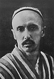
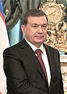
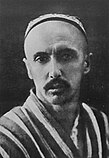
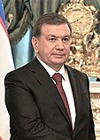
Xorazm viloyati — Oʻzbekiston Respublikasi tarkibidagi viloyat. 1925-yil fevraldan 1938-yil yanvargacha Xorazm okrugi, 1938-yil 15-yanvarda viloyat maqomiga oʻtkazilgan. Umumiy maydoni — 6,05 ming kvadrat kilometr. Etimologiyasi Xorazm soʻzi birinchi marta zardushtiylarning muqaddas kitobi „Avesto“da tilga olingan. Qadimgi xorazm tilidan tarjima qilingan Xorazm „pastlikdagi yer“, „oziq-ovqatli yer“ degan maʼnoni bildirgan degan fikrlar ham bor. Tarixi Miloddan avvalgi 8-asrda xorazmliklar tomonidan asos solingan Markaziy Osiyodagi eng qadimiy davlatlardan biri tashkil topdi. Bu yerda massagetlar, saklar, apasaklar, oslar, daxlar va boshqalar qabilalari ham yashagan. 12-asrda Oʻrta Osiyoda qudratli Xorazmshohlar davlati tashkil topdi. U oʻzining eng gullab-yashnagan choʻqqisiga 13-asr boshlarida Alauddin Muhammad II davrida erishgan. Ammo imperiyaning gullagan davri uzoq davom etmadi va u moʻgʻullar bosqinidan natijasida Xorazmshohlar davlati quladi. 1920-yil fevral oyida Xiva xonligining vorisi sifatida Xorazm Xalq Sovet Respublikasi tashkil topdi[1]. Hukmdor rasman taxtdan voz kechgach, 1920-yil 26-aprelda Birinchi Xorazm Qurultoyi (yigʻilishi) eʼlon qilindi[2]. 1923-yil 30-oktabrda XXSR Xorazm Sotsialistik Sovet Respublikasiga aylantirildi. Oʻrta Osiyoda milliy-hududiy chegaralanish munosabati bilan Xorazm SSR tugatilishini eʼlon qildi. Xorazm SSRning oʻzbeklar yashaydigan 23 ta tumani yangidan tashkil qilingan Oʻzbekiston SSR tarkibiga Xorazm viloyati qilib kiritildi[3]. U 1924-yilning kuzigacha, uning hududi Oʻzbekiston SSR (Xorazm viloyati tarkibida), Turkmaniston SSR va Qoraqalpogʻiston Muxtoriyati oʻrtasida boʻlingangacha mavjud edi. 1925—1930-yillarda va 1932—1938-yillarda Xorazm tumani tashkil etilgan. 1938-yil 15-yanvarda alohida viloyat sifatida tashkil topdi[4]. Xorazm algebra va algoritm asoschisi Muhammad bin Muso Al Xorazmiy va shar shaklidagi yer xaritasini yaratgan Abu Rayxon Beruniy hamda boshqa olim va arboblarning vatani hisoblanadi. 2003-yilda Xorazm viloyati Jaloliddin Manguberdi ordeni bilan taqdirlangan[5]. Maʼmuriy-hududiy tuzilishi Respublikaning shimoli-gʻarbida, Amudaryo quyi oqimining chap sohilida. Shimoliy va shimoli-sharqdan Qoraqalpogʻiston Respublikasi, janubiy va janubi-gʻarbdan Turkmaniston, janubi-sharqdan Buxoro viloyati bilan chegaradosh. Tarkibida 11 qishloq tumani (Bogʻot, Gurlan, Urganch, Xiva, Xonqa, Shovot, Yangiariq, Yangibozor, Qoʻshkoʻpir, Hazorasp va Tuproqqal’a), 3 shahar (Urganch, Xiva, Pitnak), 7 shaharcha (Gurlan, Xonqa, Chalish, Shovot, Yangibozor, Qoʻshkoʻpir, Hazorasp), 100 qishloq fuqarolari yigʻini bor. Viloyat 11 ta tumanga ajratilgan, maʼmuriy markazi – Urganch shahri. Viloyatning boshqa katta shaharlari – Xiva va Pitnak[6]. Xorazm viloyatida 56 ta shahar tipidagi aholi punktlari bor[7]. 2020-yil mart oyida Hazorasp tumanining sharqiy qismidan yangi Tuproqqalʼa tumani tashkil etildi[8]. Aholisi Viloyat aholisi 1 930 747 kishi, taxminan 60 foizi qishloq joylarda yashaydi. Hududlar kesimidagi aholi soni[9]: Urganch tumani — 205 480 kishi, Hazorasp tumani — 198 657 kishi, Xonqa tumani — 191 620 kishi, Qoʻshkoʻpir tumani — 176 059 kishi, Shovot tumani — 174 352 kishi, Bogʻot tumani — 169 486 kishi, Gurlan tumani — 151 950 kishi, Xiva tumani — 149 698 kishi, Urganch shahri — 146 709 kishi , Yangiariq tumani — 118 925 kishi, Xiva shahri — 95 246 kishi, Yangibozor tumani — 89 427 kishi, Tuproqqal’a tumani — 56 558 kishi. Aholisining etnik tarkibi Qadimda Xorazmda yashovchi oʻzbek qabilalari bir necha etnik guruhlar boʻlib, ular Abulgʻoziy Bahodirxon (1643-1664) tomonidan 4 guruh (toʻp)ga boʻlingan. Har bir guruhga 2 qabila (birinchi guruhga uygʻur va nayman, ikkinchisiga qoʻngʻirot va qiyot, uchinchisiga nukuz va mangʻit, toʻrtinchisiga qangʻli va qipchoqlar) birlashtirilgan. Shuningdek, bir necha qabila qoldiqlari (jaloyir, kenagas, doʻrmon, yuz, ming, shix, qatagʻon) va ayrim etnik guruhlar (alieli, xoʻjaeli va sayidlar) mavjud boʻlgan. Amudaryodan suv oladigan kanallar va sugʻoriladigan yerlarning katta qismi shu qabila va urugʻlarga taqsimlab berilgan va ular asta-sekin oʻtroqlashib, dehqonchilik bilan shugʻullanganlar. Qolgan guruhlar Xorazmda juda kam boʻlib (bular qoʻngʻirotlar va boshqalar) viloyatning Gurlan va Shovot tumanlari, mangʻitlar Gurlan tumani va Shovot tumani (AnbarManaq)da, qiyotlar Shovot tumanida, qipchoqlar Urganch, Shovot va Qoʻshkoʻpir tumanlari, doʻrmonlar Urganch va Shovot (Anbar Manaq) tumanlarida, xidireli Urganch va Xivada, toma Xonqa va Bogʻot tumanlarida joylashgan. Iqtisodiyoti Viloyatda 32 ta xorijiy investitsiyali qoʻshma korxona faoliyat yuritadi. Ular budjeti 1997-yilda 301,7 million AQSh dollarini tashkil etdi. Viloyat iqtisodiyoti paxtani qayta ishlash va oziq-ovqat sanoatiga asoslangan. Koʻp sonli paxta tozalash zavodlari, neft qazib oladigan va ipak yigiradigan fabrikalar, toʻqimachilik va vinochilik korxonalari va hokazolar. Shuningdek, qurilish materiallarini ishlab chiqarish taraqqiy etgan. Xiva gilam fabrikasida tayyorlangan gilamlar butun dunyoga mashhur. Mashinasozlik va toʻqimachilik tarmoqlari rivojlanib bormoqda. Mahalliy qishloq xoʻjaligining asosiy yoʻnalishi — albatta, paxtadir. Boshoqlilar, ayniqsa, guruch yetishtirish soʻnggi bir necha yilda keskin oshdi. Shuningdek, koʻplab bogʻ va uzumzorlar, qovun va qovoq plantatsiyalari bor, kartoshka dalalari butun viloyatni qamrab olgan. Shakar tozalash zavodi qurilishi rejalashtirilmoqda. Viloyat iqtisodiy jihatdan oʻsishga tayyor. Mazkur sohalarga eʼtibor qaratilsa, quyidagilarga erishish ehtimol qilinmoqda: Paxta, ipak xom ashyosi va boshqa mahalliy zaxiralardan foydalanadigan mavjud korxonalarni taʼmirlash, texnik zamonaviylashtirish va kengaytirish. Paxta tolasini qayta ishlash jarayonini yaxshilash va oshirish, ip, gazlama, paxta yigiruv ipi va gilamlar tayyorlash va eksport qilish zarur. Mavjud oziq-ovqat sanoati tarmoqlarini yangilash va yangilarini, ayniqsa, mevalar, uzum, sabzavot, qovun va qovoq bilan bogʻliq korxonalarni tashkil etish. Goʻsht-sut mahsulotlariga asoslangan korxonalar kengaytirilishi kerak. Oʻrab-joylash uskunalarini ishlab chiqarish. Idish materialarining yetishmasligi — eksportga moʻljallangan tomat pastasi, oʻsimlik yogʻi, turli turdagi jem va marmeladlar ishlab chiqarish yoʻlida jiddiy toʻsiq boʻlmoqda. Ushbu loyihalarni amalga oshirish uchun viloyatga xorijiy investitsiyalar koʻrinishida qariyb 52,1 million AQSh dollari zarur. Xorazm viloyati temiryoʻllari umumiy uzunligi 130 km dan ortiq. Viloyat Rossiyaning Yevropa qismi va Kavkaz bilan temiryoʻl orqali bogʻlangan. Yoʻllarning umumiy uzunligi — 2 300 km, shoh koʻchalar 2 000 km masofaga yastangan. Viloyat aviareyslari Xorazmni butun Markaziy Osiyo, shuningdek, Rossiya mintaqalarining katta qismi va MDH bilan birlashtiradi. Xiva — xalqaro sayyohlikning katta markazi. 1997-yilda Xiva oʻzining 2500-yilligini nishonladi. Xiva atrofida sayyohlikni yanada rivojlantirish uchun koʻp ishlar qilindi. Tabiati Iqlimi keskin kontinental, oʻrtamiyona sovuq qish va quruq issiq yoz boʻladi. Viloyat choʻl zonasida, Xorazm vohasining gʻarbiy qismida, oʻrtacha 100 m balandlikda joylashgan. Relyefi pasttekislikdan iborat. Amudaryo qadimgi deltasining bir qismi boʻlib, daryo yotqiziqlaridan tashkil topgan. Qoraqum choʻliga tutashgan gʻarbiy va janubi-gʻarbiy qismi qum bilan qoplangan. Foydali qazilmalardan ohaktosh, qum, gil va boshqa qurilish materiallari bor. Qishi moʻtadil sovuq, qor kam yogʻadi, yanvarning oʻrtacha temperaturasi −5°, eng past temperatura −32°. Yozi issiq, quruq, iyulning oʻrtacha temperaturasi 30°, eng yuqori temperatura 47°. Vegetatsiya davri 200-210 kun. Yiliga 78-79 mm yogʻin tushadi, asosan, mart-aprel oylarida yogʻadi. Shimoliy va shimoli-sharqiy shamollar esadi. Yagona daryosi — Amudaryo viloyat hududida keng vodiy boʻylab oqadi, qirgʻoqlari past, shu sababli toshqin boʻlib turadi. Toshqinga qarshi dambalar qurilgan. Amudaryo suvidan yirik kanallar yerdamida ekinlarni sugʻorishda foydalaniladi. Viloyat janubida mayda shoʻr koʻl, botqoqlik va shoʻrxok koʻp. Tuproqlari Amudaryoning allyuvial yotqiziqlaridan tashkil topgan. Daryo vodiysida oʻtloqi va oʻtloqi-botqoq tuproqlar, gʻarbida qumliklar uchraydi. Sugʻoriladigan yerlarda, asosan, boʻz tuproq boʻlib, kuchli shoʻrlangan. Viloyat hududining asosiy qismi haydaladigan yerlar. Amudaryo qirgʻoqlaridagi toʻqayzorlarda terak, tol, jiyda, yulgʻun, kandir, qumliklarda saksovul va boshqa oʻsimliklar oʻsadi. Yovvoyi hayvonlardan, asosan, kemiruvchilar, sudraluvchilar, toʻqayzorlarda toʻqay mushugi, chiyaboʻri; qushlardan toʻrgʻay, oʻrdaklar, kulrang gʻoz, oqqush, birqozon, baliqchi, dehqonchumchuq, qizilishton, zargʻaldoq va boshqalar bor. Suv havzalarida ondatra va nutriya iqlimlashtirilgan. Aholisi, asosan, oʻzbeklar (96,3 %), shuningdek, turkman, rus, qozoq, tatar, koreys, qoraqalpoq va boshqa millat vakillari ham yashaydi. Aholining oʻrtacha zichligi 1 km² ga 231,6 kishi. Shaharliklar 321,7 ming kishi, qishloq aholisi 1091 ming kishi (2004). Hududiy boʻlinishi Tuman nomi Tuman markazi 1 Bogʻot tumani Bogʻot 2 Gurlan tumani Gurlan 3 Xonqa tumani Xonqa 4 Tuproqqal'a tumani Pitnak 5 Xiva tumani Xiva 6 Qoʻshkoʻpir tumani Qoʻshkoʻpir 7 Shovot tumani Shovot 8 Urganch tumani Qorovul (qishloq) 9 Yangiariq tumani Yangiariq 10 Yangibozor tumani Yangibozor (Yangibozor tumani) 11 Hazorasp tumani Hazorasp Xoʻjaligi va sanoati Xorazm viloyati iqtisodiyotida qishloq xoʻjaligi bilan birga sanoat ham salmoqli oʻrinni egallaydi. Paxta tolasi, kalava ip, gilam, oziq-ovqat mahsulotlari, mashina uskunalari eksport qilinadi. Viloyatda paxta tozalash sanoati rivojlangan (barcha tuman markazlari va Urganch shahrida paxta tozalash zavodlari bor). Gurlan, Bogʻot, Xonqa, Urganch, Xiva va Hazoraspda toʻqimachilik, pillachilik, tikuvchilik; Xivada gilam fabrikasi, „Xiva gilami“ aksiyadorlik jamiyati ishlab turibdi. Faoliyat koʻrsatayotgan jami korxona va tashkilotlar 13748 ta. Mikrofirmalar soni 11340 dan ziyod (2004). Viloyatda 36 qoʻshma korxona va ularning filiallari ishlab turibdi. Oʻzbekiston — Turkiya „Bagat Tekstil“, „Xorazm-Nurtop“, „SemurgʻSanTe“, „Xorazm Tekstil“, „Memgilam“; Oʻzbekiston — AQSh „Amerozindustriyes“, „Xiva malikasi“, „Nurlayt“, „Rahnamo Hyp“; Oʻzbekiston - Germaniya „Unixo“, „OʻzOlmonXotelz“, „Xiva Karpet“; Oʻzbekiston-Britaniya „Xiva“; Oʻzbekiston-Rossiya „NamunaAgrofud“; Oʻzbekiston - Italiya „Meva“; Oʻzbekiston-Ukraina „KiyevXorazm“; Oʻzbekiston — Xitoy „Aziya Tekstil LTD“; Oʻzbekiston-Turkmaniston „GʻayratXumoyun“ va boshqa shular jumlasidandir. Qishloq xoʻjaligi asosini paxtachilik va gʻallachilik tashkil etadi. Polizchilik, sabzavotchilik, bogʻdorchilik, chorvachilik, pillachilik ham rivojlangan. Shirkat, ijapa va xususiy fermer, dehqon xoʻjaliklari, aksiyadorlik jamiyatlari faoliyat koʻrsatadi. Viloyatda jami ekin maydoni 232,1 ming ga, shundan 129,4 ming ga qishloq xojaligi shirkatlari (69 ming ga yer xususiy fermerlar, 33,7 ming gektar yer dehqon xoʻjaliklari)ga tegishli. Umumiy yer fondining 38,4 % haydaladi, 18,2 % yaylov, oʻtloq, 1,3% bogʻ va tokzor; oʻrmon va changalzorlar 9,6 % ni, tutzorlar 0,9 %ni tashkil etadi. 1991—2003-yillarda kanal va ariqlar rekonstruksiya qilinib, suv yoʻllarining umumiy uzunligi koʻpaydi. Xorazm viloyatidagi shoʻr suvlar viloyat tashqarisiga zaxkashlar orqali chiqarib tashlanadi. Viloyatda irrigatsiya va melioratsiya ishlariga alohida eʼtibor berib kelinmoqda. Jami ekin maydonining 102,3 ming gektariga paxta, 86 ming gektariga don, 3 ming gektariga kartoshka, 9 ming gektariga sabzavot ekiladi (2003). Don (asosan, bugʻdoy, sholi) yetishtiriladigan maydonlar kengaydi. Xorazm viloyati mamlakatda sholi yetishtirish boʻyicha 1oʻrinda turadi. Viloyat xususiy va jamoa xoʻjaliklarida 492,3 ming qoramol (shu jumladan, 202,1 ming sigir), 247,1 ming qoʻy va echki, 1437,6 ming parranda boqiladi. 6500 dan ziyod fermer xoʻjaligi chorvachilikka ixtisoslashgan. Urganch, Xiva parrandachilik fabrikalari faoliyat koʻrsatadi. Xorazm viloyatida Paxtachilik ilmiy tadqiqot stansiyasining paxtachilik-bedachilik zonal kompleks tajriba styasi (Urganch shahrida), Qoraqum ilmiy tadqiqot stansiyasi, paxta navlarini tajriba qilish uchastkasi (Xiva tumanida), mevali daraxtzorlar koʻchatzori, oʻrmon koʻchatzori (Urganch tumanida) va boshqa bor. 1996—2004-yillarda Islom Bobojonov, Masharip Quvoqov, Bekturdi Jumaniyozov, Vera Pak, Anor Mahmudova „Oʻzbekiston Qahramoni“ unvoniga sazovor boʻldilar. Transporti Xorazm viloyati orqali Toshkent - Moskva, Dushanbe - Moskva temiryoʻl oʻtgan, Urganch — Toshkent yoʻnalishida poyezdlar qatnaydi. Transport yoʻli uzunligi 128 km (2004). Amudaryo ustiga qurilgan Hazorasp temiryoʻl koʻprigi ishga tushirilib (Hazorasp yaqinida, 2004), Hazorasp — Miskin — Toshkent temiryoʻl masofasi qisqardi. Koʻprik har sutkada 14 poyezd, 20 ming avtomobil oʻtkazish imkoniyatiga ega. Koʻprik strategik ahamiyatga ega. Viloyatdagi qattiq qoplamali avtomobil yoʻllarining uz. 2750 km (2004). Xiva - Urganch yoʻnalishida trolleybus qatnovi (1997-yildan) yoʻlga qoʻyilgan. Urganch, Xiva shaharlaridan Toshkent, Samarqand, Navoiy, Buxoro, Nukus va boshqa shaharlarga avtobuslar katnaydi. Urganch shahri xalqaro va mahalliy yoʻnalishlar aeroportlaridan xorijiy davlatlar (shu jumladan, Parij, Tokio, Munhen, Tel-Aviv, Moskva, Simferopol va boshqalar) shuningdek, Toshkent, Nukus va boshqa shaharlar bilan muntazam aviatsiya aloqasi oʻrnatilgan. Viloyat orqali Oʻrta Osiyo — Markaz, Buxoro — Ural, Turkmaniston — Rossiya xalqaro gaz magistral quvurlari oʻtkazilgan. Maorif, madaniyat, sogʻliqni saqlash va sport 2003/04-oʻquv yilida 537 umumiy taʼlim maktabi (shu jumladan, 47 ixtisoslashgan maktab, gimnaziya, internat maktabi) boʻlib, 335,4 mingga yaqin oʻquvchi taʼlim oldi. 1997-yilda Xorazm tasviriy va amaliy sanʼati litseyi ochildi. Viloyatdagi 57 kasb-hunar kolleji va oʻrta maxsus oʻquv yurtlarida 34 mingdan ziyod talaba oʻqiydi (2004). Oʻzbekiston Respublikasi Prezidenti Islom Karimovning tashabbusi bilan Xorazm Ma'mun akademiyasi qayta tiklandi, pedagog kadrlar tayyorlashga ixtisoslashgan viloyat pedagogika instituti (1935 — 1992) Al-Xorazmiy nomidagi Urganch davlat universitetiga aylantirildi. Urganch davlat universiteti, Toshkent tibbiyot akademiyasining Urganch filialida 7460 talaba taʼlim oladi (2004). Oʻzbekiston Fanlar akademiyasi arxeologiya mintaqaviy boʻlimi, paxtachilik, Qoraqum ilmiy tadqiqot stansiyalari faoliyat koʻrsatadi. Xorazm viloyatida Xiva davlat „Ichan qalʼa“ tarixiy-meʼmorlik muzey-qoʻriqxonasi va uning filiallari, 424 jamoat kutubxonasi (5 mln. asar), 302 klub muassasasi, madaniyat uylari va saroylari, 10 ga yaqin madaniyat va istirohat bogʻi, Xorazmiy, Beruniy, Jaloliddin Manguberdi, Avesto yodgorlik bogʻ-majmualari, „Orazibon“, „Avazxon“, „Doston“ folklor-etnografik xalq dastalari, "Muborak, „Yulduz“, „Navbahor“, „Xiva naqshlari“ ashula va raqs dastalari, milliy dorbozlar guruhi, koʻplab badiiy havaskorlik jamoalari bor. Ogahiy nomidagi viloyat musiqali drama va komediya teatri, viloyat qoʻgʻirchoq teatri (Xiva shahrida) ishlab turibdi. Xorazm musiqiy hayoti Xorazm vohasida qadimgidan yashab kelayotgan xalqlarning turmush tarzida muhim oʻrin egallagan. Qadimgi Xorazm hududidagi Qoʻyqirilgan qalʼa, Tuproqqalʼa, Qirqqiz qalʼa kabi istehkomlardan topilgan va asl nomlari saqlanmagan torli (dutorsimon, changkanora, arfaga oʻxshash), damli (nay, mizmar), zarbli (daf va nogʻoraga oʻxshash) cholgʻu sozlarni ushlagan ayol va erkaklar tasvirlari tushirilgan tangalar va ganch haykalchalar bu voha musiqa sanʼatining ildizlari juda qadimgi ekanligidan dalolat beradi. VIII asr boshidagi arablar istilosi oqibatida Qadimgi Xorazm madaniyati va sanʼati xarobalikka yuz tutib, islom madaniyatining yangi anʼanalari taraqqiy eta boshladi. Xorazmiy, Beruniy, Abu Abdullo ibn Yusuf Xorazmiy (X asr) va boshqa olimlarning qomusiy asarlarini musiqaga bagʻishlangan qismlarida musiqani hisob ilmining tarkibiy boʻlagi va uni inson ruhiyatiga taʼsiri taʼriflanadi. „Mafotix ululum“ asarida oʻsha davrdagi mavjud cholgʻular: ud, changkanora, qanun, tanbur, mizmar, argʻanun, nay, surnaylarning nomlari keltirilgan. Oʻsha davrda Gurganjda cholgʻu asboblar yasovchi ustalar mahallasi boʻlgan. Muhammad Xorazmshoh davrida (1200-1221) mashhur sozanda ustod Mahmud, Yusufbek Dutoriy kabi sozandalar edda tanilgan. 14-asrda yashagan „Muhabbatnoma“ dostonining muallifi Xorazmiy, Abdurahim Hofiz Xorazmiy, ayniqsa, Alisher Navoiyning „Sabʼai sayyor“ dostonida va boshqa klassik shoirlarning gʻazallarida oʻsha davr maqomlari, sozandalari va cholgʻulari yuksak did bilan taʼriflanadi. Shuningdek, sanʼatkorlar homiysi Sulton Vayis (Uvays), baxshilar piri Oshiq Oydinlar ham shu davrda yashaganlar. Muhammad Rahimxon (1806-1825) davriga kelib Niyozjonxoʻja va uning shogirdlari Mahdumjon qozi, Muhammadjon Sandiqchi, Abdusattor maxram, uning shogirdi Xudoybergan kosib va boshqa tanbur maqomlarini rivojlanishiga katta hissa qoʻshdilar. Komil Xorazmiy Xorazm maqomlarini oʻzi ixtiro qilgan „Tanbur chizigʻi“ asosida qogʻozga tushirishni boshlab bergan yetuk musiqashunoslardan hisoblanadi. 1883-yilda dastlab Xorazm maqomlari tarkibidagi „Rost“ maqomi, keyin, bu ishni davom qildirib oʻgʻli Muhammad Rasul Mirzo Xorazm maqomlaridan Buzruk, Navo, Dugoh, Segoh, Iroq va Rostlarni qogʻozga tushirgan. Bu davrda Otash baxshi, Nurjon baxshi va ayniqsa, Eshvoy baxshi hamda uning shogirdi Muhammadniyoz Gurji kabi baxshilar nom qozonganlar. Nomlari nomaʼlum boʻlgan ustoz sozandalar va baxshilar tomonidan Xorazm dutor yoʻllari jamlanib 11 ta dutor maqomi shakllangan. Mashhur sozanda va nafis taʼb egasi Muhammad Rahimxon Soniy (Feruz) xonlik davri (1864-1910) ga kelib Xorazmda musiqa sanʼati yanada rivoj topdi. Feruz saroyida 40 dan ortiq shoir, 20 ga yaqin maqomchi sozandalarni toʻplab mushoira va maqom kechalarini oʻtkazib turardi. Saroy maqomchilari orasida Paxlavon Niyoz Mirzaboshi Komil, Muhammad Yoqub Devon Xarrot, Yoqub fozachi, Qalandar Doʻnmas va boshqa maqomlarning cholgʻu va aytim qismlarini boyitganlar. Feruzning oʻzi ham maqom cholgʻu qismlariga 14 ga yaqin kuy bastalagan. Bu davrda 40 dan ortiq baxshi, 32 sozanda qoʻshlari (sozandalarning jamlangan dastasi) faoliyat koʻrsatgan. Ular sayil va bayramlarda xonning koʻrigidan oʻtar va el-yurtning tomoshasini oʻtkazishga fatvo olar edilar. Baxshilar ichida mashhurlari: Rizo baxshi, Ernazar baxshi, Suyav baxshi; sozanda qoʻshlaridan elga tanilgan namoyandalardan Shomurod surnaychi va boshqa boʻlgan. 1910-yil Xiva xonligi taxtiga Asfandiyorxon oʻtirganidan keyin saroy shoir va sozandalari tarqab ketdi. Xorazmda shoʻrolar hokimiyati oʻrnatilgach, maqom va musiqa rivoji biroz toʻxtadi. 1923-yilda Xiva shahrida musiqa maktabi tashkil qilinib, skripka, klarnet, tanbur kabi cholgʻu asboblarda ijro etish boʻyicha sinflar ochiddi. 1925-yilda Moskva shahrida Mulla Bekjon Rahmon oʻgʻli va Muhammad Yusuf Devonzodalarning „Xorazm musiqiy tarixchasi“ kitobi chop ettirdi. Bu davrda sozandalardan Safo Ollaberganov (Mugʻanniy), Qurbon sozchi Ismoilov, Madrahim Yoqubov (Sheroziy), Qurbonnazar Abdullayev (Bola baxshi), Matyusuf Xarratov (Chokar), Otajon Abdullayev, Hojixon Boltayev; ayol xalfalardan Onajon Sobirova (Anash maxram), Onabibi qoriya Otajonova (Ojiza) va boshqa mashhur boʻlishgan. Ularning izdoshlari va shogirdlari ichida xonandalardan Komiljon Otaniyozov, Vahobjon Fayozov, Kommuna Ismoilova, Sultonposhsha Rahimova, Matyoqub Rahimov, Quvondiq Iskandarov, Jumanazar Bekchonov, Olmaxon Hayitova, Roʻzmat Jumaniyozov, Ortiq Otajonov, Otajon Xudoyshukurov, Bobomurod Hamdamov; sozandalardan dutorchi N. Boltayev, qoʻshnaychi Q. Bobojonov, torchi H. Bobojonov, gʻijjakchi O. Hasanov; bastakorlar R. Ollaberganov, Sh. Ramazonov, Sh. Solayev, A. Otajonov, M. Yusupov, S. Hayitboyev, U. Musayev, R. Abdullayev, Q. Polvonov, M. Otajonov, R. Bekchonov, Sh. Fayzullayev, Q. Rahimov; musiqashunos O. Matyoqubov va boshqa maʼlum. 1958-1960-yillar orasida M. Yusupov tomonidan toʻplab notaga olingan „Oʻzbek xalq musiqasi“ (6,7 va 9 jildlar) chop etildi. 1980-1987-yillarda Xorazm maqomlarining yangi toʻldirilgan variantlari nashrdan chiqsi. Xorazm viloyatida 16 ta bolalar musiqa maktabi (shulardan 3 tasi sanʼat maktabi), musiqa bilim yurti, filarmoniya, viloyat teleradiokompaniyasi qoshidagi maqomchilar ansambli faoliyat koʻrsatadi. Xorazm viloyatidan Devonai Hisobiy, Niyozjonxoʻja, Niyoziy, Xudoybergan muhrkan, Komil Xorazmiy, Matyoqub Xarratov, M. Xudoyberganov, Safo Mugʻanniy, X. Devonov kabi yirik sanʼatkorlar; Bola baxshi, Q. Iskandarov, R. Jumaniyozov, F. Davletov singari Oʻzbekiston xalq dostonchi va hofizlari; Matyusuf Xarratov, M. Yusupov, R. Ollaberganov, Sh. Ramazonov, L. Abdullayeva, I. Niyozmatov, R. Abdullayev, O. Matyokubov, S. Davletov, U. Musayev, O. Ollaberganov, Q. Rahimov kabi Oʻzbekistonda xizmat koʻrsatgan sanʼat arboblari va kompozitorlar; Sheroziy (Yokubov), K. Otaniyozov, H. Boltayev, K. Rahimov, M. Rahimov, B. Rahimova, S. Devonov, S. Rahimova, G. Yoqubova, M. Ixtiyorova, O. Hayitova, G. Matyoqubova, M. Bobojonov, O. Otajonov, G. Rahimova singari Oʻzbekiston xalq artistlari; Norbek baxshi, Qalandar baxshi kabi Oʻzbekiston xalq baxshilari yetishib chiqqanlar. Xorazm viloyatida xalq amaliy sanʼati va hunarmandchilik, ayniqsa, Xiva, Hazorasp va Xonqa shaharlarida qadimdan taraqqiy etgan. Yogʻoch oʻymakorligi, zargarlik, kandakorlik, gilamchilik, kulolchilik va boshqa rivojlangan. Xiva gilamchilik fabrikasi, „Xiva sopoli“ aksiyadorlik jamiyati va boshqa ishlab turibdi. Oʻzbekiston xalq rassomi A. Boltayev, xalq naqqoshlari va yogʻoch oʻymakor ustalari O. Polvonov, R. Masharipov, S. Bogʻbekov, mashhur kulol, koshinkor usta R. Matchonov va boshqalarning nomlari mashhur. Sogʻliqni saqlash Viloyatda 6269 oʻrinli 36 kasalxona va 211 tibbiy muassasalarda 3882 vrach (har 10 ming kishiga 27,1 vrach), 13337 oʻrta tibbiy xodim ishlaydi. Davlat dasturiga asosan, viloyatda Respublika shoshilinch tibbiy yordam markazining viloyat boʻlimi va barcha tuman markaziy kasalxonalari qoshida uning boʻlinmalari tashkil etilgan hamda zaruriy tibbiy va texnik jihozlar bilan taʼminlangan. Xorazm viloyatida 4010 oʻrinli 20 sanatoriy faoliyat koʻrsatadi. 2004-yilgacha oʻz kasbi boʻyicha xususiy ish faoliyati yuritish uchun 50 ga yaqin mutaxassisga litsenziya berildi. Sport Xorazm viloyati sportchilari sportning koʻplab turlari boʻyicha turli darajadagi musobaqalarda ishtirok etmoqda (kurash, futbol, gandbol, voleybol, tennis, boks va boshqalar). „Umid nihollari — 2003“ sport musobaqalari oʻtkazilishi munosabati bilan shahar va tumanlarda 17 ta yirik sport inshootlari, „Olimpiya zaxiralari“ kolleji, 10- 15 ming kishilik stadion foydalanishga topshirildi. Viloyatda 14 sport majmuasi, shuningdek, 16 stadion, 8 suzish havzasi, 136 tennis korti, otchopar, sport zallari, otish tiri, basketbol, gandbol, futbol maydonlari bor. 389 ming kishi jismoniy tarbiya va sport bilan shugʻullanadi. Turli miqyosdagi respublika va xalqaro sport musobaqalarida viloyatning 9 sportchisi oltin, 8 tasi kumush medallarga sazovor boʻlishdi. Xorazmda „Umid nihollari-2003“ tadbiri katta bayram sifatida nishonlandi. „Umid nihollari“, „Prezident kubogi uchun“, Pahlavon Mahmud xotirasiga bagʻishlab oʻtkazilgan respublika va xalqaro sport bellashuvlarida 6 sportchi respublika va jahon chempioni unvonlarini oldilar. Xorazm viloyatida 10 dan ortiq xalqaro toifadagi sport ustasi, 100 dan ortiq sport ustasi, 300 dan ziyod sport ustaligiga nomzod, shuningdek, koʻplab 1-toifadagi sportchi tayyorlandi. Viloyatning 30 dan ortiq sportchisi Oʻzbekistonning turli milliy terma jamoalari aʼzolaridir. Adabiyoti Xorazm adabiyoti zamonlar silsilasida yemirilib, yoʻqotilib, qayta shakllandi. Arablar Xorazmga bostirib kelganda oʻzlariga qaraganda juda ham yuqori madaniyatga duch keldilar. VIII asrga kelib qadimgi xorazmiy tilining batamom yoʻqotilishi bilan VIII asrdan toki XII-XIII asrlargacha fors hamda arab va XII asrlardan boshlab turk oʻzbek tillarida ijod qilindi. Abu Mansur Saolibiyning „Yatimat addaxr fi maxosin axlal asr“ („Asr ahlining fozillari haqida zamonasining durdonasi“) tazkirasida X-XI asrlarda Xorazmda yashab, arab tilida ijod etgan yetuk arabnavislar haqida keng maʼlumot beriladi. Qariyb 5 asr davomida (VIII-XII asrlar) arab tilida ijod qilgan koʻpgina Xorazm shoirlari oʻz faoliyati bilan Xuroson va Movarounnahrda shuhrat qozonganlar. XI asr boshida Xorazmda ilk bor tashkil etilgan Xorazm Maʼmun akademiyasida jahon tarixi, fani va adabiyotiga munosib ulush qoʻshgan Beruniy raisligida Ibn Sino, Abu Nasr Iroq kabi zamonasining yirik fan va madaniyat namoyandalari ijod qildilar. Asli balxlik boʻlib, Xorazmda turgʻun yashab Xorazmshoh Otsiz hukmronligi davrida yuqori martabaga ega boʻlgan Rashididdin Vatvot („Saʼd al-mulk“ faxriy unvonini olgan) fors va arab tillarida ijod qilib sheʼriyatda murassaʼ, tarseʼ, tajnis va boshqa usullarni qoʻllashda fors tilida yozadigan peshqadam shoirlardan biri hisoblanadi. Ahmad Yassaviyning shogirdi Sulaymon Boqirgʻoniy XII asrdayoq turkiyda ijod qilgan. Bu davrlarda arab, fors tillari va turkiyda baravariga ijod qilingani oʻsha davr adabiy muhitining naqadar koʻp qirraligini koʻrsatadi. Xorazmdagi adabiy jarayon Chingizxon istilosi va undan keyingi davrda ancha murakkab kechgan boʻlsa-da, toʻxtab qolmadi. Kubroviylik tariqatining asoschisi, „Shayxi valitarosh“ („Avliyolar yetishtiruvchi shayx“) nomi bilan butun Sharqqa mashhur boʻlgan shoir Najmiddin Kubro, „Muhabbatnoma“ muallifi Xorazmiy (XIV asr), Nasriddin Burhoniddin Rabgʻuziy (XIII asr oxiri — XIV asr boshlari), Pahlavon Mahmud, Haydar Xorazmiy, Qutb Xorazmiy, Sayfi Saroyi (XIV asr) kabi buyuk siymolar ijod etgan. Rabgʻuziyning „Qissasi Rabgʻuziy“ asari oʻzbek nasrining mukammal namunasi boʻlishi bilan eʼtiborlidir. Xorazm adabiy muhiti, ilm-fani jahon maʼrifati taraqqiyotiga taʼsiri eʼtirofga loyiq. Az-Zamaxshariy arab dunyosini kezib ilm tarqatgan boʻlsa, 1414-yilda Sherozga kelgan Abdurahim Hofiz Xorazmiy turkiyda bitgan gʻazallari bilan shuhrat topgan. Alisher Navoiy „Majolis un-nafois“ asarida Xoja Abulvafoyi Xorazmiy va Mavlono Jaloliddin Rumiy masnaviysiga sharh bitgan Husayn Xorazmiylarni katta hurmat bilan taʼriflaydi. Xorazm adabiy jarayonining rivojlanishi natijasida yetuk adabiyot namoyandalari yetishib chiqa boshladi. Bular Ravnaq (1725-1805), Roqim (1742-1825), Nasimiyning gʻazallarini oʻzbek tiliga agʻdargan mashhur shoir Andalib (1710-70), Vosifiyning „Badoye ul-vaqoyeʼ“ asarini forsiydan tarjima qilgan, oʻzbek va fors tillarida baravar ijod etgan Dilovarxoʻja (XVIII asr), Navoiyning „Xamsa“sidagi dostonlarning nasriy variantlarini yaratgan Umar Boqiy (XVIII asr), oʻz zamonasining ulugʻ shoirlari Munis, Ogahiy, Komil Xorazmiy (1825-1899), Bayoniy va boshqalardir. Feruz davrida Xorazm adabiy muhiti yanada rivojlandi. Uning buyrugʻi bilan shoir Tabibiy „Majmuai 30 shuaro payravi Feruz“ tazkirasini tuzadi va Feruzning 101 gʻazaliga 30 shoir yozgan payravni kiritadi. Tazkiranavis Laffasiy tuzgan „Tazkirai shuaro“da (1945) Munis davridan Laffasiy davrigacha ijod qilgan (Munis va Laffasiy bilan birga) Xorazmdagi 51 shoirning hayoti va ijodi haqidagi maʼlumotlar bitilgan. Xorazmda qadimdan dostonchilik rivojlangan. Xalq anʼanaviy dostonlari baxshilar orqali ogʻizdanogʻizga oʻtib sayqallangan. „Avazxon“, „Bozirgon“, „Sayyodxon va Hamro“, „Qorakoʻz Oyim“, „Gulruh pari“, „Shobaxrom“, „Zavriyo“, „Oshiq Gʻarib va Shohsanam“, „Yusuf Ahmad“ kabi dostonlar Xorazm xalq ogʻzaki ijodining nodir boyligidir. Xorazm xalq dostonlari hajmi boshqa oʻzbek xalq dostonlariga qaraganda kichikligi, shu bilan birga musiqaviyligi bilan ajralib turadi. Xorazmda doston kuylovchilarni baxshi deb atab kelganlar. Xorazm vohasida XIX asrning 1-yarmida Eshvoy baxshi mashhur boʻlgan. Xorazm vohasida muallif nomi bilan atalgan „Eshvoy nagʻmasi“ kuyi tarqalgan. XIX asrda Xorazmda yashab ijod qilgan baxshilardan Otash, Gʻaribniyoz baxshilar, Bobo baxshi, Jumanazar baxshi Bobo baxshi oʻgʻli, Bekjon baxshi, Abdrim baxshi va boshqa shuhrat qozongan. XX asr boshlarida Xoʻjayoz baxshi atoqli baxshi hisoblangan. U „Oshiq Gʻarib va Shohsanam“, „Sayyodxon va Hamro“, „Bozirgon“, „Alpomish“ va „Goʻroʻgʻli“ turkumidagi dostonlarni yod bilgan va uni xush ovoz bilan dutor joʻrligida ijro etgan. Undan keyingi davrda Bola baxshi, Matnazar Jabbor oʻgʻli, Qalandar baxshi, Bola baxshining farzandlari Norbek baxshi, Matyoqub va Yetmishboy baxshilar Xorazm dostonchilik maktabini taraqqiy qilishga hissa qoʻshdilar. Xorazmdagi xalq ogʻzaki ijodining yana bir turi xalfachilikdir. Xalfalar (folklorda) repertuarida xalq dostonlari, rang-barang xalq qoʻshiqlari, mumtoz shoirlarning ashulabop gʻazallari asosiy oʻrin olgan. XIX-XX asrning 2-yarmida Xorazmda Xonimjon xalfa, Onajon xalfa, Onabibi kori (Ojiza), Shukurjon xalfa, Sharifa xalfa, Joni xalfa, Bibijon xalfa, Durxonim xalfa, Kish xalfa, Guljon kori, Oysha kulol xalfa, Yoqut xalfa Vafoyeva, Sharifa noʻgʻay Otasheva, Ugʻil Noʻgʻay Quryozova, Yoqut xalfa Seytniyazova va boshqalarning nomlari xalq orasida tanilgan edi. Xalfachilik sanʼati anʼanalari Xorazm yosh ijrochilari tomonidan keyingi davrlarda ham davom ettirilmoqda. XX asrda Xorazm adabiyotshunosligida Mugʻanniy, Suhanvar, Umar Qurboniy, Qalandar Qurboniy, M. Abdullayev, Egam Rahim, Ahmad Bobojon, Ayyomiy, Rahim Bekniyoz, Doʻstjon Matjon va boshqalarning nazm va nasriy asarlarida maʼrifatchilik gʻoyalari oʻz aksini topgan. Omon Matjon, Bahrom Roʻzimuhammadning falsafiy sheʼriyati, Erkin Samandarning „Daryosini yoʻqotgan qirgʻoq“, „Tangri qudugʻi“, Komil Avazning „Qoʻnalgʻa“ romanlari, Matnazar Abdulhakimning Najmiddin Kubro, Bedil, Pahlavon Mahmud ruboiyoti va gʻazallarining oʻzbek tiliga tarjimalari muhim ahamiyatga ega. Professorlardan O. Madrahimov, S. Roʻzimboyev, Z. Doʻsimov, J. Yusupov, arab va fors tillari bilimdoni A. Ahmedov va boshqa adabiyotshunoslikka doir asarlar yozdilar. Ayniqsa, bu borada H. Abdullayevning Abu Bakr Xorazmiydan hozirgacha yashab ijod qilgan adabiyot ahlining hayoti va ijodini aks etttirguvchi tazkirasi, N. Krbulovning 2 jildli „Xorazm adabiy muhiti“ asari, S. Roʻzimboyevning „Goʻroʻgʻli“ kitobi muhim ahamiyatga ega boʻldi. Xorazm viloyatida Oʻzbekiston ijodiy uyushmalari (yozuvchilari, rassomlar va boshqalar) viloyat tashkilotlari faoliyat koʻrsatmoqda. Matbuot, radioeshittirishi va televideniyesi Xorazm viloyatida 2 viloyat gazeta („Xorazm haqiqati“ va „Xorezmskaya pravda“, 2 ta gazeta adadi 5500), 10 tuman gazeta, 3 jurnal („Ilm sarchashmalari“, „Diydor“, „Xiva-Sharq gavhari“, adadi 2000) nashr etiladi. Viloyatda, shuningdek, bir qancha tarmoq gazetalari chop qilinadi. Jami 27 nomdagi gazeta va jurnallar chiqariladi. Xorazm (Xiva)da Muhammad Rahimxon Feruz tashabbusi bilan 1874-yilda Turkistonda ilk bor toshbosma ochilgan. Toshbosmada ilk matbaachilik faoliyatini birinchi oʻzbek matbaachisi Otajon Abdalov boshlagan. Ushbu toshbosma faoliyati keyinroq, 1920-yildan „Inqilob quyoshi“ gazetasi, 1939-yildan „Xorazm haqiqati“, 1941-yildan „Xorezmskaya pravda“ gazetalarining tashkil qilinishiga zamin yaratgan. Xorazm viloyatida 1874—1924-yillarda faoliyat koʻrsatgan matbaachilik anʼanalari 1991-yilda qayta tiklandi. „Xorazm“ nashriyoti ishga tushirilib, darsliklar, kitoblar nashr etish yoʻlga qoʻyildi. „Xorazm tarixi“ (1995), „Hazorasp tarixi“, „Xonqa tarixi“ (1995-1998), „Avestoning yaratilishi“ (2001), „Maʼmun akademiyasi“ (toʻplam, 2003) kabi kitoblar chop etildi. Xorazm viloyatida birinchi radioeshittirishlar 1936-yildan boshlangan. Viloyat radiosi oyiga 31 soatlik hajmda eshittirishlar beradi. Telekoʻrsatuvlar 1961-yildan olib boriladi. Mahalliy koʻrsatuvlar, 1979-yildan rangli tasvirda (oʻzbek va rus tillarida), haftasiga 15 soat hajmda namoyish qilinadi. Meʼmoriy yodgorliklari Xorazm viloyatidagi tarixiy va meʼmoriy yodgorliklar jahonga mashhur. Viloyatda 149 meʼmoriy va shaharsozlik, 16 arxeologik, 21 monumental sanʼat va haykaltaroshlik yodgorligi bor. Meʼmoriy yodgorliklarning asosiy qismi Xiva shahrida joylashgan. Uning Ichan qalʼa qismi esa UNESCOning Jahon merosi qoʻmitasi hisobiga kiritilgan. Xivadagi yodgorliklardan Juma masjid (X-XVIII asrlar), Pahlavon Mahmud meʼmoriy majmuasi (XIV asr, XIX-XX asr boshlari), Said Alouddin (XIV-XVIII asrlar), Uch Avliyo (1549, 1821) maqbaralari, Toshhovli (XIX asr), Koʻhna Ark (XVII-XIX asrlar) saroylari, Muhammad Aminxon madrasa va minorasi va boshqa mehmonlar va sayohatchilar diqqatini oʻziga tortadi. Shuningdek, Xiva, Hazorasp, Xonqa, Shovot, Yangiariq, Qoʻshkoʻpir, Bogʻot va boshqa tumanlarida ham tarixiy obidalar mavjud. Shulardan Xiva tumanidagi Chodra hovli (XVIII-XIXasrlar), Shohimardon meʼmoriy majmuasi (XIX asr), Qubla tozabogʻ saroyi (1893-1913), Hazoraspdagi Muzrobshoh (XVI-XVIII asrlar), Shayx Qosim eshon maqbaralari (XVIII-XIX asrlar), qadimgi Hazorasp qalʼasi (mil. av. VI-V asrlar), Xonqa tumanidagi Said ota masjidi (1766), Shovot tumanidagi Vayangan bobo maqbarasi (XVI-XIX asrlar); Yangiariq tumanidagi Shayx Muxtor Valiy meʼmoriy majmuasi (Ostonabobo, XIV asr) ; Qoʻshkoʻpir tumanidagi Imorat bobo meʼmoriy majmuasi (XVI-XIX asrlar) va boshqalarni aytish mumkin. Mustaqillik yillarida viloyatda yakka tartibda uy-joy qurish tez rivojlandi. Urganch, Xiva shaharlarlariga yoʻldosh Navroʻz, Qosmaobod shaharchalari bunyod etildi. Viloyatda tarixiy va meʼmoriy yodgorliklarni asrash, taʼmirlash ishlariga Oʻzbekiston hukumati tomonidan katta eʼtibor berilmoqda. Xiva shahrining 2500 yillik yubileyi (1997), Jaloliddin Manguberdining 800 yiligi (1999), Avesto kitobi yaratilishining 2700 yilligi (2001) bayramlari arafasida viloyatda keng miqyosda meʼmoriy yodgorliklarni taʼmirlash, ular atroflarini obodonlashtirish va koʻkalamzorlashtirish ishlari amalga oshirildi. Xorazm viloyati 2003-yil 22-avgustda Jaloliddin Manguberdi ordeni bilan mukofotlangan[10]. Adabiyotlar Tolstov S. P., Qadimgi Xorazm madaniyatini izlab, T., 1964; Vinogradov A. V., Neoliticheskiye pamyatniki Xorezma, M., 1968; Srednyaya Aziya v drevnosti i srednevekovye, M., 1977; Trudi Xorezmskoy arxeologoetnograficheskoy ekspeditsii, t. 1-10, M., 1952-77; Xorazm tarixi, 1995, Urganch; Qilichev T., Xorazm xalq teatri, T.; Sadokov R. L., Muzikalnaya kultura drevnego Xorezma, M., 1970; Sadokov R. L., Tisyacha oskolkov zolotogo saza, M., 1971. Xorazm.uz
 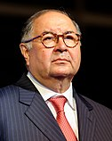
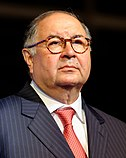